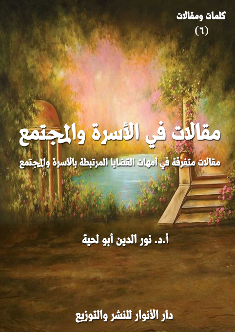

الكتاب: مقالات في الأسرة والمجتمع
الوصف: مقالات متفرقة في أمهات القضايا المرتبطة بالأسرة والمجتمع
السلسلة: كلمات ومقالات
المؤلف: أ. د. نور الدين أبو لحية
الناشر: دار الأنوار للنشر والتوزيع
الطبعة: الثانية، 1443 هـ
عدد الصفحات: 209 <
ISBN: 978-620-4-72224-5
لمطالعة الكتاب من تطبيق مؤلفاتي المجاني وهو أحسن وأيسر: هنا

يتضمن هذا الكتاب مجموعة مقالات نشرتها في أوقات ومجلات مختلفة، وهي جميعا تدور حول أمهات القضايا المرتبطة بالأسرة والمجتمع، وهذه عناوينها:
1. الاعتدال الفكري والسلم الاجتماعي.
2. حقوق الأقليات غير المسلمة في المجتمع المسلم بين النص والاجتهاد.
3. حكم استعمال البصمة الوراثية لإثبات نسب (ابن الزنا) برؤية مقاصدية.
4. الأقليات المسلمة في الغرب.
5. التهنئة بميلاد المسيح برؤية شرعية وعقلية.
6. عيد النيروز .. وشعائر الفرح.
7. الأعمال الصالحة المهداة للموتى وحدودها.
8. فتاوى الطلاق .. وخراب البيوت.
9. حق المرأة في السكن منفردة وصلته بالعقوق.
10. لصوص .. ولكن لا يشعرون.
11. المهر المؤخر ودوره في الحفاظ على حقوق المرأة.
12. ذكر الله في البيت وآثاره في الاستقرار النفسي.
13. أداء الصلوات التطوعية في البيوت ودورها في استقرار الأسرة.
14. من كان منكم بلا خطيئة .. فليرمها بحجارة.
15. صراع العرف والشرع في ثقافتنا الفقهية.
16. مجالس الصلح .. والاحتيال على الشريعة.
17. العزة الآثمة.
18. الشباب .. والاختيارات الصعبة.
19. الفقه ومعالجة المشكلات الواقعية.
مقالات في الأسرة والمجتمع (9)
يتضمن هذا الكتاب مجموعة مقالات نشرتها في أوقات ومجلات مختلفة، وهي جميعا تدور حول أمهات القضايا المرتبطة بالأسرة والمجتمع، وهي نوعان:
أولا ـ مقالات علمية أكاديمية: نشرتها في مجلات متخصصة، وهذه عناوينها وملخصاتها:
1. الاعتدال الفكري والسلم الاجتماعي: ويهدف إلى بيان العلاقة بين الاعتدال الفكري والسلم الاجتماعي، وقد تضمن العناصر التالية:
أولا ـ سمات الاعتدال الفكري: وتناولت فيه:
1 ـ تحكيم المصادر الأصلية، والرجوع للعلماء في فهمها والاستنباط منها.
2 ـ الاهتمام بالدعوة للمشتركات بدل الخلافات الفرعية.
3 ـ الاهتمام بالدعوة للقيم بدل تفاصيل الأحكام.
4 ـ الاهتمام بالتيسير بدل التعسير.
ثانيا ـ أثر الاعتدال الفكري في تحقيق السلم الاجتماعي:
1 ـ تحقيق الأمن الفكري للمجتمع.
2 ـ حماية المجتمع من التفكك والتصدع.
3 ـ حماية المجتمع من الانحراف والانحلال.
4 ـ حماية المجتمع من التطرف والعنف.
2. حقوق الأقليات غير المسلمة في المجتمع المسلم بين النص والاجتهاد: ويهدف إلى محاولة التعرف على الحقوق التي أعطتها الشريعة الإسلامية للأقليات غير المسلمة،
مقالات في الأسرة والمجتمع (10)
وذلك عبر المقارنة بين المصدرين الكبيرين للشريعة:
الأول: النص المقدس: المتمثل في القرآن الكريم والسنة المطهرة الصحيحة.
الثاني: آراء الفقهاء واجتهاداتهم في العصور المختلفة.
وقد شملت تلك المقارنة ثلاثة أنواع من الحقوق: الدينية، والمدنية، والمادية، وقد حاولنا من خلالها أن نبين وجوه التقارب والتباعد بين النص والاجتهاد، وأسبابها السياسية والاجتماعية وغيرها.
وقد دعانا إلى ذلك ما نراه من هجومات المستشرقين والمستغربين وغيرهم على الإسلام بسبب آراء بعض الفقهاء المتعلقة بأمثال تلك الحقوق، وعدم التفريق بين الاجتهاد الفقهي، والنص الشرعي القطعي، وأن الشريعة تمثلها النصوص، لا الاجتهادات.
3. حكم استعمال البصمة الوراثية لإثبات نسب (ابن الزنا) برؤية مقاصدية: ويهدف إلى بيان وجوب استخدام الاكتشافات العلمية المرتبطة بالبصمة الوراثية في التحقق من أنساب أبناء الزنا، لعزوهم إلى آبائهم، ليقوموا بواجب الأبوة نحوهم على ما تقتضيه الشريعة، وبالتالي يتخلص المجتمع من هذه الآفة الخطيرة التي تهدد أخلاقه وأمنه.
وقد درسنا المسألة عبر أربعة مباحث:
الأول: تحديد المفاهيم المرتبطة بعنوان البحث.
الثاني: المواقف الفقهية والقانونية من إثبات نسب ابن الزنا بالبصمة الوراثية.
الثالث: الأدلة النصية على وجوب الاستدلال بالبصمة الوراثية لإثبات نسب ابن الزنا.
الرابع: الأدلة المقاصدية على وجوب الاستدلال بالبصمة الوراثية لإثبات نسب ابن الزنا.
مقالات في الأسرة والمجتمع (11)
4. الأقليات المسلمة في الغرب، الواقع والآفاق في ضوء الثوابت والمتغيرات الشرعية: ويهدف إلى تصوير واقع الأقليات المسلمة في الغرب والتحديات التي تواجهها، مثل مشكلة الحفاظ على الهوية، والعنصرية الممارسة ضدهم.
بالإضافة إلى استشراف مستقبل الأقليات المسلمة في الغرب بين مراعاة الثوابت ومراعاة المتغيرات، وقد ذكرنا الاتجاهات المختلفة في هذا الجانب، والتي تشمل التغريبيين، المنادين بمراعاة التغيرات، والمحافظين، المنادين بمراعاة الثوابت، والوسطيين، المنادين بمراعاة الثوابت والمتغيرات، وقد ذكرنا رؤيتهم بتفصيل من خلال الأمثلة والنماذج المختلفة.
ثانيا ـ مقالات علمية وتنويرية غير أكاديمية: وهي مقالات نشرتها في مجلات أو جرائد أو في وسائل التواصل الاجتماعي، وهي تتناول بعض القضايا والنوازل مما يرتبط بالأسرة والمجتمع، وقد بينت فيها وجهة نظري، مع أدلتها التفصيلية، وهذه عناوينها:
7. التهنئة بميلاد المسيح برؤية شرعية وعقلية.
8. عيد النيروز .. وشعائر الفرح.
9. الأعمال الصالحة المهداة للموتى وحدودها.
10. فتاوى الطلاق .. وخراب البيوت.
11. حق المرأة في السكن منفردة وصلته بالعقوق.
12. لصوص .. ولكن لا يشعرون.
13. المهر المؤخر ودوره في الحفاظ على حقوق المرأة.
14. ذكر الله في البيت وآثاره في الاستقرار النفسي.
15. أداء الصلوات التطوعية في البيوت ودورها في استقرار الأسرة.
مقالات في الأسرة والمجتمع (12)
16. من كان منكم بلا خطيئة .. فليرمها بحجارة.
17. صراع العرف والشرع في ثقافتنا الفقهية.
18. مجالس الصلح .. والاحتيال على الشريعة.
19. العزة الآثمة.
20. الشباب .. والاختيارات الصعبة.
21. الفقه ومعالجة المشكلات الواقعية.
مقالات في الأسرة والمجتمع (13)
الاعتدال الفكري والسلم الاجتماعي
لا يشك أحد في كون الأمن هو الركيزة الأساسية التي تقوم عليها الحضارات والدول والمجتمعات، وأن فقدانه يشكل العقبة الأكبر في الاستقرار النفسي والاجتماعي والقومي، ولذلك اعتبره القرآن الكريم نعمة من نعم الله الكبرى على عباده، فقال في معرض ذكر مننه على أهل مكة الذي توفر لهم من الأمن ما لم يتوفر لغيرهم من القرى والقبائل: {أَوَلَمْ يَرَوْا أَنَّا جَعَلْنَا حَرَمًا آمِنًا وَيُتَخَطَّفُ النَّاسُ مِنْ حَوْلِهِمْ أَفَبِالْبَاطِلِ يُؤْمِنُونَ وَبِنِعْمَةِ اللَّهِ يَكْفُرُونَ} [العنكبوت: 67]
بناء على هذا تبرز أهمية البحث في السبل التي تحقق الأمن بمستوياته جميعا، ذلك أنه ـ كسائر النعم ـ يمكن أن يتعرض للزوال والسلب، كما قال تعالى: {وَضَرَبَ اللَّهُ مَثَلًا قَرْيَةً كَانَتْ آمِنَةً مُطْمَئِنَّةً يَأْتِيهَا رِزْقُهَا رَغَدًا مِنْ كُلِّ مَكَانٍ فَكَفَرَتْ بِأَنْعُمِ اللَّهِ فَأَذَاقَهَا اللَّهُ لِبَاسَ الْجُوعِ وَالْخَوْفِ بِمَا كَانُوا يَصْنَعُونَ} [النحل: 112]
فهذه القرية التي ذكرها القرآن الكريم نموذج عن كل القرى التي جاءت بعدها أو قبلها، وسلبت منها هذه النعمة، نتيجة عدم مراعاة السنن المرتبطة بها.
وهي تصور بدقة واقع الكثير من المجتمعات الإسلامية التي كانت مثالا على الاستقرار والطمأنينة والسلام والأخوة والعلاقات الطيبة، ولكنها تحولت فجأة إلى بؤر للعنف والتطرف والإرهاب والتكفير، وحصل فيها من التفكك والانحلال والدمار ما حصل في غيرها من المجتمعات التي لم تراع السنن المرتبطة بحفظ هذا النوع من النعم.
وعند البحث في السبب الأكبر لذلك كله نجد تلك الأفكار الممتلئة بالتطرف والغلو والعنف، أو التساهل والتمييع والإرجاء، والتي انحرفت عن الهدي القرآني والنبوي،
مقالات في الأسرة والمجتمع (14)
وراحت تؤولهما بما شاء لها الهوى بعيدة عن التحقيق العلمي، ورد الأمر إلى أهله، كما قال تعالى: {يَاأَيُّهَا الَّذِينَ آمَنُوا أَطِيعُوا اللَّهَ وَأَطِيعُوا الرَّسُولَ وَأُولِي الْأَمْرِ مِنْكُمْ فَإِنْ تَنَازَعْتُمْ فِي شَيْءٍ فَرُدُّوهُ إِلَى اللَّهِ وَالرَّسُولِ إِنْ كُنْتُمْ تُؤْمِنُونَ بِاللَّهِ وَالْيَوْمِ الْآخِرِ ذَلِكَ خَيْرٌ وَأَحْسَنُ تَأْوِيلًا} [النساء: 59]
ولذلك برزت الدعوة إلى [الاعتدال الفكري]، وهي المنظومة الشرعية والعلمية والفكرية التي تواجه كل تلك الأفكار التي تسببت في تحول المجتمعات الإسلامية من مجتمعات آمنة سلمية مسالمة إلى مجتمعات مشحونة بالخوف وعدم الأمن والاستقرار.
وهذا يدعونا إلى التساؤل عن الدور الذي يمكن أن يقوم به الاعتدال الفكري لتحقيق السلم الاجتماعي بجميع مظاهره ومجالاته.
وهو يدعونا إلى تساؤل آخر لا يقل أهمية، وهو عن السمات التي تميز الفكر المعتدل عن الفكر المتطرف، ذلك أن كل المتطرفين يزعمون لأنفسهم أنهم أصحاب فكر وسطي معتدل، وأن أفكارهم العنيفة ليست سوى نتاج لما ورد في المصادر الأصلية لهذا الدين.
بناء على هذا نحاول في هذا المقال أن نبحث في كلا الأمرين:
أولا ـ سمات الاعتدال الفكري، والتي تشكل ماهيته وحقيقته، وتميزه عن غيره من أنواع الفكر المتطرف والمتساهل.
ثانيا ـ أثر الاعتدال الفكري في تحقيق السلم الاجتماعي في مجالاته المختلفة، ابتداء بالأمن الفكري، وانتهاء بحماية المجتمع من التفكك والانحلال والتطرف والعنف.
وقد حاولنا ـ قدر المستطاع ـ أن نرجع للقرآن الكريم والسنة المطهرة والسيرة النبوية للتعرف على المنهج النبوي في حماية الأمة والمجتمعات الإسلامية من كل ما قد يؤثر في سلامها وأمنها واستقرارها.
مقالات في الأسرة والمجتمع (15)
عند التأمل في السمات الكبرى لنقيض [الاعتدال الفكري]، وهو [التطرف والغلو الفكري]، أو [التساهل والتمييع الفكري] نجد أربع سمات أساسية:
أولها: المخالفة الصريحة لما ورد في النصوص القطعية من القرآن الكريم والسنة المطهرة اتباعا للمتشابه، وإعراضا عن المحكم، وأول مظاهر الفتنة وأبرز آثارها هو ذلك الشرخ الذي تحدثه بين المؤمنين، فتفرق صفهم، وتصدع وحدتهم، وقد تتسبب بعد ذلك في نشر العنف والكراهية والحقد بينهم.
ثانيها ـ التركيز على القضايا الخلافية، وإحيائها، وإعطائها أكثر من حقها، في نفس الوقت الذي تهمل فيه ـ عمدا أو غفلة ـ الكثير من المشتركات التي يمكنها أن توحد المجتمعات الإسلامية، وتعيد لها ألفتها وتقاربها، وتعيد لها معها حياتها وقوتها.
ثالثها ـ التركيز على تفاصيل الأحكام الشرعية، وفروعها الدقيقة، على حساب المقاصد والقيم المرتبطة بها، وهو ما يحولها إلى شرائع ميتة لا معنى لها.
رابعها ـ الاهتمام بالتشدد والتعسير وإعطاء صورة سيئة عن الدين، وهذا خاص بالفكر المتطرف المغالي، مما يفوت المقاصد الشرعية من الأحكام، ونفس الشيء يقع فيه المتساهلون الذين ينحرفون بالأحكام عن مقاصدها، ويحتالون على فروع الشريعة، ويضربون بعضها ببعض.
بناء على هذا، فإن الاعتدال الفكري يتسم بأربع سمات مناقضة للسمات السابقة، وهي:
1 ـ تحكيم المصادر الأصلية، والرجوع للعلماء في فهمها والاستنباط منها
أول سمة للفكر المعتدل، والذي يميزه عن غيره من أنواع الفكر المتساهل أو
مقالات في الأسرة والمجتمع (16)
المتطرف هو الرجوع للمصادر الأصلية من القرآن الكريم والسنة المطهرة، وعدم تقديم شيء من الآراء عليها، ولهذا ذكر رسول الله صلى الله عليه وآله وسلم من أسباب هلاك الأمم [اختلافها على أنبيائها]، فقال: (ذروني ما تركتكم، فإنما هلك من كان قبلكم بسؤالهم واختلافهم على أنبيائهم، فإذا أمرتكم بشيء، فخذوا منه ما استطعتم، وإذا نهيتكم عن شيء فانتهوا] (1)
ومن أبرز مظاهر الاختلاف على الأنبياء عليهم السلام هو تلك التحريفات المرتبطة بهديهم، وتحويله من هدي رحمة وعدالة ولطف إلى هدي قسوة وجور وظلم، عبر تقديم المتشابه على المحكم، والمؤول على الظاهر، وعبر التفسيرات المختلفة للنصوص والممتزجة بالهوى والرغبات النفسية.
وقد أشار أبو محمد اليماني، وهو من علماء القرن السادس الهجري، في مقدمة كتابه [عقائد الثلاثة وسبعين فرقة] إلى أنواع كثيرة من المخالفات التي يقوم بها المتطرفون أثناء تعاملهم مع المصادر الأصلية، حيث يبعدونها عن مقاصدها في نفس الوقت الذين يزعمون لأنفسهم أنهم متمسكون بها، بل دعاة لها، بل أوصياء عليها.
يقول معبرا عن ذلك ـ عند ذكره لدوافع تأليف الكتاب ـ: (وبينت ما شككوا فيه وأوهموا به من أقاويلهم الفاسدة، وتأويلاتهم الباردة، تلبيساً منهم على كل حائر فكر. ضعيف لب ليتِّبعهم، حتى استنفروا كثيراً ممن جهلوا أمرهم، وشككوا عليهم دينهم بما ألقوا إليهم من مشكل القرآن على غير إشكاله، ومتشابهه على ظاهره، وظاهره على متشابهه، وضربوا عليهم القرآن بعضه ببعض، واحتجوا بالمنسوخ على أنه محكم، وبالناسخ على أنه منسوخ، وبالعام على أنه خاص، والخاص على أنه عام، وبآخر الآية دون أولها، وبأولها دون
__________
(1) صحيح مسلم رقم (1337) في الحج، باب فرض الحج مرة في العمر، ورقم (1337) في الفضائل.
مقالات في الأسرة والمجتمع (17)
أخرها، ومعنى آية على آية غيرها، وبغيرها على معناها بجوابها، وتركوا سببها وتسببها، وتركوا جوابها، ولم ينظروا لا ما يفتح القرآن ولا ما يختمه، ولا ما يورده، ولا ما يصدره] (1)
ولهذا ورد الأمر بالدعوة للعودة للعلماء الراسخين المحققين الذين يميزون بين المحكمات والمتشابهات، ويفتون في الوقائع المختلفة بما يحقق مقاصد الشرع منها، فذلك الرجوع هو الحامي للهدي الإلهي من أن تتسرب إليه الأهواء، فتنحرف به عن مقاصده، قال تعالى: {وَلَوْ رَدُّوهُ إِلَى الرَّسُولِ وَإِلَى أُولِي الْأَمْرِ مِنْهُمْ} [النساء: 83]، أي (إلى علمائهم] (2)، وقال مجاهد وعطاء: (هم أهل الفقه والعلم) (3)
وقد اعتبر صلى الله عليه وآله وسلم من أسباب الضلالة الرجوع لغير أهل العلم، ففي الحديث، قال صلى الله عليه وآله وسلم: (إن الله لا يقبض العلم انتزاعا ينتزعه من الناس، ولكن يقبض العلماء، حتى إذا لم يترك عالما اتخذ الناس رؤوسا جهالا، فسئلوا، فأفتوا بغير علم، فضلوا وأضلوا) (4)
ولهذا نجد من أبرز مظاهر الفكر المتطرف والمتساهل تحقير العلماء والسخرية منهم، والدعوة إلى عدم الرجوع إليهم، إما باعتبارهم علماء غير محققين، أو علماء سلاطين، أو علماء مقلدين، كما يبرر ذلك أصحاب الفكر المتطرف، أو باعتبارهم علماء تقليديين رجعيين متخلفين، كما يبرر ذلك أصحاب الفكر المتساهل والليبرالي والحداثي.
2 ـ الاهتمام بالدعوة للمشتركات بدل الخلافات الفرعية.
__________
(1) عقائد الثلاث والسبعين فرقة، أبو محمد اليمني، المحقق: محمد بن عبدالله الغامدي، مكتبة العلوم والحكم ـ المدينة المنورة، الطبعة: الثانية ـ 1422 هـ/ 2001 م، 1/ 7.
(2) تفسير القرآن العظيم لابن أبي حاتم، أبو محمد عبد الرحمن بن محمد الرازي ابن أبي حاتم، المحقق: أسعد محمد الطيب، مكتبة نزار مصطفى الباز ـ المملكة العربية السعودية، ط 3، 1419 هـ، 3/ 1015.
(3) جامع البيان في تأويل القرآن، ابن جرير الطبري، مؤسسة الرسالة، ط 1، 1420 هـ، (8/ 501)
(4) صحيح البخاري 1/ 174 و 175 في العلم، باب كيف يقبض العلم.
مقالات في الأسرة والمجتمع (18)
وهو أهم السمات التي تميز الفكر المعتدل عن الفكر المتطرف، فالفكر المعتدل يجمع ولا يفرق، ويبشر ولا ينفر، وييسر ولا يعسر، ولذلك يركز على مواضع الاتفاق أكثر من تركيزه على مواضع الخلاف، بل إنه يجعل من مواضع الاتفاق وسيلة لتصحيح ومراجعة مواضع الخلاف.
ولهذا دعا القرآن الكريم إلى رعاية جوانب الوفاق في الخطاب مع الآخر ـ سواء كان مسلما أو غير مسلم ـ باعتباره الفاتحة الطيبة، أو المسوغ الذي يفتح المجال بعد ذلك للحوار الهادئ في قضايا الخلاف .. كما قال تعالى ـ وهو يعلمنا منهج التعامل مع أهل الكتاب ـ: {قُلْ يَاأَهْلَ الْكِتَابِ تَعَالَوْا إِلَى كَلِمَةٍ سَوَاءٍ بَيْنَنَا وَبَيْنَكُمْ أَلَّا نَعْبُدَ إِلَّا اللَّهَ وَلَا نُشْرِكَ بِهِ شَيْئًا وَلَا يَتَّخِذَ بَعْضُنَا بَعْضًا أَرْبَابًا مِنْ دُونِ اللَّهِ فَإِنْ تَوَلَّوْا فَقُولُوا اشْهَدُوا بِأَنَّا مُسْلِمُونَ} [آل عمران: 64]
فمع كون مساحة الخلاف بين الإسلام واليهودية والمسيحية كبير جدا، ولكن مع ذلك ذكر لنا القرآن الكريم أن جوانب مهمة وأساسية تجمعنا معهم، ويمكننا من خلالها أن نتحاور ونتقارب ونتعايش.
وعند التأمل في هذه المشتركات نجدها من الكثرة بحيث تكاد تحيط بجوانب الدين جميعا، وسنذكر هنا ـ باختصار ـ نماذج عن بعض هذه المشتركات في المجالات الدينية الكبرى، حتى نرى المساحة التي يركز عليها الفكر المعتدل، ويخالفها الفكر المتطرف أو المتساهل، وقد رأينا تصنيفها بحسب المجالات التي تتعلق بها إلى خمسة أقسام، هي:
أ ـ المشتركات العقدية: ونريد بها ما اتفق عليه المسلمون من مسائل العقيدة وقضاياها، فهم يتفقون جميعا في معظم المسائل المرتبطة بالإيمان بالله وملائكته وكتبه ورسله واليوم الآخر، وهم يتفقون في أكثر مسائل القضاء والقدر والحكمة والتعليل، وإن كانوا يختلفون في بعض الفروع، التي ليس لها من الأهمية ما لأصول الدين الكبرى التي نصت
مقالات في الأسرة والمجتمع (19)
عليها الأدلة القطعية.
ب ـ المشتركات الفقهية: ونريد بها ما اتفق عليه المسلمون من مسائل الفقه وقضاياه، وهي كثيرة جدا، ولا تقل عن المشتركات العقدية، ذلك أن المسلمين ـ بمذاهبهم المختلفة ـ متفقون في أكثر المسائل العملية التي يطلق عليها [الفقه]، سواء في أبواب العبادات أو المعاملات، باعتبار أن أصول هذه الأبواب مذكورة في القرآن الكريم بصيغة قطعية، لتحفظ وحدة الأمة في هذا الجانب، بل إننا عندما نرجع للمصدر الثاني الذي هو السنة المطهرة، نجدهم كذلك يتفقون في أكثر الفروع الفقهية، والخلافات بينهم لا تعدو بعض الصور أو القضايا البسيطة.
ج ـ المشتركات السلوكية: ونريد بها ما اتفق عليه المسلمون من قضايا السلوك والأخلاق، والتي وردت التفاصيل الكثيرة المرتبطة بها في القرآن الكريم والسنة المطهرة، واتفقت الأمة عليها بلا خلاف.
د ـ المشتركات في المصادر: ونريد بها اتفاق المسلمين على مركزية القرآن الكريم، والكثير من السنة المطهرة، وكونها مصادر الدين في جميع أحكامه.
هـ ـ المشتركات في المواقف: ونريد بها اشتراك المسلمين في الكثيرمن القضايا المصيرية بمختلف جوانبها .. فالأمة الإسلامية جميعا متفقة على الكثير من القضايا الواقعية، كالقضية الفلسطينية، وعلى ضرورة وحدة الأمة، وعلى مواجهة كل مشاريع التخلف والعولمة والحداثة والاستعمار التي تريد أن تقضي عليها.
3 ـ الاهتمام بالدعوة للقيم بدل تفاصيل الأحكام.
مقالات في الأسرة والمجتمع (20)
من السمات المهمة التي يتميز بها الفكر المعتدل عن الفكر المتطرف مراعاته للقيم (1) التي جاء بها الإسلام في نصوصه القطعية والمتعلقة بجميع جوانب الحياة، فهي التي تميز المسلم عن غيره، ولذلك فإنه يتعلم ويمارس تفاصيل الأحكام على ضوء القيم المرتبطة بها.
ولهذا ورد وصف [الدين] في القرآن الكريم بوصف [الْقَيِّم] بتشديد الياء، والتي لها دلالات كثيرة تعود جميعا إلى معنى الاستقامة وعدم الزيغ، قال تعالى: {ذَلِكَ الدِّين الْقَيِّم} [التوبة: 36، وسورة يوسف: 40، الروم:30]، والتي وردت في مواضع من القرآن الكريم بنفس الألفاظ دلالة على أهميتها، وأن دين الله الحق هو الدين المتصف بالاستقامة، والمتميز بالقيم الرفيعة، قال ابن كثير في تفسيرها: (أي هذا هو الشرع المستقيم من امتثال أمر الله] (2)، وقال: (وتعني أيضا أن: التمسك بالشريعة والفطرة السليمة هو الدين القيم المستقيم) (3)
ولهذا نرى رسول الله صلى الله عليه وآله وسلم يقوم بتصحيح فكر بعض من أرادوا أن ينتهجوا خلاف النهج النبوي، فيجنحوا إلى قيم التطرف بدل قيم الاعتدال والاستقامة، وذلك بتذكيرهم بأن رسول الله صلى الله عليه وآله وسلم هو النموذج البشري الكامل للإنسان، وأنه لا يحق لأحد أن يتجاوزه، ففي الحديث أن ثلاثة رهط جاءوا إلى بيوت أزواج النبي صلى الله عليه وآله وسلم، يسألون عن عبادة النبي صلى الله عليه وآله وسلم، فلما أخبروا كأنهم تقالوها، فقالوا: وأين نحن من النبي صلى الله عليه وآله وسلم، قد غفر له ما تقدم من ذنبه وما
__________
(1) مصطلح القيمة من المصطلحات الحادثة، ولذلك نجد بعض الاختلاف في تعريفها أو تصنيفها، بحسب التوجهات الفكرية أو المجال البحثي، وقد عرفها بعضهم، فقال: (هي تصور معين – واضح أو ضمني، خاص بفرد أو جماعة – للشيء المرغوب) [قاموس مصطلحات الأنثولوجيا والفولكلور، إيكه هولتكرانس، ترجمة: د. محمد الجوهري، د. حسن الشامي، سلسلة ذاكرة الكتابة، الهيئة العامة لقصور الثقافة، القاهرة، 1999 م، ص 295.]
(2) تفسير القرآن العظيم، للإمام الحافظ أبي الفداء إسماعيل بن كثير، منشورات: المكتب الجامعي الحديث، الأسكندرية، جمهورية مصر العربية، 2/ 403.
(3) تفسير ابن كثير، 3/ 489.
مقالات في الأسرة والمجتمع (21)
تأخر؟ قال أحدهم: أما أنا فإني أصلي الليل أبدا، وقال آخر: أنا أصوم الدهر ولا أفطر، وقال آخر: أنا أعتزل النساء فلا أتزوج أبدا، فجاء رسول الله صلى الله عليه وآله وسلم، فقال: (أنتم الذين قلتم كذا وكذا؟ أما والله، إني لأخشاكم لله وأتقاكم له، لكني أصوم وأفطر، وأصلي وأرقد، وأتزوج النساء، فمن رغب عن سنتي فليس مني) (1)
وعند التأمل في هذا نجد أن القاسم المشترك بينها بالإضافة إلى تحكيم الهدى والعدول عن المصادر الأصلية للدين هو ذلك الجنوح إلى التشدد في تفاصيل الأحكام مع التقصير في القيم العقدية أو الأخلاقية المرتبطة بها.
ولهذا نجد القرآن الكريم يربط فروع الأحكام بمقاصدها، ويبين أنها المقصودة بالأصالة، حتى لا تشغل الفروع عن المقاصد، ومن أمثلة ذلك الصلاة، التي ورد الأمر بها على صيغة الأمر بإقامتها مصحوبا ببيان مقاصدها، كما قال تعالى: {اتْلُ مَا أُوحِيَ إِلَيْكَ مِنَ الْكِتَابِ وَأَقِمِ الصَّلَاةَ إِنَّ الصَّلَاةَ تَنْهَى عَنِ الْفَحْشَاءِ وَالْمُنْكَرِ وَلَذِكْرُ اللَّهِ أَكْبَرُ وَاللَّهُ يَعْلَمُ مَا تَصْنَعُونَ} [العنكبوت: 45]
ولهذا ذكر رسول الله صلى الله عليه وآله وسلم من أوصاف المتطرفين الذين يخرجون عن القيم الدينية الحقيقية أنهم يهتمون بتفاصيل الأحكام دون مراعاة لأرواحها، ففي الحديث عن رسول الله صلى الله عليه وآله وسلم، قال: (يأتون في آخر الزمان قوم حدثاء الأسنان، سفهاء الأحلام، يقولون من خير قول البرية يمرقون من الإسلام كما يمرق السهم من الرمية، لا يجاوز إيمانهم حناجرهم، فأينما لقيتموهم فاقتلوهم، فإن قتلهم أجراً لمن قتلهم يوم القيامة] (2)
__________
(1) البخاري 11/ 4 في النكاح، باب الترغيب في النكاح، ومسلم رقم (1401) فيه، باب استحباب النكاح، والنسائي 6/ 60 في النكاح أيضا باب النهي عن التبتل.
(2) صحيح البخاري في مواضع منها كتاب المناقب، باب علامات النبوة في الغسلامي برقم (3415)، ومسلم في كتاب الزكاة، باب التحريض على قتل الخوارج برقم (1066)
مقالات في الأسرة والمجتمع (22)
4 ـ الاهتمام بالتيسير بدل التعسير
وهي من السمات البارزة التي تدل على أن أصحاب الفكر المعتدل هم الورثة الحقيقيون لسنة رسول الله صلى الله عليه وآله وسلم في التعامل مع أحكام الشريعة، فرسول الله صلى الله عليه وآله وسلم ـ كما ورد في الحديث: (ما خير بين أمرين إلا أخذ أيسرهما ما لم يكن إثمًا، فإن كان إثما كان أبعد الناس منه. وما انتقم رسول الله صلى الله عليه وآله وسلم لنفسه إلا أن تنتهك حرمة الله، فينتقم لله بها) (1)
بل إن رسول الله صلى الله عليه وآله وسلم كان لا يشق على أصحابه حتى في أوقات تعليمهم، فقد حدث ابن مسعود قال: (كان النبي صلى الله عليه وآله وسلم يتخولنا بالموعظة في الأيام كراهة السآمة علينا) (2)
ولهذا حذر رسول الله صلى الله عليه وآله وسلم من التشدد في الدين في أحاديث كثيرة جدا، منها ما حدث به ابن مسعود أن النبي صلى الله عليه وآله وسلم قال: (هلك المتنطعون) (قالها ثلاثًا) وفي رواية: (ألا هلك المتنطعون) (3)، والمتنطعون هم المتعمقون والمتشددون في غير موضع التشديد.
وهذا هو المنهج القرآني في التحذير من التطرف والغلو الذي وقع فيها سائر الأمم بسبب إهمالهم لمصادر الشريعة، وتقديمهم لأهوائهم، قال تعالى: {قُلْ أَرَأَيْتُمْ مَا أَنْزَلَ اللَّهُ لَكُمْ مِنْ رِزْقٍ فَجَعَلْتُمْ مِنْهُ حَرَامًا وَحَلَالًا قُلْ آللَّهُ أَذِنَ لَكُمْ أَمْ عَلَى اللَّهِ تَفْتَرُونَ} [يونس: 59]
ثانيا ـ أثر الاعتدال الفكري في تحقيق السلم الاجتماعي
من مقاصد الدين الكبرى التي ورد التنصيص عليها في النصوص الكثيرة تحقيق السلم الاجتماعي بجميع معانيه ومراتبه، فقد عرف رسول الله صلى الله عليه وآله وسلم المسلم بقوله: (المسلم
__________
(1) صحيح البخاري (4/ 189)
(2) صحيح البخاري كتاب العلم، باب ما كان النبي (يتخولهم بالموعظة والعلم كي لا ينفروا، ح (68)، 8/ 88.
(3) سنن أبي داود كتاب السنة، باب في لزوم السنة، ح (4608)
مقالات في الأسرة والمجتمع (23)
من سلم المسلمون من لسانه ويده] (1)
وهكذا ورد وصف المؤمن، ففي الحديث: (ألا أخبركم بالمؤمن: من أمنه الناس على أموالهم وأنفسهم، والمسلم من سلم المسلمون من لسانه ويده) (2)
وهذه الأحاديث وغيرها كثير يشير إلى أن من أهداف الدين الكبرى تحقيق [السلم الاجتماعي (3)] والذي يشمل بمفهومه الواسع (حماية المجتمع من كل أنواع الانتهاكات التي ترفع عنه استقراره وطمأنينته وراحته، وتمنعه من أداء وظائفه الحياتية والرسالية)
وعند استقراء أنواع الانتهاكات التي تمس بالسلم الاجتماعي نجد أنها أربعة انتهاكات كبرى:
1 ـ انتهاكات خارجية تحاول المساس بعقيدة المجتمع ودينه والقيم التي تحفظ هويته وكينونته.
2 ـ انتهاكات داخلية أو خارجية مرتبطة بالوحدة الاجتماعية، وهي التي تحاول أن تصدع تلاحم المجتمع وتماسكه.
3 ـ انتهاكات داخلية أو خارجية مرتبطة بالأخلاق والسلوكات الفردية أو الاجتماعية، وذلك بهدف انحلال المجتمع وانحرافه، وهو ما ييسر تفشي الجريمة فيه.
4 ـ انتهاكات داخلية أو خارجية تحاول نشر الغلو والتطرف، لتشويه القيم الإسلامية
__________
(1) صحيح البخاري كتاب الإيمان، باب أي الإسلام أفضل، ح (11)، وصحيح مسلم كتاب الإيمان، باب بيان تفاضل الإسلام وأي أموره أفضل، ح (40)
(2) رواه ابن حبان (11/ 203، رقم 4862)، والطبرانى (18/ 309، رقم 796)، والحاكم (1/ 54، رقم 24)
(3) وضعت العديد من التعريفات للسلم الاجتماعي منها كونه (الطمأنينة التي تنفي الخوف والفزع عن الأفراد والجماعات في سائر ميادين العمران الدنيوي والميعاد الأخروي)
مقالات في الأسرة والمجتمع (24)
في المجتمع والتنفير منها، بالإضافة إلى ما يحدثه التطرف من دعوة للعنف والإرهاب.
بناء على هذا نحاول في هذا المطلب أن نبين دور الفكر المعتدل في مواجهة هذه الانتهاكات لتحقيق السلم الاجتماعي، وحماية المجتمع من كل ما يمكن أن يتسبب في عدم استقراره.
1 ـ تحقيق الأمن الفكري للمجتمع
عند تحليل الأسباب الكبرى التي أسست للعنف والتطرف سواء في المجتمعات الإسلامية في العصر الحديث، أو في غير ها من المجتمعات، نجد العامل الفكري هو قطب الرحى، وهو السبب الأكبر والمباشر فيها، إلى الدرجة التي يكاد يستأثر بها في كل أنواع الصراع التي حصلت في العالم سواء على مستوى المجتمعات، أو على مستوى الدول والأمم.
فالنازية والفاشية والأفكار الممجدة لبعض الأعراق البشرية هي التي أثارت الحروب العالمية، وأثارت قبلها كل أنواع الاستعمار والاستعباد التي مارستها الشعوب المستكبرة في حق الشعوب المستضعفة.
وعقيدة [الشعب المختار] و [أرض الميعاد] التي تبناها اليهود وبعض البروتستنت وشهود يهوه وغيرهم هي التي استثمرتها الحركة الصهيونية لاحتلال فلسطين، والطمع في غيرها من بلاد العالم الإسلامي.
وهكذا إذا رحنا نبحث عن أسباب أكثر أنواع العنف التي حصلت في التاريخ نجدها تعود إلى تلك الأفكار التي استقرت في أذهان أصحابها، وجعلتهم يتصورون لأنفسهم وصاية على غيرهم، وأنهم أكبر من أن يوجهوا أن ينصحوا أو يدعوا.
وقد أشار القرآن الكريم إلى هذا السبب عند ذكره لقارون، وسبب تجبره على قومه،
مقالات في الأسرة والمجتمع (25)
وبغيه عليهم، وإعراضه عن الناصحين منهم، فقال: {قَالَ إِنَّمَا أُوتِيتُهُ عَلَى عِلْمٍ عِنْدِي} [القصص: 78]
وذكره عند بيانه للسبب الذي حال بين الملأ المتكبرين واتباع الرسل عليهم الصلاة والسلام، فقال: {فَلَمَّا جَاءَتْهُمْ رُسُلُهُمْ بِالْبَيِّنَاتِ فَرِحُوا بِمَا عِنْدَهُمْ مِنَ الْعِلْمِ وَحَاقَ بِهِمْ مَا كَانُوا بِهِ يَسْتَهْزِئُونَ} [غافر: 83]
وبناء على هذا ظهرت دراسات كثيرة في أنحاء العالم تبين أهمية ما يطلق عليه [الأمن الفكري (1)]، وإعطائه أهمية لا تقل عن أهمية الأمن الاقتصادي أو الأمن القومي، فالأمن الفكري هو الأساس الذي تقوم عليه كل أنواع الأمن.
فالحروب في العصر الحديث لم تعد قاصرة على الحروب العسكرية، بل تحولت إلى [حروب ناعمة (2)] تستعمل كل الوسائل العصرية لتغيير أفكار المجتمعات، وإبعادها عن هويتها، لتسخيرها بعد ذلك في خدمة المستعمر الذي لا يكلف نفسه ولا جيوشه أي عنت لتحقيق أغراضه، فيكفيه أن يحول المجتمعات إلى نسخة تخدم غرائزه التوسعية.
ولهذا فإن أول ما يهتم به الفكر المعتدل هو مواجهة كل الأسلحة التي توجه للمجتمعات الإسلامية ابتداء من العولمة بأنواعها المختلفة، والتي تحاول تغيير أنماط الشخصية الإسلامية لتنسجم مع الشخصية الغربية، وتخدم الاقتصاد الغربي والثقافة
__________
(1) عرف الأمن الفكري بأنه (سلامة الفكر من الانحراف والخروج عن الوسطية والاعتدال في فهم الأمور الدينية والسياسية والاجتماعية، مما يؤدي إلى حفظ النظام العام وتحقيق الاستقرار) [بيتر ح ـ تايلور، النزعة الاقليمية في شبكة المدن العالمية، ترجمة بهجت عبد الفتاح، المجلة الدولية للعلوم الاجتماعية، العدد 181،سبتمبر 2004، 123]
(2) من التعاريف التي عرفت بها الحرب الناعمة أنها (كل عمل ناعم يستهدف القيم والضوابط في المجتمع وتؤدي إلى تغيير النماذج السلوكية الموجودة وإيجاد نماذج جديدة تتعارض مع النماذج السلوكية التي يريدها النظام الحاكم) [انظر: جوزيف ناي، القوة الناعمة، مكتبة العبيكان 2007 ص 12، ص 20، د. احمد نوفل. الحرب النفسية. دار الفرقان. ط. 1989 ص 34]
مقالات في الأسرة والمجتمع (26)
الغربية .. وانتهاء بتلك الأفكار والعقائد الخطيرة التي تسربت للمسلمين تحت أسماء الإلحاد الجديد، والحداثة، والليبرالية، والحرية الشخصية وغيرها.
في مقابل ذلك نجد الفكر المتطرف يقلب صفحات التاريخ ليقاوم فرقا وجماعات مندثرة لا وجود لها، غافلا عن الأخطار الحقيقية التي تهدد المجتمعات المسلمة في صلب عقيدتها.
2 ـ حماية المجتمع من التفكك والتصدع
من الشروط الأساسية لتحقق السلم الاجتماعي بصفته الكاملة ما يمكن أن يطلق عليه [الوحدة الاجتماعية]، والمراد منها ذلك التلاحم والتماسك الاجتماعي الذي يجعل من أفراد المجتمع لبنات متناسقة متماسكة يضم بعضها بعضا، ويعين بعضها ليرتفع بنيان المجتمع شامخا قويا موحدا متناسقا.
وقد أشار إلى هذه الناحية من السلم الاجتماعي رسول الله صلى الله عليه وآله وسلم، فقال: (المؤمن للمؤمن كالبنيان يشد بعضه بعضا] (1)، وهو تشبيه مشابه لما ورد في القرآن الكريم من الدعوة إلى رص الصفوف وتوحدها لمواجهة العدو المشترك، كما قال تعالى: {إِنَّ اللَّهَ يُحِبُّ الَّذِينَ يُقَاتِلُونَ فِي سَبِيلِهِ صَفًّا كَأَنَّهُمْ بُنْيَانٌ مَرْصُوصٌ} [الصف: 4]
ولهذا جاءت التشريعات المختلفة في القرآن الكريم والسنة المطهرة، لتخدم هذا الجانب بجميع فروعه وتفاصيله، وهي ما يطلق عليه [السلوك الاجتماعي]، فجميع فروع ذلك السلوك تنبع من الحرص على الوحدة بين المسلمين، الوحدة التي تنطلق من القلوب، لتعم الجوارح، ولينتشر أريجها بعد ذلك على كل أنواع العلاقات والسلوك المرتبط بها.
__________
(1) البخاري 4/ 45 في الزكاة: باب أجر الخادم إذا تصدق بأمر صاحبه.
مقالات في الأسرة والمجتمع (27)
بل إن المصادر الأصلية ربطت تلك السلوكات بالإيمان نفسه، حتى تبين أهميتها، وأن الإيمان هو الوسيلة لتحقيقها، قال رسول الله صلى الله عليه وآله وسلم: (من كان يؤمن بالله واليوم الآخر فليحسن إلى جاره، ومن كان يؤمن بالله واليوم الآخر فليكرم ضيفه، ومن كان يؤمن بالله واليوم الآخر فليقل خيرا أو ليسكت] (1)
انطلاقا من هذا، فإن الاعتدال الفكري هو الذي يركز على الدعوة للوحدة الاجتماعية، والسلوكات الاجتماعية المحققة لها، ولهذا ينفر ويحذر من كل ما يمكن أن يؤثر في تلك الوحدة من السلوكات.
وقد طبق رسول الله صلى الله عليه وآله وسلم ذلك في سيرته المطهرة، فقد كانت علاقاته مع كل الذين ناوؤوه من المشركين واليهود والمنافقين في قمة السلام والخلق الرفيع، إلا الذين اعتدوا منهم، فإنه لم يقاتلهم إلا بعد أن أذن الله له بذلك دفاعا عن جماعة المؤمنين.
وقد ورد في الحديث عن جابر قال: (غزونا مع رسول الله صلى الله عليه وآله وسلم غزوة نجد، فلما أدركته القائلة وهو في واد كثير العضاه فنزل تحت شجرة واستظل بها وعلق سيفه، فتفرق الناس في الشجر يستظلون. وبينا نحن كذلك إذ دعانا رسول الله صلى الله عليه وآله وسلم، فجئنا، فإذا أعرابي قاعد بين يديه فقال: إن هذا أتاني وأنا نائم، فاخترط سيفي، فاستيقظت وهو قائم على رأسي مخترط سيفي صلتا، قال: من يمنعك مني؟ قلت: الله. فشامه ثم قعد، فهو هذا. قال: ولم يعاقبه رسول الله صلى الله عليه وآله وسلم) (2)
هذه هي سنة رسول الله صلى الله عليه وآله وسلم في التعامل مع غير المسلمين في المجتمع الإسلامي وغيره
__________
(1) صحيح البخاري 10/ 441 في الأدب، باب إكرام الضيف وخدمته.
(2) صحيح البخاري كتاب الجهاد والسير، باب من علق سيفه بالشجر في السفر عند القائلة، ح (2753)، صحيح مسلم كتاب الفضائل، باب توكله على الله تعالى وعصمة الله تعالى له من الناس، ح (843)
مقالات في الأسرة والمجتمع (28)
من المجتمعات، فالتسامح هو الشعار الذي يميز الفكر المعتدل عن الفكر المتطرف، وعرض الإسلام بصورة جميلة مسالمة هو الذي يميز بين الفكرين.
ولو أن أصحاب الفكر المتطرف قرأوا السيرة المطهرة، وكيفية تعامل رسول الله صلى الله عليه وآله وسلم مع المنافقين، وأنه لم يقتلهم حرصا على سمعة الإسلام، وخشية من التنفير منه لكان لهم في ذلك قدوة، مع أن الذين يقتلونهم أو يفتون بقتلهم لا يصلون ـ مهما بلغ بهم الانحراف ـ إلى ما وصل إليه المنافقون الذين أخبر الله تعالى أنهم في الدرك الأسفل من النار، وليس هناك درك أسفل منه.
ففي الحديث عن جابر قال: كانت الأنصار حين قدم النبي صلى الله عليه وآله وسلم أكثر، ثم كثر المهاجرون بعد، فقال عبد الله بن أبي: أو قد فعلوا، والله، لئن رجعنا إلى المدينة ليخرجن الأعز منها الأذل، فقال عمر: دعني، يا رسول الله، أضرب عنق هذا المنافق، فقال النبي صلى الله عليه وآله وسلم: (دعه، لا يتحدث الناس أن محمدا يقتل أصحابه) (1)
3 ـ حماية المجتمع من الانحراف والانحلال
تعتبر المعاصي والانحرافات التي تتسرب إلى المجتمعات من أكبر أسباب هلاكها وتحولها من الاستقرار والطمأنينة إلى الخوف والاضطراب، وقد أخبر رسول الله صلى الله عليه وآله وسلم عن ذلك، فقال: (اتقوا الظلم فإن الظلم ظلمات يوم القيامة، واتقوا الشح فإن الشح أهلك من كان قبلكم حملهم على أن سفكوا دماءهم واستحلوا محارمهم) (2)
فرسول الله صلى الله عليه وآله وسلم في هذا الحديث أشار إلى الآثار التي يحدثها الشح في المجتمع من إثم
__________
(1) صحيح البخاري كتاب التفسير، ح (4622)
(2) صحيح البخاري كتاب المظالم، باب الظلم ظلمات يوم القيامة، ح (2315)، صحيح مسلم كتاب البر والصلة والآداب، باب تحريم الظلم، ح (2578)
مقالات في الأسرة والمجتمع (29)
وعدوان، وكأنه يصور بدقة المجتمعات المنحلة المعاصرة، والتي اختصرت الحياة في الجانب المادي، وحرصت عليه، وشحت به، وقد حملها ذلك على أن تفرط في أعراضها، وأن تمارس كل أنواع الظلم والاعتداء لتستلب من أموال المستضعفين ما تضيفه إلى أموالها.
وهكذا نجد لكل معصية تأثيرها الخاص في تهديم البنيان الاجتماعي، والتأثير السلبي عليه، ولذلك ذكر القرآن الكريم أن خيرية هذه الأمة متوقفة على مدى التزامها بالأمر بالمعروف والنهي عن المنكر، قال تعالى: {كُنْتُمْ خَيْرَ أُمَّةٍ أُخْرِجَتْ لِلنَّاسِ تَأْمُرُونَ بِالْمَعْرُوفِ وَتَنْهَوْنَ عَنِ الْمُنْكَرِ} [آل عمران: 110]
وقد حذر رسول الله صلى الله عليه وآله وسلم هذه الأمة من أن يقع لها ما وقع لبني إسرائيل، فقال: (والذي نفسي بيده لتأمرن بالمعروف ولتنهون عن المنكر أو ليوشكن الله أن يبعث عليكم عقاباً منه ثم تدعونه فلا يستجاب لكم] (1)
وعندما سألت أم المؤمنين زينب رسول الله صلى الله عليه وآله وسلم، فقالت: أنهلك وفينا الصالحون؟ قال لها رسول الله صلى الله عليه وآله وسلم: (نعم إذا كثُر الخبث) (2)
وقد ضرب رسول الله صلى الله عليه وآله وسلم مثلا على تأثير المعاصي في انهيار المجتمعات، فقال: (مثل القائم في حدود الله والواقع فيها، كمثل قوم استهموا على سفينة، فأصاب بعضهم أعلاها، وبعضهم أسفلها، فكان الذي في أسفلها إذا استقوا من الماء مروا على من فوقهم، فقالوا: لو أنا خرقنا في نصيبنا خرقا ولم نؤذ من فوقنا؟ فإن تركوهم وما أرادوا هلكوا جميعا، وإن
__________
(1) سنن الترمذي كتاب الفتن عن رسول الله (، باب ما جاء في نزول العذاب إذا لم يغير المنكر، ح (2169)
(2) صحيح البخاري كتاب الأنبياء، باب قصة يأجوج ومأجوج، ح (3168)، صحيح مسلم كتاب الفتن وأشراط الساعة.
مقالات في الأسرة والمجتمع (30)
أخذوا على أيديهم نجوا ونجوا جميعا) (1)
بناء على هذا، فإن الفكر المعتدل هو الذي يبذل كل جهده للتوعية والتربية والإصلاح الاجتماعي، مستعملا في ذلك كل الوسائل والأساليب الممكنة، بينما يقف الفكر المتطرف في برجه العاجي يحكم على المجتمع بالضلالة والبدعة والكفر من دون أن يحرك ساكنا لإصلاحه، بل يكتفي بمجلس القاضي، راغبا به عن مجلس الداعية .. لأن مجلس القاضي أكثر راحة من مجلس الداعية والمصلح والمربي.
4 ـ حماية المجتمع من التطرف والعنف
من أبرز الوظائف التي يقوم بها الفكر المعتدل أثناء أدائه لدوره في الأمر بالمعروف والنهي عن المنكر، وأثناء حرصه لتحقيق السلم الاجتماعي وقوفه في وجه كل مظاهر التطرف والعنف سواء ما ارتبط منها بالأفكار والمواقف، أو ما ارتبط بالأساليب والوسائل.
ولهذا ورد في الحديث الدعوة إلى وجوب المعاملة الشديدة مع من يهددون الأمن الاجتماعي بأفكارهم المتطرفة المنحرفة، باعتبارهم لا يقلون شأنا عن المحاربين الذين يفسدون في الأرض، فالإفساد لا يتحقق بالجريمة فقط، بل قد يتحقق بالأفكار المجانبة للفطرة، والمهددة للأمن.
ففي الحديث الذي ذكر فيه رسول الله صلى الله عليه وآله وسلم صفات المتطرفين الذين خرجوا على هذه الأمة، وكفروها: إن من ضئضيء هذا قوما يقرؤون القرآن، لا يجاوز حناجرهم، يمرقون من الإسلام مروق السهم من الرمية، يقتلون أهل الإسلام، ويدعون أهل الأوثان، لئن
__________
(1) صحيح البخاري 5/ 94 في الشركة، باب هل يقرع في القسمة، والترمذي رقم (2174) في الفتن، باب ما جاء في تغيير المنكر باليد أو باللسان أو بالقلب ..
مقالات في الأسرة والمجتمع (31)
أدركتهم لأقتلنهم قتل عاد) (1)
وهذا طبعا موكول لأولي الأمر المسلمين، ولهذا أخبر رسول الله صلى الله عليه وآله وسلم عن موقفه هذا بناء على كونه إماما للمسلمين، أما من عداهم، فإن وظيفتهم في مواجهة الفكر المتطرف هي المواجهة الفكرية بالرد عليه، وبيان كونه بدعة حادثة في الدين، وأن كل ما يدعيه من صلة بالإسلام وبرسول الله صلى الله عليه وآله وسلم كذب وزور، فالإسلام ورسول الله صلى الله عليه وآله وسلم أشرف وأرحم وأكرم من أن يمثله أولئك القساة الممتلئين غلظة.
وهذا لا يقل شأنا عن مواجهة العولمة والتنصير والإلحاد، ذلك أن أكبر موجة يركبها هؤلاء جميعا هي تلك الصورة المشوهة للدين، والتي يرسمها هؤلاء بمواقفهم وسلوكاتهم.
ولذلك فإن الفكر المعتدل هو الذي يطرح للعالم صورة رسول الله صلى الله عليه وآله وسلم الممتلئة بالرحمة، والذي وصفه الله تعالى بكونه {رَحْمَةً لِلْعَالَمِينَ} [الأنبياء: 107]
وأخبر عن تأثير رحمته في تأليف القلوب، فقال: {فَبِمَا رَحْمَةٍ مِنَ اللَّهِ لِنْتَ لَهُمْ وَلَوْ كُنْتَ فَظًّا غَلِيظَ الْقَلْبِ لَانْفَضُّوا مِنْ حَوْلِكَ فَاعْفُ عَنْهُمْ وَاسْتَغْفِرْ لَهُمْ وَشَاوِرْهُمْ فِي الْأَمْرِ فَإِذَا عَزَمْتَ فَتَوَكَّلْ عَلَى اللَّهِ إِنَّ اللَّهَ يُحِبُّ الْمُتَوَكِّلِينَ} [آل عمران: 159]
وقد ورد في السنة المطهرة الكثير من النصوص التي لو تأملها المتطرفون، واكتفوا بها، لخففوا من غلوائهم ومواقفهم الشديدة.
فقد كان رسول الله صلى الله عليه وآله وسلم يعلم الأمة من خلال تلك المواقف كيفية التعامل مع العصاة والمذنبين، كما علمهم كيفية التعامل مع المنافقين وأهل الكتاب وغيرهم من الناس ..
ففي الحديث أن شابا جاء يستأذن رسول الله صلى الله عليه وآله وسلم في الزنا بكل جرأة وصراحة، فهمَّ
__________
(1) صحيح البخاري 9/ 86 في فضائل القرآن، باب إثم من راءى بقراءة القرآن أو تأكل به، ومسلم رقم (1064) في الزكاة، باب ذكر الخوارج وصفاتهم.
مقالات في الأسرة والمجتمع (32)
بعض الصحابة أن يوقعوا به؛ فنهاهم وأدناه وقال له: (أترضاه لأمك!؟]، قال: لا، قال رسول الله صلى الله عليه وآله وسلم: (فإن الناس لا يرضونه لأمهاتهم)، قال: (أترضاه لأختك!؟)، قال: لا، قال: (فإن الناس لا يرضونه لأخواتهم) (1)، وهكذا صار الزنى أبغض شيء إلى ذلك الشاب فيما بعد، بسبب هذا الأسلوب الممتلئ بالرحمة.
بعد هذا العرض الموجز لسمات الفكر المعتدل، ودوره في تحقيق السلم الاجتماعي في جميع مجالاته، نخرج بالنتائج والتوصيات التالية:
1 ـ الفكر المعتدل هو الفكر الذي ينطلق من القرآن الكريم والسنة المطهرة من غير اتباع لمتشابهها، أو تعسف في تأويلها، وتنزيلها على مقتضيات الهوى، ولا يكون ذلك إلا بالعودة للمحققين من العلماء الربانيين.
2 ـ الفكر المعتدل هو الذي يهتم بالدعوة للمشتركات، ويحرص على نشر القيم النبيلة، ويدعو إلى الالتزام بالدين بنفس المنهج الذي مارسه رسول الله صلى الله عليه وآله وسلم من مراعاة التيسير ورفع الحرج، وتقديم التبشير على التنفير، وإعطاء صورة جميلة للدين تجعل القلوب ممتلئة بالرغبة الصادقة في اتباعه.
3 ـ لا يمكن أن يتحقق السلم الاجتماعي دون أن يحميه فكر معتدل يؤدي دوره الرسالي في حماية المجتمع من كل ألوان الانتهاكات التي قد تتسبب في اضطرابه، وسلب الأمن منه.
4 ـ من أهم الوظائف التي يقوم بها الاعتدال الفكري لتحقيق السلم الاجتماعي
__________
(1) مسند أحمد 5/ 257.
مقالات في الأسرة والمجتمع (33)
تحقيق الأمن الفكري في المجتمع لحمايته من التأثيرات السلبية الداخلية والخارجية المتمثلة في العولمة والحداثة والتنصير بالإضافة للأفكار المشبعة بالتطرف والعنف والإرهاب.
5 ـ الاعتدال الفكري هو الوحيد الذي يحقق السلم الاجتماعي، والوحدة الاجتماعية، والرفاه الاجتماعي، ذلك أنه يوجه الهمم نحو رقي المجتمع وتحضره وفق ما جاء في الشريعة السمحة، والتي مثلها القرآن الكريم، والسنة المطهرة.
5 ـ من خلال هذا العرض نوصي بالاهتمام بالدعوة للفكر المعتدل عبر استعمال كل الوسائل والأساليب التي تساهم في نشره من فتح القنوات الفضائية والمواقع الالكترونية وكل وسائل التواصل الاجتماعي، مع التحذير من كل الأفكار المتطرفة، وبيان عدم علاقتها بالإسلام.
القرآن الكريم
1. تفسير القرآن العظيم لابن أبي حاتم، أبو محمد عبد الرحمن بن محمد الرازي ابن أبي حاتم، المحقق: أسعد محمد الطيب، مكتبة نزار مصطفى الباز ـ المملكة العربية السعودية، ط 3، 1419 هـ.
2. تفسير القرآن العظيم، للإمام الحافظ أبي الفداء إسماعيل بن كثير، منشورات: المكتب الجامعي الحديث، الأسكندرية، جمهورية مصر العربية.
3. جامع البيان في تأويل القرآن، ابن جرير الطبري، مؤسسة الرسالة، ط 1، 1420 هـ.
4. الحرب النفسية. د. احمد نوفل، دار الفرقان. ط. 1989.
5. سنن أبي داود، أبو داود سليمان بن الأشعث بن إسحاق بن بشير بن شداد بن عمرو الأزدي السِّجِسْتاني، حققه محمد محيي الدين عبد الحميد، المكتبة العصرية، صيدا ـ بيروت.
6. سنن الترمذي (الجامع الكبير)، محمد بن عيسى بن سَوْرة بن موسى بن الضحاك، الترمذي، أبو عيسى، حققه بشار عواد معروف، دار الغرب الإسلامي ـ بيروت، سنة النشر 1998 م.
7. سنن النسائي (المجتبى من السنن = السنن الصغرى) للنسائي، أبو عبد الرحمن أحمد بن شعيب بن علي الخراساني، النسائي، حققه عبد الفتاح أبو غدة، مكتب المطبوعات الإسلامية ـ حلب، الطبعة الثانية، 1406 ـ 1986.
8. صحيح ابن حبان بترتيب ابن بلبان، محمد بن حبان بن أحمد بن حبان بن معاذ بن مَعْبدَ، التميمي، أبو حاتم،
مقالات في الأسرة والمجتمع (34)
الدارمي، البُستي، حققه شعيب الأرنؤوط، مؤسسة الرسالة ـ بيروت، الطبعة الثانية، 1414.
9. صحيح البخاري = الجامع المسند الصحيح المختصر من أمور رسول الله صلى الله عليه وآله وسلم وسننه وأيامه، محمد بن إسماعيل أبو عبدالله البخاري الجعفي، حققه محمد زهير بن ناصر الناصر، دار طوق النجاة (مصورة عن السلطانية بإضافة ترقيم ترقيم محمد فؤاد عبد الباقي)، الطبعة الأولى، 1422 هـ.
10. صحيح مسلم (المسند الصحيح المختصر بنقل العدل عن العدل إلى رسول الله صلى الله عليه وآله وسلم)، مسلم بن الحجاج أبو الحسن القشيري النيسابوري (المتوفى: 261 ه)، حققه محمد فؤاد عبد الباقي، دار إحياء التراث العربي ـ بيروت.
11. عقائد الثلاث والسبعين فرقة، أبو محمد اليمني، المحقق: محمد بن عبدالله الغامدي، مكتبة العلوم والحكم ـ المدينة المنورة، الطبعة: الثانية ـ 1422 هـ/ 2001 م.
12. قاموس مصطلحات الأنثولوجيا والفولكلور، إيكه هولتكرانس، ترجمة: د. محمد الجوهري، د. حسن الشامي، سلسلة ذاكرة الكتابة، الهيئة العامة لقصور الثقافة، القاهرة، 1999 م.
13. القوة الناعمة، جوزيف ناي، مكتبة العبيكان 2007.
14. المستدرك على الصحيحين، أبو عبد الله الحاكم محمد بن عبد الله بن محمد بن حمدويه بن نُعيم بن الحكم الضبي الطهماني النيسابوري المعروف بابن البيع، حققه مصطفى عبد القادر عطا، دار الكتب العلمية ـ بيروت، الطبعة الأولى، 1411 ـ 1990.
15. النزعة الاقليمية في شبكة المدن العالمية، بيتر ح ـ تايلور، ترجمة بهجت عبد الفتاح، المجلة الدولية للعلوم الاجتماعية، العدد 181،سبتمبر 2004.
مقالات في الأسرة والمجتمع (35)
حقوق الأقليات غير المسلمة في المجتمع المسلم بين النص والاجتهاد
من الإشكالات الكبرى التي يجد الفقه الإسلامي المعاصر نفسه في مواجهتها مشكلة التعامل مع الأقليات غير المسلمة في المجتمعات الإسلامية، ذلك أنه يجد الكثير من الاجتهادات الفقهية التي يمتلئ بها التراث الإسلامي لا تتناسب مع مفهوم المواطنة الحديث، والذي يعتبر قيمة من القيم الإنسانية المتفق عليها.
وقد كانت هذه الاجتهادات مبررا للكثير من العلمانيين وغيرهم إلى طرح عدم إمكانية التحاكم للشريعة الإسلامية، باعتبارها لا تسمح للأقلية بالتساوي مع الأكثرية في حق المواطنة، بل وصل الأمر ببعض الأقليات إلى طلب الانفصال عن حكومة الأكثرية المسلمة إذا ما أرادت أن تطبق الشريعة التي ينص عليها أولئك الفقهاء.
بناء على هذا يجد الفقه الإسلامي المعاصر نفسه ملزما بالعودة إلى النصوص القطعية من الكتاب والسنة، مجردة عن كل فهم أو رأي أو قياس قد لا يتناسب مع ما تريده النصوص بالضبط، ذلك أن الكثير من تلك الفهوم تأثر بالبيئة والواقع السياسي الذي عاشه المسلمون في تلك الفترات.
على ضوء هذين المصدرين: النص والاجتهاد، نحاول في هذا المقال أن نتناول ـ كنماذج ـ ثلاثة حقوق كبرى لنرى مدى انسجام الاجتهادات الفقهية مع ما ورد في النصوص القطعية، وهذه الحقوق هي:
1. الحقوق الدينية
2. الحقوق المدنية
مقالات في الأسرة والمجتمع (36)
3. الحقوق المادية
وقد خصصنا كلا منها بعنوان خاص.
بناء على الاختلاف الواقع في مفهوم الدين وقع الخلاف في أنواع الحقوق المرتبطة به، وبما أن هذا ليس مجال بحثنا، فإنا ـ باختصار ـ نريد من الدين في هذا الباب ما عرفه به (كانت) من أنه (المشتمل على الاعتراف بواجباتنا كأوامر إلهية)، أو ما عرفه به (رودلف إيوكن) من أنه (التجربة الصوفية التي يجاوز الإنسان فيها متناقضات الحياة) (1)
وهذه التعريفات تشمل النواحي العقدية والتعبدية والسلوكية المختلفة التي يفرضها كل دين على أتباعه، وبالتالي فإن الحقوق المرتبطة بهذه النواحي تشمل ثلاثة أمور:
وهو حق الإيمان بما اقتنع به سواء كان موافقا للصواب أو مخالفا له حتى لو كان شاذا غريبا لا يمكن أن تقبله الفطر السليمة، ومع ذلك فقد كفلت النصوص القرآنية هذا الحق، فأعطت الحرية المطلقة للإنسان المكلف في اختيار المعتقد الذي يتناسب مع قناعته، ففي القرآن الكريم النهي عن الإكراه بأي صورة من الصور، قال تعالى: {لاَ إِكْرَاهَ فِي الدِّينِ قَد تَّبَيَّنَ الرُّشْدُ مِنَ الْغَيِّ فَمَنْ يَكْفُرْ بِالطَّاغُوتِ وَيُؤْمِن بِاللّهِ فَقَدِ اسْتَمْسَكَ بِالْعُرْوَةِ الْوُثْقَىَ لاَ انفِصَامَ لَهَا وَاللّهُ سَمِيعٌ عَلِيمٌ} [البقرة: 256] وقوله: {وَلَوْ شَاء رَبُّكَ لآمَنَ مَن فِي الأَرْضِ كُلُّهُمْ جَمِيعًا أَفَأَنتَ تُكْرِهُ النَّاسَ حَتَّى يَكُونُوا مُؤْمِنِينَ} [يونس: 99]
وهي تبين أن الله تعالى خلق في فطرة الإنسان الأدوات التي تمكنه من البحث المستقل
__________
(1) انظر هذه التعريفات في: د. محمد كمال جعفر، الإنسان والأديان، دار الثقافة، قطر، ط الأولى 1406 هـ، ص 16 ـ 18.
مقالات في الأسرة والمجتمع (37)
للتعرف على الحقيقة واختيارها، ثم محاسبته على اختياره بعد ذلك، اختياره الذاتي المجرد من أي تسلط خارجي، حتى لو كان من النبي نفسه، كما قال تعالى: {فَذَكِّرْ إِنَّمَا أَنتَ مُذَكِّرٌ لَّسْتَ عَلَيْهِم بِمُصَيْطِرٍ} [الغاشية: 21 ـ 22]، وقوله: {وَمَا عَلَى الرَّسُولِ إِلا الْبَلاغُ الْمُبِينُ} [النور: 54]، وقال: {إِنَّكَ لَا تَهْدِي مَنْ أَحْبَبْتَ وَلَكِنَّ اللَّهَ يَهْدِي مَنْ يَشَاءُ وَهُوَ أَعْلَمُ بِالْمُهْتَدِينَ} [القصص: 56]
هذا من ناحية النصوص القرآنية الواضحة، لكنا نجد الاجتهاد الفقهي يقيد هذه المسألة بقيود لا نجد لها أي مبرر واضح في النصوص، ومن أمثلة ذلك ما نص عليه الفقهاء من (أن الكتابي إذا انتقل إلى غير دين أهل الكتاب لم يقر عليه] (1)، بل نقل ابن قدامة الإجماع على ذلك، واستدل لذلك بأنه (إذا انتقل إلى دين لا يقر أهله بالجزية كعبادة الأوثان وغيرها مما يستحسنه فالأصلي منهم لا يقر على دينه فالمنتقل إليه أولى، وإن انتقل إلى المجوسية لم يقر أيضا لأنه انتقل إلى أنقص من دينه فلم يقر عليه كالمسلم) (2)
والخطورة في هذا القول لا تكمن في الحكم بحد ذاته، وإنما تكمن في الآثار المترتبة عليه، وهو الحكم عليه بالقتل باعتباره مرتدا، وهذا ينافي ما نص عليه القرآن الكريم من حرية المعتقد، وينافي كذلك تشجيع الكتابي أو غيره على البحث المستقل المتدرج الذي قد يوصله في نهاية المطاف إلى الإسلام كما حصل مع الصحابي الجليل سلمان الفارسي، وكما يحصل في عصرنا الحالي مع الكثير من المهتدين إلى الإسلام، فالكثير منهم قد يمر ببعض الديانات الهندية أو غيرها قبل تعرفه على الإسلام، ولو طبقنا عليه آراء هؤلاء الفقهاء
__________
(1) عبد الله بن أحمد بن قدامة المقدسي أبو محمد، المغني في فقه الإمام أحمد بن حنبل الشيباني، دار الفكر – بيروت، الطبعة الأولى، 1405 (7/ 504)
(2) المغني في فقه الإمام أحمد بن حنبل الشيباني، (7/ 504)
مقالات في الأسرة والمجتمع (38)
لقتلناه قبل أن يصل إلى الإسلام.
ونعني به حق المتدين في ممارسة ما يحثه عليه دينه من طقوس ورسوم تعبدية سواء قبلتها الفطر والعقول أو لم تقبلها، ونعني به كذلك حرية بناء المحال التي يمارس فيها طقوسه، وحرية تقديس ما يشاء من أماكن ونحوها.
وقد أشار القرآن الكريم إلى هذا النوع من الحقوق في مواضع منها قوله تعالى عن أم مريم ــ عليها السلام ــ: {إِذْ قَالَتِ امْرَأَتُ عِمْرَانَ رَبِّ إِنِّي نَذَرْتُ لَكَ مَا فِي بَطْنِي مُحَرَّرًا فَتَقَبَّلْ مِنِّي إِنَّكَ أَنْتَ السَّمِيعُ الْعَلِيمُ} [آل عمران: 35]، وهو إقرار لما كان يفعل في ذلك الحين من أنواع النذور التي نسخها الإسلام، قال الطبري: (معناه: إني جعلت لك يا رب نَذْرًا أنّ لك الذي في بطني محرّرًا لعبادتك. يعني بذلك: حبستُه على خدمتك وخدمة قُدْسك في الكنيسة، عتيقةً من خدمة كلّ شيء سواك، مفرّغة لك خاصة] (1)
وأشار إلى الكيفية المختلفة للصيام في الديانة اليهودية عن مثلها في الإسلام، فقال على لسان مريم عليها السلام: {إِنِّي نَذَرْتُ لِلرَّحْمَنِ صَوْمًا فَلَنْ أُكَلِّمَ الْيَوْمَ إِنْسِيًّا} [مريم: 26]
وأشار إلى حرمة المعابد التي يتخذها أهل الديانات المختلفة، فقال: {وَلَوْلَا دَفْعُ اللَّهِ النَّاسَ بَعْضَهُمْ بِبَعْضٍ لَهُدِّمَتْ صَوَامِعُ وَبِيَعٌ وَصَلَوَاتٌ وَمَسَاجِدُ يُذْكَرُ فِيهَا اسْمُ اللَّهِ كَثِيرًا وَلَيَنْصُرَنَّ اللَّهُ مَنْ يَنْصُرُهُ إِنَّ اللَّهَ لَقَوِيٌّ عَزِيزٌ} [الحج: 40]
فقد ذكر المفسرون أن الصوامع هي المعابد الصغار للرهبان، قاله ابن عباس، ومجاهد، وأبو العالية، وعكرمة، والضحاك، وغيرهم .. وأن البيع هي أوسع منها، وأكثر
__________
(1) محمد بن جرير بن يزيد بن كثير بن غالب الآملي، أبو جعفر الطبري، جامع البيان في تأويل القرآن، تحقيق: أحمد محمد شاكر، مؤسسة الرسالة، الطبعة: الأولى، 1420 هـ ـ 2000 م، ج 6، ص 329.
مقالات في الأسرة والمجتمع (39)
عابدين فيها، وهي للنصارى أيضًا. قاله أبو العالية، وقتادة، والضحاك، وابن صخر، وغيرهم .. وأن الصلوات هي كنائس اليهود كما روي عن ابن عباس (1).
لكن الواقع الفقهي في كثير من محاله أو في البعض منها خالف هذه النصوص، وشرع تشريعات أخرى تكاد تتناقض معها، والأمثلة على ذلك كثيرة نكتفي بأخطر مثال منها، وهو ما اصطلح عليه بمسألة بناء الكنائس في دار الإسلام، فقد نص أكثر الفقهاء على حرمة هذا البناء، وعدم تمكينهم من بناء الجديد، بل ولا ترميم القديم، ولعل أهم وثيقة تدل على هذا، بل تضع خارطة للكنائس التي يجب هدمها في القاهرة أو في الشام أو في غيرها من البلاد رسالة لابن تيمية تحت عنوان (مسألة في الكنائس)، أجاب فيها على سؤال هذا نصه: (ما تقول السادة العلماء في الكنائس التي بالقاهرة وغيرها التي أغلقت بأمر ولاة الأمور، إذا ادعى أهل الذمة: أنها غلِّقت ظلماً، وأنهم يستحقون فتحها، وطلبوا ذلك من ولي الأمر .. فهل تقبل دعواهم؟ وهل تجب إجابتهم أم لا!؟) (2)
وقد أجاب ابن تيمية على هذه المسألة بقوله: (أما دعواهم أن المسلمين ظلموهم في إغلاقها فهذا كذبٌ مخالفٌ لأهل العلم، فإن علماء المسلمين من أهل المذاهب الأربعة: مذهب أبي حنيفة، ومالك، والشافعي، وأحمد، وغيرهم من الأئمة، كسفيان الثوري، والأوزاعي، والليث بن سعد، وغيرهم، ومن قبلهم من الصحابة والتابعين، متفقون على أن الإمام لو هدم كل كنيسةٍ بأرض العنوة كأرض مصر والسواد بالعراق، وبر الشام ونحو
__________
(1) أبو الفداء إسماعيل بن عمر بن كثير القرشي الدمشقي، تفسير ابن كثير، المحقق: سامي بن محمد سلامة، دار طيبة للنشر والتوزيع، الطبعة: الثانية 1420 هـ ـ 1999 م، ج 5 ص 435.
(2) تقي الدين أبو العباس أحمد بن عبد الحليم بن تيمية الحراني، مسألة في الكنائس، المحقق: علي بن عبدالعزيز الشبل، مكتبة العبيكان – الرياض، الطبعة: الأولى 1416 هـ، (ص: 99)
مقالات في الأسرة والمجتمع (40)
ذلك، مجتهدًا في ذلك، ومتبعًا في ذلك لمن يرى ذلك، لم يكن ذلك ظلماً منه؛ بل تجب طاعته في ذلك .. وإن امتنعوا عن حكم المسلمين لهم، كانوا ناقضين العهد، وحلت بذلك دماؤهم وأموالهم) (1)
وهذا النص والتفاصيل الكثيرة اللاحقة له تجعل المواطن المسيحي في المجتمعات الإسلامية بين أمرين: إما أن يبقى محروما من محال للتعبد طول حياته، أو القتل، ذلك أنه يستحيل أن تفي المعابد القديمة قبل الإسلام بالعدد الكثير من المتدينين من المسيحيين أو غيرهم، بالإضافة إلى أن في القول بحرمة ترميم القديم من المعابد يجعل أهل الديانات الأخرى في بلاد الإسلام محرومين من كل مكان للتعبد، لأنه يستحيل بقاء المعابد القديمة قبل الإسلام إلى اليوم من غير حاجة إلى ترميم.
ولعل أمثال هذه الفتاوى هي التي تنطلق منها بعض الجماعات المسلحة في هدم الكنائس المسيحية كما حصل ذلك في مصر ونيجيريا وبلاد أخرى كثيرة، وهو أعظم تشويه لسماحة الإسلام، وأعظم خدمة للعلمانيين الذين لا يرون صلاحية الإسلام للحكم.
3 ــ حق التعامل وفق ما يقتضيه دينه من أحكام
فلكل دين الشرائع المرتبطة به، والتي لا يصير الإنسان متدينا إلا بالتقيد بها، وهي قد ترتبط بحياته الشخصية، وقد ترتبط بعلاقاته مع الآخرين، وقد أقر القرآن الكريم هذا الركن من أركان التدين، فقال: {لِكُلٍّ جَعَلْنَا مِنْكُمْ شِرْعَةً وَمِنْهَاجًا وَلَوْ شَاءَ اللَّهُ لَجَعَلَكُمْ أُمَّةً وَاحِدَةً وَلَكِنْ لِيَبْلُوَكُمْ فِي مَا آتَاكُمْ} [المائدة: 48]
بل صرح بأن الحرية مكفولة للأقليات في ممارسة ما يمليه عليه دينها في هذا الباب
__________
(1) مسألة في الكنائس (ص: 102)
مقالات في الأسرة والمجتمع (41)
إلا إذا شاء هؤلاء أن يتحاكموا إلى قوانين المسلمين، فلهم ذلك، قال تعالى: {فَإِنْ جَاءُوكَ فَاحْكُمْ بَيْنَهُمْ أَوْ أَعْرِضْ عَنْهُمْ وَإِنْ تُعْرِضْ عَنْهُمْ فَلَنْ يَضُرُّوكَ شَيْئًا وَإِنْ حَكَمْتَ فَاحْكُمْ بَيْنَهُمْ بِالْقِسْطِ إِنَّ اللَّهَ يُحِبُّ الْمُقْسِطِينَ وَكَيْفَ يُحَكِّمُونَكَ وَعِنْدَهُمُ التَّوْرَاةُ فِيهَا حُكْمُ اللَّهِ ثُمَّ يَتَوَلَّوْنَ مِنْ بَعْدِ ذَلِكَ وَمَا أُولَئِكَ بِالْمُؤْمِنِينَ} [المائدة: 42، 43]
فهذه الآيات الكريمة تصرح بعدم جواز التدخل مطلقا في الشؤون الخاصة بالمعتقدات والأديان، بل تكفل لهذه الأقليات نوعا من الحكم الذاتي لشؤونها الخاصة بشرط ألا يتعارض ذلك مع مصالح المسلمين.
لكنا عندما نذهب إلى الفروع الفقهية نجد تدخلا مباشرا في الكثير من الأحكام الخاصة بغير المسلمين، وكأن مفتي المسلمين يريد أن يفرض نفسه كمفت للملل والنحل الأخرى، ومن أمثلة ذلك هذه النصوص التي وردت في أكبر كتاب متخصص في أحكام أهل الذمة، ومنها ما رواه عن ضمرة قال: كتب عمر بن عبدالعزيز أن (امنعوا النصارى من رفع أصواتهم في كنائسهم فإنها أبغض الأصوات إلى الله عز وجل وأولاها أن تخفض] (1)
وذكر عن الشافعي قوله: (واشترط عليهم ألا يسمعوا المسلمين شركهم ولا يسمعونهم ضرب ناقوس فإن فعلوا ذلك عزروا)
ومن ذلك هذه الفتوى الخطيرة التي ينص عليها ابن القيم بقوله: (وللإمام أن يستولي على كل وقف وُقف على كنيسة أو بيت نار أو بيعة كما له أن يستولي على ما وقف على الحانات والخمارات وبيوت الفسق بل أولى فإن بيوت الكفر أبغض إلى الله ورسوله من
__________
(1) أحكام أهل الذمة (3/ 237)
مقالات في الأسرة والمجتمع (42)
بيوت الفسق وشعار الكفر أعظم من شعائر الفسق وأضر على الدين. وإن كنا نقر بيوت الكفر الجائز إقرارها ولا نقر بيوت الفسق فما ذاك لأنها أسهل منها وأهون بل لأن عقد الذمة اقتضى إبرارهم عليها كما نقر الكافر على كفره ولا نقر الفاسق على فسقه فللإمام أن ينتزع تلك الأوقاف ويجعلها على القربات) (1)
وهذه الفتوى تتناقض تماما مع ما ورد في النصوص السابقة من إتاحة الحرية الدينية لهم، والقياس على الفسقة قياس مع الفارق، فالفاسق لم يقر في أي دين على فسقه، بل اعتبر في حال نشره الرذائل محاربا لله ورسوله بخلاف الكتابي المتعبد، فإن أمره إلى الله، وقد منعنا الله من التعرض له.
ووجه الاستدلال الذي استدل به ابن القيم في هذه المسألة يدل على مدى تغليب المواقف والفهوم الشخصية والقياسات البعيدة على النصوص القطعية.
ويراد بها في المصطلح الحديث: (الحريات والحقوق التي يتمتع بها الفرد بصفته مواطنًا في مجتمع أو ولاية أو دولة) (2) ومن هذه الحقوق: الحق في الحياة والحرية والامن وعدم التعرض للتعذيب والتحرر من العبودية والمشاركة السياسية وحرية الرأي والتعبير والتفكير والدين وحرية الاشتراك في الجمعيات وغيرها.
ولا يمكننا في هذا المقال المختصر أن نتحدث عن جميع هذه الأمور، ولكنا نكتفي بذكر نماذج عن بعض الحقوق التي تشير إلى سائر الحقوق المرتبطة بهذا الجانب.
__________
(1) أحكام أهل الذمة (1/ 340)
(2) احمد العتوم، مفهوم الحقوق المدنية، المعهد العربي للبحوث والدراسات الإستراتيجي، على هذا الرابط: (http://www.airssforum.com/)
مقالات في الأسرة والمجتمع (43)
وهو أول الحقوق وأهمها، وقد كفله القرآن الكريم للإنسان باعتباره إنسانا، قال تعالى: {وَالَّذِينَ لَا يَدْعُونَ مَعَ اللَّهِ إِلَهًا آخَرَ وَلَا يَقْتُلُونَ النَّفْسَ الَّتِي حَرَّمَ اللَّهُ إِلَّا بِالْحَقِّ وَلَا يَزْنُونَ وَمَنْ يَفْعَلْ ذَلِكَ يَلْقَ أَثَامًا يُضَاعَفْ لَهُ الْعَذَابُ يَوْمَ الْقِيَامَةِ وَيَخْلُدْ فِيهِ مُهَانًا} [الفرقان: 68، 69]
ورتبت النصوص العقوبة على القتل المتعمد بالقصاص من دون تفريق بين مسلم وغيره، قال تعالى: {يَا أَيُّهَا الَّذِينَ آمَنُوا كُتِبَ عَلَيْكُمُ الْقِصَاصُ فِي الْقَتْلَى} [البقرة: 178]، وقال: {وَلَكُمْ فِي الْقِصَاصِ حَيَاةٌ يَا أُولِي الْأَلْبَابِ لَعَلَّكُمْ تَتَّقُونَ} [البقرة: 179]
وهذا ما ذهب إليه بعض الفقهاء منسجمين مع الآيات الواردة في هذا الباب، ومنهم الحنفية، وقد عبر السرخسي عن هذا الانسجام، فقال: (وحجتنا في ذلك قوله تعالى: {كُتِبَ عَلَيْكُمُ الْقِصَاصُ فِي الْقَتْلَى} [البقرة: 178] فهذا يقتضي وجوب القصاص بسبب كل قتل إلا ما قام عليه الدليل فأما قوله: {الْحُرُّ بِالْحُرِّ} [البقرة: 178] فهو ذكر بعض ما شمله العموم على موافقة حكمه فلا يجب تخصيص ما بقي، ألا ترى أنه كما قابل العبد بالعبد قابل الأنثى بالأنثى ثم لا يمنع ذلك مقابلة الذكر بالأنثى وفي مقابلة الأنثى بالأنثى دليل على وجوب القصاص على الحرة بقتل الأمة) (1)
لكن أكثر الفقهاء ذهبوا إلى خلاف هذا، قال ابن قدامة: (أكثر أهل العلم لا يوجبون على مسلم قصاصا بقتل كافر أي كافر .. وبه قال عمر بن عبد العزيز وعطاء والحسن وعكرمة والزهري وابن شبرمة ومالك والثوري والأوزاعي والشافعي وإسحاق وأبو عبيد
__________
(1) شمس الدين أبو بكر محمد بن أبي سهل السرخسي، المبسوط، دراسة وتحقيق: خليل محي الدين الميس، دار الفكر للطباعة والنشر والتوزيع، بيروت، لبنان، الطبعة: الأولى، 1421 هـ 2000 م، ج 26، ص 234.
مقالات في الأسرة والمجتمع (44)
وابن المنذر) (1)
ولم ينقل الخلاف في المسألة إلا عن النخعي والشعبي وأصحاب الرأي، ونقل عن أحمد قوله متعجبا: (الشعبي والنخعي قالا: دية المجوسي واليهودي والنصراني مثل دية المسلم، وإن قتله يقتل به، هذا عجب يصير المجوسي مثل المسلم، سبحان الله ما هذا القول؟) (2)
ولسنا ندري ما هو العجيب في المسألة: هل هو مخالفة النص القرآني الصريح في تكافؤ الدماء، ومخالفة ما ورد في النصوص القطعية من حرمة النفس الإنسانية مهما كانت تلك النفس، أم مخالفة ما توهمه الفقهاء من أفضلية المسلم حتى لو كان مجرما على غيره؟
نصت النصوص الكثيرة على أن الله تعالى أتاح للإنسان في هذه الحياة كل الوسائل التي تيسر له الحياة الطيبة، واعتبرت أن البشر متساوون في الاستفادة منها بغض النظر عن دينهم ومعتقداتهم، ففي القرآن الكريم مثلا نجد إشارة واضحة إلى حرية تنقل الكفار في الفلك، كما قال تعالى: {فَإِذَا رَكِبُوا فِي الْفُلْكِ ... دَعَوُا اللَّهَ مُخْلِصِينَ لَهُ الدِّينَ فَلَمَّا نَجَّاهُمْ إِلَى الْبَرِّ إِذَا هُمْ يُشْرِكُونَ لِيَكْفُرُوا بِمَا آتَيْنَاهُمْ وَلِيَتَمَتَّعُوا فَسَوْفَ يَعْلَمُونَ} [العنكبوت: 65، 66]
وعندما سأل إبراهيم عليه السلام ربه أن يرزق المؤمنين استدرك عليه أنه يرزق الكفار أيضا، قال تعالى: {وَإِذْ قَالَ إِبْرَاهِيمُ رَبِّ اجْعَلْ هَذَا بَلَدًا آمِنًا وَارْزُقْ أَهْلَهُ مِنَ الثَّمَرَاتِ مَنْ آمَنَ مِنْهُمْ بِاللَّهِ وَالْيَوْمِ الْآخِرِ قَالَ وَمَنْ كَفَرَ فَأُمَتِّعُهُ قَلِيلًا ثُمَّ أَضْطَرُّهُ إِلَى عَذَابِ النَّارِ وَبِئْسَ الْمَصِيرُ} [البقرة: 126]
__________
(1) المغني في فقه الإمام أحمد بن حنبل الشيباني (9/ 342)
(2) المغني في فقه الإمام أحمد بن حنبل الشيباني (9/ 342)
مقالات في الأسرة والمجتمع (45)
لكن الكثير من الاجتهادات الفقهية وضعت من القيود والحدود ما يمس حرية الأقليات في الاستفادة من هذه المقتضيات، وسنضرب بعض الأمثلة هنا على هذا:
ورد في النصوص ذكر منة الله على عباده ـ بغض النظر عن أديانهم ومذاهبهم ـ بنعمة السكن في مواضع منها قوله تعالى: {وَاللَّهُ جَعَلَ لَكُمْ مِنْ بُيُوتِكُمْ سَكَنًا وَجَعَلَ لَكُمْ مِنْ جُلُودِ الْأَنْعَامِ بُيُوتًا تَسْتَخِفُّونَهَا يَوْمَ ظَعْنِكُمْ وَيَوْمَ إِقَامَتِكُمْ وَمِنْ أَصْوَافِهَا وَأَوْبَارِهَا وَأَشْعَارِهَا أَثَاثًا وَمَتَاعًا إِلَى حِينٍ} [النحل: 80]، ولم تفرق هذه الآية بين مسكن المؤمن أو مسكن الكافر.
لكن بعض الاجتهادات الفقهية تضع من الشروط ما لم يدل عليه دليل من النصوص، وإنما هي اجتهادات مبنية على فهوم خاصة ساعد عليها الوضع السياسي القائم حينذاك والذي كانت للمسلمين فيه اليد العليا على من سواهم، ومن الأمثلة على هذا ما ذكره ابن القيم من مسائل مرتبطة بالبنيان منها قوله: (أما حكم أبنيتهم ودورهم فإن كانوا في محلة منفردة عن المسلمين لا يجاورهم فيها مسلم تركوا وما يبنونه كيف أرادوا، وإن جاوروا المسلمين لم يمكنوا من مطاولتهم في البناء سواء كان الجار ملاصقا أو غير ملاصق بحيث يطلق عليه اسم الجار قرب أو بعد] (1)
وعلل هذا الحكم بقوله: (وهذا المنع لحق الإسلام لا لحق الجار حتى لو رضي الجار بذلك لم يكن لرضاه أثر في الجواز .. وليس هذا المنع معللا بإشرافه على المسلم بحيث لو لم يكن له سبيل على الإشراف جاز، بل لأن الإسلام يعلو ولا يعلى) (2)
وبين عموم هذا الحكم على كل الأحوال، فقال: (والذي تقتضيه أصول المذهب
__________
(1) أحكام أهل الذمة (3/ 225)
(2) أحكام أهل الذمة (3/ 226)
مقالات في الأسرة والمجتمع (46)
وقواعد الشرع أنهم يمنعون من سكنى الدار العالية على المسلمين بإجارة أو عارية أو بيع أو تمليك بغير عوض، فإن المانعين من تعلية البناء جعلوا ذلك من حقوق الإسلام واحتجوا بالحديث وهو قوله: (الإسلام يعلو ولا يعلى) (1)) (2)
ولسنا ندري علاقة الحديث الشريف بالموضوع، فالحديث دل على علو المسلم، وهذا العلو يدل على المعاني لا على المحسوسات، فالمسلم يعلو بخلقه وعلمه وتفكيره ومنهجه في الحياة، لا بالتطاول بالبنيان على غيره.
وللأسف نجد التطبيق الخاطئ لهذا الحديث ساريا في الكثير من المسائل حتى في المجالس التي يجلسون فيها، قال ابن القيم: (واحتجوا بأن في ذلك إعلاء رتبة لهم على المسلمين وأهل الذمة ممنوعون من ذلك .. ولهذا يمنعون من صدور المجالس ويلجؤون إلى أضيق الطرق فإذا منعوا من صدور المجالس والجلوس فيها عارض فكيف يمكنون من السكنى اللازمة فوق رؤوس المسلمين) (3)
ورد في النصوص ذكر منة الله على عباده ـ بغض النظر عن أديانهم ومذاهبهم ـ بنعمة السكن في مواضع منها قوله تعالى: {يَا بَنِي آدَمَ قَدْ أَنْزَلْنَا عَلَيْكُمْ لِبَاسًا يُوَارِي سَوْآتِكُمْ وَرِيشًا وَلِبَاسُ التَّقْوَى ذَلِكَ خَيْرٌ ذَلِكَ مِنْ آيَاتِ اللَّهِ لَعَلَّهُمْ يَذَّكَّرُونَ} [الأعراف: 26]، فهذه
__________
(1) أبو الحسن علي البغدادي الدارقطني، سنن الدارقطني، حققه وضبط نصه وعلق عليه: شعيب الارنؤوط، حسن عبد المنعم شلبي، عبد اللطيف حرز الله، أحمد برهوم، مؤسسة الرسالة، بيروت – لبنان، الطبعة: الأولى، 1424 هـ ـ 2004 م، ج 4، ص 371.
(2) أحكام أهل الذمة (3/ 226)
(3) أحكام أهل الذمة (3/ 226)
مقالات في الأسرة والمجتمع (47)
الآية كما هي واضح تخاطب البشر جميعا، وتسوي بينهم في هذه النعمة، ولا تضع أي شرط يحدد نوع ولا لون لباس المؤمن أو الكافر.
لكن الاجتهادات الفقهية للأسف تدخلت في هذا الباب بحجة التمييز بين المسلمين وغيرهم، فاشترطت لهم ألبسة خاصة وألوانا خاصة قد لا تتناسب مع أذواقهم وأمزجتهم، وعلل الفقهاء ذلك بعلة إذلالهم، قد نقل ابن القيم عن أبي القاسم الطبري تعليل ذلك بقوله: (وجوب استعمال الغيار لأهل الملل الذين خالفوا شريعته صغارا وذلا وشهرة وعلما عليهم ليعرفوا من المسلمين في زيهم ولباسهم ولا يتشبهوا بهم] (1)
ومن مقتضيات هذا الغيار الذي هو نوع من التمييز العنصري منعهم من اللباس الطيب الجميل، فقال: (ولا يترك أهل الذمة يلبسون طيالسهم فوق عمائمهم، لأن هذا يفعله أشراف المسلمين وعلماؤهم للتمييز عمن دونهم في العلم والشرف وليس أهل الذمة أهلا لذلك فيمنعون منه) (2)
ومن مقتضياته أن (تكون نعالهم مخالفة لنعال المسلمين ليحصل كمال التمييز وعدم المشابهة في الزي الظاهر ليكون ذلك أبعد من المشابهة في الزي الباطن فإن المشابهة في أحدهما تدعو إلى المشابهة في الآخر بحسبها وهذا أمر معلوم بالمشاهدة) (3)
ومن مقتضياته ما نقله ابن القيم عن عمر بن عبد العزيز أنه كتب إلى أمصار الشام: (لا يمشي نصراني إلا مفروق الناصية ولا يلبس قباء ولا يمشي إلا بزنار من جلد ولا يلبس طيلسانا ولا يلبس سراويل ذات خدمة، ولا يلبس نعلا ذات عذبة ولا يركب على سرج
__________
(1) أحكام أهل الذمة (3/ 249)
(2) أحكام أهل الذمة (3/ 262)
(3) أحكام أهل الذمة (3/ 257)
مقالات في الأسرة والمجتمع (48)
ولا يوجد في بيته سلاح إلا انتهب ولا يدخل الحمام يوم الجمعة يهودي ولا نصراني حتى تصلى الجمعة) (1)
أما المرأة، فينقل ابن القيم عن أبي القاسم الطبري هذا الاجتهاد الغريب، الذي عبر عنه بقوله: (وأما المرأة إذا خرجت فيكون أحد خفيها أحمر حتى يعرف بأنها ذمية) (2)
والعجب ليس في كون الخف أحمر، ولكن العجب في كون أحد الخفين أحمر، بينما الآخر بلون مختلف.
بل إن الأمر لم يقتصر على الشروط المرتبطة باللباس، بل تعداه إلى شؤون خاصة جدا كتسريحة الشعر، فقد عقد ابن القيم فصلا حول أحكام شعر أهل الذمة جاء فيه: (والمقصود أن أهل الذمة يؤخذون بتمييزهم عن المسلمين في شعورهم إما بجز مقادم رؤوسهم وإما بسدلها، ولو حلقوا رؤوسهم لم يعرض لهم) (3)
وهو من الحقوق المهمة والأساسية للإنسان، والتي كفلتها النصوص المعصومة وحضت عليها، بل إن القرآن الكريم كله دعوة لطلب العلم والبحث، لأنه يستحيل أن يصل جاهل إلى الله.
لكن الاجتهادات الفقهية للأسف تدخلت في هذا الجانب، فمنعت أهم مصدر من مصادر التعلم ـ وهو تعلم اللغة العربية ـ لغير الناطقين بها، فمما ذكره ابن القيم مؤيدا له من اجتهادات في هذا الباب قوله تعليقا على ما ورد في المعاهدة العمرية: (ولا نتكلم بكلامهم):
__________
(1) أحكام أهل الذمة (3/ 254)
(2) أحكام أهل الذمة (3/ 269)
(3) أحكام أهل الذمة (3/ 261)
مقالات في الأسرة والمجتمع (49)
(هذا الشرط في أهل الكتاب الذي لغتهم غير لغة العرب كنصارى الشام والجزيرة إذ ذاك وغيرهما من البلاد دون نصارى العرب الذين لم تكن لغتهم غير العربية، فمنعهم عمر من التكلم بكلام العرب لئلا يتشبهوا بهم في كلامهم كما منعوا من التشبه بهم في زيهم ولباسهم ومراكبهم وهيئات شعورهم فألزمهم التكلم بلسانهم ليعرفوا حين التكلم أنهم كفار فيكون هذا من كمال التميز مع ما في ذلك من تعظيم كلام العرب ولغتهم حيث لم يسلط عليها الأنجاس والأخابث يذلونها ويتكلمون بها .. كيف وقد أنزل الله بها أشرف كتبه ومدحه بلسان عربي .. فصان أمير المؤمنين هذا اللسان عن أهل الجحيم وغار عليه أن يتكلموا به، وهذا من كمال تعظيمه للإسلام والقرآن والعرب الذين نزل القرآن بلغتهم وبعث الله ورسوله من أنفسهم مع ما في تمكينهم من التكلم بها من المفاسد التي منها جدلهم فيها واستطالتهم على المسلمين) (1)
ولسنا ندري كيف يفهم هؤلاء الذين طولبنا بدعوتهم بالقرآن الكريم، وهم لا يعرفون العربية، ثم نجد من يحرم الترجمة، مع أن القرآن الكريم في أكثر خطابه يخاطب الإنسان مجردا من أي دين أو مذهب.
بل إن الأمر تعداه إلى ما هو أخطر من ذلك، حيث أن من الفقهاء من ذهب إلى حرمة تعلمهم القرآن الكريم، قال الباجي: (ولو أن أحدا من الكفار رغب أن يرسل إليه بمصحف يتدبره لم يرسل إليه به، لأنه نجس جنب ولا يجوز له مس المصحف، ولا يجوز لأحد أن يسلمه إليه ذكره ابن الماجشون، وكذلك لا يجوز أن يعلم أحد من ذراريهم القرآن، لأن ذلك سبب لتمكنهم منه، ولا بأس أن يقرأ عليهم احتجاجا عليهم به، ولا بأس أن
__________
(1) أحكام أهل الذمة (3/ 270)
مقالات في الأسرة والمجتمع (50)
يكتب إليهم بالآية ونحوها على سبيل الوعظ) (1)
الأصل الذي دلت عليه النصوص هو المساواة بين البشر في حقوقهم وواجباتهم المادية، فلا يأخذ الإنسان أكثر من حقه، ولا أقل منه، ولا يرهق بالتكاليف إلا مع ما يناله من امتيازات.
ومن الأمثلة المرتبطة بتخلف بعض الاجتهادات الفقهية عن النصوص الواردة في هذا الباب الاجتهادات المتعلقة بوجوب الجزية ووجوب الضيافة، وكلاهما من المسائل التي تثار الشبه الكثيرة حولهما، فلهذا احتجنا إلى بيان علاقة الاجتهادات الواردة في هذا الباب بما ورد في النصوص القطعية.
كانت الجزية في أصلها عرفا قائما بين الشعوب لقاء بعض المصالح، حيث يؤمن الطرف القوي الطرف الضعيف، ويدفع له الطرف الضعيف مقابل ذلك ثمنا خاصا يسمى جزية، وبما أن الوضع اختلف الآن، حيث يشارك الجميع في تأمين أوطانهم، فلا يصح أن يبقى الكثير من الفقهاء يصرون على اعتبار الجزية واجبا على الأقليات.
وقد تنبه الكثير من المتنورين من الفقهاء إلى هذه الناحية، فأفتوا بسقوط الجزية في هذا العصر عن الأقليات لمشاركتهم المسلمين في حماية الأقطار، ولعل أهم من تكلم في هذا وانتصر له ورد على المتشددين الذين يعتبرون هذا إنقاصا من الشريعة الدكتور مصطفى السباعي فقد علل أسباب سقوط الجزية عن غير المسلم المقيم في الدولة الإسلامية بقوله:
__________
(1) أبو الوليد سليمان بن خلف الباجي الأندلسي، المنتقى، طبعة: دار السعادة، الطبعة الأولى 1332 ه، ج 3، ص 165.
مقالات في الأسرة والمجتمع (51)
(وكانت الجزية قبل الإسلام تفرض على من لم يكن من الفاتحين عرقاً أو بلداً أو ديناً، سواء حارب أم لم يحارب، أما في الإسلام فلا تفرض إلا على المحاربين من أعداء الأمة، أما المواطنون من غير المسلمين ممن لم يحاربوا الدولة فلا تفرض عليهم الجزية) (1)
واستدل لهذا الفهم المتنور من القرآن الكريم، فقال: (ولو رجعنا إلى آية الجزية في القرآن لوجدناها تقول: {قَاتِلُوا الَّذِينَ لَا يُؤْمِنُونَ بِاللَّهِ وَلَا بِالْيَوْمِ الْآخِرِ وَلَا يُحَرِّمُونَ مَا حَرَّمَ اللَّهُ وَرَسُولُهُ وَلَا يَدِينُونَ دِينَ الْحَقِّ مِنَ الَّذِينَ أُوتُوا الْكِتَابَ حَتَّى يُعْطُوا الْجِزْيَةَ عَنْ يَدٍ وَهُمْ صَاغِرُونَ} [التوبة: 29]، فهي تجعل الجزية غاية لقتال أهل الكتاب حين نتغلب عليهم، وليس كل أهل الكتاب يجب علينا أن نقاتلهم، بل إنما نقاتل من يقاتلنا ويشهر علينا السلاح ويعرّض كيان الدولة للخطر] (2)
وهو يربط ما حصل في التاريخ الإسلامي من استمرار أخذ الجزية بالعامل السياسي لا بالعامل الديني، فيقول: (أما استمرار أخذ الجزية بعد عصور من الفتح الإسلامي وبعد أن أصبح أهل الكتاب رعايا مخلصين للدولة كالمسلمين، فذلك لا يسأل عنه الإسلام وإنما يسأل عنه الحاكمون والأمراء من المسلمين، ونحن إنما نتكلم عن نظام الجزية في الإسلام لا عن تاريخ الجزية في الدولة الإسلامية) (3)
وسانده في هذا الرأي الدكتور محمد سليم العوا الذي ذكر أن الجزية لم تكن ملازمة لعقد الذمة، بل أسقطها الصحابة ومن بعدهم عمن قبل من غير أهل الإسلام مشاركة المسلمين في الدفاع عن الوطن؛ لأنها بدل عن الجهاد.
__________
(1) السباعي، مصطفى، نظام السلم والحرب في الإسلام، دار الوراق، الرياض، ط 2، 1998 م ـ 1419 هـ، ص 57.
(2) السباعي، نظام السلم والحرب في الإسلام، 58.
(3) السباعي، نظام السلم والحرب في الإسلام، 59.
مقالات في الأسرة والمجتمع (52)
بل إنه ذهب إلى أكثر من ذلك حين ذكر أن هذا العقد (عقد الذمة) انتهى بذهاب الدولة التي أبرمته، فالدولة الإسلامية القائمة اليوم، في أي قطر، ليست خلفاً للدولة الإسلامية الأولى التي أبرمت عقد الذمة، فالدولة الإسلامية الأولى قد زالت من الوجود بالاستعمار الذي ذهب سلطانها، وملك ديارها وبدل شرائعها القانونية.
وهو يرى بناء على ذلك أن الدول القومية اليوم تقدم السيادة على نحو جديد من العقد الاجتماعي الذي لم يعرض له الفقهاء والأقدمون، فالسيادة التي عرفها الفقه القديم قامت على انتصار منتصر وانهزام منهزم، أما سيادة دولنا اليوم فقائمة على مشاركة حقيقية يتساوى طرفاها في صناعة الدولة القائمة، وفي الحقوق والواجبات (1).
من الشروط المجحفة المميزة بين الأكثرية والأقلية ما يسميه الفقهاء بشرط الضيافة، وهو شرط لم يدل عليه أي نص من النصوص القطعية، وقد عبر ابن القيم عن أدلته والأحكام المرتبطة به، فقال: (وهذا الضيافة قدر زائد على الجزية، ولا تلزمهم إلا بالشرط .. واحتج الفقهاء بالشروط العمرية وأوجبوا اتباعها. هذا هو الصحيح .. كما أن شرطه عليهم في الجزية مستمر وإن لم يجدده عليهم إمام الوقت، وكذلك عقد الذمة لمن بلغ من أولادهم وإن لم يعقد لهم الإمام الذمة) (2)
ومن التفاصيل المرتبطة بهذا ما نقله عن الشافعي من أنه (وتقسم الضيافة على عدد أهل الذمة وعلى حسب الجزية التي شرطها فيقسم ذلك بينهم على السواء. وإن كان فيهم الموسر والمتوسط والمقل قسطت الضيافة على ذلك .. قال الشافعي: ويذكر ما يعلف به
__________
(1) الدكتور سليم العوا، في النظام السياسي للدولة الإسلامية، دار الشروق ـ القاهرة، ط 1، 1410 هـ/ 1989 م، ص 255.
(2) أحكام أهل الذمة (3/ 285)
مقالات في الأسرة والمجتمع (53)
الدواب من التبن والشعير وغير ذلك .. قال: ويشترط عليهم أن ينزلوا في فضول منازلهم وكنائسهم ما يكنون فيه من الحر والبرد منها إذ الضيف محتاج إلى موضع يسكن فيه ويأوي إليه ما يحتاج إلى طعام يأكله) (1)
ولو أن مثل هذه الشروط طبقت على المسلمين إذا نزل عليهم أهل الكتاب لكان في ذلك نوعا من العدالة، لكن المؤسف قصر ذلك على الذميين بحيث يتحملون رغم أنوفهم طول السنة وحدهم كل ضيف يمر عليهم، ليس وحده، بل حتى بهائمه.
بل إن الشروط أكثر من ذلك، قال ابن القيم: (ومن نزل بهم لم يخل من ثلاثة أحوال: الأول إما أن ينزل بهم وهو مريض، الثاني أو ينزل بهم وهو صحيح، الثالث أو ينزل بهم وهو صحيح فيمرض. فإن نزل بهم وهو مريض فبرئ فيما دون الثلاث فهذا يجري مجرى الضيف وكما يجب عليهم إطعام الضيف وخدمته يجب عليهم القيام على المريض ومصالحه فإنه أحوج إلى الخدمة والتعاهد من الصحيح. فإن زاد مرضه على ثلاثة أيام وله ما ينفق على نفسه لم يلزمهم القيام بنفقته، ولكن تلزمهم معونته وخدمته وشراء ما يحتاج إليه من ماله، وإن لم يكن له ما ينفق على نفسه لزمهم القيام عليه إلى أن يبرأ أو يموت. فإن أهملوه وضيعوه حتى مات ضمنوه) (2)
وهذا يجعل من الذميين مجرد عبيد مسخرين للمسلمين الذين يفدون عليهم شاءوا أم أبوا.
والخلاصة التي ننتهي إليها بعد هذا العرض المختصر هي:
__________
(1) أحكام أهل الذمة (3/ 285)
(2) أحكام أهل الذمة (3/ 286)
مقالات في الأسرة والمجتمع (54)
1 ــ أن هناك فروقا كبيرة بين ما ورد في النصوص القطعية الثابتة من القرآن الكريم والسنة المطهرة، وبين اجتهادات الفقهاء المبنية على مراعاة الواقع السياسي الذي شكل المسلمون فيه قوة متسلطة على من سواهم.
2 ــ أن النصوص القرآنية ممتلئة بقيم العدالة والمساواة والتعامل المحترم مع الإنسان بغض النظر عن الانتماء العقدي الذي اختاره لنفسه، وهي تصلح بذلك كمبادئ ينطلق منها الفقهاء لصياغة التشريعات الفقهية.
3 ــ أن الكثير من الاجتهادات الفقهية اعتبرت بعض المفاهيم العنصرية أساسا في التعامل مع المخالف، وهو ما أبعد هذه الاجتهادات عن القيم التي جاء القرآن الكريم للدعوة إليها، وقد كان لهذه الاجتهادات أثرها السلبي القديم والمعاصر في الموقف من عدالة الإسلام.
4 ــ أن بعض الفقهاء المعاصرين بدأوا في نقد الفقه التقليدي الوارد في هذا الباب، لما يحمله من تشويه للإسلام، ولكن مواقفهم لا تكفي في ظل الهجمة الشرسة على الإسلام، بل لا بد من تصحيح الأمور، والعودة إلى النصوص القطعية، ونبذ كل اجتهاد مخالف لها.
القرآن الكريم.
1. أبو الحسن علي البغدادي الدارقطني، سنن الدارقطني، حققه وضبط نصه وعلق عليه: شعيب الارنؤوط، حسن عبد المنعم شلبي، عبد اللطيف حرز الله، أحمد برهوم، مؤسسة الرسالة، بيروت ـ لبنان، الطبعة: الأولى، 1424 هـ ـ 2004 م.
2. أبو الفداء إسماعيل بن عمر بن كثير القرشي الدمشقي، تفسير ابن كثير، المحقق: سامي بن محمد سلامة، دار طيبة للنشر والتوزيع، الطبعة: الثانية 1420 هـ ـ 1999 م.
3. أبو الوليد سليمان بن خلف الباجي الأندلسي، المنتقى، طبعة: دار السعادة، الطبعة الأولى 1332 ه.
4. محمد بن أبي بكر بن أيوب بن سعد شمس الدين ابن قيم الجوزية، أحكام أهل الذمة، تحقيق: يوسف بن أحمد البكري ـ شاكر بن توفيق العاروري، دار رمادى للنشر ـ الدمام، الطبعة: الأولى، 1418.
مقالات في الأسرة والمجتمع (55)
5. تقي الدين أبو العباس أحمد بن عبد الحليم بن تيمية الحراني، مسألة في الكنائس، المحقق: علي بن عبدالعزيز الشبل، مكتبة العبيكان ـ الرياض، الطبعة: الأولى 1416 ه.
6. السباعي، مصطفى، نظام السلم والحرب في الإسلام، دار الوراق، الرياض، ط 2، 1998 م ـ 1419 هـ.
7. سليم العوا، في النظام السياسي للدولة الإسلامية، دار الشروق ـ القاهرة، ط 1، 1410 هـ/ 1989 م.
8. شمس الدين أبو بكر محمد بن أبي سهل السرخسي، المبسوط، دراسة وتحقيق: خليل محي الدين الميس، دار الفكر للطباعة والنشر والتوزيع، بيروت، لبنان، الطبعة: الأولى، 1421 هـ 2000 م.
9. عبد الله بن أحمد بن قدامة المقدسي أبو محمد، المغني في فقه الإمام أحمد بن حنبل الشيباني، دار الفكر ـ بيروت، الطبعة الأولى.
10. محمد بن جرير بن يزيد بن كثير بن غالب الآملي، أبو جعفر الطبري، جامع البيان في تأويل القرآن، تحقيق: أحمد محمد شاكر، مؤسسة الرسالة، الطبعة: الأولى، 1420 ه ـ 2000 م.
11. محمد كمال جعفر، الإنسان والأديان، دار الثقافة، قطر، ط الأولى 1406 ه.
12. عبد الله بن أحمد بن قدامة المقدسي، أبو محمد، المغني في فقه الإمام أحمد بن حنبل الشيباني، دار الفكر ـ بيروت، الطبعة الأولى، 1405 ه.
مقالات في الأسرة والمجتمع (56)
حكم استعمال البصمة الوراثية لإثبات نسب (ابن الزنا) برؤية مقاصدية
يعتبر (حفظ النسل)، و (حفظ العرض) من أهم المقاصد الشرعية للدين، والتي اتفق الفقهاء على اعتبارها، وأوردوا من الأدلة النقلية والعقلية ما يجعلها من القضايا الأساسية التي لا يناقش فيها.
هذا من الناحية النظرية، أما من ناحية الواقع والتطبيق، فنرى اختلالا في تعميم تطبيق هذا المقصد، ذلك أنهم مع اتفاقهم على ضرورة حفظ الأنساب، وحرمة التبني، وحرمة الزنا لما يؤدي إليه من مفسدة اختلاط الأنساب، يتوقفون، أو يتوقف أكثرهم في إثبات نسب (ابن الزنا) أو (ابن اللعان) حتى لو أمكن التعرف على نسبيهما بالأدلة القطعية الثابتة التي لا يمكن الشك فيها.
وقد رأينا للأسف أن القوانين في البلاد الإسلامية اختارت هذا النهج الفقهي، وكأنه إجماع لا يحل الخروج عليه، وقد نشأ عن ذلك أن صارت المرأة وحدها من يتحمل مسؤولية آلاف من الذين لا يعرفون أسماء آبائهم، وصار المجتمع والدولة وحدهما يتحملا عبء النفقة على هؤلاء الأولاد غير المرغوب فيهم، بينما يبقى آباؤهم بمعزل عن ثمرة خطيئتهم، بل يفتي الفقهاء الذين طلبوا من المرأة أن تتحمل وحدها المسؤولية بوجوب الستر على هؤلاء الآباء المجرمين، ثم لا يتجرؤون ولو ـ مع حفظ الحرمة والستر ـ أن يفتوا هؤلاء الآباء بوجوب كفالة أبنائهم المشردين، وحمايتهم مع أنهم أبناؤهم رضوا أم كرهوا.
انطلاقا من هذه الرؤية نحاول في هذا المقال أن نثبت بما نراه من أدلة نصية
مقالات في الأسرة والمجتمع (57)
ومقاصدية وجوب استعمال كل الوسائل العلمية المتاحة لإثبات أنساب هؤلاء الأبناء المحرومين من أنسابهم، لنبني على ذلك أن يتحمل الآباء كل ما تتطلبه الأبوة من واجبات.
ونرى بعد هذا أن على أولياء الأمور أن يعدلوا من قوانين الأحوال الشخصية ما يحقق هذا المقصد الشرعي ليحمي المجتمع على الأقل من أخطر أثر من آثار الفاحشة، وهو إنتاج المشردين الذين لا ذنب لهم إلا أنهم ثمرة الخطيئة.
وقد قسمنا البحث إلى أربعة مباحث:
الأول: تحديد المفاهيم المرتبطة بعنوان البحث.
الثاني: المواقف الفقهية والقانونية من إثبات نسب ابن الزنا بالبصمة الوراثية.
الثالث: الأدلة النصية على وجوب الاستدلال بالبصمة الوراثية لإثبات نسب ابن الزنا
الرابع: الأدلة المقاصدية على وجوب الاستدلال بالبصمة الوراثية لإثبات نسب ابن الزنا
بما أن البحث يرتبط باستعمال (البصمة الوراثية) لإثبات (نسب) (ابن الزنا)، فسنحدد المفاهيم المرتبطة بهذه المصطلحات في هذا المبحث:
لغة: البصمة مشتقة من البُصْم وهو: فوت ما بين طرف الخنصر إلى طرف البنصر يقال ما فارقتك شبراً ولا بصماً، وبصم بصماً: إذا ختم بطرف إصبعه، والبصمة أثر الختم
مقالات في الأسرة والمجتمع (58)
بالإصبع (1).
اصطلاحا: لم يختلف العلماء والفقهاء في تحديد مفهوم (البصمة الوراثية)، ذلك لأنها تقنية علمية يتعرف من خلالها على تمييز الأشخاص بدقة، مثلما يميزون ببصمة الأصابع، ولذلك سنكتفي بتعريف عارف علي عارف الذي عرفها بأنها: (الاختلافات في التركيب الوراثي لمنطقة الأنترون (2)، وينفرد بها كل شخص تماماً وتورث) (3)
لغة: النسب في اللغة: القرابة، وسميت القرابة نسباً لما بينهما من صلة واتصال، وأصله من قولهم نسبته إلي أبيه نسباً، ومن باب طلب، بمعنى: عزوته إليه، وانتسب إليه: اعتزي (4).
اصطلاحا: عرفه البقري بأنه: (القرابة، والمراد بها الرحم، وهي لفظ يشمل كل من بينك وبينه قرابة، قربت أو بعدت، كانت من جهة الأب أو من جهة الأم) (5)
ونجد في تعاريف أكثر الفقهاء انحيازا إلى حرمان ابن الزنا من النسب، كقول ابن
__________
(1) محمد بن مكرم بن منظور، لسان العرب، دار صادر ـ بيروت،: 12/ 50.
(2) منطقة الأنترون هي المنطقة التي تظهر عليها الاختلافات، وهي مكان من الحمض النووي تظهر فيه هذه الاختلافات؛ لأن 99.9 % من الحامض النووي متماثل عند كل الناس، بينما يقع الاختلاف بين الأفراد في 0.1 % منه فقط (البيولوجيا الجنائية والبصمة الوراثية، للأستاذ أحمد محمد خليل، مجلة عجمان للعلوم والتكنولوجيا، جامعة عجمان، العدد 1، 1421 هـ/2001 م، 6/ 82)
(3) بصمة الجينات ودورها في الإثبات الجنائي ـ رؤية إسلامية - للأستاذ عارف علي عارف، دار التجديد للطباعة والنشر والترجمة ماليزيا، الطبعة الأولى، 1422 هـ/ 2002، ص 14.
(4) لسان العرب: 1/ 755.
(5) محمد بن عمر البقري الشافعي، حاشية البقري علي شرح الرحبية للمارديني، دمشق: دار القلم، 1406 هـ - 1986 م، الطبعة الثالثة ص 32.
مقالات في الأسرة والمجتمع (59)
العربي في تعريفه: (هو عبارة عن مزج الماء بين الذكر والأنثى على وجه الشرع، فإن كان بمعصية كان خلقا مطلقا، ولم يكن نسبا محققا) (1)
لغة: هو الفجور، وهذه لغة أهل الحجاز، وبنو تميم يقولون: زنى زناء (2).
اصطلاحا: عرفه المالكية بأنه (وطء مكلف مسلم فرج آدمي لا ملك له فيه بلا شبهة تعمدا) (3)
ثانيا ـ المواقف الفقهية والقانونية من إثبات نسب ابن الزنا بالبصمة الوراثية
يحتاج التعرف على الموقف الفقهي والقانوني لاعتبار البصمة الوراثية دليلا في إثبات نسب ابن الزنا إلى التعرف على موقف الفقهاء والقانونيين أولا من اعتبار نسب ابن الزنا لأبيه، ثم اعتبارهم للبصمة الوراثية نفسها، وفي الأخير موقفهم من استعمال البصمة في إثبات نسب ابن الزنا، وسنتناول هذه المسائل الثلاثة فيما يلي:
1 ـ حكم إثبات نسب ابن الزنا لأبيه
مع اتفاق الفقهاء على ثبوت نسب ابن الزنا لأمه، وما يترتب على ذلك من واجبات اختلفوا في حكم ثبوت النسب ابن الزنا لأبيه على قولين:
القول الأول: عدم ثبوت نسب ابن الزنا لأبيه، وهو قول جمهور الفقهاء، بل اتفقت على القول به المذاهب الفقهية المختلفة، وخاصة المذاهب الأربعة المعمول بها في البلاد
__________
(1) ابن العربي، أحكام القرآن، بيروت: دار ابن حزم، 1426 هـ:3/ 447.
(2) لسان العرب: 14/ 359.
(3) حاشية الدسوقي، بيروت: دار الفكر: 4/ 313.
مقالات في الأسرة والمجتمع (60)
الإسلامي، حتى اعتبر بعضهم المسألة من الإجماع الذي لا يرقى إليه شك، قال ابن عبد البر: (فنفى أن يلحق في الإسلام ولد الزنا، وأجمعت الأمة على ذلك نقلا عن نبيها صلى الله عليه وآله وسلم وجعل رسول الله صلى الله عليه وآله وسلم كل ولد يولد على فراش لرجل لاحقا به على كل حال إلى أن ينفيه بلعان على حكم اللعان) (1)
ومن أهم الأدلة التي استدل بها هؤلاء قوله صلى الله عليه وآله وسلم: (الولد للفراش وللعاهر الحجر) (2)
القول الثاني: ثبوت نسب ابن الزنا لأبيه، وهو قول إسحاق بن راهويه، والحسن البصري، وعروة بن الزبير وسليمانَ بن يسار، وقد انتصر لهذا القول ابن القيم، فقال: (وهذا المذهبُ كما تراه قوة ووضوحاً، وليس مع الجمهور أكثرُ مِن (الولد للفراش) وصاحبُ هذا المذهب أولُ قائل به، والقياسُ الصحيح يقتضيه) (3)، وسنذكر الأدلة المفصلة على هذا عند إيراد الأدلة النصية والمقاصدية.
نرى أن الأرجح في المسألة هو ثبوت نسب ابن الزنا لأمه وأبيه، ونرى أن سبب ثبوت نسبه لأمه شرعا هو نفسه دليل ثبوت نسبه لأبيه، لأنه من كليهما حصل الزنا، فلا معنى لثبوته من أحدهما ونفيه عن الآخر، ثم تعليل ذلك بكونه من زنا.
فإذا انتفت هذه العلة، والتي بها يعتقد الإجماع على عدم ثبوت نسب ابن الزنا من الزاني، بقي أن نبحث عن علة ثبوت نسبه لأمه، وهي ـ كما مر معنا ـ تتلخص في كون نسبته إليها محققة، فهي التي ولدته، ولا شك في نسبه منها بخلاف ابن الزنا، فقد ينتسب لهذا
__________
(1) أبو عمر يوسف بن عبد البر، التمهيد لما في الموطأ من المعاني والأسانيد، مؤسسة القرطبة: 8/ 183.
(2) محمد بن إسماعيل البخاري، الجامع الصحيح، دار ابن كثير، اليمامة ـ بيروت، ط 3، 1407 ـ 1987.
(3) ابن قيم الجوزية: زاد المعاد في هدى خير العباد، مؤسسة الرسالة، بيروت، ج 5/، ص 426.
مقالات في الأسرة والمجتمع (61)
الزاني أو ذاك، فلذلك ينفى عنهم جميعا لعدم التحقيق، فالعلة إذن من نفي نسب ابن الزنا عن الزاني هي عدم التحقق من صحة نسبته لا كونه ابن زنا.
فلذلك إذا انتفت هذه العلة، واستطعنا أن نتعرف على نسبه إما بادعاء أبيه له، أو بوسائل أخرى جازمة، فإن نسبه يثبت إلى الزاني بلا شك.
وليس في النصوص ما ينفي هذا، أما الحديث الذي استدلوا به، والذي يذكر أن (الولد للفراش) فهو بناء على الأصل، وحرص منه صلى الله عليه وآله وسلم على إثبات الأنساب، لكن حديثنا هنا على امرأة ليست فراشا، ولذلك كان عمر يلحق الأنساب التي لا فراش لها، قال ابن عبد البر: (وقد ظن أن عمر بن الخطاب كان يليط أولاد الجاهلية بمن ادعاهم كان هناك فراش أم لا، وذلك جهل وغباوة وغفلة مفرطة، وإنما الذي كان عمر يقضي به أن يليط أولاد الجاهلية بمن ادعاهم إذا لم يكن هناك فراش) (1)
وعلة ذلك هي حاجة الولد لنسب ينتمي إليه، فإن كان الفراش نسبا، فهو أشرف الأنساب، فلذلك إذا تنازع الزاني وصاحب الفراش قدم صاحب الفراش، لكن في حال عدم التنازع، فإن الولد لأبيه سواء كان صاحب الفراش أو غيره، ودليل ذلك أن النبي صلى الله عليه وآله وسلم قال هذا الحديث في حال ممارسته القضاء عند التنازع.
مع أن المسألة من المختلف فيه، والأدلة كما ذكرنا قوية في جانب الذين يرون حق ابن الزنا في ثبوت نسبه لأبيه إلا أن القانون الجزائري لم يعتبر هذا القول، بل اكتفى بالمشهور من أقوال الفقهاء، وكأنه إجماع لا يحل الخروج عليه.
__________
(1) التمهيد: 8/ 193.
مقالات في الأسرة والمجتمع (62)
فقد تعرض المشرع الجزائري إلى النسب في المواد من 40 ـ 46 من قانون الأسرة، واعتبر النسب في أربع حالات فقط: حالتان يثبت فيهما تلقائيا وهما الزواج، وبعد الدخول بشبهة، وحالتان يتم السعي فيهما إلى إثبات النسب وهما الإقرار والبينة، ففي المادة 40 المعدلة من قانون الأسرة: (يثبت النسب بالزواج الصحيح أو بالإقرار أو بالبينة أو بنكاح الشبهة أو بكل زواج تم فسخه بعد الدخول طبقا للمواد 32 ـ 33 ـ 34 من هذا القانون).
فهذه المادة، والمواد المرتبطة بها تقصر إثبات النسب على (الزواج الصحيح والفاسد، والدخول بشبهة، والإقرار، والبينة)
وفي المادة 41 من قانون الأسرة: (ينسب الولد لأبيه متى كان الزواج شرعيا وأمكن الاتصال ولم ينفه بالطرق المشروعة)، والعجب من هذه المادة أنها تتيح للزوج زواجا شرعيا أن يستعمل الطرق التي تتيح له أن ينسب الولد إليه، ولكنه في نفس الوقت لا يسمح للمرأة أن تنسب ولدها لأبيه الحقيقي سواء كان من طريق شرعي أو من غير طريق شرعي.
وهكذا لا نجد أي مادة يمكن من خلالها أن يطالب ابن الزنا أو أمه أو أيا كان بالحق الشرعي في النسب، بل إن (المادة 64) من قانون الحالة المدنية، (الصادر بأمر رقم 70 ـ 20) تنص على أنه (يعطي ضابط الحالة المدنية نفسه الأسماء إلى الأطفال اللقطاء والأطفال المولودين من أبوين مجهولين والذين لم ينسب لهم المصرح أية أسماء بعين الطفل بمجموعة من الأسماء تأخذ آخرها كلقب عائلي)، وكأن المشرع لهذه المادة يتصور أن المشكلة تقتصر على حق اللقب، وليس على حق النسب، فاللقب مجرد اسم لا يسمن ولا يغني من جوع، بينما النسب مسؤولية يتحمل المنتسب إليه على إثرها كل التكاليف.
3 ـ حكم اعتبار البصمة الوراثية كبينة
مقالات في الأسرة والمجتمع (63)
اختلف الفقهاء المحدثين في اعتبار البصمة الوراثية كدليل يمكن الاعتماد في الإثبات على قولين (1):
القول الأول: جواز الاعتماد عليها كقرينة قطعية، ويأتي على رأس هؤلاء المنظمة الإسلامية للعلوم الطبية، والتي نصت من خلال ندوتها الحادية عشرة المتعلقة بالهندسة الوراثية والجينوم البشري والعلاج الجيني، المقامة في الكويت (2) على أن (البصمة الوراثية من الناحية العلمية، وسيلة لا تكاد تُخطئ في التحقق من الوالدية البيولوجية، والتحقق من الشخصية، ولاسيما في مجال الطب الشرعي، وهي ترقى إلى مستوى القرائن القاطعة التي أخذ بها جمهور الفقهاء في غير قضايا الحدود الشرعية) (3)
ومن القائلين بهذا أيضا (المجمع الفقهي الإسلامي التابع لرابطة العالم الإسلامي)، فقد صرح في توصياته على أن (البصمة الوراثية إذا استوفت الشروط الكاملة، واجتنبت الأخطاء البشرية؛ فإن نتائجها تكاد تكون قطعية في إثبات نسبة الأولاد إلى الوالدين، أو نَفْيِهَا عنهما، وتصل نتائجُها إلى 99.9%) (4)
هذا على مستوى المنظمات والمجمعات الفقهية أما على مستوى الاجتهادات الفقهية الفردية، فقد أيد هذا القول مفتى مصر السابق الشيخ فريد واصل الذي يرى أن البصمة
__________
(1) البصمة الوراثية وحجيتها للأستاذ عبد الرشيد محمد أمين قاسم، مجلة العدل، وزارة العدل السعودية عدد 23، رجب 1425 هـ، ص 61.
(2) في الفترة الممتدة بين 23 - 25 جمادى الثانية 1419 هـ/ الموافق 13 - 15 أكتوبر 1998 م.
(3) انظر: الحلقة النقاشية حول الهندسة الوراثية والجينوم البشري والعلاج الجيني، موقع المنظمة الإسلامية للعلوم الطبية www. islamset. com.
(4) انظر: تقرير اللجنة العلمية عن البصمة الوراثية، مجلة المجمع الفقهي الإسلامي، العدد 16، السنة 14، 1424 هـ/ 2003 م، ص 292 ..
مقالات في الأسرة والمجتمع (64)
الوراثية ذات دلالة علمية قطعية يقينية؛ لإثبات هُوية الإنسان، وتُعَدُّ سبباً شرعياً؛ لحسم نزاع النسب (1).
القول الثاني: عدم جواز الاعتماد عليها كقرينة قطعية، ومن القائلين بهذا الدكتور عمر بن محمد السبيل الذي استدل لهذا بـ (أن النظريات العلمية الحديثة من طبية وغيرها، مهما بلغت من الدقة والقطع بالصحة في نظر المختصين، إلا أنها تظل محل شك ونظر؛ لِمَا عُلِمَ بالاستقراء للواقع أن بعض النظريات العلمية المختلفة في طِبٍّ وغيره يظهر مع التقدم العلمي الحاصل بمرور الزمن إبطالُ بعض ما كان يُقطعُ بصحته علمياً) (2)
ومن الأدلة التي استدل بها هؤلاء أيضا أنها في حال الاعتراف بكونها من الناحية العلمية تفيد القطعية، فإن (الظروف أهدرت من قيمتها؛ ذلك بأنها تفتقر إلى التأثير في نفسية القاضي؛ كون أن إجراء التحليل يتم في غيابه، وعدم وقوف القاضي على نوعية القائمين على المختبر، بالإضافة إلى أن الظروف المحيطة والإجراءات المعقدة عند التحليل أهدرت من قيمتها) (3)
نرى أن الأرجح في المسألة اعتبار البصمة الوراثية بينة صريحة صادقة، مثلها مثل بصمات الأصابع، بشرط أن يقوم بها الثقاة الخبراء، وأن يبقى استعمالها محصورا لدى الدولة،
__________
(1) البصمة الوراثية ومجالات الاستفادة منها، لفضيلة الشيخ فريد واصل مفتي جمهورية مصر العربية ـ سابقاً- مجلة المجمع الفقهي الإسلامي، العدد 17، السنة 15، 1425 هـ/ 2003 م، ص 65.
(2) انظر: البصمة الوراثية ومدى مشروعيتها في النسب والجناية، للدكتور عمر بن محمد السبيل، مجلة المجمع الفقهي الإسلامي، العدد 15، السنة 13، 1423 هـ/ 2002 م، ص 55.
(3) انظر: البصمة الوراثية وأثرها على الأحكام الفقهية، للأستاذ خليفة علي الكعبي، رسالة ماجستير منشورة، دار الجامعة الجديدة للنشر، الإسكندرية، مصر 2004 م، ص 205.
مقالات في الأسرة والمجتمع (65)
حتى لا يتلاعب بها.
استجابة للتطورات العلمية الحديثة أدرج المشرع لقانون الأسرة الجزائري الطرق العلمية الحديثة ضمن وسائل إثبات النسب أثناء تعديل قانون الأسرة بموجب الأمر 05 ـ 02 في الفقرة الثانية من المادة 40 التي تنص على أنه (يجوز للقاضي اللجوء إلى الطرق العلمية لإثبات النسب)
ولكن الإشكال الواقع هنا من جهة التطبيق، ذلك أن هناك عوائق قانونية قد تستخدم للحيلولة دون تنفيذ هذا في الواقع، ومن أهم هذه العوائق ما ورد في القوانين من عدم جواز إجبار الشخص على تقديم دليل ضد نفسه، والقوانين الخاصة بحرمة الحياة الخاصة، والقوانين الخاصة بحرمة انتهاك السلامة الجسدية، وغيرها من القوانين التي قد يحتال بها على القانون نفسه.
3 ـ حكم استعمال البصمة الوراثية لإثبات نسب ابن الزنا لأبيه
من الطبيعي بعد أن عرفنا الخلاف في إثبات نسب ابن الزنا لأبيه، والخلاف في اعتبار البصمة الوراثية كدليل، أن نرى الخلاف في استعمال البصمة الوراثية لإثبات نسب ابن الزنا قاصرا على المجيزين لكلا الأمرين: لإثبات نسب ابن الزنا، وللبصمة الوراثية.
ذلك أن الذي لا يثبت نسب ابن الزنا لا يقبله مطلقا حتى لو أقر الزاني بأنه ابنه، مع أن الإقرار سيد الأدلة، ولهذا نص هؤلاء على أن في اعتبار البصمة الوراثية طريقة لإثبات نسب ابن الزنا تغليبا لـ (النسب البيولوجي على النسب الشرعي، فينسب الولد لأبيه البيولوجي وفقاً لما أثبتته البصمة الوراثية. وهذا التوجه يؤدي إلى ظهور نوع جديد من
مقالات في الأسرة والمجتمع (66)
الدعاوى أمام القضاء لم تكن من قبلُ، اسمها (دعوى تصحيح النسب) (1)
وهم يرفضون مطلقا مثل هذه الدعاوى، بحجة أن المتعارف عليه فِقها هو عدم جواز نفي أو إبطال النسب الثابت، فمتى ثبت النسب بأي طريق من الطرق الشرعية؛ فإنه لا يمكن إبطاله أو نفيه بأي طريق كان.
وهكذا الذي لا يعتبر البصمة الوراثية، فإنه حتى لو أقر بنسب ابن الزنا إلا أنه لا يعتبر البصمة بينة كافية في إثبات النسب.
وبناء على هذا، وبناء على عدم اعتبار القانون الجزائري لنسب ابن الزنا، وبناء على استقراء آراء الفقهاء المعاصرين في المسألة نرى أن هناك قولين فقط في المسألة:
القول الأول: عدم الجواز، وربما يكون أكبر من يمثله في عصرنا ممن يستند إليهم الكثير في النوازل الفقهية المعاصرة الدكتور يوسف القرضاوي رئيس الاتحاد العالمي لعلماء المسلمين، فهو يرى أن البصمة الوراثية ـ مع اعتبارها في كثير من المسائل ـ إلا أنه لا يثبت بها النسب في حالة الزنا.
واستدل على ذلك بأن الشرع وإن كان يتشوف لإثبات النسب، فإنه في ذات الوقت يرى أن الستر مقصد هام تقوم عليه الحياة الاجتماعية؛ لئلا تشيع الفاحشة في الذين آمنوا.
بالإضافة إلى أن الشرع تشدد في جريمة الزنا، واشترط لها أربعة شهود، فكل وسيلة غير الشهود الأربعة بقيام رجل وامرأة بعملية الزنا الحقيقي، فلا قيمة له، ولا يتم به إثبات نسب (2).
__________
(1) البصمة الوراثية ومجالات الاستفادة منها للأستاذ سعد الدين هلالي، مجلة المجمع الفقهي الإسلامي، العدد 17، السنة 15، 1425 هـ/ 2003 م، ص 275.
(2) انظر: الفقه الإسلامي والبصمة الوراثية. www. aljazeera. net.
مقالات في الأسرة والمجتمع (67)
القول الثاني: جواز الاستعمال، ولم أر من يقول بهذا القول إلا القليل من الفقهاء المعاصرين، ومنهم الدكتور عبد المعطي بيومي ـ عضو مجمع البحوث الإسلامية ـ الذي استدل لهذا استدلالا قيما، خلاصته أنه إن كان الفقهاء كالحسن وابن سيرين وعروة وأبي حنيفة قد ذكروا أنه إذا أقيم الحد ثبت النسب، والحد لا يقام إلا ببينة، فإذا كانت البينة تثبت بالبصمة الوراثية، فكيف لنا أن (نتجاهل كلام هؤلاء المحققين، ونقول إن ماء الزنا هدر، فهذا تجاهل لمصالح المسلمين، وما قام الشرع إلا لتحقيق هذه المصالح، وحيث تكون المصلحة فثمّ شرع الله)
ويضيف كلاما مهما، يمكن اعتباره دليلا واقعيا معتبرا شرعا، فقد قال معقبا على كلامه السابق: (خاصة أن لدينا في مصر 14 ألف قضية نسب ضاعت فيها وثائق الزواج، ويمكن بتحليل الـ (DNA) أن تحل) (1)
بناء على ما تقدم، وعلى ما سيأتي من أدلة نصية ومقاصدية نرى أن الأرجح في هذه المسألة الواقعية الخطيرة هو ليس فقط جواز استعمال هذه الوسيلة، وإنما وجوبها.
ولا نريد بوجوبها التكليفي العيني فقط، والذي يختص بأفراد المكلفين، بحيث لو قصروا يكون تقصيرهم من الإثم الخاص الذي قد يرفعه الاستغفار والتوبة، وإنما نريد به الوجوب العام الذي يجعل من الدولة أول مسؤول عن هذه القضية.
فلذلك نرى أن من مسؤوليات أولي الأمر أن يبحثوا في أنساب أبناء الزنا بالطرق المختلفة بشرط كونها جازمة، ثم إلحاقهم بآبائهم، وخاصة مع توفر الوسائل العلمية الحديثة
__________
(1) انظر (ما بين الدين والعلم علائق متواصلة) في موقع www. raya. com.
مقالات في الأسرة والمجتمع (68)
التي تؤكد ذلك، رعاية لمقصد الشرع من حفظ الأنساب، وإلحاقها بأصحابها.
بالإضافة إلى هذا نرى أن الواجب على من انتسب إليه ولد بهذا الطريق أن يضمه إليه ويلحقه به، ولا تكمل توبته إلا بذلك، فلا معنى لأن يعمر المسجد، وولده يعمر المواخير، ويتيه في الشوارع، لا يجد أبا ينسبه إليه، ولا بيتا يحميه.
وإن قصرت الدولة، وقصر المعني فإن على جماعة المسلمين ـ التي هي البديل الشرعي للدولة في حال تقصيرها ـ أن تستعمل كل وسائل الضغط لإلزام الوالد برعاية ولده والتكفل به شأنه شأن أولاده الشرعيين.
أما ما ذكره يوسف القرضاوي من الموانع الشرعية الحائلة دون استعمال هذه الوسيلة من الستر ودرء الحدود بالشبهات، فلا نختلف معه في ذلك، بل إن الستر لا يتحقق إلا بهذا، فالستر يتحقق بالتعرف على الحقيقة لا كتمانها، وخاصة إذا ترتب على كتمانها ضرر لطرف من الأطراف، فكيف نستر مرتكب الفاحشة، ثم نترك ثمرة جريمته ضحية لكل أنواع الانحراف والضياع؟ ثم كيف نكيل بالمكاييل المزدوجة، فنرضى للمرأة التي هي طرف من أطراف الجريمة، بل هي الطرف الأضعف فيها، بأن تفضح، ثم لا نرضى للجاني الثاني، بأن يحصل له ما حصل لها من الفضيحة؟
أما درء الحدود بالشبهات، فنحن لم نذكر أنه تترتب على الأب الزاني أي عقوبة، بل ذكرنا أن عليه أن يتحمل مسؤولية الفاحشة التي وقع فيها، وذلك لأن في الفاحشة ذريعتين من ذرائع الفساد: ذريعة الزنا نفسه، باعتباره من الكبائر، وذريعة اختلاط الأنساب، فإذا استطعنا أن نسد أشد المفسدتين خطرا، فما المانع من ذلك؟
وسنحاول في المبحثين التاليين أن نذكر من الأدلة النصية والمقاصدية ما يدعم هذا الرأي الذي اخترناه.
مقالات في الأسرة والمجتمع (69)
ثالثا الأدلة النصية على وجوب الاستدلال بالبصمة الوراثية لإثبات نسب ابن الزنأ
من خلال تأمل النصوص الشرعية الكثيرة المرتبطة بالنسب نرى أن الشرع لم يجعل النسب حقا للعبد بحيث يمكنه أن يتنازل عنه، بل هو حق لله تعالى لا يمكن التنازل عنه بحال من الأحوال، والمسألة بالتالي لا تخضع للأهواء ولا للأمزجة، وإنما هي واجب من الواجبات العينية أو الكفائية، وسنحاول هنا باختصار أن نذكر بعض النصوص، ثم وجه الدلالة فيها على ما ذكرنا:
من الآيات التي يمكن الاستدلال بها على وجوب إثبات الأنساب من غير تفريق بين ما كان بطريق شرعي أو غير شرعي:
1 ـ قوله تعالى: {ادْعُوهُمْ لِآبَائِهِمْ هُوَ أَقْسَطُ عِنْدَ اللَّهِ فَإِنْ لَمْ تَعْلَمُوا آبَاءَهُمْ فَإِخْوَانُكُمْ فِي الدِّينِ وَمَوَالِيكُمْ وَلَيْسَ عَلَيْكُمْ جُنَاحٌ فِيمَا أَخْطَأْتُمْ بِهِ وَلَكِنْ مَا تَعَمَّدَتْ قُلُوبُكُمْ وَكَانَ اللَّهُ غَفُورًا رَحِيمًا} [الأحزاب: 5]، فهذه الآية صريحة في وجوب أن يُنسب الشخص إلى أبيه الحقيقي، لأن {ادْعُوهُمْ لِآبَائِهِمْ} [الأحزاب: 5] جاءت بصيغة الأمر، وصيغة الأمر تفيد الوجوب، وهذا يدل على وجوب بذل جميع الجهود التي نتمكن من خلالها من معرفة النسب الحقيقي للولد.
بالإضافة إلى أن الآية جاءت بصيغة العموم، وهذا يقتضي البحث عن آبائهم بكل طرق التحري، وبما أن البصمة الوراثية من طرق التحري المعتبرة في العصر الحديث، فهي تدخل في هذا الباب، من باب (ما لا يتم الواجب إلا به فهو واجب]
2 ـ قوله تعالى: {وَمَا جَعَلَ أَدْعِيَاءَكُمْ أَبْنَاءَكُمْ ذَلِكُمْ قَوْلُكُمْ بِأَفْوَاهِكُمْ وَاللَّهُ يَقُولُ
مقالات في الأسرة والمجتمع (70)
الْحَقَّ وَهُوَ يَهْدِي السَّبِيلَ} [الأحزاب: 4] فهذه الآية تنص على حرمة التبني، لأن في التبني كذبا وبهتانا، وتسترا على النسب الحقيقي، وهي بالتالي تدعو إلى البحث عن الأب الحقيقي، لا كما يتصور البعض أن النهي عن التبني نهي تعبدي محض، بل هو معقول المعنى، والمقصود منه عدم التستر على الآباء الحقيقيين، ولهذا اعتبر الله هذا من العدالة.
ولهذا نرى أن ما سمحت به القوانين المدنية الجزائرية من وضع ألقاب تمويهية لهؤلاء لا يختلف عن التبني، ولهذا لا نرى جوازها إلا في حالة العجز عن معرفة الأب الحقيقي.
من الأحاديث التي يمكن الاستدلال بها على وجوب إثبات الأنساب إلى أصحابها:
1 ـ الأحاديث التي وردت فيها نسبة ابن الزنا إلى أبيه: إما صريحة كما ورد في حديث جريج الراهب الذي اتهمه قومه بالزنا، ولكن الله نجاه بأن أنطق له الغلام ليبرئه، ففيه أن جريجا (مسح رأس الصبي فقال: من أبوك؟ قال: أبى راعى الضأن] (1)، ففي هذا الحديث تصريح بأن ابن الزنا ينسب لأبيه.
أو غير صريحة كقوله صلى الله عليه وآله وسلم: (لينتهين أقوام يفتخرون بآبائهم الذين ماتوا، إنما هم فحم جهنم، أو ليكونن أهون على الله من الجعلان الذي يدهده الخراء بأنفه، إن الله تعالى قد أذهب عنكم عبية الجاهلية وفخرها بالآباء، إنما هو مؤمن تقي، أو فاجر شقي، الناس كلهم بنو آدم وآدم خلق من تراب) (2)، ومعلوم أن الكثير من الأبناء في الجاهلية لم يكن لهم آباء بحسب الموازين التي جاءت بها الشريعة، والتي لا يعتبر الفقهاء شرعية البنوة إلا على أساسها، ومع ذلك اعتبرهم صلى الله عليه وآله وسلم آباء.
__________
(1) أبو الحسين مسلم بن الحجاج، الجامع الصحيح، بيروت: دار الجيل، ج 8/ ص 3 حديث رقم: 6672.
(2) أبو عيسى محمد بن عيسى الترمذي، بيروت: دار الغرب الإسلامي، 1998 م، (6/ 228)
مقالات في الأسرة والمجتمع (71)
2 ـ الأحاديث الواردة في النهي عن الانتساب إلى غير الآباء: كقوله صلى الله عليه وآله وسلم: (ليس من رجل ادعى لغير أبيه وهو يعلمه إلا كفر) (1)، وفي رواية: (من ادعى إلى غير أبيه وهو يعلم فالجنة عليه حرام) (2)، وقد عمم صلى الله عليه وآله وسلم، فلم يحد ذلك بزواج شرعي أو غير شرعي.
3 ـ الأحاديث الدالة على اعتبار البينة: ومن ذلك ما حدثت به عائشة قالت: دخل علي رسول الله صلى الله عليه وآله وسلم ذات يوم مسرورا، فقال: (يا عائشة، ألم تري أن مجززا المدلجي دخل علي، فرأى أسامة وزيدا وعليهما قطيفة قد غطيا رؤوسهما، وبدت أقدامهما، فقال: (إن هذه الأقدام بعضها من بعض) (3)، فالرسول صلى الله عليه وآله وسلم اعتبر البينة في الحديث، وسر بها، وهي بالتالي يمكن اعتبارها دليلا.
4 ـ الأحاديث المحذرة من التفريط في الأولاد مطلقا: من غير تحديد كونهم من زواج أو من غير زواج، ومنه ما ورد في الحديث عن عبد الله بن مسعود قال: سألت رسول الله صلى الله عليه وآله وسلم: أي الذنب أعظم؟ قال: (أن تجعل لله نداً وهو خلقك) قال: قلت: ثم أي؟ قال: (أن تقتل ولدك مخافة أن يطعم معك) (4)، فقد اعتبر صلى الله عليه وآله وسلم قتل الولد مخافة أن يقوم بكفالته من الجرائم العظيمة، ويستوي في ذلك من يتجاهل الولد أو يرميه هربا من التكفل به.
رابعا الأدلة المقاصدية على وجوب الاستدلال بالبصمة الوراثية لإثبات نسب ابن الزنا.
مثلما دلت النصوص الشرعية على وجوب اعتبار البينة في تصحيح الأنساب،
__________
(1) أخرجه البخاري في (الصحيح): 3/ 1292.
(2) مسند أحمد بن حنبل (5/ 46)
(3) أخرجه البخاري (3/ 1365)
(4) أخرجه البخاري: (4/ 1626)
مقالات في الأسرة والمجتمع (72)
وخاصة الأنساب المجهولة أو التي وقع فيها النزاع، فكذلك المقاصد الشرعية، لأنه يستحيل أن تتخلف المقاصد عن النصوص، أو تتعارض المقاصد مع النصوص، وسنحاول هنا باختصار أن نذكر بعض المقاصد الشرعية التي تتحقق من خلال إثبات نسب ابن الزنا، ونحاول أن نقتصر منها على موضع الحاجة دون الاستدلال على ثبوتها لأنها من المعلوم من الدين بالضرورة.
وهي بلا شك من أرفع المقاصد الشرعية، ولا حاجة لنا لإثباتها لظهورها، وهي للأسف تتخلف إن لم ننسب ابن الزنا لأبيه، ذلك أن الزنا وقع من الطرفين: من الرجل والمرأة، والشرع عندما رتب الحد رتبه على الطرفين كذلك سواء بسواء، لكن المسؤولية عن الولد، والتي هي أعظم من الحد نفسه، والتي تستمر مدى الحياة، تحملها المرأة وحدها، بينما يجلد الرجل مائة جلدة في أحسن الأحوال، ثم يمضي إلى حال سبيله وكأنه لم يفعل شيئا.
وللأسف عندما يذكر بعض الفقهاء الستر لا يلتفتون إلا إلى ستر الرجل وحده، ويغيب عنهم أن الولد الذي يحن إلى أن يكون له والد يحتاج هو أيضا إلى الستر، ومثل ذلك المرأة التي تحطمت حياتها بذلك المولود هي تحتاج هي الأخرى إلى الستر.
وهذا من المقاصد الشرعية الكبرى، وعلى أساسه حرم الشرع التبني، لأن التبني يحول بيننا وبين البحث عن حقيقة النسب، وتصحيح النسب لا يكون بالكذب أو بوضع ألقاب مزورة، وإنما بالبحث والتحري حتى نصل إلى الحقيقة من مصادرها الصحيحة.
ولهذا أمرنا الله بالتبيّن في حال ورود أي خبر من أي جهة، وخاصة إذا كانت تلك الجهة متهمة، قال تعالى: {يَا أَيُّهَا الَّذِينَ آمَنُوا إِنْ جَاءَكُمْ فَاسِقٌ بِنَبَإٍ فَتَبَيَّنُوا أَنْ تُصِيبُوا قَوْمًا
مقالات في الأسرة والمجتمع (73)
بِجَهَالَةٍ فَتُصْبِحُوا عَلَى مَا فَعَلْتُمْ نَادِمِينَ} [الحجرات: 6]
وللأسف فإن الفقهاء الذين يحرمون اللجوء إلى هذا المسلك يقعون في حرج كبير، ذلك أنه من الممكن أن يلجأ من أراد أن يعرف نسبه الحقيقي إلى مخبر البصمة الوراثية في أي في دولة أجنبية تسمح له بمثل هذا، ثم قد يسلك بعدها مسالك خطيرة للوصول إلى الحقيقة.
فلماذا لا يكف عن هذا العنت، بأن تنظم هذه الأمور من طرف الدولة، فتوضع البصمات الوراثية في الهوية، مثلها مثل بصمات الأصابع لتستخدم عند الحاجة إليها.
وهي من المقاصد الشرعية، فالشريعة التي حرمت الضرر والضرار مطلقا، يسري تحريمها الضرر إلى كل شيء، وخاصة الجوانب النفسية لأنها تؤثر في الحياة جميعا.
ولهذا ماذا ننتظر من ولد رماه أبوه وتبرأ منه من غير جريرة، هل يمكن أن يكون ولدا صالحا يخدم المجتمع، أم سيتحول إلى مجرم ينتقم من المجتمع الذي تبرأ منه منذ ميلاده؟
لقد وردت النصوص الآمرة بصلة الرحم مطلقة، بل إنها عندما ذكرت الآباء ذكرتهم بصيغة (الوالدين)، والوالد هو الذي تكون منه الولادة، كما قال تعالى: {وَقَضَى رَبُّكَ أَلَّا تَعْبُدُوا إِلَّا إِيَّاهُ وَبِالْوَالِدَيْنِ إِحْسَانًا} [الإسراء: 23]
فكيف يطبق مجهول النسب هذه الآية، والآيات الكثيرة التي تحض على صلة الرحم؟
مقالات في الأسرة والمجتمع (74)
ذلك أن الذي يجهل نسبه كيف يأمن أن يتزوج بعد ذلك من محارمه اللاتي نص القرآن الكريم على حرمتهم، وللأسف فقد قال بعض من يقولون بعدم اعتبار نسب ابن الزنا إلى أبيه بجواز زواج الرجل من ابنته من الزنا، وأعظم بهذه المقولة خطرا، حتى أن ابن تيمية قال متأسفا: (ومثل هذه المسألة الضعيفة ليس لأحد أن يحكيها عن إمام من أئمة المسلمين لا على وجه القدح فيه ولا على وجه المتابعة له فيها، فإن ذلك ضربا من الطعن في الأئمة وأتباع الأقوال الضعيفة) (1)
يتصور الكثير أن في انتساب ابن الزنا لأبيه فتح لذرائع الفاحشة، ونقول إجابة عن ذلك: بل هو سد لهذه المفسدة، وسد لأخطر آثارها:
أما كونه سدا للمفسدة، فإن الرجل إن علم بأن زناه قد يلاحقه بابن ينسب إليه قد يفتضح به أمره ربما يرعوي عن الفاحشة، فإن فعلها اجتهد في الوسائل التي تمنع حصول الحمل، فيكون ذلك درءا لمفسدة أخرى.
أما كونها سدا لأخطر آثارها، فهو أن أخطر آثار الزنا هو اختلاط الأنساب، وإنتاج المشردين الذين قد يصبحون عالة على المجتمع، ويكون المجتمع سبب ما يحصل لهم، فكيف نرجو من ولد ندعوه ابن زنا، ونحرمه من أبسط حقوقه، وهو النسب، أن يرضى عن مجتمع ينظر إليه، وكأنه هو الخطيئة بعينها، مع أنه لا علاقة له بها، ولا إثم له فيها!؟
ذلك أن ابن الزنا إذا نسب إلى أبيه الحقيقي صار هو وحده من يتحمل مسؤولية
__________
(1) تقي الدين أبو العباس أحمد بن عبد الحليم بن تيمية، مجموع الفتاوى، دار الوفاء، ط 3، 1426 ه: 32/ 137.
مقالات في الأسرة والمجتمع (75)
نفقته وحضانته ونحو ذلك، لا الدولة ولا المجتمع.
ونعجب لقانون الأسرة الجزائري الذي يتشدد مع المطلق الذي تزوج عن طريق شرعي، وطلق عن طريق شرعي، فيلزمه بكل التكاليف المادية لأبنائه، كما نصت المادة 72/ 01 من قانون الأسرة على أنه (في حالة الطلاق يجب على الأب أن يوفر لممارسة الحضانة سكنا ملائما للحاضنة، وإن تعذر ذلك فعليه دفع بدل الإيجار) بينما المحتال الذي احتال على أي امرأة لا يجب عليه أي شيء حتى لو سكنت تلك المرأة الشوارع، وأكل ولده التراب.
فالقرآن الكريم نص بصراحة على أن للأولاد حق الميراث، فقال تعالى: {يُوصِيكُمُ اللَّهُ فِي أَوْلَادِكُمْ لِلذَّكَرِ مِثْلُ حَظِّ الْأُنْثَيَيْنِ فَإِنْ كُنَّ نِسَاءً فَوْقَ اثْنَتَيْنِ فَلَهُنَّ ثُلُثَا مَا تَرَكَ وَإِنْ كَانَتْ وَاحِدَةً فَلَهَا النِّصْفُ} [النساء: 11]
والآية الكريمة صريحة في أن للولد بغض النظر عن الطريقة التي جاء بها حق في الميراث، والولد في اللغة هو المولود من والديه، فما معنى أن يطبق الفقهاء الوالدية على الأم، فيرثه ويرثها، ثم لا يطبقونها على الوالد؟
بعد هذا العرض المختصر، والذي حاولنا من خلاله أن نثبت أمرين:
الأول: أن ابن الزنا ينسب لأبيه وأمه، وليس في الشريعة ما ينفي هذا، وأن ما اشتهر من أقوال الفقهاء في ذلك مجرد تخريجات لا تستند إلى النصوص القطعية ولا المقاصد الشرعية.
الثاني: وجوب استعمال الوسائل الحديثة للتحقق من النسب الحقيقي لمجهولي الأنساب حماية لهم من جهة، وحماية للمجتمع والدولة من مضاعفات الأحوال النفسية
مقالات في الأسرة والمجتمع (76)
والاجتماعية التي يمرون بها.
ونرى بناء على هذا أن تعدل قوانين الأحوال الشخصية، لتخدم هذه المصلحة، وتدرأ المفاسد الكثيرة المترتبة عن إهمالها.
ونرى ـ كاقتراح عملي لهذا ـ أن توضع البصمات الوراثية في الهوية، مثلها مثل بصمات الأصابع، وتخزن في بنوك المعلومات لدى الجهات الأمنية المختصة، لتستخدم بعد ذلك كبينة في كل ما يحتاج إلى بينة، وبالتالي لن يقع الحرج في المطالبة بالبينة عند كل قضية.
مقالات في الأسرة والمجتمع (77)
الأقليات المسلمة في الغرب الواقع والآفاق في ضوء الثوابت والمتغيرات الشرعية
تعتبر القضايا والمشكلات التي تطرحها الجاليات المسلمة خارج الدول الإسلامية، وخاصة في أوروبا وأمريكا، من أخطر القضايا وأعقدها، ذلك لكونها لا ترتبط بأشخاص المغتربين فقط، وإنما ترتبط فوق ذلك بكون أفراد تلك الجاليات ـ شاءوا أم أبوا ـ يشكلون سفراء يمثلون الإسلام بقيمه وأخلاقه ومعارفه، فالإنسان الغربي ـ وخاصة في ظل الظروف الدولية الراهنة ـ لا ينظر إلى المغترب المسلم إلا انطلاقا من كونه مسلما، بغض النظر عن البلد الذي جاء منه.
ولذلك فإن البحث عن حل تلك المشكلات، بل النظر الاستشرافي إلى ما يمكن أن يحدث في المستقبل من مشاكل، شيء أساسي يستدعي توافر جهود المفكرين والفقهاء، بل جميع المثقفين، لأجل تحقيق أمرين مهمين:
الأول: الحفاظ على هوية تلك الجاليات من الانسلاخ عن قيمها ومبادئها.
الثاني: رفع مستوى الجاليات لأجل تمثيل القيم الإسلامية خير تمثيل.
وبناء على هذا نحاول في هذا المقال أن نستشرف مستقبلا أفضل للجاليات المسلمة على ضوء ما ورد في الشريعة المطهرة من قواعد صالحة لكل المتغيرات البيئية والزمانية.
وقد اقتضى منا البحث في هذا الموضوع إلى التطرق إلى العنصرين التاليين:
أولا ــ واقع الأقليات المسلمة في الغرب والتحديات التي تواجهها.
ثانيا ــ مستقبل الأقليات المسلمة في الغرب بين مراعاة الثوابت ومراعاة المتغيرات.
أولا ــ واقع الأقليات المسلمة في الغرب والتحديات التي تواجههأ
مقالات في الأسرة والمجتمع (78)
1 ــ واقع الأقليات المسلمة في الغرب
ربما يكون مصطلح (الأقليات (1) المسلمة) مجحفا بالنظر إلى حجم تلك الأقليات، والتي يقترب عددها من ثلث مسلمي العالم (2)، والذين ينتشرون في كل دول العالم شرقًا وغربًا، وبعضهم يمثل ـ من حيث نسبته العددية مقارنة بالأكثرية ـ رقمًا ضخمًا لا يمكن تجاوزه.
وقد نشرت صحيفة (تليجراف) البريطانية بتاريخ 08 أغسطس 2009 مقالاً بعنوان [Muslim Europe: the demographic time bomb transforming our continent] أي مسلمو أوروبا: القنبلة الزمنية الديموغرافية لتحويل قارتنا، حيث حذرت من التكاتر العددي للمسلمين قائلة: (إن خمس سكان أوربا سوف يكونوا مسلمين بحلول عام 2050. وأضافت: أن عدد المسلمين قد تضاعف مرتين في خلال الثلاثين سنة الماضية، وسوف يتضاعف مرة أخرى في 2015.
ولهذا فإن الكثير من الباحثين يفضلون استخدام تعبير (المسلمين في ديار الغرب) بدلاً من مصطلحي (الأقليات) أو (الجاليات)، وقد نص على هذا قرار مجمع الفقه
__________
(1) الأقلية: مجموعة من سكان قطر أو إقليم أو دولة ما تخالف الأغلبية في الانتماء العرقي أو اللغوي أو الديني، دون أن يعني ذلك بالضرورة موقفاً سياسياً متميزاً. (انظر: عبدالوهاب الكيالي، موسوعة السياسة، المؤسسة العربية للدراسات والنشر، ط 1، 1987 م، ص: 244)
(2) اختلفت تقديرات أعداد الأقليات المسلمة في العالم بين الباحثين، فمنهم من يقدر أعداد هذه الأقليات بأقل من 220 مليونا، ومنهم من يقدر أعداد الأقليات المسلمة، بل إنه يشمل كذلك عدد الدول الإسلامية إذ أن بعض الباحثين يقدر عدد الدول الإسلامية بسبع وخمسين وحدة إسلامية (غلاب محمد السيد، حسن عبد القادر، محمود شاكر (البلدان الإسلامية والأقليات الإسلامية في العالم المعاصر) من مطبوعات المؤتمر الجغرافي الإسلامي الأول، صفر سنة 1399 هـ/يناير سنة 1979 م).
مقالات في الأسرة والمجتمع (79)
الإسلامي الدولي المنبثق عن منظمة المؤتمر الإسلامي المنعقد في دورته السادسة عشرة بالإمارات بتاريخ 30 صفر ـ 5 ربيع الأول 1426 هـ ـ الموافق 9 ـ 14 إبريل 2005 م حيث نص على أنه (ينبغي استبعاد تسمية الوجود خارج العالم الإسلامي بـ (الأقليات) أو (الجاليات) لأن تلك التسميات مصطلحات قانونية لا تعبر عن حقيقة الوجود الإسلامي الذي يتصف بالشمولية، والأصالة، والاستقرار، والتعايش مع المجتمعات الأخرى. وأن التسميات المناسبة هي مثل (المسلمون في الغرب)، أو (المسلمون خارج العالم الإسلامي) (1)
وقد تشكلت هذه الجاليات أو هذا التواجد الإسلامي في بلاد الغرب نتيجة عوامل كثيرة، أهمها هجرة بعض المسلمين إلى أرض غير مسلمة، وهذه الهجرة قد تكون لأسباب سياسية أو اقتصادية أو اجتماعية، كما هو الحال اليوم في تكون الأقليات المسلمة في أوروبا وأميركا وغيرها.
وقد ازداد توافد المسلمين للغرب بعدما سمح للعمال العرب والمسلمين المقيمين باستحضار عائلاتهم والاستفادة من كسب الجنسية لأولادهم الذين يولدون على أرض أوروبية، حيث تدفقت موجات الهجرة من كافة أنحاء العالمين العربي والإسلامي إلى الغرب الأوروبي، وأصبحت الجاليات الإسلامية تعد بالملايين بعد أن كانت في مطلع القرن العشرين تعد بعشرات الآلاف (2).
2 ــ التحديات التي تواجه الأقليات المسلمة في الغرب
__________
(1) نظر: موقع مجمع الفقه الإسلامي على شبكة الإنترنت: http://www.fiqhacademy.org.sa.
(2) باسم الجاسر، مقال بعنوان: [المسلمون في الغرب بين الإندماج والتعرض]، جريدة الشرق الأوسط الاربعاء 11 ربيع الاول 1431 هـ 24 فبراير 2010 العدد 11411
مقالات في الأسرة والمجتمع (80)
تعاني الأقليات المسلمة خارج بلاد الإسلام، وخصوصا في أوروبا وأمريكا مجموعة كبيرة من التحديات نختصرها فيما يلي:
وهي من أخطر التحديات التي تتعرض لها الأقليات المسلمة في الغرب (1)، فالأقليات المسلمة تواجه محاولات ـ سواء بشكل مقصود أو عفوي ـ لمحو هويتها، أو ما يسميه البعض باغتيال الهوية، وتشمل هذه المحاولات جميع المستويات الثقافية والاجتماعية والإعلامية والتربوية والتعليمية.
ومن أهم أسباب هذا التحدي بث العادات والتقاليد الغربية التي تتسم بقدر كبير من التسيب، والذي يتنافى مع الدين الإسلامي ويتنافى مع واقع الأسرة المسلمة وعلاقات أبنائها مع بعضهم البعض.
بالإضافة إلى وجود الاقليات الإسلامية في وسط خليط متنوع من المعتقدات التي غلب عليها اللادينية واللاأدرية فضلاً عن الديانة المسيحية وبعض ديانات شرق أسيا، فوجود الأقليات المسلمة في وسط هذا الخليط المتعدد والمتنوع من المعتقدات، من شأنه إضعاف أهم مكون في تشكيل هوية هذه الأقليات وهو عقيدتها الإسلامية (2).
بالإضافة إلى (ظاهرة التبشير)، حيث تعتبر أحد المخاطر الكبرى التي تحدق بعقيدة المسلمين في الغرب، ففي بريطانيا مثلاً (وعلى الرغم من هذا الانتشار العربي الكثيف، إلا أن المرء سرعان ما تأخذه الدهشة بالدعاية للنصرانية والترويج للتنصير، من خلال سيدات
__________
(1) متولي موسى، مقال بعنوان: [الهوية الإسلامية في الغرب المشكلة والحل]، مجلة الرائد، العدد: 201، ربيع الثاني 1419 هـ الموافق أغسطس ـ 1998 م.
(2) أحمد عبدالغني محمود عبدالغني، مشكلات الأقليات المسلمة في الغرب، شبكة الألوكة، دت، دط، ص 37.
مقالات في الأسرة والمجتمع (81)
ورجال يرتدون (تي شرتات) مكتوب عليها بالعربية (تعال معنا)، يوزعون الكتب المختلفة التي تدعو إلى اعتناق النصرانية) (1)
يقول المبشر (ماكس كيرشو) في أحد مؤتمرات التنصير: (يبدو أن عقيدة الغالبية العظمى من المسلمين في الغرب، سواء أكانوا مهاجرين أم طلابا أم زوارا، تتعرض للتأثير ... أنا أعتقد أننا نستطيع أن نجد وسط هذا التباين ... الكثير من أسباب التفاؤل بأن رسالة يسوع المسيح ستجد أذانًا صاغية) (2)
بالإضافة إلى هذا نجد الكثير من المسلمين يصابون بتشتت بين الولاء للدين والولاء للبلد التي يقيمون فيها، هذه الإشكالية تكاد تُمزق نفسية المسلم هناك، فهو يجد ثمة تعارض كبير بين الولاء الديني الذي يطالبه بالتبرؤ من الشرك وأهله، في نفس الوقت ولاءه للبد التي تجنس بجنسيتها (3).
وهي عقدة متأصلة في الإنسان الغربي قد لا نجدها في غيرهم من الشعوب، ولهذا لا تعاني الأقليات في غير البلاد الغربية من هذه الظاهرة، والسبب النفسي لذلك هو النرجسية التي يشعر بها الإنسان الغربي تجاه غيره من الأجناس، فالإنسان الغربي (مزهو بنفسه، ينظر إليها باستعلاء، وإلى غيره بازدراء، وسر ذلك أن الغرب قد ورث الحضارة
__________
(1) طارق طه، مقال بعنوان: [رمضان في بريطانيا إنقلاب إسلامي على الفرقة]، بتاريخ 2 ـ 9 ـ 2008 م، نقلا عن موقع [لواء الشريعة] على الرابط التالي:
http: //www.shareah.com/index.php?/records/view/action/view/id/1450/
(2) د. محمد عمارة، استراتيجية التنصير في العالم الإسلامي، مركز دراسات العالم الإسلامي، الطبعة الأولى، 1992 م، صـ 85.
(3) أحمد عبدالغني محمود عبدالغني، مشكلات الأقليات المسلمة في الغرب، ص 38.
مقالات في الأسرة والمجتمع (82)
الرومانية، التي تقسم الناس كل الناس إلى صنفين: رومان وبرابرة، والرومان هم السادة، والآخرون هم العبيد) (1)
وقد عبر (ارنست رينان) عن هذا الغرور والعنجهية الغربية حين كان يرى (أن الأوربي خُلق للقيادة، كما خُلق الصيني للعمل في ورشة العبيد وكل ميسر لما خُلق له) (2)
وعبر عن هذه العنصرية العدائية الرئيس الأمريكي السابق (ريتشارد نيكسون)، فقال: (إن الكثيرين من الأمريكيين قد أصبحوا ينظرون إلى كل المسلمين كأعداء .. ويتصور كثير من الأمريكيين أن المسلمين هم شعوب غير متحضرة، ودمويون، وغير منطقيين) (3) ولهذا لا تجد الأحزاب اليمينية صعوبة كبيرة في حشد المجتمعات الغربية ضد كل ما هو إسلامي.
ولهذا فإن الغرب ـ كما يذكر مراد هوفمان في كتابه (رحله إلى مكة) ـ (يتسامح مع كل المعتقدات والملل، حتى مع عبدة الشيطان، ولكنه لا يظهر أي تسامح مع المسلمين. فكل شيء مسموح إلا أن تكون مسلمًا) (4)
وقد ازدادت هذه العنصرية بشكل ملحوظ بعد أحداث 11 سبتمبر، يقول د. ياسين الغضبان: (إن التضييق على المسلمين بالغرب زاد بصورة واضحة عقب أحداث الحادي عشر من سبتمبر، حيث منعت عنهم الحكومات هناك تقديم المساعدات المالية، وأغلقت الكثير من مؤسساتهم التي كانت تدعم هذه القضايا، وأصبحت ملاحقة القائمين بجمع
__________
(1) د. يوسف القرضاوي، الإسلام حضارة الغد، صـ 195، مكتبة وهبة، الطبعة الأولى، 1416 هـ، 1995 م.
(2) مالك بن نبي، مشكلات الحضارة، دمشق، الطبعة الثالثة، دار الفكر، 1420 هـ=2000 م، صـ 98.
(3) د. محمد عمارة، الشريعة الإسلامية والعلمانية الغربية، صـ 66.
(4) نقلا عن الدكتور عبد المعطي الدالاني، ربحت محمدًا ولم أخسر المسيح، دمشق: مؤسسة الرسالة ص 30.
مقالات في الأسرة والمجتمع (83)
التبرعات المالية من الأنشطة الأساسية التي يقوم بها الأمن الأوربي عموما، باعتبارها عملا من أعمال تأييد الإرهاب) (1)
وقد تجاوزت هذه العنصرية الجهات السياسية إلى المؤسسات المدنية كالمؤسسات التربوية وغيرها، فرغم أن المسلمين استطاعوا أن يحصلوا على بعض الأحكام التي تمنع الحكومة الفرنسية أو مدراء المدارس من منع الفتيات المسلمات من الدخول إلى المدارس بالحجاب إلا أن الرفض لازال قائماً حيث يقول (الحاج التهامي إبريس) رئيس اتحاد المنظمات الإسلامية في فرنسا: (إن المسألة ليس بيننا وبين الحكومة الفرنسية المسألة بيننا وبين المؤسسات التعليمية ... لأن قرار المحاكم عموماً في أغلبه كان لصالح الفتيات المسلمات، ولكن الرفض والتعنت كان من جهة المؤسسات التعليمية وبعضها، لأن بعضها رضخ وطبق القانون ونحن لازلنا يعني في استمرار اعتماد مبدأ الحوار والنقاش والتفاهم) (2)
ثانيا ــ مستقبل الأقليات المسلمة في الغرب بين مراعاة الثوابت ومراعاة المتغيرات
نتيجة لشعور الأقليات المسلمة بما تعانيه في واقعها ومستقبلها من تحديات، فقد حاولت أن تبحث عن الحلول المناسبة للخروج من ذلك الواقع، وقد اختلفت توجهاتها في ذلك إلى ثلاثة توجهات كبرى:
الأول: يرى ضرورة ذوبان المسلمين في المجتمع الغربي وتمثلهم فيه تمثلاً تاماً،
__________
(1) د. ياسين الغضبان: حوار بعنوان " مسلمو الغرب بتفريطهم لا يمثلون الإسلام بشكل جيد .. وأوروبا ترتد عن النصرانية"، أجرى الحوار معه "همام عبد المعبود"، بتاريخ 1 ـ 2 ـ 1429 هـ، نقلا عن موقع المسلم، على الرابط التالي:
http: //almoslim.net/node/86818>
(2) برنامج (الشريعة والحياة)، قناة الجزيرة، مقدم البرنامج: أحمد منصور، حلقة بعنوان: [الأقليات المسلمة في العالم]، ضيفي الحلقة هما: د. ظفر الإسلام خان: رئيس الدراسات الإسلامية والغربية في نيودلهي، الحاج التهامي إبريس (رئيس اتحاد المنظمات الإسلاميةفي فرنسا)، تاريخ الحلقة: الجمعة 15/ 4/1425 هـ ـ الموافق 4/ 6/2004 م، نقلا عن موقع الجزيرة.
مقالات في الأسرة والمجتمع (84)
وينادي به أغلب قطاعات المجتمعات الغربية، والاتجاهات القومية والكثير من المفكرين المسلمين ابتداء من عصر النهضة، ويطلق عليهم في العادة لقب التغريبيين.
الثاني: يرى ضرورة العزلة التامة والعيش في مجتمعات مغلقة من المسلمين، مع الزعم بأن المسلم إذا احتك مع أنساق المجتمع الغربي واختلط معها فإنه سيفقد هويته، وينادي بهذا عادة من يمكن أن يطلق عليهم لقب المحافظين.
الثالث: يرى ضرورة التعايش مع المجتمعات الغربية مع الحفاظ على الهوية، وهو يرى أن يجدد الفقه الإسلامي بحيث يتناسب مع الأوضاع الجديدة للمغتربين، ويطلق هذا الاتجاه على نفسه لقب (المعتدلين والوسطيين)
وتتجلى هذه المواقف بوضوح في الموقف من الحجاب: فبينما نرى الفريق الأول لا يرى حرجا في أن تنزع المرأة حجابها في الغرب، لتستطيع أن تساير المجتمع الذي تعيش فيه، نرى الفريق الثاني يذهب إلى عكس ذلك تماما، فلا يكتفي بالحجاب بمواصفاته الشرعية التي نص عليها أكثر الفقهاء، بل يضيف إليها النقاب، ويقيم لأجله المعارك مع المجتمعات والقوانين الغربية.
وبين هذين الفريقين نرى الفريق الثالث الذي يكتفي بالحجاب الشرعي بصورته البسيطة المقبولة، التي لا إفراط فيها ولا تفريط.
وهكذا في مسألة تهنئة المجتمعات الغربية بأعيادها، فبينما يذهب الفريق الأول إلى حث المسلمين على الذوبان في كل الممارسات الغربية في هذه المناسبات، نرى الفريق الثاني يحرم مجرد التهنئة، بل يكاد يكفر من يفعل ذلك، أما الفريق الثالث، فيتوسط بينهما بالإفتاء بجواز التهنئة، بل استحبابها لا لأجل ذوبان المسلم في تلك المجتمعات، وإنما من باب تأليف قلوب تلك المجتمعات للإسلام.
مقالات في الأسرة والمجتمع (85)
بناء على هذا نحاول هنا ـ باختصار ـ أن نبين وجهات النظر الثلاثة، والتي على أساس تبني الأقليات المسلمة لها يمكن تصور مستقبلها في بلاد الغرب.
1 ــ التغريبيون مدرسة مراعاة التغيرات
(التغريب) ظاهرة أو اتجاه نشأ في العالم الإسلامي في منتصف القرن التاسع عشر الميلادي، وهو يسعى إلى محاولة إيجاد مواءمة بين الإسلام وبين الفكر الغربي المعاصر، عن طريق إعادة النظر في تعاليم الإسلام ونصوصه وتأويلها تأويلاً جديداً ينسجم مع المعارف والأوضاع العصرية السائدة.
وهو يسعى إلى محاولة التوفيق بين الدين والعصر الحديث بإعادة تأويل الدين وتفسير تعاليمه في ضوء المعارف العصرية السائدة. وقد تناول عدد من الباحثين هذه الظاهرة بالعرض والتحليل واستعمل بعضهم مصطلح (العصرانية) لوصفها وإن كان عدد من الكتاب قد فضل استعمال لفظ [التجدد] أو [التطوير] أو [التحديث] أحياناً وأحياناً لفظ [التجديد].
والعصرانية لا تعني مجرد الانتماء إلى العصر، بل تعني وجهة نظر في الدين مبنية على الاعتقاد بأن التقدم العلمي والثقافة المعاصرة يستلزمان إعادة تأويل التعاليم الدينية التقليدية على ضوء المفاهيم الفلسفية والعلمية السائدة، ولو أدى ذلك إلى تطويع مبادئ الدين وأحكامه لقيم الحضارة الغربية ومفاهيمها وإخضاعها لتصوراتها ووجهة نظرها في شؤون الحياة.
وقد كان من رواد العصرانية (سيد أحمد خان) (1817 ـ 1898 م)، الذي يعتبر أول من نادى بضرورة وجود تفسير جديد للإسلام: تفسير تحرري وحديث وتقدمي، وقد وصف أبو الحسن الندوي مدرسته التي أنشأها بأنها قامت (على أساس تقليد الحضارة
مقالات في الأسرة والمجتمع (86)
الغربية وأسسها المادية، واقتباس العلوم العصرية بحذافيرها وعلى علاّتها، وتفسير الإسلام والقرآن تفسيراً يطابق ما وصلت إليه المدنية والمعلومات الحديثة في القرن التاسع عشر المسيحي، ويطابق هوى الغربيين وآراءهم وأذواقهم والاستهانة بما لا يثبته الحس والتجربة ولا تقرره علوم الطبيعة في بادئ النظر من الحقائق الغيبية) (1)
أما في الدول العربية، فقد بدأ هذا الاتجاه منذ أيام محمد علي، حين ابتدأت حركة الابتعاث إلى الدول الأوروبية، وكان من أشهر المبتعثين الأوائل الشيخ رفاعة الطهطاوي الذي كتب عن مدينة باريس "باريز "كتاباً يصف فيه لأبناء أمته الحياة الاجتماعية في فرنسا آنذاك، تعرض فيه لوصف النوادي والمراقص فقال: (والغالب أن الجلوس للنساء ولا يجلس أحد من الرجال إلا إذا اكتفت النساء، وإذا دخلت امرأة على أهل المجلس ولم يكن ثم كرسي خال قام لها رجل وأجلسها ولا تقوم امرأة لتجلسها، فالأنثى دائما في المجالس معظمة أكثر من الرجل، ثم أن الإنسان إذا دخل بيت صاحبه فإنه يجب عليه أن يحيي صاحبة البيت قبل صاحبه ولو كبر مقامه ما أمكن، فدرجته بعد زوجته أو نساء البيت) (2)
ومن أشهر من يمثل هذا التيار بالنسبة لقضايا المرأة قاسم أمين الذي تشكلت قناعته في هذا الجانب بعد رحلته إلى فرنسا للدراسة يقول عنه مؤرخ حياته: (ويعود قاسم إلى قاعة المحاضرات بجامعة مونبليه وهو أشد رغبة في تعريف المزيد عن الحياة في أوروبا، وهناك يجد زميلته "سلافاً" ... فلا يتردد في سؤالها أن تصحبه إلى المجتمعات الفرنسية وتقبل هي في سرور باد، وصحبته فتاته إلى كثير من الحفلات وتعرف إلى كثير من الأسر فوجد حياة
__________
(1) أبو الحسن الندوي، الصراع بين الفكرة الإسلامية والفكرة الغربية، طبعة دار القلم بالكويت ـ طبعة 5 عام 1405 هـ 1985 م، ص 65.
(2) رفاعة الطهطاوي، تخليص الإبريز في تلخيص باريز،، تحقيق مهدي علام وزملاؤه، مصر (168) ..
مقالات في الأسرة والمجتمع (87)
اجتماعية تختلف عن الحياة في مصر، وجد السفور بدل الحجاب والاختلاط بدل العزلة والثقافة بدل الجهالة) (1)
وقد كان من آثار ذلك التأثر كتابه (تحرير المرأة) الذي ذكر فيه أن الحجاب ليس عائقاً عن التقدم فحسب، بل هو مدعاة للرذيلة وغطاء للفاحشة في حين أن الاختلاط يهذب النفس ويميت دوافع الشهوة (2).
بل دعا في كتابه (المرأة الجديدة) إلى أكثر من ذلك، فمما جاء فيه قوله: (هذا هو الداء الذي يلزم أن نبادر إلى علاجه وليس له دواء إلا أن نربي أولادنا على أن يتعرفوا شئون المدنية الغربية، ويقفوا على أصولها وفروعها وآثارها، وإذا أتى ذلك الحين ـ ونرجو ألا يكون بعيداً ـ انجلت الحقيقة أمام أعيننا ساطعة سطوع الشمس، وعرفنا قيمة التمدن الغربي وتيقنا أن من المستحيل أن يتم إصلاح ما في أحوالنا إذا لم يكن مؤسساً على العلوم العصرية) (3)
ومن المفكرين الكبار الذين يمكن إدراجهم في هذا الاتجاه سلامة موسى الذي وصف نفسه بقوله: (إنه شرقي مثل سائر مواطنيه، ولكنه ثار على الشرق عندما أيقن أن عاداته تعوق ارتقاءه، ودعا إلى أن يأخذ الشرقيون بعادات الغربيين كي يقووا مثلهم، ولكنه لم يجن من هذه الدعوة غير الكراهية والنفور، وأحس بالتناقض العميق بينه وبين المجتمع، وهو تناقض كاد يفصل بينه وبين مواطنيه، فإن أسلوب حياته وأهدافه الثقافية والسياسية والروحية تنأى عن عادات مجتمعه، إنه ليخالف سائر الكتاب إذ هو ـ وإن كان يكتب
__________
(1) ـ ماهر حسن فهمي، قاسم أمين،، سلسلة أعلام العرب، مصر، ص 40.
(2) قاسم أمين، تحرير المرأة، ط 3 مصر، ص 83.
(3) نقلا عن المرجع السابق، ص (192 ـ 193).
مقالات في الأسرة والمجتمع (88)
بالعربية ـ فإنه يفكر تفكيراً أوروبياً) (1)
ومن السمات البارزة في هذا الاتجاه (2):
1 ـ دعوته إلى الاجتهاد في جميع المجالات وإطلاق العنان للعقل والتجربة والقوانين الاجتماعية والطبيعية في عملية تفسير القرآن الكريم واستنباط الأحكام، وعدم التحرج من أن يؤدي ذلك إلى فوضى فكرية بسبب كثرة الأخطاء، لأن تباين وجهات النظر والحرية الواسعة في الفهم والاجتهاد هي الوسيلة الوحيدة لتقدم الأمة كما يدّعون.
2 ـ عدم تقديس التراث، وإعادة النظر فيه من كل جوانبه وبدون أي تحفظ.
3 ـ اعتبار التجديد الديني تطوراً واعتبار التطور الديني قمة التجديد الحق.
4 ـ التطور يشمل الدين في جوانبه المختلفة: العقائد والعبادات والمعاملات، فليست فيه أحكام تبقى مع بقاء الزمن ولا ينالها أي تغيير.
ونحب أن نبين هنا أنه مع التنازلات الكثيرة التي بذلها هذا الاتجاه لتوفير بيئة مناسبة للتعايش مع الغرب إلا أنه لم يستطع التخلص من النظرة العنصرية الغربية له.
وكمثال على ذلك محمد أركون الذي يقول جورج طرابيشي ـ متحدثا عنه ـ: (إن محمد أركون، بعد نحو من عشرة كتب وربع قرن من النشاط الكتابي، قد فشل في المهمة الأساسية التي نذر نفسه لها [كوسيط بين الفكر الإسلامي والفكر الأوروبي]. فأركون لم يعجز فقط عن تغيير نظرة الغرب [الثابتة]، [اللامتغيرة] إلى الإسلام، وهي نظرة [من فوق] و [ذات طابع احتقاري]، بل هو قد عجز حتى عن تغيير نظرة الغربيين إليه هو نفسه كمثقف مسلم (!) مضى إلى أبعد مدى يمكن المضي إليه بالنسبة إلى من هو في وضعه من
__________
(1) سلامة موسى، الأدب للشعب، مصر 1961 م، ص 131.
(2) أمين الخولي، المجددون، الهيئة المصرية العامة للكتاب، ص 58.
مقالات في الأسرة والمجتمع (89)
المثقفين المسلمين في تبني المنهجية العلمية الغربية وفي تطبيقها على التراث الإسلامي، يقول أركون: (على الرغم من أني أحد الباحثين المسلمين المعتنقين للمنهج العلمي والنقد الراديكالي للظاهرة الدينية، إلا أنهم ـ أي الفرنسيين ـ يستمرون في النظر إليّ وكأني مسلم تقليدي! فالمسلم في نظرهم ـأي مسلم ـ شخص مرفوض ومرمي في دائرة عقائده الغريبة ودينه الخالص وجهاده المقدس وقمعه للمرأة وجهله بحقوق الإنسان وقيم الديموقراطية ومعارضته الأزلية والجوهرية للعلمنة .. هذا هو المسلم ولا يمكنه أن يكون إلا هكذا!! والمثقف الموصوف بالمسلم يشار إليه دائماً بضمير الغائب: فهو الأجنبي المزعج الذي لا يمكن تمثله أو هضمه في المجتمعات الأوروبية لأنه يستعصي على كل تحديث أو حداثة) (1)
ويذكر طرابيشي واقعة بعينها أوصلت [سوء التفهم] هذا إلى ذروته، ففي 15 مارس 1989 نشر أركون في صحيفة [اللوموند] الفرنسية مقالة حول قضية سلمان رشدي أثارت في حينه (لغطاً كبيراً ومناقشات حامية الوطيس)، وقد طورت ردود الفعل التي استتبعتها شعوراً حقيقياً بالاضطهاد لدى أركون، وعلى حد تعبيره بالذات، كانت (ردود فعل هائجة بشكل لا يكاد يصدق) سواء في الساحة الفرنسية أو الأوروبية، و (كان الإعصار من القوة، والأهواء من العنف، والتهديدات من الجدية بحيث أن كلامي لم يفهم على حقيقته، بل صُنِّف في خانة التيار المتزمت! وأصبح محمد أركون أصولياً متطرفاً!! أنا الذي انخرطت منذ ثلاثين سنة في أكبر مشروع لنقد العقل الإسلامي أصبحت خارج دائرة العلمانية والحداثة) (2)
ولا يكتم أركون أن تلك الهجمات العنيفة قد أشعرته (بالنبذ والاستبعاد، إن لم أقل
__________
(1) جورج طرابيشي، من النهضة إلى الردة، تمزقات الثقافة العربية في عصر العولمة، القاهرة: دار الساقي، ص 133 ـ 134.
(2) محمد أركون الإسلام ـ أوربا ـ الغرب: رهانات المعنى وإرادات الهيمنة، دار الساقي للطباعة والنشر، ص 105.
مقالات في الأسرة والمجتمع (90)
بالاضطهاد .. وعشت لمدة أشهر طويلة بعد تلك الحادثة حالة المنبوذ، وهي تشبه الحالة التي يعيشها اليهود أو المسيحيون في أرض الإسلام (!) عندما تطبق عليهم مكانة الذمي أو المحمي) (1)
2 ــ المحافظون مدرسة مراعاة الثوابت
وهذا التوجه يمثله عادة التيارات السلفية المحافظة، والتي تتبنى الكثير من الآراء الفقهية المتشددة، والتي تضع قطيعة كبيرة بينها وبين الآخر، وقد أطلق الشيخ محمد الغزالي على هذا التوجه لقب (فقهاء البادية) بسبب عدم قدرته على التعايش مع متطلبات العصر الحديث.
وللأسف فإن الظروف المادية أتاحت لهذا التيار أن تكون له الغلبة في أكثر وسائل الإعلام وغيرها، بل إن زعماء هذا التوجه وصلوا إلى أعلى المناصب الدينية، وأصبحوا يسيطرون على كل جوانب الحياة في المجتمع الإسلامي والخليجي وخاصة في تعليم الأجيال الجديدة وفي الاقتصاد وفي شئون المرأة وفي السلوك الاجتماعي (2).
ولهذا فإنا نجد انتشارا واسعا لهذا الفكر في الغرب كما نجد انتشاره في البلاد الإسلامية حيث تطبع فتاواهم وأفكارهم في كتيبات صغيرة لا يزيد حجم الكتاب منها على كف اليد أو أقل، وتوزع كتبهم على مكتبات العالم العربي والإسلامي بالمجان أو بسعر رمزي وكأنها قرآن منزل، وتوزع على الباعة المتجولين وعلى أبواب المساجد وعلى أرصفة الطريق، بل إنها تباع في الأحياء الإسلامية في كندا وأمريكا حيث يبيعها بعض الشباب الأفارقة المسلمين الذين لا يعرفون ما فيها أو مضمونها من أفكار بدائية وأخطاء عن
__________
(1) المصدر السابق، ص 106.
(2) انظر: أنيس محمد صالح وآخرون، الوهابية تشوه الإسلام، طبعة مصر، ص 73.
مقالات في الأسرة والمجتمع (91)
الإسلام (1).
وهذا التوجه ينطلق من حرصه ـ في تصوره ـ على ثوابت الإسلام كما يتصورها، ولهذا فإنه يخاف على الإسلام من المتغيرات الحديثة، ولهذا نرى أتباعه من العلماء والعامة يمزجون بين الدين وعادات وتقاليد البادية والمجتمع البدوي الذي يختلف عن أي مجتمع معاصر بكونه يميل إلى الانغلاق عن الحضارة الحديثة والحياة العصرية، ويرفض أي تغيير اجتماعي يختلف عن حياة البادية ونظامها وتقاليدها، ويرفض التعلم من علوم الغرب أو الاستفادة منها، ويحرص بشدة على عزل المرأة عن المجتمع والعلم والحياة، وأخطر ما فيه أنهم يفسرون الدين والقرآن حسب هذه التقاليد الموروثة.
بل إنهم يرفضون الحضارة الغربية جملة وتفصيلا، بكل ما فيها من إنجازات في كل مجالات الحياة وما ابتكرته من اختراعات رائعة تسهل الحياة على الإنسان المعاصر، وهذا ما يجعلهم في صراع دائم مع الحكومة السعودية، وفي هذا يقول الدكتور محمد أبو الإسعاد في كتابه (الوهابية والغزو بالتخلف): (لقد وقفت الوهابية موقفاً معادياً من الحضارة الحديثة ومنتجات العقل الإنساني، فكانوا يرفضون المخترعات الحديثة ويرون أن جهاز اللاسلكي هو العفريت الذي تكلمت عنه الأساطير، والراديو والسيارة والتليفزيون من أعمال السحر التي اخترعها الشيطان ليضلل المسلمين عن دينهم، وكانوا يطلقون على الدراجة حصان إبليس، كما كانوا يرفضون الأسلحة الحديثة من مدرعات ومصفحات ويتمسكون بالخنجر والسيف والبندقية القديمة، ويعتقدون أنه بفضل الإيمان يمكن لهذه الأسلحة البدائية أن تتغلب على أسلحة الغرب الحديثة) (2)
__________
(1) أنيس محمد صالح وآخرون، الوهابية تشوه الإسلام ص 76.
(2) محمد أبو الإسعاد، الوهابية والغزو بالتخلف، دار طيبة للنشر، ص 25.
مقالات في الأسرة والمجتمع (92)
وهم في فتاواهم ينظرون إلى المرأة كما كان بدو الجاهلية يعاملونها، فهي مخلوق من الدرجة الثانية، خلقت للنسل، ولابد من إخفائها عن المجتمع وعن أعين الرجال في خيمة سوداء لا تظهر منها حتى أظافرها وعيونها.
وهم يحرمون كل متعة وفن في الحياة .. فالموسيقى والغناء حرام، والتمثيل حرام، والسينما والتليفزيون حرام، والصورة والتمثال حرام.
ولهذا فإن هذا الفكر يقوم بعملية تشويه خطيرة في المجتمعات الغربية، تزيد في العنصرية والعداء الغربي للإسلام، كما تزيد من بعد الأجيال الجديدة عن الهوية الإسلامية، لأنه يستحيل أن يجمعوا بين الإسلام كما يتصوره هذا التوجه والقدرة على التعايش مع الآخر.
وكمثال على ما يضعه هذا التوجه من العوائق التي تحول بين المغتربين والتعايش مع البلاد التي يسكنون فيها هذه الفتوى التي يتداولها أصحاب هذا الاتجاه وكأنه قرآن منزل، وهي نموذج عن فتاوى كثيرة قد تكون أخطر منها.
فقد سُئل الشيخ ابن عثيمين عن (حُكم تهنئة الكفار بعيد (الكريسميس)؟ وكيف نردّ عليهم إذا هنئونا به؟ وهل يجوز الذهاب إلى أماكن الحفلات التي يُقيمونها بهذه المناسبة؟ وهل يأثم الإنسان إذا فعل شيئا مما ذُكِر بغير قصد؟ وإنما فعله إما مجاملة أو حياءً أو إحراجا أو غير ذلك من الأسباب؟ وهل يجوز التّشبّه بهم في ذلك؟)
فأجاب: (تهنئة الكفار بعيد (الكريسميس) أو غيره من أعيادهم الدينية حرام بالاتفاق، كما نقل ذلك ابن القيّم ـ رحمه الله ـ في كتابه أحكام أهل الذمة، حيث قال: وأما التهنئة بشعائر الكفر المختصة به فحرام بالاتفاق، مثل أن يُهنئهم بأعيادهم وصومهم، فيقول: عيد مبارك عليك، أو تهنأ بهذا العيد ونحوه فهذا إن سلِمَ قائله من الكفر فهو من
مقالات في الأسرة والمجتمع (93)
المحرّمات، وهو بمنزلة أن تُهنئة بسجوده للصليب بل ذلك أعظم إثماً عند الله، وأشدّ مَقتاً من التهنئة بشرب الخمر وقتل النفس .. ونحوه. وكثير ممن لا قدر للدِّين عنده يقع في ذلك، ولا يدري قبح ما فعل، فمن هنّأ عبد بمعصية أو بدعة أو كُفْرٍ فقد تعرّض لِمقت الله وسخطه) (1)
ثم قال: (وإنما كانت تهنئة الكفار بأعيادهم الدينية حراما وبهذه المثابة التي ذكرها ابن القيم لأن فيها إقراراً لما هم عليه من شعائر الكفر، ورِضىً به لهم، وإن كان هو لا يرضى بهذا الكفر لنفسه، لكن يَحرم على المسلم أن يَرضى بشعائر الكفر أو يُهنئ بها غيره؛ لأن الله تعالى لا يرضى بذلك، كما قال تعالى: {إِنْ تَكْفُرُوا فَإِنَّ اللَّهَ غَنِيٌّ عَنْكُمْ وَلَا يَرْضَى لِعِبَادِهِ الْكُفْرَ وَإِنْ تَشْكُرُوا يَرْضَهُ لَكُمْ} [الزمر: 7]، وقال تعالى: {الْيَوْمَ أَكْمَلْتُ لَكُمْ دِينَكُمْ وَأَتْمَمْتُ عَلَيْكُمْ نِعْمَتِي وَرَضِيتُ لَكُمُ الْإِسْلَامَ دِينًا} [المائدة: 3] وتهنئتهم بذلك حرام سواء كانوا مشاركين للشخص في العمل أم لا، وإذا هنئونا بأعيادهم فإننا لا نُجيبهم على ذلك، لأنها ليست بأعياد لنا، ولأنها أعياد لا يرضاها الله تعالى، لأنها أعياد مبتدعة في دينهم، وإما مشروعة لكن نُسِخت بدين الإسلام الذي بَعَث الله به محمداً صلى الله عليه وآله وسلم إلى جميع الخلق، وقال فيه: {وَمَنْ يَبْتَغِ غَيْرَ الْإِسْلَامِ دِينًا فَلَنْ يُقْبَلَ مِنْهُ وَهُوَ فِي الْآخِرَةِ مِنَ الْخَاسِرِينَ} [آل عمران: 85]، وإجابة المسلم دعوتهم بهذه المناسبة حرام، لأن هذا أعظم من تهنئتهم بها لما في ذلك من مشاركتهم فيها .. وكذلك يَحرم على المسلمين التّشبّه بالكفار بإقامة الحفلات بهذه المناسبة، أو تبادل الهدايا، أو توزيع الحلوى، أو أطباق الطعام، أو تعطيل الأعمال ونحو ذلك، لقول النبي صلى الله عليه وآله وسلم: (مَنْ تشبّه بقوم فهو منهم)، قال ابن تيمية في كتابه (اقتضاء الصراط
__________
(1) محمد بن صالح العثيمين، مجموع فتاوى ورسائل فضيلة الشيخ محمد بن صالح العثيمين، المحقق: فهد بن ناصر بن إبراهيم السليمان، الناشر: دار الوطن، سنة 1413، ج 3 ص 6.
مقالات في الأسرة والمجتمع (94)
المستقيم مخالفة أصحاب الجحيم): مُشابهتهم في بعض أعيادهم تُوجب سرور قلوبهم بما هم عليه من الباطل، وربما أطمعهم ذلك في انتهاز الفرص واستذلال الضعفاء .. ومن فعل شيئا من ذلك فهو آثم سواء فعله مجاملة أو توددا أو حياء أو لغير ذلك من الأسباب؛ لأنه من المداهنة في دين الله، ومن أسباب تقوية نفوس الكفار وفخرهم بدينهم) (1)
هذا نص الفتوى بطولها، وقد تعمدنا أن ننقل الاستدلالات والاقتباسات لنبين المنهج العام الذي يعتمد عليه هذا الاتجاه في فتاواه وفي معالجته للوقائع المستجدة، فهو كما نرى يكتفي بالاعتماد على ما كتبه ابن تيمية وابن القيم وغيرهما دون محاولة البحث عن آراء العلماء المعاصرين الذين قد تكون لهم دراية بتنزيل أحكام الشريعة على الواقع أكبر بكثير من الدراية التي كانت لابن تيمية وابن القيم.
3 ــ الوسطيون مراعاة الثوابت والمتغيرات
وهو اتجاه تجديدي يهدف ـ كما يرى أصحابه ـ إلى إحياء الإسلام نقياً صافياً من البدع والانحرافات والالتزام بأصول الدين ومصادره الأصلية، وبخاصة القرآن الكريم والسنة الصحيحة الثابتة، ويتجلى بالدعوة إلى مقاومة الجمود والعصبية والتقليد، وإلى فتح باب الاجتهاد طبقاً لضوابطه وشروطه، لتحديث حياة المجتمع الإسلامي وحل المشكلات الحديثة التي تطرأ بسبب تطور الأوضاع وصلة العالم الإسلامي بالعوالم الأخرى، ولكن طبقاً لمنهجية الإسلام نفسه وآليات التفسير والاستنباط المعتمدة عند علماء الأمة الإسلامية ومجتهديها مع تنّوع واختلاف هنا وهناك (2).
__________
(1) محمد بن صالح العثيمين، مجموع فتاوى ورسائل فضيلة الشيخ محمد بن صالح العثيمين، المحقق: فهد بن ناصر بن إبراهيم السليمان، الناشر: دار الوطن، سنة 1413، ج 3 ص 6.
(2) الدكتور عبد اللطيف الشيخ توفيق الشيرازي الصباغ، مصطلح التنوير: مفاهيمه واتجاهاته في العالم الإسلامي الحديث " نظرة تقويمية "، طبعة جدة، 1426 ـ 2005، ص 18.
مقالات في الأسرة والمجتمع (95)
وهذا الاتجاه التنويري التجديدي يلتزم بالمرجعية الإسلامية في منطلقاته وأهدافه وأدواته، ويعتبر التحديث مختلفاً جداً عن التغريب، فالمرفوض هو التغريب، أما التحديث فهو مطلب إسلامي وفطري عميق.
وهذا الاتجاه يختلف عن الاتجاه الأول، وإن اشترك معه في لقب (التنويري)، لأنه تنويري إسلامي بالدرجة الأولى، وهو اتجاه تجديدي، بمعنى أنه يسعى إلى تجديد الدين وإحيائه عقيدة وشريعة ومنهج حياة، وهو اتجاه تحديثي، بمعنى أنه يريد أن يعيش العصر الحديث في إطار أصوله الثابتة الراسخة، وهو لذلك يؤمن بالتغيير والتطوير، ولكنه التغيير والتطور في الأشكال والأساليب والأدوات في إطار علاقة تأثيرية متبادلة ومتفاعلة بين الثوابت والمتحولات وبين الخالد والمؤقّت وبين الفطري الدائم والاجتماعي العارض، بحيث لا يكون التطور تحريفا ومسخا وانفلاتا، ولا يكون الثبات جمودا وتحنطا على شكل واحد وأسلوب واحد، وهي إشكالية ليست سهلة كما يظن، بل تحتاج إلى بصيرة وفقه ودين، وهي مزلة أقدام ومضلة أفهام (1).
ويمثل هذا الاتجاه الكثير من المفكرين المسلمين ابتداء من عصر النهضة من أمثال جمال الدين الأفغاني، والشيخ محمد عبده والشيخ عبد الرحمن الكواكبي والشيخ محمد الطاهر بن عاشور والأستاذ علال الفاسي وغيرهم كثير.
ولا بأس أن نذكر ـ باختصار ـ المبادئ العامة التي ينطلق منها هذا التوجه في معالجة التحديات التي تقع فيها الأقليات المسلمة في الغرب، عبر نموذج يمثله خير تمثيل، وهو الدكتور عبد المجيد النجار ـ الأمين العام المساعد للمجلس الأوروبي للإفتاء والبحوث،
__________
(1) المصدر السابق، ص 19.
مقالات في الأسرة والمجتمع (96)
وعضو مكلف بالبحوث به، ورئيس المجلة الفصلية العلمية الصادرة عن المجلس ـ فهو من العلماء البارزين الذين حاولوا أن يؤصلوا للفقه الخاص بالأقليات المسلمة في الغرب.
فقد وضع بعض المبادئ أو القواعد التي اعتبرها منطلقات يمكن من خلال تأسيس فقه خاص بالأقليات يجاول أن يجمع بين ثوابت الشريعة والمتغيرات العصرية، وذلك في مقال له بعنوان (نحو تأصيل فقهي للأقليات المسلمة في الغرب) (1)
وقد قدم لتلك القواعد بقوله: (لعل من أهم ما يستثمر به هذا الوضع للأقليات المسلمة بالبلاد الأوربية من قوانين الاستثمار المنتجة للخير منه، هو أن يؤخذ بالمعالجة الشرعية وفق منهج علمي هو منهج التأصيل الذي تُبنى فيه الأحكام والفتاوى لهذا الوجود الإسلامي كي يثمر ثماره الخيرة على أصول وقواعد من أصول الاجتهاد وقواعده، توجهها وتسددها نحو أهدافها على اعتبار خصوصية الوضع الذي تعالجه بالنسبة لعموم الوضع الإسلامي الذي جاء النظر الفقهي العام يعالجه وفق الأصول والقواعد العامة في الاجتهاد)
ثم ذكر الجهود المبذولة من أصحاب هذا الاتجاه في معالجة قضايا الأقليات المسلمة في الغرب، فقال: (وقد اهتم الفقه الإسلامي المعاصر بوضع الأقليات الإسلامية في أوربا منذ بعض الزمن، واتجه إليه بالمعالجة الشرعية التي أثمرت فقها من الفتاوى والأحكام ظلت تثري الحياة يوما بعد يوم، وتوج ذلك الاهتمام بنشوء مجمع علمي خاص بهذا الشأن هو المجلس الأوربي للإفتاء والبحوث، ولكن هذا الاهتمام المتزايد بشأن الوجود الإسلامي بأوربا، وما أثمره من ثمار، وما تراكم به من فقه، ظل يفتقر إلى الحلقة الأساسية من حلقات النظر الفقهي التي من شأنها أن توجه الاجتهاد وترشده في معالجة شأن هذا الوجود ليبلغ
__________
(1) لم أجد النسخة المطبوعة من المقال، وإنما وجدته في مواقع مختصة كثيرة، منها موقع (الملتقى الفقهي) على هذا الرابط: http://www.feqhweb.com/vb/t 43.html
مقالات في الأسرة والمجتمع (97)
مداه المأمول، ألا وهي حلقة التأصيل الفقهي متمثلا في تقعيد أصولي فقهي لفقه الأقليات مختص به، ومبني على مراعاة خصوصية الوضع الذي يعيشه المسلمون بالبلاد الأوربية من جهاته المختلفة)
وردا على أصحاب الاتجاه المحافظ الذين يتصورون التجديد بدعة حادثة عقب على قوله ذلك بأنه (لا يظن ظان أن هذا التأصيل الفقهي لفقه الأقليات سيكون بدعا مستأنفا مقطوع الصلة بالمنهج العام لأصول الفقه الذي يوجه النظر الفقهي، وإنما هو ليس إلا فرعا من فروع ذلك المنهج أو قسما من أقسامه وبابا من أبوابه يشترك مع ذلك المنهج العام فيما هو مشترك بين حياة المسلمين مطلقا عن الظروف والأحوال، ولكن توجه فيه عناية النظر التأصيلي إلى خصوصية وضع الأقليات المسلمة بأوربا من حيث واقعه الخاضع فيه لسلطان القانون الوضعي، ومن حيث ما ينطوي عليه من أبعاد دعوية وآمال مستقبلية، تلافيا في ذلك لنقص في مدونة أصول الفقه شرحنا أسبابه آنفا، ولينتج منه فقه للأقليات المسلمة يتجاوز الفتاوى الظرفية والأحكام الجزئية التي تعالج وجودا إسلاميا ظرفيا عارضا في مقاطع متفاصلة، ليكون فقها يستجيب لآمال الدعوة في تلك البلاد تحقيقا للتعارف الحضاري نفعا وانتفاعا بما لم يتحقق من قبل على الوجه المأمول)
انطلاقا من هذا ذكر المبادئ الموجهة لتأصيل فقه الأقليات، وهي مبادئ من المقاصد العامة للشريعة مصاغة باعتبارات وضع الأقليات المسلمة بحسب ما يقتضيه ذلك الوضع من مقتضيات تتحقق بها مقاصد الدين فيه، وهذه المبادئ هي (1):
أ. حفظ الحياة الدينية للأقلية المسلمة
__________
(1) هذه المبادئ ملخصة بتصرف من المقال السابق.
مقالات في الأسرة والمجتمع (98)
وذلك لتكون هذه الحياة ـ في بعدها الفردي والجماعي ـ حياة إسلامية في معناها العقدي الثقافي، وفي مبناها السلوكي والأخلاقي، انتهاجا في ذلك منهج المواجهة لما تتعرض له هذه الحياة من غواية شديدة من قِبل الحضارة الغربية في بنائها الفلسفي والثقافي والسلوكي، والمواجهة أيضا لمغلوبية حضارية متمكنة في شعور تلك الأقلية.
والشيخ عبد المجيد النجار يستمد هذا المبدأ من المقصد الأول من مقاصد الشريعة، وهو (حفظ الدين) الذي يعني حفظ الهوية، وهو يفرق في التطبيق بين المقصد العام لسائر المسلمين والوضع الخاص للأقليات بقوله: (وإذا كان هذا الموجه المقصدي للتأصيل لفقه الأقليات يعتبر موجها لعموم التأصيل الفقهي، ما تعلق منه بفقه الأقليات وما تعلق بغيره، إلا أنه في توجيهه لتأصيل فقه الأقليات يكون مستصحبا لمقتضيات ما يكون به حفظ الوجود الديني للأقليات المسلمة بناء على خصوصية الظروف التي تعيشها والتحديات التي تواجهها، وهي مقتضيات قد تختلف في كثير أو قليل عن مقتضيات حفظ الدين في الوجود الإسلامي الذي يكون فيه المسلمون يملكون أمر أنفسهم في تطبيق سلطان الدين على حياتهم، إذ الظروف غير الظروف والتحديات غير التحديات، فتكون إذن مقتضيات الحفظ غير المقتضيات، وهو ما ينبغي أن يؤخذ بعين الاعتبار في هذا الأصل الموجه لتأصيل فقه الأقليات)
ب. مراعاة خصوصية أوضاع الأقليات
لأن الأقليات المسلمة بالغرب تكونت في أساسها بموجة من الهجرات من البلاد الإسلامية عبر مراحل متتالية من القرن العشرين، ولم يكن المنضمون إليهم من الذين أسلموا من أهل الغرب إلا أعدادا قليلة بالنسبة لعدد المهاجرين. وقد كان أغلب هؤلاء المهاجرين إلى أوربا على وجه الخصوص من طبقة العمال، ثم انضم إلى العمال طلبة العلم،
مقالات في الأسرة والمجتمع (99)
ثم انضم إليهم المضطهدون السياسيون، ثم انضمت إليهم أعداد من العقول المهاجرة، وبالتراكم الزمني أصبح لهؤلاء المهاجرين أبناء وأحفاد شكلوا ما يُعرف بالجيل الثاني وأصبح الآن الجيل الثالث قيد التشكل.
ومن هذه العناصر المتعددة في وجود الأقلية المسلمة بالغرب تكونت خصوصيات عديدة يجب أخذها بعين الاعتبار في التأصيل لفقه الأقليات، حتى يكون هذا التأصيل موجها ذلك الفقه بحسب ما تقتضيه الظروف الواقعية، إذ من المعلوم أن الاجتهاد ينبغي أن يكون مبنيا على فقه الواقع كما هو مبني على فقه الأحكام.
وأهم تلك الخصوصيات التي ينبغي اعتبارها في هذا التأصيل ـ كما يذكر الدكتور عبد المجيد النجار ـ ما يلي:
1 ـ خصوصية الضعف: والذي يتجلى في مظاهر كثيرة منها:
أ ـ الضعف النفسي: فهذه الأقليات هي ـ في أغلبها ـ منتقلة من أوساطها الإسلامية إلى وسط ثقافي واجتماعي وحضاري غريب عنها، وهذه النقلة إلى مناخ غريب من شأنها ـ لا محالة ـ أن تحدث في النفس شعورا بالغربة الثقافية والاجتماعية.
ب ـ الشعور بالدونية الحضارية: أو المغلوبية الحضارية، فالمهاجرون المسلمون إلى الغرب، وهم أكثر الأقلية، انتقلوا من مناخ حضاري متخلف في وسائله المادية والإدارية، إلى مناخ حضاري باهر التقدم في ذلك.
ج ـ ضعف اقتصادي: إذ الأقلية المسلمة في أوربا على وجه الخصوص هي من أكثر الأقليات ضعفا اقتصاديا، إذ هي ـ في أكثرها ـ من اليد العاملة أو من الحرفيين، أو من الموظفين في قلة قليلة.
د ـ الضعف السياسي والاجتماعي: فبالرغم من أن عددا كبيرا من الأقلية المسلمة
مقالات في الأسرة والمجتمع (100)
أصبح من المواطنين الأوربيين، فإن المشاركة السياسية لهؤلاء ما تزال ضعيفة جدا، إن لم تكن معدومة، ولذلك فإن هذه الأقلية يكاد لا يكون لها اعتبار يُذكر في القرار السياسي في البلاد التي تعيش فيها، وكذلك الأمر بالنسبة للوضع الاجتماعي، فليس لهذه الأقلية مؤسسات اجتماعية ذات أهمية وتأثير لا من حيث الكم ولا من حيث الكيف، واندماجها في المؤسسات الاجتماعية العامة اندماج ضعيف لا يكاد يُلحظ له أثر.
2 ـ خصوصية الإلزام القانوني: فالقانون في البلاد الغربية مبني على ثقافة المجتمع ومبادئه وقيمه، وهو منظم للحياة العامة على أساس تلك الثقافة والمبادئ والقيم، ويطبق هذا القانون على الأقلية المسلمة كما يُطبق على سائر أفراد المجتمع من مواطنين ومقيمين، وهو تطبيق يمتد من أحوال الفرد إلى أحوال الأسرة إلى أحوال المجتمع بأكمله في قدر كبير من الصرامة النظرية والفعلية، بحيث يكاد لا يترك استثناء لخصوصية فرد أو مجموعة تمارس فيها تلك الخصوصية خارج سلطان القانون.
فإذا ما وجد المسلم نفسه ضمن مجموعة من المسلمين هي تلك الأقلية موضوع البحث، ووجد أنه ملزم بأن يكون تحت سيادة غير سيادة القانون الإسلامي الذي هو الوضع الطبيعي لتنظيم حياته الجماعية، فإنه سيجد نفسه لا محالة في تناقض بين واقعه وبين مقتضيات هويته الجماعية، وهو ما يمثل ظرفا خاصا في حياة الأقلية المسلمة بالبلاد الغربية على وجه الخصوص يقتضي أن يؤخذ بعين الاعتبار في الاجتهاد الفقهي في شؤونها.
3 ـ خصوصية الضغط الثقافي: حيث تعيش الأقليات المسلمة في مناخ مجتمع ذي ثقافة مخالفة لثقافتها في الكثير من أوجه الحياة، وهي تجد نفسها في مواجهة مباشرة مع تلك الثقافة في كل حين وفي كل حال، ومما يزيد من سطوة تلك الثقافة على الأقلية المسلمة أن هذه الأقلية لم تنتظم أمورها الاجتماعية بحيث تكون لها فضاءات خاصة بها، تسود فيها
مقالات في الأسرة والمجتمع (101)
ثقافتها، فتخفف بذلك من سطوة الثقافة الغربية عليها ..
ومهما يكن من رد فعل على هذه السطوة الثقافية فإنها تُحدث في نفوس الأقلية المسلمة ـ وبالأخص في نفوس الشباب منها ـ ضربا من الاضطراب والقلق في الضمير الفردي والجماعي على حد سواء، وهو ما يصبغ الحياة العامة للأقلية بصبغة التأرجح التي ينتفي معها وضع الاستقرار النفسي والجماعي، فلا هذه الأقلية اندمجت في جسم المجتمع الذي تعيش فيه حتى صارت خيوطا من نسيجه، ولا هي كونت هيكلا متجانسا يتفاعل مع المجتمع من منطلق تلك الهيكلية المتماسكة فيما بينها كما هو شأن الأقليات في بعض البلاد الآسيوية مثل الهند، وهو وضع يكتسب من معنى الخصوصية ما ينبغي أخذه بعين الاعتبار في التأصيل الفقهي.
4 ـ خصوصية التبليغ الحضاري: فالمسلمون الذين هاجروا إلى هذه البلاد لا يمثلون مجرد كمية بشرية انتقلت من مكان إلى مكان، شأن كثير من الهجرات التي تقع قديما وحديثا، وإنما هجرتهم تحمل معها دلالة حضارية، وهي دلالة تتأكد باطراد بارتقاء نوعية المهاجرين وتعزز تلك النوعية بهجرة العقول وتمكن المهاجرين في مواقعهم العلمية والفكرية والاقتصادية والاجتماعية على وجه العموم.
ولهذا الأصل الموجه مقتضيات يقتضيها في التأصيل لفقه الأقليات قد لا تكون مقتضاة أصلا في التأصيل للفقه العام، أو قد لا تكون مقتضاة فيه بالحجم نفسه وعلى القدر نفسه؛ وذلك لأن هذا التأصيل إذا كان ملاحظا فيه البعد الدعوي على نحو ما ذكرنا ينبغي أن يستصحب خصوصيات ما تقوم به الدعوة في الظروف الأوربية بمعطياتها النفسية والثقافية والاجتماعية والفكرية، لينشأ منه بهذا الاستصحاب فقه للأقليات ذو صبغة دعوية
مقالات في الأسرة والمجتمع (102)
لا يقتصر على أحكام وفتاوى تحفظ على الأقليات دينها فحسب، وإنما تصاغ فيه تلك الأحكام والفتاوى صياغة فقهية تبسط من روحها الدينية السمحة إلى النفوس الحائرة والأفكار الضالة والعلاقات الاجتماعية المتأزمة ما تنفتح له طبيعتها بما تجد فيها من أمل العلاج لأزمتها، فتقبل على الدين من خلال ذلك الفقه، ويحقق مقصد الدعوة هدفه بفقه للأقلية موجه في تأصيله بتطلع دعوي يروم التعريف بالإسلام في الربوع الأوربية.
وهو فقه لا يقتصر على التشريع لعبادة الله تعالى بالمعنى الخاص للعبادة، وإنما يتجاوز ذلك ليشرع في حياة الأقليات المسلمة عبادة لله تعالى بمعناها العام الذي يشمل كل وجوه الحياة الفردية والجماعية في علاقة المسلمين بعضهم مع بعض، وعلاقتهم بالمجتمع الذي يعيشون فيه، وعلاقتهم بالمحيط البيئي الذي هو مجال حركتهم، بحيث تتناول أحكام الشريعة في هذا الفقه ما به تترقى جماعة المسلمين في ذاتها الإنسانية ترقية فردية بالعلم والفضيلة، وترقية جماعية بالتراحم والتعاون والتكافل، وما به تكون شاهدة على الناس شهادة قول وشهادة فعل بتبليغ الخير الديني والدعوة إليه، وما به تكون مرتفقة للمقدرات الكونية: استثمارا لها ومحافظة عليها من الدمار، بحيث ينشأ من هذا المبدأ الموجه للتأصيل فقه من شأنه أن يصنع من حياة المسلمين بأوربا أنموذجا حضاريا إسلاميا شاملا خاضعا لله تعالى في شموله لوجوه الحياة.
وهذا التوجيه إلى فقه جماعي يستلزم في التأصيل لفقه الأقليات المسلمة بأوربا ما يستلزمه التأصيل للفقه العام مع زيادة عليه؛ لأن هذه الأقليات تعيش في المناخ الاجتماعي الأوربي الذي تطورت فيه بأقدار كبيرة مظاهر التعاون الجماعي، وبنيت فيه القوانين على
مقالات في الأسرة والمجتمع (103)
ذلك التعاون، كما يبدو إداريا في مظهر المؤسسات الجماعية التي تدير الحياة الاجتماعية الأوربية برمتها، وكما يبدو إنسانيا في تحقيق التكافل بما يحقق الكفاية في إقامة الحياة لكل المنخرطين في المجتمع الأوربي، فإذا لم يكن الفقه المبتغى منه معالجة حياة المسلمين بالمجتمع الأوربي فقها جماعيا يشرع للإدارة المؤسسية، كما يشرع للتكافل المادي والمعنوي بحيث يكافئ في بعده الجماعي جماعية القانون الوضعي أو يفوقها ضعف في إدارة حياة المسلمين من جهة، وضعف في تقديم أنموذج حضاري إسلامي من جهة أخرى، فقصر إذن عن تحقيق حفظ الدين في حياة المسلمين، فضلا عن تمكين الإسلام ونشره بالديار الأوربية.
والخلاصة، فإن هذه المبادئ الخمسة تحاول أن تؤسس لفقه جديد يراعي الثوابت الشرعية، وفي نفس الوقت يحاول تطبيقها في ظل الأوضاع القائمة في بلاد الغرب:
فالمبدأ الأول: يؤسس لما به حفظ الدين في حياة الأقليات في مناخ يغري بانحلاله.
والمبدأ الثاني: يؤسس للانطلاق من الفقه الواقعي فيكون الاجتهاد مبنيا على علم بالموضوع المبتغى علاجه.
والمبدأ الثالث: ينتج فقها دعويا ينتقل بحفظ التدين في حياة المسلمين إلى بسط الدين لينبسط بدائرته إلى غير المسلمين فيقفوا على حقيقته.
والمبدأ الرابع: يثمر قواعد أصولية ينشأ منها فقه حضاري يقدم من حياة المسلمين أنموذجا حيا للإسلام الحضاري الشامل في الممارسة الفردية والاجتماعية والكونية يكافئ الأنموذج الحضاري الغالب اليوم.
والمبدأ الخامس: يثمر قواعد ينشأ منها فقه جماعي ينشد فلاح الجماعة الإسلامية والإنسانية من خلال فلاح الفرد بما يشرع من الإدارة الجماعية ومن التكافل الاجتماعي، كما ينشد الخلاص الجماعي لنوع الإنسان من خلال الخلاص الفردي.
مقالات في الأسرة والمجتمع (104)
من أهم النتائج التي نخرج بها من هذا المقال:
1 ـ أن البحث في حل تلك المشكلات التي تتعرض لها الأقليات المسلمة في الغرب، بل النظر الاستشرافي إلى ما يمكن أن يحدث في المستقبل من مشاكل، شيء أساسي يستدعي توافر جهود المفكرين والفقهاء، بل جميع المثقفين، لأجل تحقيق أمرين مهمين:
الأول: الحفاظ على هوية تلك الجاليات من الانسلاخ عن قيمها ومبادئها.
الثاني: رفع مستوى الجاليات لأجل تمثيل القيم الإسلامية خير تمثيل.
2 ـ تعاني الأقليات المسلمة خارج بلاد الإسلام، وخصوصا في أوروبا وأمريكا مجموعة كبيرة من التحديات أهمها مشكلة الحفاظ على الهوية، ومشكلة العنصرية الممارسة ضدهم.
3 ــ نتيجة لشعور الأقليات المسلمة بما تعانيه في واقعها ومستقبلها من تحديات، فقد حاولت أن تبحث عن الحلول المناسبة للخروج من ذلك الواقع، وقد اختلفت توجهاتها في ذلك إلى ثلاثة توجهات كبرى:
الأول: يرى ضرورة ذوبان المسلمين في المجتمع الغربي وتمثلهم فيه تمثلاً تاماً، وينادي به أغلب قطاعات المجتمعات الغربية، والاتجاهات القومية والكثير من المفكرين المسلمين ابتداء من عصر النهضة، ويطلق عليهم في العادة لقب التغريبيين.
الثاني: يرى ضرورة العزلة التامة والعيش في مجتمعات مغلقة من المسلمين، مع الزعم بأن المسلم إذا احتك مع أنساق المجتمع الغربي واختلط معها فإنه سيفقد هويته، وينادي بهذا عادة من يمكن أن يطلق عليهم لقب المحافظين.
الثالث: يرى ضرورة التعايش مع المجتمعات الغربية مع الحفاظ على الهوية، وهو
مقالات في الأسرة والمجتمع (105)
يرى أن يجدد الفقه الإسلامي بحيث يتناسب مع الأوضاع الجديدة للمغتربين، ويطلق هذا الاتجاه على نفسه لقب (المعتدلين والوسطيين)
1. أبو الحسن الندوي، الصراع بين الفكرة الإسلامية والفكرة الغربية، طبعة دار القلم بالكويت ـ طبعة 5 عام 1405 هـ 1985 م.
2. أحمد عبد الغني محمود عبد الغني، مشكلات الأقليات المسلمة في الغرب، شبكة الألوكة.
3. أمين الخولي، المجددون، الهيئة المصرية العامة للكتاب
4. أنيس محمد صالح وآخرون، الوهابية تشوه الإسلام، طبعة مصر،
5. جورج طرابيشي، من النهضة إلى الردة، تمزقات الثقافة العربية في عصر العولمة، القاهرة: دار الساقي،
6. د. صلاح الدين النكدلي، مسلمو الغرب: تطلعات ومخاوف، طبع المنتدى الإسلامي الأوروبي للثقافة والتربية والتواصل الإنساني والحضاري، الدار الإسلامية للإعلام ـ ألمانيا، 2010.
7. د. عبد اللطيف الشيخ توفيق الشيرازي الصباغ، مصطلح التنوير: مفاهيمه واتجاهاته في العالم الإسلامي الحديث " نظرة تقويمية "، طبعة جدة، 1426 ـ 2005.
8. د. محمد عمارة، استراتيجية التنصير في العالم الإسلامي، مركز دراسات العالم الإسلامي، الطبعة الأولى، 1992 م.
9. د. محمد عمارة، الشريعة الإسلامية والعلمانية الغربية، مصر: دار الشروق، الطبعة الأولى، 1423 هـ، 2003 م.
10. د. يوسف القرضاوي، فقه الأقليات المسلمة، دار الشروق، ط 1، 2001 م
11. الدكتور عبد المعطي الدالاني، ربحت محمدًا ولم أخسر المسيح، دمشق: مؤسسة الرسالة.
12. رفاعة الطهطاوي، تخليص الإبريز في تلخيص باريز، تحقيق مهدي علام وزملاؤه، مصر.
13. سلامة موسى، الأدب للشعب، مصر 1961 م.
14. عبد الوهاب الكيالي، موسوعة السياسة، المؤسسة العربية للدراسات والنشر، ط 1، 1987 م.
15. غلاب محمد السيد، حسن عبد القادر، محمود شاكر، البلدان الإسلامية والأقليات الإسلامية في العالم المعاصر، من مطبوعات المؤتمر الجغرافي الإسلامي الأول، صفر سنة 1399 هـ/يناير سنة 1979 م.
16. قاسم أمين، تحرير المرأة، ط 3 مصر.
17. مالك بن نبي، مشكلات الحضارة، دمشق، الطبعة الثالثة، دار الفكر، 1420 هـ=2000 م.
18. ماهر حسن فهمي، قاسم أمين، سلسلة أعلام العرب، مصر.
19. محمد أبو الإسعاد، الوهابية والغزو بالتخلف، دار طيبة للنشر.
20. محمد أركون الإسلام ـ أوربا ـ الغرب: رهانات المعنى وإرادات الهيمنة، دار الساقي للطباعة والنشر.
مقالات في الأسرة والمجتمع (106)
21. محمد بن صالح العثيمين، مجموع فتاوى ورسائل فضيلة الشيخ محمد بن صالح العثيمين، المحقق: فهد بن ناصر بن إبراهيم السليمان، الناشر: دار الوطن، سنة 1413.
حوارات ومقالات ومواقع:
د. ياسين الغضبان: حوار بعنوان [مسلمو الغرب بتفريطهم لا يمثلون الإسلام بشكل جيد .. وأوروبا ترتد عن النصرانية]، أجرى الحوار معه [همام عبد المعبود]، بتاريخ 1 ـ 2 ـ 1429 هـ، نقلا عن موقع المسلم، على الرابط التالي http: //almoslim.net/node/86818> (12 NOVEMBER 2011).
برنامج (الشريعة والحياة)، قناة الجزيرة، مقدم البرنامج: أحمد منصور، حلقة بعنوان: [الأقليات المسلمة في العالم]، ضيفي الحلقة هما: د. ظفر الإسلام خان: رئيس الدراسات الإسلامية والغربية في نيودلهي، الحاج التهامي إبريس (رئيس اتحاد المنظمات الإسلاميةفي فرنسا)، تاريخ الحلقة: الجمعة 15/ 4/1425 هـ ـ الموافق 4/ 6/2004 م، نقلا عن موقع الجزيرة.
باسم الجاسر، مقال بعنوان: [المسلمون في الغرب بين الإندماج والتعرض]، جريدة الشرق الأوسط الاربعاء 11 ربيع الاول 1431 هـ 24 فبراير 2010 العدد 11411
متولي موسى، مقال بعنوان: [الهوية الإسلامية في الغرب المشكلة والحل]، مجلة الرائد، العدد: 201، ربيع الثاني 1419 هـ الموافق أغسطس ـ 1998 م.
مقالات في الأسرة والمجتمع (107)
التهنئة بميلاد المسيح برؤية شرعية وعقلية
من المسائل التي تطرح كثيرا في هذه الأوقات مسألة التهنئة بميلاد المسيح عليه السلام، وهل هي شرعية أو غير شرعية؟ .. وفي حال كونها شرعية، هل هي من باب المباح أو من المستحبات المرغب فيها؟ .. وفي حال كونها غير شرعية، هل هي مجرد مكروه، أو أنها ترقى إلى الحرمة، أم أنها ترقى إلى البدعة، أم أنها ترقى إلى الكفر؟
وكل هذه الاحتمالات التي ذكرناها وجدت من يقول بها من العلماء والمدارس الفقهية، ونحن لا نحب أن نخوض في هذه المسألة من هذه الزاوية، لأنها ستجرنا للتقليد، أو الوقوع في الصراع حول الأشخاص والمذاهب والمدارس، لا الاختلاف حول الأفكار نفسها.
لذلك سأذكر رؤيتي للمسألة من سبعة وجوه، أراها كافية لإدراك الحكم الذي ينسجم فيه العقل مع الشرع في المسألة .. ذلك أن الشرع لا يمكن فهمه أو تطبيقه من دون العقل.
أننا مطالبون ـ كمؤمنين بالأنبياء عليهم السلام جملة وتفصيلا ـ بذكرهم والاهتمام بهم، ونشر ذلك الاهتمام على كل المستويات، وإشاعته في الأمة بمختلف الطرق، حتى تصبح أسماء الأنبياء شائعة معروفة، لها تأثيرها التربوي والإصلاحي الكبير.
وسر ذلك أن كل نبي من الأنبياء عليهم السلام يمثل نوعا من أنواع القيم، وإشاعة الحديث عنه، واستغلال المناسبات المختلفة لذلك إشاعة لتلك القيم، ودعوة إليها.
ولذلك نرى القرآن الكريم لا يكتفي بذكر قصصهم، وإنما يدعو إلى ذكرهم، في
مقالات في الأسرة والمجتمع (108)
نفس الوقت الذي يدعو فيه إلى ذكر الله .. ذلك أن ذكرهم ليس إلا ذكر لله تعالى، فهم وسائط الهداية الإلهية، والتعلق بهم تعلق بالله.
ومن الأمثلة على ذلك قوله تعالى في حق مريم عليها السلام: {وَاذْكُرْ فِي الْكِتَابِ مَرْيَمَ إِذِ انْتَبَذَتْ مِنْ أَهْلِهَا مَكَانًا شَرْقِيًّا} [مريم: 16]، وفي القصة التي وردت في سياق الآيات الكريمة نجد اهتماما خاصا بالمسيح عليه السلام، كما سنرى في الوجوه التالية.
وهكذا قال في حق إبراهيم عليه السلام: {وَاذْكُرْ فِي الْكِتَابِ إِبْرَاهِيمَ إِنَّهُ كَانَ صِدِّيقًا نَبِيًّا} [مريم: 41]، وقد ربط بينه وبين قيم الصديقية والنبوة، حتى نذكرهما من خلال ذكرنا له.
وهكذا قال في حق موسى عليه السلام: {وَاذْكُرْ فِي الْكِتَابِ مُوسَى إِنَّهُ كَانَ مُخْلَصًا وَكَانَ رَسُولًا نَبِيًّا} [مريم: 51]
وقال في حق إسماعيل عليه السلام: {وَاذْكُرْ فِي الْكِتَابِ إِسْمَاعِيلَ إِنَّهُ كَانَ صَادِقَ الْوَعْدِ وَكَانَ رَسُولًا نَبِيًّا} [مريم: 54]
وقال في حق إدريس عليه السلام: {وَاذْكُرْ فِي الْكِتَابِ إِدْرِيسَ إِنَّهُ كَانَ صِدِّيقًا نَبِيًّا} [مريم: 56]
قال في حق داود عليه السلام: {وَاذْكُرْ عَبْدَنَا دَاوُودَ ذَا الْأَيْدِ إِنَّهُ أَوَّابٌ} [ص: 17]
قال في حق أيوب عليه السلام: {وَاذْكُرْ عَبْدَنَا أَيُّوبَ إِذْ نَادَى رَبَّهُ أَنِّي مَسَّنِيَ الشَّيْطَانُ بِنُصْبٍ وَعَذَابٍ} [ص: 41]
وقال في حق مجموعة من الأنبياء عليهم السلام: {وَاذْكُرْ عِبَادَنَا إِبْرَاهِيمَ وَإِسْحَاقَ وَيَعْقُوبَ أُولِي الْأَيْدِي وَالْأَبْصَارِ إِنَّا أَخْلَصْنَاهُمْ بِخَالِصَةٍ ذِكْرَى الدَّارِ وَإِنَّهُمْ عِنْدَنَا لَمِنَ الْمُصْطَفَيْنَ الْأَخْيَارِ وَاذْكُرْ إِسْمَاعِيلَ وَالْيَسَعَ وَذَا الْكِفْلِ وَكُلٌّ مِنَ الْأَخْيَارِ} [ص: 45 ـ 48]
مقالات في الأسرة والمجتمع (109)
والقاعدة المرتبطة بهذا هي نفس القاعدة المرتبطة بذكر الله .. فقد كان رسول الله صلى الله عليه وآله وسلم يذكر الله في كل أحواله (1) .. ويفرح بأي مجلس يذكر فيه الله، وقد ورد في الحديث عن أنس بن مالك قال: (كان عبد الله بن رواحة إذا لقي الرجل من أصحاب رسول الله صلى الله عليه وآله وسلم قال: (تعال نؤمن بربنا ساعة)، فقال ذات يوم لرجل، فغضب الرجل، فجاء إلى النبي صلى الله عليه وآله وسلم، فقال: يا رسول الله، ألا ترى إلى ابن رواحة يرغب عن إيمانك إلى إيمان ساعة!؟ فقال النبي صلى الله عليه وآله وسلم: (يرحم الله ابن رواحة؛ إنه يحب المجالس التي تتباهى بها الملائكة) (2)
وهذا النص دليل على أن المؤمن مثل النحلة يفرح لكل شيء يذكره بالله تعالى، ولا يسأل عن سببه .. ولهذا كلما أتيحت له فرصة ذكر نبي من الأنبياء، وبأي مناسبة، استثمر تلك الفرصة بذكره .. من دون حاجة للمبالغة في الاهتمام بحيثيات المناسبة.
ولذلك فإن الإشكال الذي يورده الكثير حول تاريخ ميلاد المسيح عليه السلام لا يهمنا أبدا، لأننا ننظر إلى المسألة من زاوية الاهتمام بذكره، وإشاعته، ونشر اسمه، واستغلال الفرصة للتعريف به، وبمحبتنا له، وللقيم النبيلة التي جاء بها .. وليس اهتمامنا بما عدا ذلك؛ فالعاقل هو الذي يستثمر المناسبات للإصلاح والتربية، لا الذي يتيه عنها بالتفاصيل التي لا تسمن، ولا تغني من جوع ..
والبعد العملي لهذا الوجه هو أن التهنئة بميلاد المسيح عليه السلام ليست سوى استعادة لذكره، ودعوة للاهتمام به، والبحث عنه، وعن القيم النبيلة التي مثلها، وهي لذلك ليست خاصة بالمسيحيين، بل هي عامة للمسلمين، ولكل العالم.
__________
(1) وقد ورد في الحديث عن عائشة، قالت: كان رسول الله (يذكر الله على كل أحيانه. [رواه أحمد 6/ 70، ومسلم 1/ 194]
(2) رواه أحمد 3/ 265 (13832)
مقالات في الأسرة والمجتمع (110)
وكم تمنيت لو وجدت المناسبات الخاصة لكل الأنبياء المذكورين في القرآن الكريم أو غيرهم، ليكون فرصة لنشر أسمائهم في العالم، فلا يمكن للعالم أن يستعيد وعيه، وهو يقصي تلك القامات المقدسة التي أمرنا بتعزيرها ومحبتها والدعوة للقيم النبيلة التي جاءت بها.
أن المسيح عليه السلام من الأنبياء الذين ورد في النصوص المقدسة الدعوة للاهتمام الخاص بهم، لا لكونه نبيا من الأنبياء السابقين فقط، بل لعلاقته الخاصة بهذه الأمة، ولذلك ورد في الحديث قوله صلى الله عليه وآله وسلم: (أنا أولى الناس بعيسى ابن مريم في الدنيا والآخرة، الأنبياء إخوة لعلات) (1)
بل ورد في النصوص ما يشير إلى أن له وظائف وأدوارا ترتبط بهذه الأمة، أو بهذه الدورة التاريخية غير الأدوار التي أداها سابقا؛ فقد اتفقت المدارس الإسلامية على ارتباطه بالنهضة العظمى للبشرية، والتي تستعيد فيها وعيها وإنسانيتها بعد أن تمر على التجارب الكثيرة الفاشلة التي يستحوذ فيها الشيطان على الإنسان.
وهذا من المتفق عليه في جميع الأديان السماوية؛ فكلها تترقب التنزل الثاني للمسيح عليه السلام، لكنها تربطه بأديانها، لا بالإنسان، مع أن رسالة المسيح عليه السلام، ورسالات جميع الأنبياء جاءت للإنسان.
ولا نحب أن نقع هنا في ذلك الجدل العقيم الذي يقع فيه البعض عند مناقشة هذه المسألة، من البحث عن المسيح عليه السلام، وهل توفي أم بقي حيا؟ .. وكيف يتنزل؟ ..
__________
(1) رواه البخاري (7/ 49)
مقالات في الأسرة والمجتمع (111)
فكل ذلك لا شأن لنا به .. ولا يرتبط به تنزله الثاني .. ذلك أن قدرة الله تعالى لا تحتاج من يقترح عليها، أو يصف لها الكيفية ..
فإن كان المسيح عليه السلام قد مات، كما يستدل على ذلك من يرى عدم نزوله؛ فإن قدرة الله يمكنها أن تعيد إحياءه من جديد، ليؤدي وظيفته الجديدة، كما أحيت عزيرا، وأحيت أهل الكهف، وأحيت طيور إبراهيم عليه السلام .. أفتعجز قدرة الله بعد ذلك أن تعيده للحياة، أو تعيد غيره للحياة أيضا، إن كان له دور خاص يمكن أن يقوم به في الدورة البشرية الجديدة التي تشرق فيها الأرض بنور ربها بعد ظلماتها الطويلة؟
ولذلك لا أحب أن يجادل أحد البوذيين أو الزرادشتيين أو غيرهم إن ورد في كتبهم ما يدل على القيامة الجديدة لأنبيائهم .. فذلك لا يفيد شيئا، وقدرة الله يمكنها أن تفعل ذلك وغيره، حتى يتحقق لأولئك الأنبياء والمصلحين في الدورة الجديدة ما عجزوا عن تحقيقه في الدورة الأولى.
ويشير إلى هذا من القرآن الكريم قوله تعالى: {وَيَوْمَ نَحْشُرُ مِنْ كُلِّ أُمَّةٍ فَوْجًا مِمَّنْ يُكَذِّبُ بِآيَاتِنَا فَهُمْ يُوزَعُونَ حَتَّى إِذَا جَاءُوا قَالَ أَكَذَّبْتُمْ بِآيَاتِي وَلَمْ تُحِيطُوا بِهَا عِلْمًا أَمَّاذَا كُنْتُمْ تَعْمَلُونَ وَوَقَعَ الْقَوْلُ عَلَيْهِمْ بِمَا ظَلَمُوا فَهُمْ لَا يَنْطِقُونَ} [النمل: 83 ـ 85]، فقد جاء بعد هذه الآيات الكريمة التي ذكرت هذا النوع من الحشر قوله تعالى: {وَيَوْمَ يُنْفَخُ فِي الصُّورِ فَفَزِعَ مَنْ فِي السَّمَاوَاتِ وَمَنْ فِي الْأَرْضِ إِلَّا مَنْ شَاءَ اللَّهُ وَكُلٌّ أَتَوْهُ دَاخِرِينَ} [النمل: 87]، وهو يدل على أن ذلك النشر كان قبل النفخ في الصور.
وفوق ذلك كله، فقد وردت النصوص المقدسة المتفق عليها في المدارس الإسلامية بذكر التنزل الخاص بالمسيح عليه السلام، وهو يستدعي تحضيرا خاصا للبشرية، لتتعرف عليه، وتذكره قبل تنزله، لتكون مستعدة لشرف استقباله، والاستفادة منه.
مقالات في الأسرة والمجتمع (112)
ويشير إلى ذلك من القرآن الكريم قوله تعالى: {وَقَوْلِهِمْ إِنَّا قَتَلْنَا الْمَسِيحَ عِيسَى ابْنَ مَرْيَمَ رَسُولَ اللَّهِ وَمَا قَتَلُوهُ وَمَا صَلَبُوهُ وَلَكِنْ شُبِّهَ لَهُمْ وَإِنَّ الَّذِينَ اخْتَلَفُوا فِيهِ لَفِي شَكٍّ مِنْهُ مَا لَهُمْ بِهِ مِنْ عِلْمٍ إِلَّا اتِّبَاعَ الظَّنِّ وَمَا قَتَلُوهُ يَقِينًا بَلْ رَفَعَهُ اللَّهُ إِلَيْهِ وَكَانَ اللَّهُ عَزِيزًا حَكِيمًا} [النساء: 157، 158]، ثم أشار إلى نزوله وإيمان أهل الكتاب به؛ فقال: {وَإِنْ مِنْ أَهْلِ الْكِتَابِ إِلَّا لَيُؤْمِنَنَّ بِهِ قَبْلَ مَوْتِهِ وَيَوْمَ الْقِيَامَةِ يَكُونُ عَلَيْهِمْ شَهِيدًا} [النساء: 159]
وهكذا نجد الأحاديث المتفق عليها بين المدارس الإسلامية تذكر نزوله، ووظائفه عند نزوله، ومن ذلك ما روي في المصادر السنية من قوله صلى الله عليه وآله وسلم: (والّذي نفسي بيده ليوشكنّ أن ينزل فيكم ابن مريم حكماً عدلاً فيكسر الصليب ويقتل الخنزير ويضع الجزية ويفيض المال حتى لا يقبله أحد، حتى تكون السجدة الواحدة خير من الدنيا وما فيها] (1)
ومنها قوله صلى الله عليه وآله وسلم في الحديث المذكور في كتب السنة والشيعة: (كيف أنتم إذا نزل ابن مريم وإمامكم منكم) (2)، والمقصود من الاِمام في [إمامكم] الإمام المهدي حسبما تواترت عليه الروايات من الفريقين.
ومن الروايات التي تنص على نزوله في المدرسة الشيعية قول الإمام الباقر: (ينزل قبل يوم القيامة إلى الدنيا، فلايبقى أهل ملة يهودي ولا نصراني إلا آمن به قبل موته ويصلي خلف المهدي) (3)
وغيرها من الأحاديث الكثيرة التي تستدعي من الأمة اهتماما خاصا بالمسيح عليه السلام، بالإضافة إلى ارتباطه بشعوب ودول كثيرة نحن مأمورون بدعوتها، وتبليغ الإسلام
__________
(1) صحيح البخاري: 4/ 168، وصحيح مسلم: 1/ 93.
(2) صحيح البخاري: 4/ 168، وصحيح مسلم: 1/ 94، بحار الأنوار: 52/ 383.
(3) بحار الأنوار: 14/ 53.
مقالات في الأسرة والمجتمع (113)
لها، والبحث عن المشتركات التي تبني جدر الثقة بيننا وبينها، كما سنرى في الوجوه التالية.
أن التهنئة بميلاد المسيح عليه السلام نوع من مشاركة الآخر في القيم النبيلة التي نتفق فيها معه .. وذلك ما يمكن اعتباره من الأسس المهمة لمد جسور التواصل، والتي تتيح بعد ذلك حوارا بناء يمكن من خلاله تقليص المسافة بين الأطراف المختلفة.
وإلى ذلك الإشارة الصريحة في قوله تعالى: {قُلْ يَاأَهْلَ الْكِتَابِ تَعَالَوْا إِلَى كَلِمَةٍ سَوَاءٍ بَيْنَنَا وَبَيْنَكُمْ أَلَّا نَعْبُدَ إِلَّا اللَّهَ وَلَا نُشْرِكَ بِهِ شَيْئًا وَلَا يَتَّخِذَ بَعْضُنَا بَعْضًا أَرْبَابًا مِنْ دُونِ اللَّهِ فَإِنْ تَوَلَّوْا فَقُولُوا اشْهَدُوا بِأَنَّا مُسْلِمُونَ} [آل عمران: 64]
فهي تدعو إلى البحث عن المشتركات، واعتبارها منطلقا يمكن من خلاله مناقشة الخلافات بهدوء، والوصول إلى النتيجة السليمة حولها.
وهكذا يعلمنا القرآن الكريم كيف نحاور الآخر، وكيف نركز في حوارنا على المشتركات، قال تعالى: {وَلا تُجَادِلُوا أَهْلَ الْكِتَابِ إِلَّا بِالَّتِي هِيَ أَحْسَنُ إِلَّا الَّذِينَ ظَلَمُوا مِنْهُمْ وَقُولُوا آمَنَّا بِالَّذِي أُنْزِلَ إِلَيْنَا وَأُنْزِلَ إِلَيْكُمْ وَإِلَهُنَا وَإِلَهُكُمْ وَاحِدٌ وَنَحْنُ لَهُ مُسْلِمُونَ} [العنكبوت:46]
فهذه الآية الكريمة تشير إلى مواضع الاتفاق الكثيرة بين المؤمنين وأهل الكتاب، وفيها رد على أولئك الذين ينفون أي صلة بين الإسلام والمسيحية أو غيرها من الأديان .. ذلك أن الأديان كلها واحدة، ووجود التحريف فيها لا يعني عدم وجود الصحيح.
ولهذا ورد في كتب السيرة أن جعفر بن أبي طالب عندما طلب منه النجاشي أن يقرأ شيئا من القرآن الكريم اختار سورة مريم، وما ذكر فيها حول المسيح عليه السلام، وهو ما جعل النجاشي يبكي (حتى أخضل لحيته، وبكت أساقفته حتى أخضلوا مصاحفهم، ثم
مقالات في الأسرة والمجتمع (114)
قال: إن هذا الكلام ليخرج من المشكاة الذي جاء بها موسى، انطلقوا راشدين، لا والله أردهم عليكم ولا أنعمكم عيناً) (1)
ولذلك فإن استثمار إحياء المسيحيين لمناسبة ميلاد المسيح عليه السلام، والتعريف بموقف المسلمين منه، وما ورد في حقه من القرآن الكريم قد يصحح لهم الكثير من المواقف الخاطئة، وخصوصا تلك التي رسمها المتطرفون.
وقد ذكرت في مقدمة كتابي [الثالوث والفداء] ما يمكن أن نخاطب به المسيحيين في هذه المناسبة وغيرها، وذكرت فيه أن الكتاب موجه (لأولئك الصادقين المخلصين من المسيحيين الذين امتلأوا حبا وتعظيما للمسيح إلى الدرجة التي أخرجوه بها عن حقيقته ووظيفته التي كلفه الله بها، ونحن نخاطب في هذا الكتاب عقولهم وعواطفهم معتمدين مصادرهم المقدسة التي يؤمنون بها كما نؤمن نحن أيضا بكثير مما ورد فيها .. ونقول لهم في هذا الكتاب، أننا مثلكم نحب المسيح ونعظمه ونعتقد فيه الولاية والقديسية والنبوة والرسالة والربانية، وكلها حقائق عظيمة تملأ القلب له محبة ومهابة وتعظيما لا يقل عن تلك المحبة والمهابة والتعظيم التي توجهونها إليه .. بل إننا لا نختلف عنهم في اعتقاد الولاية التكوينية للمسيح، وأن الله يجري على يديه من التكوينات ما شاء، وأننا يمكن أن نتواصل معه كما كان يتواصل معه الحواريون، ويمكننا أن نتوسل به إلى الله، ونستغيث به كما كان يفعل المرضى والمقعدون، وأنه يمكنه ـ كما كان يبرئ الأكمه والأبرص، ويرد للمشلول قوته وعافيته ـ أن يفعل ذلك الآن أيضا، لكنه لا يفعله إلا بإذن الله {مَنْ ذَا الَّذِي يَشْفَعُ عِنْدَهُ إِلَّا بِإِذْنِهِ} [البقرة: 255] .. ونقول لهم بأنه لا يهمنا أن تطلقوا عليه اسم [يسوع] أو [المسيح] أو
__________
(1) سيرة ابن إسحاق، (ص: 215)
مقالات في الأسرة والمجتمع (115)
[المخلص]، فكل هذه أسماء وألقاب صحيحة لا حرج فيها، ونحن نسلم لكم بها، بل نسميه كما تسمونه أيضا .. ولكنا لا نسميه [ابن الله] إلا إذا أردتم بذلك ما أراده الكتاب المقدس نفسه من الولاية والنبوة والربانية والمكانة الرفيعة .. وبذلك لن تتضرروا بتخلصكم من تلك العقائد التي يعافها العقل، ويرفضها الذوق، ويخالفها الكون جميعا، لأن علاقتكم بالمسيح لن تتضرر، بل لعلها تزداد صدقا وحقانية] (1)
وهكذا يمكننا من خلال القواسم المشتركة أن نصحح الكثير من الأخطاء، وأن نختصر الكثير من محال النزاع، وهو ما علمنا إياه رسول الله صلى الله عليه وآله وسلم .. والذي كان يقول: (لقد شهدت مع عمومتي حلفاً في دار عبد الله بن جدعان ما أحب أن لي به حمر النّعم، ولو دعيت به في الإسلام لأجبت) (2)
مع العلم أن ذلك الحلف وقع في الجاهلية، وبين المشركين، ولكن رسول الله صلى الله عليه وآله وسلم فرح به، وذكر فضله، وذكر أنه لو دعي إلى مثله في الإسلام لأجاب.
بل روي أن الإمام الحسين حصل نزاع بينه وبين أمير المدينة حينها الوليد بن عتبة في مالٍ متعلّق بالإمام الحسين، فقال له الإمامُ: (أحلِفُ باللّه لتنصِفنّي مِن حقّي، أو لآخُذنّ سيفي ثمّ لأقُومنّ في مسجد رسُول اللّه صلى الله عليه وآله وسلم ثمّ لأدعُونّ بِحلفِ الفضُول) (3)
وروي أنه استجاب له فريقٌ من الناس منهم عبد اللّه بن الزبير، وكرّر هذه العبارة وأضاف قائلاً: (وأنا أحلِفُ باللّه لئن دعا به لآخُذنّ سيفي ثُمَّ لأقُومنَّ معه حتى يُنصف مِن حقّهِ أو نمُوت جميعاً)
__________
(1) الثالوث والفداء، ص 7.
(2) البداية والنهاية، ج 3، ص 456.
(3) السيرة الحلبية، ج 1، ص 192.
مقالات في الأسرة والمجتمع (116)
وهكذا بلغت كلمة الإمام الحسين هذه إلى رجال آخرين كالمسورة بن مخرمة بن نوفل الزُهري، وعبد الرحمن بن عثمان، فقالا مثل ما قال ابن الزبير، فلما بلغ ذلك الوليد بن عتبة أنصف الإمام الحسين من حقه حتى رضي (1).
وهذا يدل على أن ما يذكره البعض من القطيعة مع العالم بسبب الاستعلاء بالإسلام غير صحيح ولا شرعي، فنحن مطالبون بأن نختلط مع العالم، لنستفيد منه ونفيده .. وذلك الاختلاط يستدعي البحث عن القواسم المشتركة واحترامها.
لذلك لا مانع لدى المسلم في أن يذكر احترامه للشخصيات غير المسلمة، والتي كان لها دورها في خدمة الإنسانية، وتهنئة المحتفلين بها، ومشاركتهم في تلك الاحتفالات لأن القيم عادة تجسد من خلال الشخصيات التي تتبناها الأمم والشعوب.
أن التهنئة بمناسبة ميلاد المسيح عليه السلام، أو غيرها من المناسبات، حتى لو لم يكن لها أي أصل في ديننا؛ تدخل ضمن الآداب الاجتماعية التي أُمر المسلمون بالتزامها، والتأدب بها، مع جميع المجتمعات، وفق الأعراف التي تعرفها.
وقد أشار إلى هذا المعنى، وأعطى قواعده قوله تعالى: {وَإِذَا حُيِّيتُمْ بِتَحِيَّةٍ فَحَيُّوا بِأَحْسَنَ مِنْهَا أَوْ رُدُّوهَا إِنَّ اللَّهَ كَانَ عَلَى كُلِّ شَيْءٍ حَسِيباً} [النساء:86]، وقوله: {فَإِذَا دَخَلْتُمْ بُيُوتاً فَسَلِّمُوا عَلَى أَنْفُسِكُمْ تَحِيَّةً مِنْ عِنْدِ اللَّهِ مُبَارَكَةً طَيِّبَةً} [النور:61]
وروي أن رجلا سأل رسول الله صلى الله عليه وآله وسلم: أي الإسلام خير؟ قال: (تطعم الطعام وتقرأ السلام على من عرفت ومن لم تعرف) (2)
__________
(1) البداية والنهاية، ج 3، ص 461.
(2) رواه البخاري 1/ 52، 53 ومسلم رقم 39.
مقالات في الأسرة والمجتمع (117)
وهكذا نقرأ في تلك الرسائل التي أرسلها رسول الله صلى الله عليه وآله وسلم للملوك، والتي تضمنت أمثال هذه الآداب الاجتماعية، ومن أمثلتها ما ورد في الحديث عن ابن عباس: (ثم دعا بكتاب رسول الله صلى الله عليه وآله وسلم الذي بعث به دحية إلى عظيم بصرى، فدفعه إلى هرقل، فقرأه فإذا فيه (بسم الله الرحمن الرحيم، من محمد عبد الله ورسوله إلى هرقل عظيم الروم: سلام على من اتبع الهدى، أما بعد ... ) الحديث (1).
ولم تفرق هذه النصوص جميعا في التعامل بالتحية بين المسلم وغير المسلم، بل طلبت أن يحيي الناس بعضهم بما تعارفوا عليه من أصناف التحية، وطلبت كذلك أن يرد بعضهم على بعض بأجمل مما رد به عليهم، وقد روي عن أسامة بن زيد (أن رسول الله صلى الله عليه وآله وسلم ركب على حمار على قطيفة فدكية، وأردف أسامة بن زيد وراءه يعود سعد بن عبادة في بني الحارث بن الخزرج قبل وقعة بدر، قال: حتى مر بمجلس فيه عبد الله بن أبي ابن سلول وذلك قبل أن يسلم عبد الله بن أبي، فإذا في المجلس أخلاط من المسلمين والمشركين عبدة الأوثان واليهود والمسلمين، وفي المجلس عبد الله بن رواحة فلما غشيت المجلس عجاجة الدابة، خمر عبد الله بن أبي أنفه بردائه، ثم قال: لا تغبروا علينا، فسلم رسول الله صلى الله عليه وآله وسلم عليهم) (2)
ومع أن النص واضح في الدلالة على تسليمه صلى الله عليه وآله وسلم على الجميع، لكن الفهم السيء له جعل الشراح يتصورون أن رسول الله صلى الله عليه وآله وسلم وجه التحية فقط للمسلمين، كما قال ابن حجر: (يؤخذ منه جواز السلام على المسلمين إذا كان معهم كفار، وينوي حينئذ بالسلام على المسلمين) (3)
__________
(1) البخاري (رقم 7) ومسلم (رقم 1773)
(2) البخاري (رقم 4566) ومسلم (رقم 1798)
(3) فتح الباري (8/ 232)
مقالات في الأسرة والمجتمع (118)
وقال الطحاوي: (ففي هذا الحديث، أن ما كان من تسليم النبي صلى الله عليه وآله وسلم عليهم، وكان في الوقت الذي أمره الله بالعفو عنهم، والصفح، وترك مجادلتهم إلا بالتي هي أحسن، ثم نسخ الله ذلك وأمره بقتالهم) (1)
وبناء عليه حرموا كل العلاقات التي تربط بين المسلمين وغيرهم، لتجعل من المسلمين قوما جفاة يمر أحدهم على غير المسلم، فلا يبادر إلى تحيته، بل ينتظر حتى يحييه الآخر، كما أفتى بذلك الشيخ ابن العثيمين بقوله: (لا يجوز ابتداء الكافر بالسلام لأن معنى السلام هو السلامة من الآفات، فإذا قلت لإنسان السلام عليك، فمعنى ذلك أن تسأل الله تعالى أن يسلمه من الآفات الحسية، والمعنوية، فالسلامة الحسية سلامة البدن، والعرض، والمال والسلامة المعنوية سلامة الدين) (2)
ولست أدري ما المانع في أن ندعو للكافر بذلك، وهل وفاته أو نزول الضرر به، يخدمه أو يخدم الإسلام في شيء، أم أننا يجب أن نحقد عليه حتى نحقق معاني الإسلام في نفوسنا أو في الواقع؟
وهم يستندون في ذلك لما روته الفئة الباغية عن رسول الله صلى الله عليه وآله وسلم أنه قال: (لا تبدؤوا اليهود ولا النصارى بالسلام، فإذا لقيتم أحدهم في طريق، فاضطروه إلى أضيقه) ((3)
وهو حديث مخالف مخالفة صريحة لما ورد في قوله تعالى: {لَا يَنْهَاكُمُ اللَّهُ عَنِ الَّذِينَ لَمْ يُقَاتِلُوكُمْ فِي الدِّينِ وَلَمْ يُخْرِجُوكُمْ مِنْ دِيَارِكُمْ أَنْ تَبَرُّوهُمْ وَتُقْسِطُوا إِلَيْهِمْ إِنَّ اللَّهَ يُحِبُّ الْمُقْسِطِينَ} [الممتحنة: 8]
__________
(1) شرح معاني الآثار (4/ 343)
(2) رواه مسلم رقم (2167)
(3) مسلم (رقم 2167)
مقالات في الأسرة والمجتمع (119)
لكنهم للأسف يعتبرونه أصلا، ويقدمونه على الآية الكريمة التي يعطلونها بطرق مختلفة، منها ما عبر عنها مجاهد من أنها خاصة بـ (الذين آمنوا بمكة ولم يهاجروا] (1)
أو ما عبر عنه عبد الله بن الزبير، من أنه (عني بها من غير أهل مكة من لم يهاجر) (2)
أو أنه (عني بها من مشركي مكة من لم يقاتل المؤمنين، ولم يخرجوهم من ديارهم؛ ونسخ الله ذلك بعد بالأمر بقتالهم)، وهو قول ابن زيد، فقد قال: (هذا قد نسخ، نسخه، القتال، أمروا أن يرجعوا إليهم بالسيوف، ويجاهدوهم بها، يضربونهم، وضرب الله لهم أجل أربعة أشهر، إما المذابحة، وإما الإسلام) (3)
وبناء على هذا فقد عطلت هذه الآية الكريمة تعطيلا تاما .. وعطل بنفس السبب قوله تعالى في شأن رقة النصارى مقارنة باليهود: {لَتَجِدَنَّ أَشَدَّ النَّاسِ عَدَاوَةً لِّلَّذِينَ آمَنُوا الْيَهُودَ وَالَّذِينَ أَشْرَكُوا وَلَتَجِدَنَّ أَقْرَبَهُمْ مَّوَدَّةً لِّلَّذِينَ آمَنُوا الَّذِينَ قَالُوَا إِنَّا نَصَارَى ذَلِكَ بِأَنَّ مِنْهُمْ قِسِّيسِينَ وَرُهْبَانًا وَأَنَّهُمْ لاَ يَسْتَكْبِرُون {[المائدة:82]، فقد ذكروا عن سلفهم أن هذا ليس عاما بكل النصارى، بل خاص بالنجاشي ووفده الذين أسلموا لما قدموا على النبي صلى الله عليه وآله وسلم وهم اثنان وثلاثون أو أربعون أو سبعون أو ثمانون رجلا، وليس المراد كل النصارى لأنهم في عداوتهم كاليهود (4).
وهكذا عطلت هذه الآيات الكريمة باستخدام سلاح أسباب النزول والناسخ والمنسوخ وغيرها.
__________
(1) تفسير الطبري (23/ 322)
(2) المرجع السابق، (23/ 322)
(3) المرجع السابق، (23/ 323)
(4) قلائد المرجان في بيان الناسخ والمنسوخ في القرآن (ص: 100)
مقالات في الأسرة والمجتمع (120)
وهكذا راحوا إلى هذا الباب باب التهنئة المتبادلة بين المسلمين وغيرهم، والتي تدخل ضمن الآداب الاجتماعية، يطبقون عليه ما شرعوه من قوانين في التحية وفي العلاقة مع الآخر.
مع أنه من المعروف أن المسيحيين وخصوصا رجال دينهم، ابتداء من البابا نفسه، يهنئون المسلمين بأعيادهم، مع عدم إيمانهم برسول الله صلى الله عليه وآله وسلم ولا بالإسلام، في نفس الوقت الذي نؤمن فيه نحن بالمسيح، ونعتبر يوم مولده يوما من أيام الله، التي يجوز لنا أن نفرح فيها، وأن يهنئ بعضنا بعضا بسببها.
أننا مطالبون بتأليف قلوب غير المسلمين، ولو بدفع الأموال إليهم، وإعانتهم، والمسارعة إلى خدمتهم، كما قال تعالى عند تعديده لمخارج الزكاة: {إِنَّمَا الصَّدَقَاتُ لِلْفُقَرَاءِ وَالْمَسَاكِينِ وَالْعَامِلِينَ عَلَيْهَا وَالْمُؤَلَّفَةِ قُلُوبُهُمْ} [التوبة: 60]
والمتشددون في مواقفهم من تهنئة المسيحيين يؤمنون بهذه الآية، ويروون أن رسول الله صلى الله عليه وآله وسلم طبقها مع عتاة المشركين الذين قاتلوه، وتسببوا في قتل الكثير من المسلمين وتشريدهم، ومع ذلك يروون أن رسول الله صلى الله عليه وآله وسلم أحسن إليهم، وبقي يعطيهم من الأموال، ويعاملهم المعاملة الحسنة إلى أن أحبوا الإسلام، ثم دخلوا فيه.
ومن ذلك ما يذكرونه عن صفوان بن أمية، وهو الذي حارب رسول الله صلى الله عليه وآله وسلم فترة طويلة، ومع ذلك، شهد لرسول الله صلى الله عليه وآله وسلم بأنه كان يستعمل معه كل وسائل الهداية، حتى تأليف قلبه بالمال، فقد روي عنه قوله بعد إسلامه: (أعطاني رسول اللَّه صلى الله عليه وآله وسلم يوم حنين، وإنه
مقالات في الأسرة والمجتمع (121)
لأبغض الناس إليّ، فما زال يعطيني حتى صار وإنه لأحب الناس إليّ) (1)
فهل يمكن أن يفعل رسول الله صلى الله عليه وآله وسلم هذا مع صفوان، وجرائمه الكثيرة في حق الإسلام والمسلمين، ثم يأمر بعد ذلك بالجفاء والغلظة مع أهل الكتاب البسطاء، مع أن القرآن الكريم يذكر باحترام كبير أهل الكتاب مقارنة بالمشركين؟
لكن الفقهاء والمحدثين وغيرهم يقصرون ذلك للأسف على قريش، وكأن رسول الله صلى الله عليه وآله وسلم لم يؤمر إلا بتأليف قلوب قريش، أو أن رسالته رحمة لقريش، وليست رحمة للعالمين.
ولذلك فإننا لو عدنا إلى السنة الصحيحة الموافقة للقرآن الكريم نجد النصوص الكثيرة التي تدل على أن رسول الله صلى الله عليه وآله وسلم كان يستعمل كل الوسائل لتأليف قلوب غير المسلمين، وابتداء من أول الدعوة إلى انتهائها، لا على ما يذكره أصحاب الفئة الباغية من أن الرحمة وتأليف القلوب كان خاصا بفترة ضعف المسلمين.
ومن الأمثلة على ذلك أنه عندما نزل قوله تعالى: {وَأَنْذِرْ عَشِيرَتَكَ الْأَقْرَبِينَ} [الشعراء: 214]، لم يبادر رسول الله صلى الله عليه وآله وسلم إلى دعوتهم حتى هيأ لهم طعاما، ليجتمعوا عليه، ففي الحديث عن علي بن أبي طالب قال: (لما نزلت هذه الآية على رسول الله صلى الله عليه وآله وسلم وأنذر عشيرتك الأقربين واخفض جناحك لمن اتبعك من المؤمنين .. دعاني رسول الله صلى الله عليه وآله وسلم فقال: يا علي إن الله قد أمرني أن أنذر عشيرتي الأقربين، فعرفت أني إن بادأتهم بذلك رأيت منهم ما أكره .. فاصنع لنا رجل شاة على صاع من طعام، وأعد لنا عس لبن، ثم اجمع لي بني عبد المطلب] (2)
وهكذا يروون أن غلاما يهوديا كان يخدم النبي صلى الله عليه وآله وسلم، فمرض؛ فأتاه النبي صلى الله عليه وآله وسلم يعوده؛ فقعد عند رأسه؛ فقال له: (أسلم)؛ فنظر إلى أبيه وهو عنده؛ فقال له: أطع أبا القاسم؛ فأسلم
__________
(1) سبل الهدى والرشاد في سيرة خير العباد (7/ 25)
(2) دلائل النبوة للبيهقي (2/ 179)
مقالات في الأسرة والمجتمع (122)
فخرج النبي وهو يقول: (الحمد لله الذي أنقذه من النار) (1)
وهكذا يروون حسن معاملة رسول الله صلى الله عليه وآله وسلم لعبد الله بن أبي بن سلول، مع مؤامراته الكثيرة للإسلام والمسلمين، وقد رووا عن ابن عمر قال: لما توفي عبد الله بن أبي جاء ابنه عبد الله بن عبد الله إلى رسول الله صلى الله عليه وآله وسلم فسأله أن يعطيه قميصه ليكفن فيه أباه فأعطاه، ثم سأله أن يصلي عليه فقام رسول الله صلى الله عليه وآله وسلم ليصلي عليه فقام عمر فأخذ بثوب رسول الله صلى الله عليه وآله وسلم، فقال: (يارسول الله تصلي عليه وقد نهاك ربك أن تصلي عليه)، فقال رسول الله صلى الله عليه وآله وسلم: إنما خيرني الله فقال استغفر لهم أو لا تستغفر لهم إن تستغفر لهم سبعين مرة وسأزيده عن السبعين، قال إنه منافق فصلى عليه رسول الله صلى الله عليه وآله وسلم) (2)
وهكذا يروون حسن معاملة رسول الله صلى الله عليه وآله وسلم لوفد نجران من المسيحيين، مع كونهم أصروا على عدم الإيمان، بالرغم من كل تلك البراهين التي رأوها، فقد روي أن رسول الله صلى الله عليه وآله وسلم أرسل رسالة إلى أسقف المسيحيين في نجران يدعوهم إلى الإسلام، فأرسلوا وفدًا من 60 رجلًا إلى النبي صلى الله عليه وآله وسلم في المدينة المنورة، حيث اجتمعوا في مسجد النبي صلى الله عليه وآله وسلم.
وقد اتفق رواة السيرة على شهادتهم بحسن معاملة رسول الله صلى الله عليه وآله وسلم، كما عبر عن ذلك ابن إسحق بقوله: (فلما رجعوا إلى رسول الله صلى الله عليه وآله وسلم من نجران، جلس أبو حارثة على بغلة له موجها إلى رسول الله صلى الله عليه وآله وسلم وإلى جنبه أخ له، يقال له: كوز بن علقمة، فعثرت بغلة أبي حارثة، فقال كوز: تعس الأبعد: يريد رسول الله صلى الله عليه وآله وسلم: فقال له أبو حارثة: بل وأنت تعست! فقال: ولم يا أخي؟ قال: والله إنه للنبي الذي كنا ننتظر، فقال له كوز: ما يمنعك منه وأنت تعلم بذا؟ قال: ما صنع بنا هؤلاء القوم، شرفونا ومولونا وأكرمونا، وقد أبوا إلا خلافه، فلو
__________
(1) البخاري: (1290)، الترمذي (2247)، والحاكم (1342)، والنسائي في سننه الكبرى (7500)
(2) رواه البخاري (2/ 96) وفي (7/ 185) ومسلم (7/ 116) و (8/ 120)
مقالات في الأسرة والمجتمع (123)
فعلت نزعوا منا كل ما ترى. فأضمر عليها منه أخوه كوز بن علقمة، حتى أسلم بعد ذلك. فهو كان يحدث عنه هذا الحديث فيما بلغني) (1)
وهكذا رووا أنه (لما قدموا على رسول الله صلى الله عليه وآله وسلم المدينة، فدخلوا عليه مسجده حين صلى العصر .. وقد حانت صلاتهم فقاموا في مسجد رسول الله صلى الله عليه وآله وسلم يصلون، فقال رسول الله صلى الله عليه وآله وسلم: (دعوهم فصلوا إلى المشرق) (2)
وقد أقر ابن القيم ـ مع تشدده الشديد في التعامل مع أهل الكتاب ـ بهذا، فقال في كتابه [أحكام أهل الذمة] فقال: (وقد صح عن النبي صلى الله عليه وآله وسلم أنه أنزل وفد نصارى نجران في مسجده وحانت صلاتهم فصلوا فيه) وذلك عام الوفود بعد نزول قوله تعالى: {إِنَّمَا الْمُشْرِكُونَ نَجَسٌ فَلَا يَقْرَبُوا الْمَسْجِدَ الْحَرَامَ بَعْدَ عَامِهِمْ هَذَا} [التوبة: 28]) (3)
وقال في كتابه [زاد المعاد في هدي خير العباد]: (لما قدم وفد نجران على رسول الله صلى الله عليه وآله وسلم دخلوا عليه مسجده بعد صلاة العصر، فحانت صلاتهم، فقاموا يصلون في مسجده، فأراد الناس منعهم، فقال رسول الله صلى الله عليه وآله وسلم: (دعوهم] فاستقبلوا المشرق، فصلوا صلاتهم) (4)
أن المسلمين للأسف أساءوا كثيرا للمسيحيين في تاريخهم الطويل، ولم يكن ذلك من الحكام المستبدين من أصحاب الملك العضوض فقط، بل تعداه إلى رجال الدين من الفقهاء وغيرهم، والذين أصدروا الفتاوى الكثيرة التي تدعو إلى إهانة المسيحيين، وهو ما سبب
__________
(1) سيرة ابن هشام (2/ 159)
(2) الروض الأنف (5/ 7)
(3) أحكام أهل الذمة (1/ 397)
(4) زاد المعاد في هدي خير العباد (3/ 549)
مقالات في الأسرة والمجتمع (124)
قطيعة كبرى بيننا وبينهم.
والنصوص المقدسة تدعونا إلى المبادرة للاعتذار عن تلك الأخطاء، حتى يكون ذلك مقدمة لإصلاح ذات بيننا وبينهم، فلا يمكن أن نعرف عامة المسيحيين بالإسلام، أو نخبرهم عن عدله ورحمته، في نفس الوقت الذي نتبنى فيه تلك الجرائم التي مارسها المستبدون من حكام المسلمين، ومارسها معهم للأسف الكثير من فقهائهم.
ومن تلك المبادرات المسارعة إليهم وتأليف قلوبهم بكل الطرق المشروعة، ولا شك أن التهنئة من تلك الطرق المشروعة، ليكون ذلك ردا على أولئك الفقهاء الذين صوروا المسلمين بصورة الشعب المختار المستعلي المستكبر، الذي ينتظر من الآخرين أن ينحنوا له، وأن يقبلوا عليه ليشهدوا بشهادة الإسلام بين يديه، وإلا جاز له أن يهينهم أو يقتلهم أو يفعل بهم ما يشاء.
ولمن شك في ذلك يمكنه أن يقرأ هذا النص الذي كتبه ضياء الدين القرشي (المتوفى: 729 هـ) في كتابه المشهور [معالم القربة في طلب الحسبة]، والذي يحدد فيه لرجال الحسبة أو شرطة الأمر بالمعروف والنهي عن المنكر ما عليهم فعله مع المسيحيين المجاورين للمسلمين، وقد قدم له بقوله: (اعلم أن التساهل مع أهل الذمة في أمور الدين خطر عظيم) (1)
ثم راح يصف ألوان التحقير والإيذاء التي على الشرطة استخدامها مع أولئك المسيحيين المسالمين الساكنين مع المسلمين في نفس البلاد، وبناء على شروط ما أنزل الله بها من سلطان ألزموهم بها، ودعوهم فيها إلى أن يلتزموا بـ (أن لا نحدث في مدائننا، ولا حولها
__________
(1) معالم القربة في طلب الحسبة (ص: 40)
مقالات في الأسرة والمجتمع (125)
كنيسة، ولا ديرا، ولا قلاية، ولا صومعة راهب، ولا نحدث منها ما خرب، ولا ما كان منها في خطط المسلمين في ليل أو نهار، وأن نوسع على من مر بنا من المسلمين في الضيافة ثلاث ليال، ولا ننزل في كنائسنا، ولا منازلنا جاسوسا، ولا نكتم عينا للمسلمين، ولا نعلم أولادنا القرآن، ولا نظهر شرعنا، ولا ندعو إليه أحدا، ولا نمنع أحدا من ذوي قرابتنا من الدخول في الإسلام إن رأوا ذلك، وأن نوقر المسلمين، ونقوم لهم في مجالسنا إذا أرادوا الجلوس، ولا نتشبه بهم في شيء من لباسهم في قلنسوة، ولا عمامة، ولا نعل، ولا فرق شعر، ولا نتكلم بكلامهم، ولا نتسمى بأسمائهم، ولا نتكنى بكنيتهم، ولا نركب بالسروج، ولا نتقلد بالسيوف، ولا نتخذ شيئا من السلاح، ولا نعمله، ولا نحمله معنا، ولا ننقش على خواتمنا بالعربية، وأن نجز مقاديم رؤوسنا، ونجعل الزنانير على أوساطنا، ولا نظهر صلباننا، وكتبنا في شيء من طرق المسلمين، ولا أسواقهم، ولا نرفع أصواتنا بالقراءة في شيء بحضرة المسلمين، ولا نرفع أصواتنا مع موتانا) (1)
وهكذا نرى للفقهاء دورا كبيرا في تشجيع الظلمة والمستبدين على تلك الممارسات التي تتنافى مع السماحة التي جاء بها الإسلام المحمدي الأصيل، ومن الأمثلة على ذلك ما ورد في [مجموع الفتاوى] لابن تيمية، فقد وردته هذه المسألة: (ما تقول السادة العلماء في قوم من أهل الذمة ألزموا بلباس غير لباسهم المعتاد وزي غير زيهم المألوف وذلك أن السلطان ألزمهم بتغيير عمائمهم، وأن تكون خلاف عمائم المسلمين فحصل بذلك ضرر عظيم في الطرقات والفلوات وتجرأ عليهم بسببه السفهاء والرعاع وآذوهم غاية الأذى وطمع بذلك في إهانتهم والتعدي عليهم. فهل يسوغ للإمام ردهم إلى زيهم الأول وإعادتهم
__________
(1) معالم القربة في طلب الحسبة (ص: 40)
مقالات في الأسرة والمجتمع (126)
إلى ما كانوا عليه مع حصول التمييز بعلامة يعرفون بها؟ وهل ذلك مخالف للشرع أم لا؟ فأجابهم من منع التوفيق وصد عن الطريق بجواز ذلك وأن للإمام إعادتهم إلى ما كانوا عليه] (1)
قال ابن تيمية تعليقا على المسألة: (فجاءتني الفتوى. فقلت: لا تجوز إعادتهم ويجب إبقاؤهم على الزي الذي يتميزون به عن المسلمين. فذهبوا ثم غيروا الفتيا ثم جاءوا بها في قالب آخر فقلت: لا تجوز إعادتهم. فذهبوا ثم أتوا بها في قالب آخر فقلت: هي المسألة المعينة وإن خرجت في عدة قوالب. قال ابن القيم: ثم ذهب شيخ الإسلام إلى السلطان وتكلم عنده بكلام عجب منه الحاضرون فأطبق القوم على إبقائهم. ولله الحمد والمنة) (2)
وهكذا راح الحكام المستبدون يتفنون في تطبيق هذه المعاملات القاسية التي لم ترد لا في كتاب ولا في سنة، وإنما كان داعيها مجرد الاستعلاء والعزة الآثمة، التي شوهت الدين، وشوهت معه من يدعون أنهم بعثوا ليخرجوا العباد من عبادة العباد إلى عبادة رب العباد.
وقد يقال هنا بأنهم أيضا مارسوا معنا أمثال تلك الأخطاء عند استعمارهم لنا .. والجواب على ذلك أن رد الخطأ لا يكون بالخطأ، ولا يكون باسم الدين .. فالدين دعانا إلى الرحمة واللين وكل القيم النبيلة، لنكون أحسن مثال يعبر عنه .. أما تلك المعاملات، فلا علاقة لها بالدين، بل هي من الكبر والطغيان الذي نهينا عنه.
ولذلك فإن تلك المواقف المتشددة من التهنئة وغيرها، كانت وليدة تلك العصور المظلمة التي أسيء فيها إلى الإسلام أعظم إساءة، مع أنه كان يمكن أن يدخل الناس فيه جميعا أفواجا، لكن الغطرسة والكبرياء حالت بينهم وبين ذلك.
__________
(1) مجموع الفتاوى (28/ 658)
(2) مجموع الفتاوى (28/ 658)
مقالات في الأسرة والمجتمع (127)
أن التهنئة والتحية وكل السلوكات الاجتماعية المرتبطة بالتعامل مع الآخر تدخل ضمن أساليب الدعوة، والتي تركت الشريعة المجال فيها للعقل ليرى ما يناسب الواقع الذي يريد أن يتعامل معه، كما قال تعالى: {ادْعُ إِلَى سَبِيلِ رَبِّكَ بِالْحِكْمَةِ وَالْمَوْعِظَةِ الْحَسَنَةِ وَجَادِلْهُمْ بِالَّتِي هِيَ أَحْسَنُ إِنَّ رَبَّكَ هُوَ أَعْلَمُ بِمَنْ ضَلَّ عَنْ سَبِيلِهِ وَهُوَ أَعْلَمُ بِالْمُهْتَدِينَ} [النحل: 125]
ولذلك ذكر القرآن الكريم تلك الطريقة التي استعملها يوسف عليه السلام مع نزلاء السجن ـ مع العلم أنهم كانوا كفارا، وربما كانوا مجرمين أيضا ـ حيث ذكر لهم معرفته بالطعام الذي يأتيهم .. وهكذا راح يستدرجهم إلى أن أبلغهم حقائق الإيمان بكل لطف وهدوء، وقبل ذلك التبليغ أخبر القرآن الكريم عن إشادتهم به، حيث قالوا له: {نَبِّئْنَا بِتَأْوِيلِهِ إِنَّا نَرَاكَ مِنَ الْمُحْسِنِينَ} [يوسف: 36]
ولو أنه تعامل معهم مثلما يذكر المتشددون من التجهم والغلظة والاعتزال والقطيعة لما نظروا إليه بتلك النظرة، ولما أحبوه ذلك الحب.
ولذلك كان من أعظم سنن رسول الله صلى الله عليه وآله وسلم سنة تأليف القلوب، فالمؤمن ـ كما قال صلى الله عليه وآله وسلم ـ (إلف مألوف، ولا خير فيمن لا يألف ولا يؤلف] (1) وقال: (إن أقربكم مني مجلساً أحاسنكم أخلاقاً الموطئون أكنافاً الذين يألفون ويؤلفون) (2)
وهذا التأليف ليس خاصا بالمسلمين، بل أولى الناس به غير المسلمين .. لأننا مطالبون بعرض الإسلام لهم بصورة جميلة تحببهم فيه، لتدع بعد ذلك لعقولهم الفسحة في الدخول
__________
(1) رواه أحمد (2/ 400) وفي (5/ 335)، الفردوس للديلمي (4/ 77) برقم (6549)
(2) رواه الترمذي (2018)، وقال: حديث حسن، وصححه ابن حبان (1917)
مقالات في الأسرة والمجتمع (128)
إليه، أو عدم الدخول.
والمؤمن الصادق في إيمانه هو الذي يعرض دينه بصورة جميلة، ويحاول أن يقنع به الآخرين بطريقة مهذبة، ثم يترك بعد ذلك الحرية لهم، فدوره الأكبر أن لا يكون فتنة وحجابا لغيره.
ولهذا نرى كبار العقلاء في العالم الإسلامي ـ سنة وشيعة ـ يفعلون هذا، وعلى أعلى المستويات، وهو ما كان سببا في تصحيح الكثير من المواقف الموجهة ضد الإسلام.
ومن الأمثلة على ذلك ما ذكره المقربون من الإمام الخميني حين كان في فرنسا، في الفترة التي سبقت قيام الجمهورية الإسلامية الإيرانية، وحين كانت كل وسائل الإعلام تصطف حول بيته لتنقل مواقفه مما يجري من مظاهرات في إيران، وقد صادفت تلك الأيام أعياد الميلاد، وكان موقف الخميني فيها مثيرا جدا.
وقد ذكر آية الله الناصري ذلك، فقال: (في البداية عندما حلّ الامام الخميني في ضاحية (نوفل لوشاتو) بفرنسا حدث عند أهالي المنطقة عدم ارتياح بسبب كثرة التردد على بيت الامام والضوضاء التي تحدثها السيارات، لكن وبمرور الايام سرعان ما تغيرت نظرتهم عن الامام، ومن الأعمال التي قام بها الامام هناك وكانت مؤثرة في نفوس أهالي المحلة أنه في ليلة ولادة عيسى المسيح ـ على نبينا وعليه أفضل الصلاة والسلام ـ أرسل بياناً من خلال وكالات الانباء العالمية بارك فيه لمسيحيي العالم ولادة عيسى المسيح عليه السلام، بالاضافة الى ذلك أوعز إلينا بأن نقوم بتوزيع الهدايا التي جاءتنا من إيران، وفي تلك الليلة أيضاً قمنا بتوزيع الحلويات مع باقات الزهور، وكان لهذا الأمر وقع حسن على نفوس أهالي المنطقة لأنهم لم يصدقوا بأن قائداً مسلماً يقوم بهذا العمل تجاه الدين المسيحي، إلى حد أني ذهبت وطرقت باب أحد المنازل في المنطقة ففتحتْ لي الباب امرأة، وعندما أعطيتها هدية
مقالات في الأسرة والمجتمع (129)
الإمام تملّكتها الدهشة، ورأيت قطرات من الدمع بدت على عينيها) (1)
ويذكر الناصري أثر ذلك التصرف على نفوس أهل المنطقة، فقال: (قد ترك عمل الامام هذا أثراً على أهل المنطقة الى حدّ أتى أحدهم يطلب وقتاً من الامام لكي يلتقي معه ممثّلون عن أهالي منطقة (نوفل لوشاتو) فسمح لهم الامام بلقائه .. وفي اليوم التالي جاء شخصاً كممثلين عن أهالي ضاحية نوفل لوشاتو يحملون بأيديهم باقات من الزهور فقال الامام لمترجمه: اسألهم عن أحوالهم وقل اذا كانت لهم حاجة فسوف ألبّيها لهم، فأجابوا: ليست لنا أيّ حاجة ولكننا جئنا لنزور الإمام، ونراه عن قرب وهذه باقات الورود جئنا بها هديةً لحضرته، فتسلّمَ الامام باقات الورود من أيديهم واحداً بعد الآخر بوجه تعلوه الابتسامة، وجلس معهم الى أن انصرفوا وكانوا مسرورين من هذا اللقاء) (2)
وهكذا فعل تلميذه وخليفته السيد علي الخامنئي، والذي نرى صوره على وسائل الإعلام، وهو يهنئ المسيحيين بهذه المناسبة وغيرها، ومن الرسائل التي أرسلها لهم بهذه المناسبة، قوله: (نحن مسرورون لأن أبناء وطننا المسيحيين يشعرون بالسكينة والرضا والارتياح في البلاد، وهذا ما نريده. نحن نريد للأقليات الدينية في بلادنا من مسيحيين ويهود وزرادشتيين أن يشعروا أنهم يتمتعون هنا بالأمن والهدوء وحقوق المواطنة. وهذا حاصل والحمد لله وأنتم تلاحظونه .. طبعاً كانت لي علاقاتي الشخصية والقريبة مع بعض العوائل الأرمنية والآثورية في طهران لاستشهاد أبنائهم في الجبهات، وزرتهم إلى بيوتهم وتعرفت عليهم، وأعلم أن مشاعرهم جيدة جداً .. نتمنى أن يوفقنا الله تعالى نحن وإياكم للسير في الطريق الصحيح. شملنا الله جميعاً برحمته وهدايته ولطفه. وأبلغوا تبريكنا لأعزائنا
__________
(1) انظر مقالا بعنوان: حسن جوار الإمام الخميني (ره) وتعايشه مع المسيحيين، مؤسسة السبطين العالمية.
(2) المرجع السابق.
مقالات في الأسرة والمجتمع (130)
الأرمن بمناسبة السنة الجديدة وولادة السيد المسيح عليه السلام. موفقين إن شاء الله) (1)
ومما ورد في الرسالة قوله: (إننا نتعامل ونتصادق مع الأقليات الدينية كإخوتنا. لا نتذكر إطلاقاً أن لفلانٍ ديناً آخر وأنه لا يؤيد أفكارنا وديننا وإسلامنا! نزورهم حتى إلى بيوتهم. إنني منذ سنوات أزور عادة عوائل الشهداء المسيحيين بمناسبة السنة المسيحية الجديدة. وهم إما آشوريون أو أرمن. نذهب إلى بيوتهم ونجلس مع نسائهم وأطفالهم وشبابهم ونتحدث معهم ونتناول الفاكهة والحلويات) (2)
هذا هو السلوك الإسلامي المحمدي الأصيل في مقابل ذلك السلوك الذي يرفض حتى تسمية الأقليات غير المسلمة في بلاد المسلمين بالمواطنين، ويصر على تسميتهم بأهل الذمة، كما يصر على استعمال كل وسائل التمييز العنصري ضدهم، ويحسب أن ذلك هو الإسلام، والإسلام منه بريء.
وهذا الموقف الرسمي، والذي نرى عليه كل الشيعة بناء على رواياتهم عن الإمام علي، والتي يدعو فيها إلى التعامل الإنساني مع جميع الناس مسلمهم وغير مسلمهم، نراه كذلك عند الكثير من العقلاء في المدرسة السنية، والذين تخلصوا من تلك الرواسب التي يمتلئ بها التراث، وتنسب زورا وبهتانا لرسول الله صلى الله عليه وآله وسلم.
ومن الأمثلة عنهم فتوى للأستاذ الدكتور شرف القضاة أستاذ الحديث في كلية الشريعة بالجامعة الأردنية تحت عنوان [تهنئة المسيحيين بأعيادهم]، وهذا نصّها: (يكثر السؤال في هذه الأيام عن حكم تهنئة المسيحيين بأعيادهم، وللجواب عن ذلك أقول: إن الأصل في هذا الإباحة، ولم يرد ما ينهى عن ذلك. وكل ما سمعته أو قرأته لمن يحرمون هذه
__________
(1) انظر مقالا بعنوان: المسيحية في كلام الإمام الخامنئي، أرشيف المنار، 19/ 11/2009.
(2) المرجع السابق.
مقالات في الأسرة والمجتمع (131)
التهنئة أن في التهنئة إقراراً لهم على دينهم الذي نعتقد أنه محرف. ولكن الصحيح أنه لا يوجد في التهنئة أي إقرار] (1)
ثم راح يذكر الأدلة على ذلك، ومنها:
1. أننا لا نَعُدُّ تهنئتهم لنا بأعيادنا إقرارا منهم بأن الإسلام هو الصحيح، فالمسلم لا يقصد بالتهنئة إقراراً على الدين، ولا هم يفهمون منا ذلك.
2. أن الله تعالى أمرنا بمعاملتهم بالحسنى .. فقد أمرنا الله تعالى بمعاملتهم بالخير كله، فتكون معاملتهم بالخير ليست جائزة فقط بل هي مستحبة، فكيف يحرم بعد ذلك تهنئتهم بنحو قولك: كل عام وأنتم بخير، فإننا لا شك نحب لهم الخير، وقد أمرنا الله بذلك.
3. أن الله تعالى شرع لنا التحالف معهم كما فعل النبي صلى الله عليه وآله وسلم لما قدم المدينة المنورة.
4. أن الله تعالى شرع لنا زيارتهم في بيوتهم واستقبالهم في بيوتنا، والأكل من طعامهم، بل والزواج منهم، مع ما في الزواج من مودة ورحمة، ولا يقال: إن في ذلك كله نوعا من الإقرار لهم بأن دينهم هو الحق، فكيف يجوز ذلك كله ولا تجوز تهنئتهم.
ومن الذين أفتوا بذلك أيضا الدكتور صلاح الخالدي أستاذ التفسير في الجامعة الإسلامية العالمية، والذي سئل عن الفتوى السابقة، فقال: (إن الدكتور شرف من العلماء وأهل العلم العاملين وله محبين كثر .. وهذه المسالة لم يأت فيها نص صريح لا من القرآن والسنة، فهو حسب القاعدة الأصولية: الأصل في الأشياء الإباحة .. ونحن نحترم العلماء السابقين وما صدر منهم هو اجتهاد، ومن خالف في ذلك فعليه أن يأتينا بنص صريح على حرمة التهنئة) (2)
__________
(1) انظر مقالا بعنوان: تهنئة غير المسلمين بأعيادهم، عبد الخالق الشريف، موقع الإخوان المسلمين، 5/ 1/2012.
(2) انظر مقالا بعنوان: «سبيلُ الرّشاد إلى حكم تهنئة الكفّار بعيد الميلاد!»، وهو رد من بعض المتشددين على فتوى الأستاذ الدكتور شرف القضاة والدكتور صلاح الخالدي!.
مقالات في الأسرة والمجتمع (132)
ومنهم محمد رشيد رضا حيث رأى أن زيارة غير المسلم وتهنئته بالعيد جائزة مستشهداً بأن النبي صلى الله عليه وآله وسلم عاد غلاماً يهودياً، ودعاه للإسلام فأسلم.
ومنهم الشيخ مصطفى الزرقا الذي أجازها من باب المجاملة وحسن العشرة، وقال: (إنّ تهنئةَ الشّخص المُسلِم لمعارِفه النّصارَى بعيدِ ميلاد المَسيح ـ صلى الله عليه وآله وسلم ـ هي في نظري من قَبيل المُجاملة لهم والمحاسَنة في معاشرتهم) (1)
ومنهم الشيخ أحمد الشرباصي الذي أجاز مشاركة النصارى في أعياد الميلاد بشرط ألا يكون على حساب دينه.
بل إن من السلفية من راح ينكر على إخوانه ذلك الموقف المتشدد من التهنئة، وقد لقي بسبب ذلك حملة شديدة منهم، وهو الشيخ حاتم العوني، والذي نشر في موقعه فتواه حول المسألة، وأدلته عليها، ومنها (2):
1. ليس هناك نص في الكتاب والسنة يمنع أو يجيز هذا الأمر، مع وجود الدواعي إليه، لوجود أهل الكتاب في المدينة منذ زمن النبي صلى الله عليه وآله وسلم مما يشهد أن هذا الأمر من أمور العادات التي لا يلزم فيها ورود نص خاص، وأن حكمه يندرج تحت أصول عامة في الشريعة.
2. لم يرد عن السلف من الصحابة والتابعين وأتباع التابعين والأئمة المتبوعين (أبي حنيفة ومالك والشافعي وأحمد) نص حول حكم تهنئة الكفار في أعيادهم، وورد عنهم كلام حول شهود أعيادهم وحضورها، وحول بيع المسلم وشرائه من الأسواق التي يقيمها
__________
(1) المرجع السابق.
(2) المرجع السابق.
مقالات في الأسرة والمجتمع (133)
أهل الذمة لأعيادهم؛ أما حكم التهنئة بالأعياد: فلم يرد عن أحد من هؤلاء، ولا زعم المانعون ذلك، ولا أورد المحرمون نصا عن أحد من السلف يخص التهنئة، ولا عن أحد أئمة المذاهب الأربعة، وهذا يدل أن الأمر من أمور العادات، ولا يُتصور عدم قيام المقتضي للكلام في هذه المسألة مع كثرة أهل الذمة بعد الفتوح الإسلامية، واشتهار أعيادهم كالفصح والشعانين والنيروز والمهرجان، ومع قيام أسواق لها، وغيرها من بعض مظاهر الاحتفال بها، مما يؤكد أن الأصل فيها الإباحة؛ لأنها من أمور العادات.
وأمور العادات الأصل فيها الإباحة (كما هو مقرر عند العلماء) إلا أن يأتي دليل يدل على التحريم: من نص أو أصل يدل على الحرمة، وهذا الدليل لم يتوفر هنا، فلا نص فيها، والأصل المزعوم من دلالة التهنئة بالإقرار على الدين أو إيهام الإقرار لا يصح؛ لأن من التهنئة ما لا تدل على الإقرار لغة ولا تدل عيه عرفا.
3. لا يوجد نص من كتاب الله، ولا من سنة رسول الله صلى الله عليه وآله وسلم، ولا توجد فيه عبارة واحدة عن السلف ولا عن الأئمة المتبوعين، كيف يُزعم فيه الإجماع!؟ إجماع من!؟ من ليس له كلام أصلا!!؟ وما مستند الإجماع!؟ ولا نص عليه من الكتاب والسنة.
4. لا تصح حكاية الإجماع في مثل هذا الأمر؛ إلا على معنى أنه يندرج اندراجا قطعيا تحت أصل يقيني من أصول الشريعة، وهذا ما حاولت إرجاع كلام ابن القيم إليه ليكون صوابا، وإلا فكلامه خطأ، ولا حقيقة لدعواه الإجماع، مع عدم وجود نص ولا كلام للسلف وللأئمة الأربعة. فمن أين عرف ابن القيم الإجماع، لولا إرجاعه لمعنى كلي.
هذه نظرة العقلاء من المدارس الإسلامية المختلفة، والتي نتمنى تعميمها ليخرج المسلمون من ذلك الانغلاق والتعصب والتقوقع على الذات، ويبرزوا الإسلام بصورته العالمية الجميلة، فرسول الله صلى الله عليه وآله وسلم الذي يدعون احتكارهم له ليس خاصا بهم بل هو {رَحْمَةً
مقالات في الأسرة والمجتمع (134)
لِلْعَالَمِينَ} [الأنبياء: 107]
مقالات في الأسرة والمجتمع (135)
عند مراجعة المواقف السلبية من العيد الذي اتفقت عليه الكثير من الشعوب، والذي يُطلق عليه [النيروز] في المناطق الفارسية والكردية، أو [شم النسيم] في مصر، أو [عيد الربيع] في الشمال الإفريقي، وغيرها من التسميات نجدها تعود لسببين:
أولهما ـ اعتباره عيدا جاهليا، لأن الفرس أو غيرهم من الشعوب كانوا يحتفلون به قبل الإسلام، ويشاركهم في ذلك المسيحيون وغيرهم، وقد قال الذهبي في رسالته [التمسك بالسنن والتحذير من البدع]: (أما مشابهة الذمة في الميلاد، والخميس، والنيروز، فبدعة وحشة .. فإن فعلها المسلم تدينا فجاهل، يُزجر ويعلم، وإن فعلها حبا لأهل الذمة وابتهاجا بأعيادهم فمذموم أيضا] (1)
ومثله ورد في الموسوعة الفقهية الكويتية المعاصرة: (التشبه بالكفار في أعيادهم: لا يجوز التشبه بالكفار في أعيادهم، لما ورد في الحديث: (من تشبه بقوم فهو منهم)، ومعنى ذلك تنفير المسلمين عن موافقة الكفار في كل ما اختصوا به)، ثم ذكروا رواية عن عبد الله بن عمر أنه قال: (من مر ببلاد الأعاجم فصنع نيروزهم ومهرجانهم وتشبه بهم حتى يموت وهو كذلك، حشر معهم يوم القيامة) (2)
ثانيهما: اعتبار الأعياد من جملة الشرع والمناهج والمناسك التي لا يجوز للأمم أن تتوافق عليها، لأن لكل أمة شعائرها الخاصة بها، ويستدلون لذلك بقوله تعالى: {لِكُلِّ أُمَّةٍ جَعَلْنَا مَنْسَكًا هُمْ نَاسِكُوهُ} [الحج: 67]، ويقيسون الاحتفال بالنيروز بالقبلة والصلاة
__________
(1) التمسك بالسنن (130)
(2) الموسوعة الفقهية (12/ 7)
مقالات في الأسرة والمجتمع (136)
والصيام، ويذكرون أنه لا فرق بين مشاركتهم في العيد وبين مشاركتهم في سائر المناهج، فإن الموافقة في جميع العيد موافقة في الكفر، والموافقة في بعض فروعه موافقة في بعض شعب الكفر، بل قال بعضهم في ذلك، وهو الشيخ ابن جبرين عضو هيئة كبار العلماء بالسعودية: (لا يجوز الاحتفال بالأعياد المبتدعة كعيد الميلاد للنصارى، وعيد النيروز والمهرجان، وكذا ما أحدثه المسلمون كالميلاد في ربيع الأول، وعيد الإسراء في رجب ونحو ذلك، ولا يجوز الأكل من ذلك الطعام الذي أعده النصارى أو المشركون في موسم أعيادهم، ولا تجوز إجابة دعوتهم عند الاحتفال بتلك الأعياد، وذلك لأن إجابتهم تشجيع لهم، وإقرار لهم على تلك البدع، ويكون هذا سببا في انخداع الجهلة بذلك، واعتقادهم أنه لا بأس به، والله أعلم] (1)
ونحن نرى أن كلا السببين غير معقولين ولا شرعيين، وذلك من خلال الوجوه التالية:
أننا عندما نرجع إلى القرآن الكريم نجده يعتبر الجاهلية عبارة عن قيم منحرفة، لا علاقة لها بما أباحه الله من الفرح والسرور والتزين المشروع، كما قال تعالى عند ذكر جاهلية التصور والاعتقاد: {وَطَائِفَةٌ قَدْ أَهَمَّتْهُمْ أَنْفُسُهُمْ يَظُنُّونَ بِاللَّهِ غَيْرَ الْحَقِّ ظَنَّ الْجَاهِلِيَّةِ} [آل عمران: 154]، وقال في جاهلية الحكم بغير ما أنزل الله: {أَفَحُكْمَ الْجَاهِلِيَّةِ يَبْغُونَ وَمَنْ أَحْسَنُ مِنَ اللَّهِ حُكْمًا لِقَوْمٍ يُوقِنُونَ} [المائدة: 50]، وقال في جاهلية التبرج: {وَقَرْنَ فِي بُيُوتِكُنَّ وَلَا تَبَرَّجْنَ تَبَرُّجَ الْجَاهِلِيَّةِ الْأُولَى} [الأحزاب: 33]، وقال في جاهلية العصبية والقومية: {إِذْ جَعَلَ
__________
(1) اللؤلؤ المكين من فتاوى ابن جبرين، ص 27.
مقالات في الأسرة والمجتمع (137)
الَّذِينَ كَفَرُوا فِي قُلُوبِهِمُ الْحَمِيَّةَ حَمِيَّةَ الْجَاهِلِيَّةِ} [الفتح: 26]
هذه هي المواضع التي وردت في القرآن الكريم حول الجاهلية، وهي عبارة عن قيم منكرة معقولة المعنى، يمجها الطبع السليم، والفطر الصافية، والعقول النيرة.
أما ما عداها مما لا علاقة له بتلك الانحرافات أو غيرها، فإنه لا يمكن اعتبارها جاهلية، بل قد تعتبر من الفطرة السليمة التي فطر الله عباده عليها، ويدل لذلك قول رسول الله صلى الله عليه وآله وسلم: (إنما بعثت لأتمم مكارم الأخلاق) (1)، أي أن هناك أخلاقا طيبة كانت موجودة في الجاهلية، ولم يأت رسول الله صلى الله عليه وآله وسلم لإزالتها، وإنما جاء لتأكيد وإقرارها، وإضافة المزيد إليها.
ومثل ذلك قوله رسول الله صلى الله عليه وآله وسلم: (شهدت حلف المطيبين مع عمومتي وأنا غلام فما أحب أن لي حمر النعم وأني أنكثه) (2)، وفي رواية: (لقد شهدت في دار عبد الله بن جدعان حلفا ما أحب أن لي به حمر النعم ولو أدعى به في الإسلام لأجبت) (3)
ورسول الله صلى الله عليه وآله وسلم يقصد بذلك الحلف الذي شارك فيه وهو في سن العشرين، وكان سببه أن تداعت قبائل من قريش إلى حلف، (فاجتمعوا له في دار عبد الله بن جدعان، لشرفه وسنه، فكان حلفهم عنده، فتعاقدوا وتعاهدوا على أن لا يجدوا بمكة مظلوما دخلها من سائر الناس، إلا قاموا معه وكانوا على من ظلمه حتى ترد عليه مظلمته فسمت قريش ذلك الحلف حلف الفضول) (4)
وعند تطبيق هذا المعنى وموقف رسول الله صلى الله عليه وآله وسلم على عيد النيروز نجد تشابها كبيرا،
__________
(1) الموطأ 2/ 904 ..
(2) مسند أحمد، برقم 1567.
(3) سيرة ابن هشام: 1/ 133.
(4) المرجع السابق: 1/ 134.
مقالات في الأسرة والمجتمع (138)
ذلك أن هذا العيد اتفقت عليه، لا قبيلة واحدة، بل أكثر شعوب الأرض .. وليس فيه أي انحراف في ذاته، ولذلك من الحرج الكبير اعتباره من الجاهلية التي نهت الشريعة عنها.
وقد أشار أبو حامد الغزالي إلى هذا المعنى عند حديثه عن الفلسفة والمعارضين مطلقا لها، فقال: (إذ ظنت طائفة من الضعفاء أن ذلك الكلام إذا كان مدونا في كتبهم، وممزوجا بباطلهم، ينبغي أن يهجر ولا يذكر، بل ينكر على كل من يذكره إذ لم يسمعوه أولا منهم، فسبق إلى عقولهم الضعيفة أنه باطل، لأن قائله مبطل، كالذي يسمع من النصراني قوله: لا إله إلا الله، عيسى رسول الله، فينكره ويقول: هذا كلام النصارى، ولا يتوقف ربما يتأمل أن النصراني كافر باعتبار هذا القول، أو باعتبار إنكاره نبوة محمد صلى الله عليه وآله وسلم؛ فإن لم يكن كافرا إلا باعتبار إنكاره، ينبغي أن يخالف في غير ما هو به كافر مما هو حق في نفسه، وإن كان أيضا حقا عنده .. وهذه عادة ضعفاء العقول، يعرفون الحق بالرجال، لا الرجال بالحق، والعاقل يقتدي بقول أمير المؤمنين علي بن أبي طالب رضي الله عنه، حيث قال: لا تعرف الحق بالرجال بل اعرف الحق تعرف أهله، والعارف العاقل يعرف الحق، ثم ينظر في نفس القول: فإن كان حقا قبله سواء كان قائله مبطلا أو محقا) (1)
وهو أقرب من الوجه السابق في الدلالة، وهو أن الله تعالى عندما ذكر قصة موسى عليه السلام، وإقامته الحجة على فرعون وملئه، ذكر قول فرعون: {أَجِئْتَنَا لِتُخْرِجَنَا مِنْ أَرْضِنَا بِسِحْرِكَ يَا مُوسَى فَلَنَأْتِيَنَّكَ بِسِحْرٍ مِثْلِهِ فَاجْعَلْ بَيْنَنَا وَبَيْنَكَ مَوْعِدًا لَا نُخْلِفُهُ نَحْنُ وَلَا أَنْتَ مَكَانًا سُوًى} [طه: 57 ـ 58]، وهنا بحث موسى عليه السلام في أهم مناسبة يمكن أن
__________
(1) المنقذ من الضلال (ص 30)
مقالات في الأسرة والمجتمع (139)
يجتمع فيها أكثر الناس، ليروا آيات الله، وقد وجدها في يوم كانوا يهتمون به، ويحتفلون فيه، وهو اليوم الذي سماه القرآن الكريم يوم الزينة، فقال: {مَوْعِدُكُمْ يَوْمُ الزِّينَةِ وَأَنْ يُحْشَرَ النَّاسُ ضُحًى} [طه: 59]
ومن العجيب أن الكثير من المفسرين يذكرون أن المراد بيوم الزينة هو نفس يوم النيروز، ففي تفسير البغوي، قال مجاهد، وقتادة، ومقاتل، والسدي: (كان يوم عيد لهم، يتزينون فيه، ويجتمعون في كل سنة. وقيل: هو يوم النيروز] (1)، ومثله قال القرطبي والبيضاوي والآلوسي وغيرهم من المفسرين.
وطبعا لا يهمنا هنا أن يكون المراد من [يوم الزينة] عيد النيروز أو غيره، وإنما يهمنا أن موسى عليه السلام اهتم بذلك اليوم، وحرص عليه، ليؤدي رسالة الله فيه، لأن الناس حينها أكثر استعدادا وحضورا وقابلية.
بالإضافة إلى ذلك، فإن في ذكر موسى عليه السلام لذلك اليوم، واهتمامه به إقرارا بمشروعية ذلك، ما دام الأمر لا علاقة له بالشعائر التعبدية، ولا بالانحرافات الأخلاقية.
ويؤكد هذا الاستدلال ما ورد في السيرة النبوية من حرص رسول الله صلى الله عليه وآله وسلم عندما كان في مكة المكرمة، وبعد البعثة في حضور كل المناسبات في أسواق عكاظ وذي المجاز، ليستثمرها في الدعوة إلى الله، وفي ذلك دلالة على أن المسلم العاقل هو الذي يستثمر كل مناسبة لأداء رسالته، لا الهرب من ذلك بأي ذريعة.
وهو أنه ما المانع في أن يكون لهذا العيد أصل شرعي في الأمم السابقة، أو لدى
__________
(1) تفسير البغوي (5/ 279)
مقالات في الأسرة والمجتمع (140)
الأنبياء السابقين، خاصة وأن كل المؤرخين يذكرون قدم هذا العيد، وشموله للبشرية جميعا، وبأسماء مختلفة، وبذلك يكون من التراث البشري الذي يستحسن الحفاظ عليه، وتوجيهه الوجهة المناسبة.
وهذا الأمر لا ينطبق فقط على هذا العيد، بل ينطبق على الكثير من الأفكار التي قالها الفلاسفة أو غيرهم، والتي لا تعارض الإسلام، وقيمه، ذلك أنه من الصعب اعتبارها تراثا منحرفا، أو من آثار الجاهلية، بل قد تُعتبر من التراث الذي انتقل للأمم السابقة عن طريق الأنبياء عليهم السلام أو غيرهم من الهداة، ولذلك، فإن العاقل الحكيم ينظر إلى الأشياء من حيث مصالحها ومفاسدها، لا من حيث من انتسب لها أو ادعاها، فقد يدعي المبطل الحق، وقد يقع المحق في الباطل.
ولهذا ورد في الأحاديث الأمر بالبحث عن الحكمة والأخذ بها من أي محل، كما قال رسول الله صلى الله عليه وآله وسلم: (الكلمة الحكمة ضالة المؤمن، فحيث وجدها فهو أحق بها) (1)، وقال الإمام علي عليه السلام: (الهيبة خيبة، والفرصة خلسة، والحكمة ضالة المؤمن، فاطلبوها ولو عند المشرك تكونوا أحقّ بها وأهلها) (2)
والحكمة الموجودة في عيد النيروز، والتي يمكن الاستفادة منها ذات وجوه متعددة، وأولها تحقيق التآلف بين البشر، والذي يحقق قوله تعالى: {يَا أَيُّهَا النَّاسُ إِنَّا خَلَقْنَاكُمْ مِنْ ذَكَرٍ وَأُنْثَى وَجَعَلْنَاكُمْ شُعُوبًا وَقَبَائِلَ لِتَعَارَفُوا إِنَّ أَكْرَمَكُمْ عِنْدَ اللَّهِ أَتْقَاكُمْ إِنَّ اللَّهَ عَلِيمٌ خَبِيرٌ} [الحجرات: 13]
ذلك أن التآلف مقدمة التعارف، ومن الحرج الكبير أن يخالف المسلم غيره في الفرح
__________
(1) رواه الترمذي (2687)
(2) أمالي الطوسي ج 2 ص 238.
مقالات في الأسرة والمجتمع (141)
بمناسبة معينة، لا لانحراف وُجد فيها، وإنما فقط لكونهم يفرحون .. وكأن الشريعة طلبت منا أن نحزن لفرح الآخرين، لا أن نشاركهم فرحهم، ثم نستثمر ذلك الفرح في التواصل والتآلف الذي هو مقدمة الدعوة إلى الله، فلا يمكن أن ندعو أحدا ونحن ننفر منه أو نمارس ما ينفرنا منه، وقد قال تعالى: {فَبِمَا رَحْمَةٍ مِنَ اللَّهِ لِنْتَ لَهُمْ وَلَوْ كُنْتَ فَظًّا غَلِيظَ الْقَلْبِ لَانْفَضُّوا مِنْ حَوْلِكَ فَاعْفُ عَنْهُمْ وَاسْتَغْفِرْ لَهُمْ وَشَاوِرْهُمْ فِي الْأَمْرِ فَإِذَا عَزَمْتَ فَتَوَكَّلْ عَلَى اللَّهِ إِنَّ اللَّهَ يُحِبُّ الْمُتَوَكِّلِينَ} [آل عمران: 159]
ومن الحكم الموجودة في عيد النيروز الاهتمام بالجمال الذي بثه الله تعالى في الكون، وهو مطلب شرعي نصت عليه الآيات الكثيرة التي تأمر بالنظر في الحدائق الغناء والثمار اليانعة للتعرف على الله من خلالها، كما قال تعالى: {وَهُوَ الَّذِي أَنْزَلَ مِنَ السَّمَاءِ مَاءً فَأَخْرَجْنَا بِهِ نَبَاتَ كُلِّ شَيْءٍ فَأَخْرَجْنَا مِنْهُ خَضِرًا نُخْرِجُ مِنْهُ حَبًّا مُتَرَاكِبًا وَمِنَ النَّخْلِ مِنْ طَلْعِهَا قِنْوَانٌ دَانِيَةٌ وَجَنَّاتٍ مِنْ أَعْنَابٍ وَالزَّيْتُونَ وَالرُّمَّانَ مُشْتَبِهًا وَغَيْرَ مُتَشَابِهٍ انْظُرُوا إِلَى ثَمَرِهِ إِذَا أَثْمَرَ وَيَنْعِهِ إِنَّ فِي ذَلِكُمْ لَآيَاتٍ لِقَوْمٍ يُؤْمِنُونَ} [الأنعام: 99]
وبذلك فإن عيد النيروز مناسبة للدعوة للاهتمام بالبيئة والحرص على جمالها، ومواجهة كل المؤامرت التي تتعرض لها، والتي اعتبرتها الشريعة من الفساد في الأرض، كما قال تعالى: {ظَهَرَ الْفَسَادُ فِي الْبَرِّ وَالْبَحْرِ بِمَا كَسَبَتْ أَيْدِي النَّاسِ لِيُذِيقَهُمْ بَعْضَ الَّذِي عَمِلُوا لَعَلَّهُمْ يَرْجِعُونَ} [الروم: 41]
ولذلك؛ فإن المسلم أولى الناس بأن يحمل راية الحفاظ على البيئة، والدعوة إلى الاهتمام بالطبيعة وجمالها، بل أول المتذوقين لذلك الجمال، لأنه يربطه بإيمانه ومعرفته بالله تعالى، فجمال الكون دليل على جمال المكون والمبدع.
مقالات في الأسرة والمجتمع (142)
وهو في الجواب على ما ذكره المعارضون للاحتفال بعيد النيروز، بسبب ارتباطه بشعائر الدين، وهذا موقف عجيب ومتناقض في نفس الوقت، ذلك أنهم ينكرون النيروز باعتباره عيدا جاهليا، أي تمارس فيه طقوس الجاهلية وشركها، فإذا ما جاء من يعدل في تلك الشعائر، ويحولها إلى التوحيد والإيمان اعترضوا عليه بكون ذلك بدعة، وشعائر جديدة في الدين.
وهذا بسبب سوء فهمهم لمعنى الشعائر .. ذلك أن المقصود منها تلك العبادات التوقيفية المضبوطة، أما ما عدها من الأدعية والأذكار والممارسات التي لا علاقة لها بتلك العبادات، فإنه لا حرج فيها، لأن الدعاء ورد الأمر به مطلقا من غير تحديد، لا لزمانه، ولا لصيغته.
فلذلك ما المانع في أن يدعو المسلم في ذلك اليوم بهذا الدعاء: (يا مقلب القلوب والأبصار يا مدبر الليل والنهار يا محول الحول والأحوال حول حالنا إلى أحسن الحال)، فهو دعاء توحيدي متوافق مع كل الأدعية الشرعية، وفي نفس الوقت يحمي المؤمن من الرؤية الجاهلية الشركية لما يحصل في الكون من أحوال وتقلبات؟ .. وهل يمكن أن يقول عاقل: يمكنك أن تدعو بهذا الدعاء في كل الأيام ما عدا يوم النيروز؟
بالإضافة إلى ذلك ما المانع أن يغتسل المؤمن في ذلك اليوم ويتطيب ويلبس أحسن ثيابه، فذلك كله من الزينة المشروعة، وخاصة إذا لم ترتبط بالفخر والخيلاء؟
وهكذا يقال في كل الطقوس، حتى تلك التي جرت عليها بعض الأعراف، ما دامت لا تمس صميم التوحيد والإيمان والقيم الأخلاقية.
ذلك أن تلك الشعائر هي في حقيقتها شعائر الفرح، والإسلام لم يحرم علينا شعائر الفرح، والطقوس التي نمارسها عندها ما دامت لا تمس حمى التوحيد، وقد قال تعالى: {قُلْ
مقالات في الأسرة والمجتمع (143)
بِفَضْلِ اللَّهِ وَبِرَحْمَتِهِ فَبِذَلِكَ فَلْيَفْرَحُوا هُوَ خَيْرٌ مِمَّا يَجْمَعُونَ} [يونس: 58]
مقالات في الأسرة والمجتمع (144)
الأعمال الصالحة المهداة للموتى وحدودهأ
من خلال العودة للقرآن الكريم والسنة المطهرة الموافقة له نجد أن الله تعالى بفضله وكرمه ورحمته ولطفه بعباده، أذن في أن يتواصل المدد الخيري بين الأحياء والموتى؛ فيمكن للميت أن ينتفع بالحي، ويمكن للحي أن ينتفع بالميت.
أي أن الصلة بالأموات ـ كما تشير النصوص الكثيرة ـ ليست صلة عادية فقط، وإنما هي صلة مؤثرة من الجهتين، أي أن الموتى يمكنهم أن ينفعوا الأحياء، والأحياء يمكنهم أن ينفعوا الموتى.
أما نفع الموتى للأحياء، فيشير إليه قوله صلى الله عليه وآله وسلم: (إن أعمالكم تعرض على أقاربكم وعشائركم من الأموات، فإن كان خيراً استبشروا به، وإن كان غير ذلك قالوا: اللهم لا تمتهم حتى تهديهم كما هديتنا) (1)
وأما انتفاع الموتى بالأحياء، فله أدلة كثيرة جدا، بعضها يمكن قبوله بدون أي إشكال لموافقته لما ورد في القرآن الكريم من قيم ومعايير، وبعضها قد نتوقف فيه، وبعضها قد نجزم برده، أو نحتاج إلى تأويله.
أما ما يمكن قبوله بدون إشكال، فهي الأحاديث الموافقة لقوله تعالى: {وَالَّذِينَ جَاءُوا مِنْ بَعْدِهِمْ يَقُولُونَ رَبَّنَا اغْفِرْ لَنَا وَلِإِخْوَانِنَا الَّذِينَ سَبَقُونَا بِالْإِيمَانِ وَلَا تَجْعَلْ فِي قُلُوبِنَا غِلًّا لِلَّذِينَ آمَنُوا رَبَّنَا إِنَّكَ رَءُوفٌ رَحِيمٌ} [الحشر: 10]، وقوله: {وَاسْتَغْفِرْ لِذَنْبِكَ وَلِلْمُؤْمِنِينَ وَالْمُؤْمِنَاتِ} [محمد: 19]
فالآيتان الكريمتان تشيران إلى الامتداد الروحي والخيري بين المؤمنين الموتى
__________
(1) قال في مجمع الزوائد ومنبع الفوائد (2/ 327): رواه الطبراني في الكبير والأوسط ..
مقالات في الأسرة والمجتمع (145)
والأحياء، وهي وإن خصت بالدعاء، إلا أن الأحاديث الكثيرة توسع تلك الدائرة.
ومما ورد في المصادر السنية من ذلك ما روي أن امرأة من جُهينة جاءت إلى النبي صلى الله عليه وآله وسلم فقالت: إن أُمي نذرت أن تحج، فلم تحج حتى ماتت، أفأحجُّ عنها؟ قال: (نعم، حُجِّي عنها، أرأيت لو كان على أمّك دينٌ، أكنتِ قاضيته؟ اقضوا الله، فالله أحق بالوفاء) (1)
ومثله ما روي أن رجلا قال للنبي صلى الله عليه وآله وسلم: (إن أمي افتلتت نفسها، وأظنها لو تكلمت تصدقت، فهل لها أجر إن تصدقت عنها؟ قال: (نَعَمْ) (2)
أما ما ورد في المصادر الشيعية؛ فكثير جدا، وقد خصها بعضهم، وهو الشيخ ابن طاووس بالتأليف، ومعظم الروايات الواردة في هذا الباب نقلت عنه.
ومنها ما روي عن الإمام الباقر أنه سئل عن الرجل، هل يصلح له أن يصلي أو يصوم عن بعض موتاه؟ قال: (نعم، فليصل على ما أحب ويجعل تلك للميت، فهو للميت إذا جعل ذلك له) (3)
وروي عن الإمام الصادق أنه قال: (ما يمنع الرجل منكم أن يبر والديه حيين وميتين، يصلي عنهما، ويتصدق عنهما، ويحج عنهما، ويصوم عنهما فيكون الذي صنع لهما وله مثل ذلك، فيزيده الله عزوجل ببره وصلته خيرا كثيرا) (4)
وقال: تدخل على الميت في قبره الصلاة والصوم والحج والصدقة والبر والدعاء،
__________
(1) رواه البخاري 2/ 656، حديث رقم (1754)، ومسلم 2/ 804، حديث رقم (1148)
(2) رواه البخاري (1388)، ومسلم (1004)
(3) غياث سلطان الورى، عنه في البحار 88/ 309 والذكرى: 73.
(4) الكافي 2/ 127/ 7.
مقالات في الأسرة والمجتمع (146)
ويكتب أجره للذي فعله وللميت (1).
وروي أنه قيل له: يصلي عن الميت؟ قال: (نعم، حتى أنه يكون في ضيق فيوسع عليه ذلك الضيق، ثم يؤتى فيقال له: خفف عنك هذا الضيق بصلاة فلان أخيك) (2)
وروي أنه قيل للإمام الصادق أو الكاظم: يصل إلى الميت الدعاء والصدقة والصوم ونحوها؟ قال: نعم، قيل: أو يعلم من يصنع ذلك به؟ قال: (نعم، يكون مسخوطا عليه فيرضى عنه) (3)
وروي أنه قيل للإمام الصادق أو الكاظم: الرجل يحج ويعتمر ويصلي ويصوم ويتصدق عن والديه وذوي قرابته، فقال: (لا بأس به، يؤجر فيما يصنع وله أجر آخر بصلة قرابته، قيل: إن كان لا يرى ما أرى وهو ناصب؟ قال: يخفف عنه بعض ما هو فيه) (4)
وروي أنه قيل للإمام الكاظم: أحج وأصلي وأتصدق عن الاحياء والاموات من قرابتي وأصحابي؟ قال: نعم، تصدق عنه، وصل عنه، ولك أجر بصلتك إياه (5).
وغيرها من الأحاديث الكثيرة، التي تدل على مدى اتساع الرحمة الإلهية، حيث تجعل للميت الفرص الكثيرة التي تعوض عن كثير من التقصير الذي وقع فيه، وخاصة إن أوصى بذلك، أو ترك من الأولاد الصالحين من يقوم بذلك.
وقد اتفق أكثر فقهاء السنة والشيعة على القول بمقتضى هذه الأحاديث، كما عبر
__________
(1) غياث سلطان الورى، عنه في البحار 88/ 311 والذكرى: 74.
(2) غياث سلطان الورى، عنه في البحار 88/ 309 والذكرى: 73.
(3) غياث سلطان الورى، عنه في البحار 88/ 310 والذكرى: 74.
(4) غياث سلطان الورى، عنه في البحار 88/ 310 والذكرى: 74.
(5) غياث سلطان الورى، عنه في البحار 88/ 310 والذكرى: 74.
مقالات في الأسرة والمجتمع (147)
عنهم ابن قدامه في المدرسة السنية بقوله: (وأي قربة فعلها، وجعل ثوابها للميت المسلم، نفعه ذلك، إن شاء الله، أما الدعاء، والاستغفار، والصدقة، وأداء الواجبات، فلا أعلم فيه خلافا، إذا كانت الواجبات، مما يدخله النيابة) (1)
وعبر عنهم المحقق الحلي من المدرسة الشيعية، بقوله: (كل ما يفعله الحي من القُرَب يجوز أن يجعل ثوابها للميت، لما روي عن النبي صلى الله عليه وآله وسلم أنه قال لعمرو بن العاص: لو كان أبوك مسلماً فأعتقتم عنه أو تصدقتم عنه أو حججتم عنه، بلغه ذلك، ومن طريق الأصحاب ما رواه عمر بن يزيد عن الإمام الصادق: يُصَلَّى عن الميت؟ فقال: (نعم، حتى أنه يكون في ضيق فيُوسع عليه)، ويقال له: (خُفف عنك بصلاة أخيك عنك)، وقال: (من عمل من المسلمين عن ميت عملاً صالحاً، أضعف له أجره، ونفع الله به الميت) (2)
وخالف في ذلك آخرون، حيث قصروا الأعمال التي تصل الميت في دائرة محدودة جدا، كما عبر عن ذلك ابن القيم في قوله جوابا على سؤال يقول (هل تنتفع أرواح الموتى بشيء من سعى الأحياء أم لا؟): (الجواب أنها تنتفع من سعى الأحياء بأمرين مجمع عليهما بين أهل السنة من الفقهاء وأهل الحديث والتفسير، أحدهما ما تسبب إليه الميت في حياته، والثاني دعاء المسلمين له واستغفارهم له والصدقة والحج على نزاع ما الذي يصل من ثوابه هل ثواب الإنفاق أو ثواب العمل، فعند الجمهور يصل ثواب العمل نفسه، وعند بعض الحنفية إنما يصل ثواب الإنفاق، واختلفوا في العبادة البدنية كالصوم والصلاة وقراءة القرآن والذكر فمذهب الإمام أحمد وجمهور السلف وصولها وهو قول بعض أصحاب أبى حنيفة نص على هذا الإمام أحمد في رواية محمد بن يحيى الكحال قال قيل لأبى عبد الله الرجل
__________
(1) المغني (2/ 226)
(2) المعتبر (1/ 340)
مقالات في الأسرة والمجتمع (148)
يعمل الشيء من الخير من صلاة أو صدقة أو غير ذلك فيجعل نصفه لأبيه أو لأمه قال أرجو أو قال الميت يصل إليه كل شيء من صدقة أو غيرها وقال أيضا اقرأ آية الكرسي ثلاث مرات وقل هو الله أحد وقل اللهم إن فضله لأهل المقابر والمشهور من مذهب الشافعي ومالك أن ذلك لا يصل، وذهب بعض أهل البدع من أهل الكلام أنه لا يصل إلى الميت شيء البتة لادعاء ولا غيره) (1)
وبناء على هذا يمكن اعتبار المحكم والقطعي هو تلك الأحاديث، وما عداها إما أن يرفض لمعارضته لها، وإما أن يؤول بما يتناسب معها.
ومنها تلك الروايات التي لا تكتفي بجعل أمر الإهداء تفضلا من الأحياء للموتى، أو محصورا في بعض الواجبات لظروف خاصة، وإنما توجبه حتى في الفرائض التي تركها الميت عمدا، وخاصة الصلاة، وهو ما يعارض معارضة صريحة النصوص الدالة على أن أول ما يسأل عنه المؤمن الصلاة، وأنه هو المكلف بأدائها لا غيره، كما قال تعالى: {كُلُّ نَفْسٍ بِمَا كَسَبَتْ رَهِينَةٌ إِلَّا أَصْحَابَ الْيَمِينِ فِي جَنَّاتٍ يَتَسَاءَلُونَ عَنِ الْمُجْرِمِينَ مَا سَلَكَكُمْ فِي سَقَرَ قَالُوا لَمْ نَكُ مِنَ الْمُصَلِّينَ وَلَمْ نَكُ نُطْعِمُ الْمِسْكِينَ وَكُنَّا نَخُوضُ مَعَ الْخَائِضِينَ} [المدثر: 38 ـ 45]
بالإضافات إلى النصوص الكثيرة التي تجعل الإنسان محاسبا على كل تقصير أو تفريط، كقوله تعالى: {وَلَا تَزِرُ وَازِرَةٌ وِزْرَ أُخْرَى وَإِنْ تَدْعُ مُثْقَلَةٌ إِلَى حِمْلِهَا لَا يُحْمَلْ مِنْهُ شَيْءٌ وَلَوْ كَانَ ذَا قُرْبَى} [فاطر: 18]، وقوله: {مَّنِ اهْتَدَى فَإِنَّمَا يَهْتَدي لِنَفْسِهِ وَمَن ضَلَّ فَإِنَّمَا يَضِلُّ عَلَيْهَا وَلاَ تَزِرُ وَازِرَةٌ وِزْرَ أُخْرَى وَمَا كُنَّا مُعَذِّبِينَ حَتَّى نَبْعَثَ رَسُولاً} [الإسراء:15]
وقد أخذ بتلك الروايات الكثير من فقهاء الشيعة (2)، حتى أصبحت عند عوامهم
__________
(1) الروح (ص: 117)
(2) من الأمثلة على ذلك قول الشيخ علي بن الشيخ باقر بن الشيخ محمد حسن الجواهري في تعليقته على قول السيد في العروة: (والمراد به الولد الأكبر، فلا يجب على البنت وإن لم يكن هناك ولد ذكر، ولا على غير الأكبر من الذكور، ولا على غير الولد من الأب والأخ والعم والخال ونحوهم من الأقارب، وإن كان الأحوط مع فقد الولد الأكبر قضاء المذكورين على ترتيب الطبقات وأحوط منه قضاء الأكبر فالأكبر من الذكور، ثم الإناث في كل طبقة حتى الزوجين والمعتق وضامن الجريرة) قال: عند قوله: (وإن كان الأحوط مع فقد الولد الأكبر قضاء المذكورين على ترتيب الطبقات)، بل لا يخلو عن قوة في الذكور (العروة الوثقى 3: 102)
وقال الشيخ الأمين: (المسألة 977: ولي الميت الذي يجب عليه قضاء ما فات من صلاته هو أولى الناس بميراثه من الذكور، فإذا تعدد الذكور الذين هم أولى بالميت وبميراثه، فالولي هو أكبرهم سنا، ولا يختص بالولد الأكبر على الأقوى، ولا يختص الميت الذي يجب القضاء عنه بالأبوين) (كلمة التقوى 1: 556)
مقالات في الأسرة والمجتمع (149)
من المسلمات التي لا نقاش فيها، مع أننا لو درسنا المسألة من كل الزوايا سنجد أنها بالطريقة التي تطرح بها تعارض الكثير من القيم القرآنية، بالإضافة إلى كونها لا تستند لأدلة قوية قطعية في مثل هذه المسألة التي قد يتوجب فيها على الولد الأكبر قضاء عشرات السنين من الصلوات التي قصر فيها والده لا عن عذر، وإنما متعمدا.
وسنذكر نماذج عن تلك الأحاديث التي يستدلون بها، ثم نبين معارضة الفهوم المرتبطة بها للقرآن الكريم ولغيرها من الأحاديث القطعية.
ما روي عن عبدالله بن سنان، عن الإمام الصادق قال: (الصلاة التي دخل وقتها قبل أن يموت الميت يقضي عنه أولى الناس به) (1)
فالتأمل في الحديث وحده دال على خلاف ما فهم منه؛ فالصلاة التي دخل وقتها لا تتجاوز عددا محدودا من الصلوات، خاصة إذا طبقنا ما ورد في الأحاديث الكثيرة من أن المريض المغمى عليه لا يقضي صلاته بعد إفاقته، فقد روي عن الإمام الصادق أنه سئل عن
__________
(1) غياث سلطان الورى، عنه في البحار 88/ 313 والذكرى: 74.
مقالات في الأسرة والمجتمع (150)
المريض هل يقضي الصلوات إذا اغمي عليه؟ فقال: لا، إلا الصلاة التي أفاق فيها (1).
وسئل عن رجل أغمي عليه أياما لم يصل ثم أفاق، أيصلي ما فاته؟ قال: لا شيء عليه (2).
وقال في حديث آخر: ما غلب الله عليه فالله أولى بالعذر (3).
وقد أورد الشيخ الصدوق تلك الأحاديث وغيرها، ثم قال: الاخبار التي رويت في المغمى عليه أنه يقضي جميع ما فاته، وما روي أنه يقضي صلاة شهر، وما روي أنه يقضي ثلاثة أيام فهي صحيحة، ولكنها على الاستحباب لا على الايجاب (4).
بالإضافة إلى هذا؛ فإن الإمام الصادق عين من يقوم بذلك، بقوله: (يقضي عنه أولى الناس به)، وهي تعني كل الورثة، كما قال تعالى: {وَأُولُو الْأَرْحَامِ بَعْضُهُمْ أَوْلَى بِبَعْضٍ فِي كِتَابِ اللَّهِ إِنَّ اللَّهَ بِكُلِّ شَيْءٍ عَلِيمٌ} [الأنفال: 75] وذلك يشمل جميع ورثته من أقاربه.
بالإضافة إلى أن هذا الحديث لم يحدد الميت، وكونه ذكرا أم أنثى، أم أخا، أم زوجا .. وهو أكثر توافقا مع ما ورد في الأحاديث التي تدل على انتفاع الأموات بأعمال الأحياء التي تهدى إليهم، بخلاف الذين يقصرون ذلك على الأب المتوفى، وابنه الأكبر.
ما روي عن ابن ابي عمير حفص البختريّ، عن الامام الصّادق أنه سئل عن الرّجل يموت وعليه صلاة أو صيام، فقال: يقضي عنه أولى النّاس بميراثه، قيل: فإن كان أولى
__________
(1) من لا يحضره الفقيه 1/ 236/ 1040.
(2) التهذيب 3/ 302/ 924، والاستبصار 1/ 457/ 1771.
(3) التهذيب 3/ 302/ 923، والاستبصار 1/ 457/ 1770.
(4) من لا يحضره الفقيه 1/ 237/ 1042.
مقالات في الأسرة والمجتمع (151)
النّاس به امرأة؟ فقال: لا إلَّا الرّجال (1).
وهذا الحديث ضعيف سندا، فراويه ابن ابي عمير حفص البختريّ، أهمله الشيخ الطوسي، وضعفه المحقق الحلي، مع العلم أن (المحقّق الحلي في الشرائع في مبحث الصلاة لم يتكلّم حول قضاء الصلاة عن الميت أصلاً، وكذلك العلامة الحلي في التذكرة ذكر قضاء الصوم أو التصدّق مكانه، وحكم من صام تبرّعاً عن الميت، وذكر روايات الفريقين وأقوالهم فيه، أمّا في كتاب الصلاة فلم يأت بكلمة في موضوع قضاء الوليّ للصلاة) (2)
مع العلم أن هذا الحديث لم يخصص فيه الابن الأكبر، بالإضافة إلى أنه ـ في تخصيصه للرجال ـ معارضة واضحة للأحاديث الكثيرة التي ذكرناها، فقد يكون للأب بنت أو أخت صالحة، في نفس الوقت الذي يكون أولاده الذكور مقصرين، فكيف نحرمه من هذا الفضل؟
بالإضافة إلى أن الحديث لم يذكر العمد، وهو ظاهر في كون المقصود منه ما ورد في الحديث السابق، والذي يقصر القضاء على أوقات محدودة يكون الميت فيها معذورا.
ما روي عن أبي بصير، قال: سألت أبا عبدالله (الإمام الصادق) عن رجل سافر في شهر رمضان فأدركه الموت قبل أن يقضيه؟ قال: يقضيه أفضل أهل بيته (3).
فهذا الحديث لا يخص الولد الذكر الأكبر بالقضاء، وإنما يعممه لأفضل أهل بيته، وفيه إشعار بأن من يقوم بذلك هو أفضل أهل بيته، وفيه حث على التنافس بينهم في البر
__________
(1) الكافي 4: 124 | 4، والتهذيب 4: 246 | 731، والاستبصار 2: 108 | 354.
(2) صلاة وصوم المتوفي ... هل اداءها واجب على ابنه الاكبر؟! راجي العوادي، موقع كتابات.
(3) التهذيب 4: 325 | 1007.
مقالات في الأسرة والمجتمع (152)
بالمتوفى بخلاف الذي يقصر ذلك على الولد الأكبر، أو على الأب دون غيره.
ما روي عن أبي بصير، قال: سألت أبا عبدالله (الإمام الصادق) عن امرأة مرضت في شهر رمضان وماتت في شوال فأوصتني أن أقضي عنها؟ قال: هل برئت من مرضها؟ قلت: لا، ماتت فيه، قال: لا تقضي عنها، فإن الله لم يجعله عليها، قلت: فاني أشتهي أن أقضي عنها وقد أوصتني بذلك؟ قال: كيف تقضي عنها شيئا لم يجعله الله عليها، فإن اشتهيت أن تصوم لنفسك فصم (1).
فهذا الحديث يدل على أن القضاء مرتبط بأصحاب الأعذار دون غيرهم، بالإضافة إلى أنه لو كان الأمر مرتبطا بالابن الأكبر لذكر له الإمام الصادق ذلك، وفي عدم ذكره له دليل على أن تخصيص الابن الأكبر بذلك لم يكن معروفا.
بالإضافة إلى هذا فإن أكثر الروايات التي ذكرها الحر العاملي في وسائل الشيعة في هذا الباب مقتبسة من كتاب (غياث سلطان الورى لسكان الثرى)، حيث قال: (وروى ابن طاوس بمعناه عدة أحاديث، ثم روى بعض أحاديث قضاء الدين عن الميت، وقد نقل الشهيد في (الذكرى) جميع ما نقلناه عن ابن طاوس ونقل زيادة على ما نقلناه) (2)
وهذا الكتاب وغيره من كتب ابن طاووس من الكتب التي وقع الخلاف في اعتبارها، وخاصة من أولئك الذين لا يعتبرون إلا الكتب الأربعة، وغيرها لا يعتدون بها، وهو ما ذهب إليه السيد البروجردي وجملة من تلاميذه .. ولذلك فإن كل ما أضيف فيها بهذا الاعتبار حادث وغير صحيح، وكان يمكن قبوله لو أنه وافق غيره من الأحاديث،
__________
(1) التهذيب 4: 248 | 737، والاستبصار 2: 109 | 358.
(2) وسائل الشيعة - الحر العاملي (8/ 282)
مقالات في الأسرة والمجتمع (153)
ووافق القرآن الكريم.
بناء على هذا نرى أن كل الأعمال الصالحة المهداة إلى الميت يرجى وصولها إليه، ولكن وفق الضوابط التالية:
أولا ـ عدم تخصيص أي شخص بذلك، بل يمكن أن يقوم به كل من له علاقة بالميت حتى لو كان صديقا له، لأن في تخصيص الابن الأكبر بذلك مشقة كبيرة، خاصة إن كثرت تلك الأعمال، على فرض القول بوجوب قضاء جميع الطاعات حتى ما تعمد الميت تركه.
واعتبار الابن الأكبر مسؤولا عن ذلك لـ (كونه ينال من رعاية أبويه أكثر من غيره من الأبناء باعتبار طول الفترة التي يقضيها مع والديه وكذلك يعطى من الميراث الحبوة)، فهي غير واقعية في أكثر الأحوال، (فاليوم وبعد تعقيدات الحياة تغيرت الحبوة فبدل الفرس أصبحت سيارة قد تكون غالية الثمن جدا وبدل السيف أصبحت البندقية والمسدس، فهل الإخوة يتنازلون بها لأخيهم الأكبر!؟ ثم ماذا يكون الحكم لو أن الابن الأكبر في خلاف مع أبيه وليس هو المذنب ونحن نشهد كثيرا من الحالات أن أبا يهمل أولاده الكبار ويهتم بالصغار من زوجته الثانية حتى بعضهم يسجل ممتلكاته الثابته بأسمائهم ويحرم أبناءه الكبار منها ولا يبقى لهم ميراث في حالة وفاته) (1)
ثانيا ـ أن القضاء خاص بالطاعات التي وقع التقصير فيها لعذر، لا لقصد انتهاك الحرمة، وهو ما ذهب إليه السيد الخميني عندما شرط في القضاء توفر العذر لا العمد وانتهاك الحرمة، حيث قال: (يجب على الولي وهو الولد الأكبر قضاء ما فات عن والده من
__________
(1) صلاة وصوم المتوفي ... هل اداءها واجب على ابنه الاكبر؟! راجي العوادي، موقع كتابات ..
مقالات في الأسرة والمجتمع (154)
الصلوات لعذر من نوم ونسيان ونحوهما) (1)
ثالثا ـ وهو الأهم أن القضاء مرتبط بكل قريب، وليس بالوالد فقط، فمن العجيب أن يوجب أولئك الفقهاء بناء على فهمهم لتلك الروايات قضاء طاعات الأب دون طاعات الأم، مع أن النصوص الكثيرة تدل على أن بر الأم مضاعف على بر الأب، وهو من المتفق عليه في مصادر الفريقين، ويتوافق مع قوله تعالى عند ذكره لوصية لقمان عليه السلام لابنه: {وَوَصَّيْنَا الْإِنْسَانَ بِوَالِدَيْهِ حَمَلَتْهُ أُمُّهُ وَهْنًا عَلَى وَهْنٍ وَفِصَالُهُ فِي عَامَيْنِ أَنِ اشْكُرْ لِي وَلِوَالِدَيْكَ إِلَيَّ الْمَصِيرُ} [لقمان: 14، 15] فقد خص الأم بالذكر مع كونه أوصى بكليهما.
ومن الأحاديث التي تذكر هذا بكل صراحة ما ورد في المصادر السنية من أن رجلا جاء إلى رسول الله صلى الله عليه وآله وسلم فقال: يا رسول الله، من أحق الناس بحسن صحابتي؟ قال: (أمك)، قال ثم من؟ قال: (ثم أمك)، قال ثم من؟ قال: (ثم أمك)، قال ثم من؟ قال: (ثم أبوك) (2)، وفي رواية: قال: (أمك، ثم أمك، ثم أباك، ثم أدناك فأدناك) (3)
وفي حديث آخر، قيل: يا رسول الله، من أبر؟ قال: (أمك، وأباك، وأختك، وأخاك، ومولاك الذي يلي ذلك، حقا واجبا ورحما موصولة) (4)
ومثلهما ما ورد في المصادر الشيعية أن رسول الله صلى الله عليه وآله وسلم سئل عن برّ الوالدين، فقال: (ابرر أمّك، ابرر أمّك، ابرر أباك ابرر أباك ابرر أباك، وبدأ بالأمّ قبل الأب) (5)
__________
(1) تحرير الوسيلة، الخميني، ج 1 ص 227.
(2) البخاري (5971) ومسلم (2548)
(3) البخاري (5971) ومسلم (2548)
(4) أبو داود (5140)
(5) اصول الكافي: ج 2 ص 162.
مقالات في الأسرة والمجتمع (155)
و جاء رجل إلى رسول الله صلى الله عليه وآله وسلم فقال: يا رسول الله من أبرّ؟ قال: أمّك، قال: ثمّ من؟ قال أمّك، قال: ثمّ من؟ قال: أمّك، قال: ثمّ من؟ قال: أباك (1).
وقال الإمام الصادق: جاء رجل إلى رسول الله صلى الله عليه وآله وسلم فقال: يا رسول الله، من أحقّ الناس بحسن صحابتي؟ قال: (أمّك)، قال: ثمّ من؟ قال: (أمّك)، قال: ثمّ من؟ قال: (أبوك) (2)
فهذه الأحاديث صريحة في كون حاجة الأم لبر ابنها بها أعظم من حاجة الأب؛ فكيف يقدم عليها الأب في مسألة كهذه، وهي ما يرتبط به مصيرها الأخروي.
بالإضافة إلى هذا فقد نص الفقهاء على أنه (إذا كان الرجل في صلاة مستحبة، ونادَتْه أمه، قطع صلاته واستجاب لنداء أمّه، وأما إذا دعاه أبوه فلا يقطع صلاته) (3)
__________
(1) اصول الكافي: ج 2 ص 159.
(2) عوالي اللئالي: ج 1 ص 444.
(3) الشهيد الأول، القواعد والفوائد 2: 48.
مقالات في الأسرة والمجتمع (156)
من الظواهر الاجتماعية السلبية التي تحتاج من المسؤولين والعلماء وغيرهم إلى نظر وبحث وتدقيق فيها، وفي معالجتها، تلك الفتاوى التي تنتشر في مجتمعاتنا، وخصوصا المحافظة منها، والتي تستند في أحيان كثيرة إلى مراجع فقهية معتبرة، لها حرمتها واعتبارها، لكنها مع ذلك ليست معصومة بحيث لا يحل مراجعتها، أو التعقيب عليها، أو التخلي عن بعض ما ورد فيها لما هو أصلح وأوفق بمصالح المجتمع، وأقرب إلى تحقيق مقاصد الشريعة.
ومن تلك الفتاوى [فتاوى الطلاق]، والتي كانت ولا تزال قنابل موقوتة قد تنفجر في أي لحظة، وفي أي بيت لتخربه من أساسه .. فيكفي لخراب البيت ـ بحسب الكثير من تلك الفتاوى ـ أن يدخل الرجل بيته، وهو في حالة طبيعية عادية، فتثور بينه وبين زوجته بعض المناوشات التي تستدعي منه فجأة أن ينطق بما يدل على طلاقها سواء كان صريحا أو كناية .. وسواء كان واحدا أو متعددا .. وسواء كان راضيا أو ساخطا .. وسواء كان ناويا أو غافلا.
وحين يعود إليه عقله، ويرتفع الغضب الذي جعله ينطق بما ينطق به يلجأ إلى إمام المسجد أو مفتي البلدة، والذي يفتيه في العادة بحسب المرجعية الفقهية للبلد .. وهي: أن زوجته صارت مطلقة، وأجنبية عنه .. وفي أكثر الأحيان يفتيه بأنها صارت مطلقة ثلاثا، فيصيح الرجل بأنه لم يكن يقصد، وأن كل ما في الأمر فورة غضب، وأنه ..
لكن المفتي يفتح الكتاب بين يديه، ويقرأ له منه ما يجعله مخيرا بين أمرين: إما أن يفارق زوجته، باعتبارها صارت أجنبية عنه .. وإما أن يقيم معها، وحينها تتحول علاقته
مقالات في الأسرة والمجتمع (157)
بها من الحلال إلى الحرام، ومن الزواج إلى الفاحشة .. وحينها أيضا يصبح كل أولاده الذين يولدون بعد نطقه بتلك الكلمة أولادا غير شرعيين ..
فيطلب المسكين الحل الذي يخرجه من هذه الأزمة، وحينها يذكر له الفقيه أنه لا حل لمسألته إلا أن تتزوج زوجته زوجا غيره .. ثم يطلقها زوجها الجديد بعد أن تحصل العشرة التامة بينه وبينها .. وحينها فقط يستطيع أن يعود إليها.
هذه ـ للأسف ـ ليست صورة خيالية من واقع افتراضي، وإنما هي صورة واقعية، تحصل في مجتمعاتنا وخصوصا المحافظة منها .. وهي من صور التضييق الذي تسببه الفتاوى المستعجلة التي لا تدرك مقاصد الشريعة، ولا أبعادها، ولا روحها، وإنما تتشبث ببعض الاجتهادات، وتعطيها العصمة المطلقة، وترفض أي حوار أو مراجعة لها.
وبناء على هذا، سأذكر هنا نموذجين قد يعطيان صورة لهذا الواقع الذي يستند إلى بعض المراجع الفقهية، ويغفل عن مقاصد الشريعة، ويغفل عما ذكره المحققون، بل ما صرحت به النصوص حولها:
النموذج الأول عدم اعتبار القصد في الطلاق
فمع أن قواعد الشريعة الكبرى القاعدة الفقهية المعروفة [الأمور بمقاصدها]، وهي قاعدة تدل عليها النصوص الكثيرة من القرآن والسنة، مثل قوله تعالى: {وَلَكِنْ يُؤَاخِذُكُمْ بِمَا كَسَبَتْ قُلُوبُكُمْ وَاللَّهُ غَفُورٌ حَلِيمٌ} [البقرة: 225]، وكسب القلب هو الإرادة والعزم على شيء.
ومثله قوله صلى الله عليه وآله وسلم في الحديث المعروف الذي يعتبر من الأحاديث الكبرى التي عليها
مقالات في الأسرة والمجتمع (158)
مدار الإسلام: (إنما الأعمال بالنيات، وإنما لكل امرئٍ ما نوى) (1)
بل إن الشريعة اشترطت النية في أبسط الأعمال، واعتبرت الأعمال منوطة بها، وصحتها مرتبطة بها، كما ورد في الحديث: (إنه لا عمل لمن لا نية له، ولا أجر لمن لا حسبة له) (2)
لكن مع ذلك نرى في كتبنا الفقهية مثل هذه المسألة التي نصت عليها كتب المتأخرين من الحنفية من أن (من أراد أن يقول لامرأته اسقيني ماء فقال لها: أنت طالق، وقع، واستدلوا على ذلك بأن الفائت بالخطأ ليس إلا القصد، وهو ليس شرطا لوقوع الطلاق كالهازل واللاعب بالطلاق) (3)
وهذا مخالف تماما لما ورد في الشريعة من اعتبار القصد والنية، وقد قال ابن عباس رضي الله عنه: (الطلاق عن وطر، والعتق ما ينبغي به وجه الله) (4)، فحصر الطلاق فيما كان عن وطر وهو الغرض المقصود.
وقد علق ابن القيم على أمثال تلك الفتوى بقوله: (فعند رسول الله صلى الله عليه وآله وسلم السعة والرحمة وعند غيره الشدة والنقمة، فما جاءه مكروب إلا وجد عنده تفريج كربته ولا لهفان إلا وجد عنده إغاثة لهفته، فما فرق بين زوجين إلا عن وطر واختيار، ولا شتت شمل محبين إلا عن إرادة منهما وإيثار، ولم يخرب ديار المحبين بغلظ اللسان ولم يفرق بينهم بما جرى عليه من غير قصد الإنسان، بل رفع المؤاخذة بالكلام الذي لم يقصده بل جرى على لسانه بحكم
__________
(1) صحيح البخاري: 1/ 6.
(2) البيهقي: 1/ 67 ..
(3) بدائع الصنائع:3/ 101.
(4) البخاري: 5/ 2019.
مقالات في الأسرة والمجتمع (159)
الخطأ والنسيان أو الإكراه والسبق على طريق الاتفاق) (1)
النموذج الثاني اعتبار الشك في الطلاق
وهي من المسائل التي يكثر تناولها في كتب الفقه، وتتركب منها الفروع والصور الكثيرة، وهي بالإضافة لكونها تخالف ما ذكرناه في المثال السابق من اعتبار الشرع للقصد والنية، وكون الشاك غير قاصد ولا ناو، تضيف إليها مخالفتها لما ورد في الشريعة من زوال الشك باليقين، وأن العبرة به لا بالشك.
ولا أزال أذكر في هذا المجال أني سمعت في بعض مساجدنا المالكية، فقيها كبيرا زار البلدة من مكان بعيد، ليجيب عن أسئلة أهلها، وكان من تلك الأسئلة سؤال حول رجل شك بعد طلاقه لزوجته في مجلس واحد، هل هي طلقة واحدة، أم اثنتين، أم ثلاثا، فراح الشيخ يستخدم ذاكرته، وما درسه في مقرراته حول هذه المسألة، وقال: (إن شك أطلق زوجته طلقة واحدة أو اثنتين أو ثلاثا؟ لم تحل إلا بعد زوج لاحتمال كونه ثلاثا، ثم إن تزوجها بعد زوج وطلقها طلقة أو اثنتين فلا تحل إلا بعد زوج، لاحتمال أن يكون المشكوك فيه اثنتين وهذه ثالثة، ثم إن تزوجها وطلقها لا تحل إلا بعد زوج، لاحتمال أن يكون المشكوك فيه واحدة وهاتان اثنتان محققتان، ثم إن طلقها ثالثة بعد زوج لم تحل إلا بعد زوج، لاحتمال أن يكون المشكوك فيه ثلاثا، وقد تحقق بعدها ثلاث وهكذا لغير نهاية، إلا أن يبت طلاقها كأن يقول أنت طالق ثلاثا، أو إن لم يكن طلاقي عليك ثلاثا فقد أوقعت عليك تكملة الثلاث، فينقطع الدور وتحل له بعد زوج هذه المسألة الدولابية، لدوران الشك فيها) (2)
__________
(1) طلاق الغضبان:25.
(2) حاشية الصاوي: 2/ 590، وانظر: التاج والإكليل:4/ 88، الشرح الكبير: 2/ 403.
مقالات في الأسرة والمجتمع (160)
ولو أن هذا الشيخ مع احترامنا له، واحترامنا للفقهاء الذين رجع إليهم في فتواه، راح يراجع معلوماته الفقهية، ويطبقها على مقاصد الشريعة التي لا تهدف لشيء كما تهدف لإصلاح ذات البين، والحفاظ على الأسرة، وحل المشاكل التي تعرض لها حلا تصحيحيا لا استئصاليا أو تمزيقيا، لوجد من الأدلة وأقوال العلماء ما يخدم ذلك جميعا، فالطلاق الثلاث في مجلس واحد من المسائل المختلف فيها، والمحققون من العلماء على عدم اعتبار الثلاث في مجلس واحد طلاقا بائنا بينونة كبرى، بل اعتبروه طلقة واحدة، أو ملغيا أصلا، لأنه طلاق بدعي، وهو مردود بسبب ذلك.
ولا يمكننا في هذا المقال المختصر أن نورد الأدلة المفصلة على ذلك، فقد أفاض فيها العلماء، وخاصة ابن تيمية، وتبعه ابن القيم في كثير مما ذكره، بل زاد عليه في مسائل كثيرة.
وقد نقل ابن القيم صورة عن بعض الجهد الذي بذله ابن تيمية في الدعوة إلى الحد من أمثال تلك الفتاوى المتشددة، والأذى الذي لحقه في سبيله، والثمرات التي نتجت عن ذلك الجهد، فقال: (وحكاه شيخ الإسلام عن جماعة من العلماء الذين سمت هممهم وشرفت نفوسهم فارتفعت عن حضيض التقليد المحض إلى أوج النظر والاستدلال، ولم يكن مع خصومه ما يردون به عليه أقوى من الشكاية إلى السلطان، فلم يكن له برد هذه الحجة قبل، وأما ما سواها فبين فساد جميع حججهم، ونقضها أبلغ نقض، وصنف في المسألة ما بين مطول ومتوسط ومختصر ما يقارب ألفي ورقة، وبلغت الوجوه التي استدل بها عليها من الكتاب والسنة، وأقوال الصحابة والقياس وقواعد إمامه خاصة وغيره من الأئمة زهاء أربعين دليلا، وصار إلى ربه، وهو مقيم عليها، داع إليها، مباهل لمنازعيه، باذل نفسه وعرضه، وأوقاته لمستفتيه؛ فكان يفتي في الساعة الواحدة فيها بقلمه ولسانه أكثر من
مقالات في الأسرة والمجتمع (161)
أربعين فتيا) (1)
ويذكر أثر هذا الجهد بقوله: (فعطلت لفتاواه مصانع التحليل، وهدمت صوامعه وبيعه، وكسدت سوقه، وتقشعت سحائب اللعنة على المحللين والمحلل لهم من المطلقين، وقامت سوق الاستدلال بالكتاب والسنة والآثار السلفية، وانتشرت مذاهب الصحابة والتابعين وغيرهم من أئمة الإسلام للطالبين، وخرج من حبس تقليد المذهب المعين به من كرمت عليه نفسه من المستبصرين) (2)
أما عن مواقف المعاصرين له، فينص عليها بقوله: (فقامت قيامة أعدائه وحساده ومن لا يتجاوز ذكر أكثرهم باب داره أو محلته، وهجنوا ما ذهب إليه بحسب المستجيبين لهم غاية التهجين، فمن استخفوه من الطغام، وأشباه الأنعام قالوا: هذا قد رفع الطلاق بين المسلمين، وكثر أولاد الزنا في العالمين، ومن صادفوا عنده مسكة عقل ولب قالوا: هذا قد أبطل الطلاق المعلق بالشرط، وقالوا لمن تعلقوا به من الملوك والولاة: هذا قد حل بيعة السلطان من أعناق الحالفين، ونسوا أنهم هم الذين حلوها بخلع اليمين. وأما هو فصرح في كتبه أن أيمان الحالفين لا تغير شرائع الدين، فلا يحل لمسلم حل بيعة السلطان بفتوى أحد من المفتين، ومن أفتى بذلك كان من الكاذبين المفترين على شريعة أحكم الحاكمين) (3)
ومثل ابن تيمية ابن القيم، فقد انتصر لمثل تلك الأقوال، ونشرها، وزاد عليها الكثير، وقد كان موقفه من طلاق الغضبان داعية للرصافي لوضع قصيدة تمدحه، وترد في نفس الوقت على الفقهاء الذين يبالغون في إيقاع الطلاق بسبب أتفه الأسباب، ومما ورد فيها:
ألا قل في الطلاق لموقعيه ... بما في الشرع ليس له وجوب
غلوتم في ديانتكم غلوا ... يضيق ببعضه الشرع الرحيب
أراد الله تيسيرا وأنتم ... من التعسير عندكم ضروب
وقد حلت بأمتكم كروب ... لكم فيهن لا لهم الذنوب
وهي حبل الزواج ورق حتى ... يكاد إذا نفخت له يذوب
كخيط من لعاب الشمس أدلت ... به في الجو هاجرة حلوب
يمزقه من الأفواه نفث ... ويقطعه من النسم الهبوب
وبعد أن ذكر مواقف الفقهاء المتشددة أتبعها بالثناء على ابن القيم وشيخه ابن تيمية، بقوله:
فدى ابن القيم الفقهاء كم قد ... دعاهم للصواب فلم يجيبوا
ففي إعلامه للناس رشد ... ومزدجر لمن هو مستريب
نحا فيما أتاه طريق علم ... نحاها شيخه الحبر الأديب
وبين حكم دين الله لكن ... من الغالين لم تعه القلوب
لعل الله يحدث بعد أمرا ... لنا فيخيب منهم من يخيب
ونحب أن نختم هذا المقال بتوجيه رسالة لهؤلاء المفتين المتشددين الذين يحرصون على تطبيق أقوال الفقهاء أكثر من حرصهم على مقاصد الشريعة، بما ذكره الإمام أحمد، مبينا موضع الورع الحقيقي في هذا الباب: (الذي لا يأمر بالطلاق فإنما أتى خصلة واحدة والذي يأمر الطلاق قد أتى خصلتين: حرمها عليه، وأحلها لغيره، فهذا خير من هذا، وأنا اتقي جميعها) (4)
__________
(1) إعلام الموقعين: 4/ 114.
(2) إعلام الموقعين: 4/ 115.
(3) إعلام الموقعين: 4/ 115.
(4) طلاق الغضبان: 45.
مقالات في الأسرة والمجتمع (162)
انطلاقا من هذا ندعو المسؤولين من وزارة الأوقاف ومجالس الفتوى، أن يتخذوا خطوات حاسمة في هذا المجال مثلما اتخذوها في بعض الاختيارات الفقهية المرتبطة بالزكاة، والتي لم يتقيدوا فيها بالمذاهب الفقهية، ومن تلك الخطوات:
أولا ـ اعتبار الطلاق عقدا شرعيا لا يتم إلا بألفاظ معينة محدودة هي الألفاظ الصريحة، أما غيرها، فهي ألفاظ مبتدعة محرمة، ولكن مع ذلك لا يقع الطلاق بها.
ثانيا ـ للرجل الحق في ثلاث تطليقات متفرقات، وله المراجعة بعد كل تطليقة قبل البينونة الكبرى، وهذا الذي تدل عليه الأدلة الكثيرة.
ثالثا ـ أن الطلاق لا يقع إلا عن رضا تام، ودراسة متأنية، فلا يقع طلاق الغضبان ولا المكره بأي نوع من أنواع الإكراه.
رابعا ـ أن للطلاق أوقاتا محددة دقيقة وردت بها السنة، وهي أن تكون المرأة طاهرة، وألا يكون قد أصابها في فترة طهرها .. وما عدا ذلك، فهو طلاق بدعي محرم، ولا يقع.
وبهذه الخطوات يمكن الحد من أمثال تلك الفتاوى المتشددة التي تتسبب عن غير قصد في تهديم الأسر المسلمة، والتي دعت الشريعة السمحة إلى الحفاظ عليها، بل استعمال كل الوسائل لرأب صدعها.
مقالات في الأسرة والمجتمع (163)
حق المرأة في السكن منفردة وصلته بالعقوق
من المسائل التي تحدث عنها الفقهاء، وربما يكادون يتفقون عليها مسألة حق المرأة في استقلال بيتها عن أهلها أو أهل الزوج إلا إذا حالت الظروف دون ذلك، وقد نص على هذا الحق قوله تعالى: {أَسْكِنُوهُنَّ مِنْ حَيْثُ سَكَنتُمْ مِنْ وُجْدِكُمْ} [الطلاق:6]، فإذا وجبت السكنى للمطلقة، فللمتزوجة أولى، بالإضافة إلى قوله تعالى في الآية التي هي دستور هذا الباب: {وَعَاشِرُوهُنَّ بِالْمَعْرُوفِ} [النساء:19]، ومن المعروف أن يسكنها في مسكن مريح بعيدا عن كل المنغصات النفسية والاجتماعية.
ومن المنغصات النفسية والاجتماعية تكليف المرأة بأن تتحمل أسرة الزوج من والديه وإخوته وغيرهم، واعتبار نفورها من ذلك سوء أدب منها، واعتبار طاعة الزوج لها في ذلك عقوقا منه.
وذلك غير صحيح من الناحية الشرعية وباتفاق أكثر الفقهاء من الحنفية والشافعية والحنابلة والإمامية، وغيرهم، وقد عللوا ذلك ـ كما يذكر الزيلعي ـ بأن (السكنى من كفايتها فتجب لها كالنفقة، وقد أوجبه الله تعالى مقرونا بالنفقة، وإذا أوجب حقا لها ليس له أن يشرك غيرها فيه، لأنها تتضرر به فإنها لا تأمن على متاعها، ويمنعها ذلك عن المعاشرة مع زوجها ومن الاستمتاع إلا أن تختار، لأنها رضيت بانتقاص حقها) (1)
وقد اعتبر المالكية حق المرأة في المطالبة بذلك، لكنهم ـ كعادتهم في مثل هذه المسائل ـ فرقوا بين الزوجة الشريفة والوضيعة، فقد نصوا على عدم جواز الجمع بين الزوجة الشريفة والوالدين، وبجواز ذلك مع الزوجة الوضيعة، إلا إذا كان في الجمع بين الوضيعة
__________
(1) نصب الراية:3/ 560 وانظر: العناية:4/ 397.
مقالات في الأسرة والمجتمع (164)
والوالدين ضرر عليها، قال عبد الملك بن الماجشون في المرأة تكون هي وأهل زوجها في دار واحدة، فتقول: إن أهلك يؤذونني فأخرجهم عني أو أخرجني عنهم: (رب امرأة لا يكون لها ذلك، لكون صداقها قليلا، وتكون وضيعة القدر، ولعله أن يكون على ذلك تزوجها، وفي المنزل سعة، فأما ذات القدر فلا بد له أن يعزلها، فإن حلف عن ذلك حمل على الحق أبره أو أحنثه) (1)
ونرى ـ من خلال النظر في المشاكل الاجتماعية الكثيرة بسبب هذه الناحية ـ أن هذا الحق ثابت للمرأة بغض النظر عن نظر المجتمع لشرفها أو دناءتها، لأن الحقوق الزوجية تقتضي العدالة، وهي تستلزم المعاملة الواحدة لكل الزوجات، إلا إذا رضيت الزوجة بإسقاط حقها.
أما كون هذا حقا للمرأة، فلا شك فيه، بل نراه في ظروف كثيرة واجبا، لأن معظم المشاكل العائلية سببها تدخل الأهل في حياة الزوجين، فلذلك من سد الذريعة إغلاق هذا الباب، وتوفير الحرية الكافية للزوجة في بيت زوجها، لأن العشرة الحسنة تقتضي ذلك، فالمرأة قد تحتاج للتزين لزوجها، وسكنها مع أهله في بيت واحد يحرمها من حقها في التزين، بل يحرم الزوج أيضا من حقه في ذلك.
أما اعتبار الأعراف ذلك عقوقا، فهو من سوء الفهم لمعنى الإحسان للوالدين، فالإحسان لا يقتضي صيرورة الولد رقيقا لرغبات والديه، بل هو مضبوط بضابط الطاعة في المعروف.
ولكنا مع ذلك نستثني ما لو كان للزوج والدان كبيران يحتاجان للخدمة، وليس
__________
(1) انظر: الخرشي: 4/ 188، التاج والإكليل: 5/ 549، حاشية الدسوقي:2/ 513.
مقالات في الأسرة والمجتمع (165)
لديهما غيره، فإن الواجب عليه في هذه الحالة أن يحسن لهما بخدمتهما، ولا يحق للمرأة أن تطالبه بالانفراد بالسكن لما قد يؤدي إليه من ضياع حقهما، وفي هذه الحالة يجب على الزوج قبل الزواج أن يخبر زوجته بحالته حتى يكون زواجها منه عن بينة. وقد اشتد في هذا ابن حزم، واستدل لذلك بالنصوص الكثيرة، قال ابن حزم: (إن كان الأب والأم محتاجين إلى رحمة الابن، أو الابنة المتزوجة، لم يجز للابن ولا للابنة الرحيل، ولا تضييع الأبوين أصلا، وحقهما أوجب من حق الزوج والزوجة، فإن لم يكن بالأب والأم ضرورة إلى ذلك، فللزوج إرحال امرأته حيث شاء مما لا ضرر عليهما فيه) (1)
ونلاحظ أن ابن حزم لم يخص بذلك الابن المتزوج وحده، بل قال بفرضيته على المرأة المتزوجة نفسها، وقد استدل لذلك بالآيات الحاثة على طاعة الوالدين، كقوله تعالى: {أَنْ اشْكُرْ لِي وَلِوَالِدَيْكَ إِلَيَّ الْمَصِير} [لقمان:14]، قال ابن حزم: فقد قرن تعالى الشكر لهما بالشكر له عز وجل، فافترض الله عز وجل أن يصحب الأبوين بالمعروف، وإن كانا كافرين يدعوانه إلى الكفر، ومن ضيعهما فلم يصحبهما في الدنيا معروفا)
__________
(1) المحلى:10/ 331.
مقالات في الأسرة والمجتمع (166)
من الكبائر العظيمة التي ورد في الشريعة ذكر تفاصيل خطرها على حياة الإنسان في الدنيا، وعلى مصيره الذي يصير إليه في الآخرة ما أطلق عليه القرآن الكريم [أكل أموال الناس بالباطل]، وهو يعني أن يستفيد الإنسان من حقوق أو منافع مرتبطة بغيره من غير أن يكون أهلا لها، أو أن تكون تلك المنافع والحقوق حلالا بالنسبة له .. حلالا بالتصنيف الشرعي، لا بتصنيف الهوى أو المجتمع أو العامة أو المتساهلين من الفقهاء، وقد قال صلى الله عليه وآله وسلم: (استفت قلبك، واستفت نفسك .. البر ما اطمأنت إليه النفس والإثم ما حاك في النفس وتردد في الصدر، وإن أفتاك الناس وأفتوك) (1)
وبهذا الاعتبار فإن الكثير من الممارسات التي قد نقع فيها، نعتبر بسببها لصوصا في النظرة الشرعية، وإن كان المجتمع يبرئنا من هذا الوصف .. والعبرة بالوصف الشرعي، لا بالوصف الاجتماعي، لأن علاقتنا الكبرى، ومصيرنا مرتبط بالشرع قبل أن يكون مرتبطا بالمجتمع.
فالذي يقدم ملفا طالبا من خلاله الحصول على أي خدمة اجتماعية، فإن كان أهلا لذلك، بحسب الاعتبارات الشرعية، وبحسب أولويته على المتقدمين، فنال ذلك، فبها، وإلا فإنه إن تقدم على من هو أولى منه، أو أكثر حاجة وفقرا، أو استعمل أي وسيلة غير شرعية، كالرشوة أو غيرها للحصول على غرضه، فإنه يعتبر لصا بحسب النصوص الشرعية.
نعم هو لا يعاقب بقطع يده، ولا يعتبر في نظر القانون مجرما، لكن العقوبة الأخطر
__________
(1) رواه أحمد (4/ 228، رقم 18030)، والدارمى (2/ 320، رقم 2533)
مقالات في الأسرة والمجتمع (167)
هي أن البركة تظل بعيدة عنه ما دام يتمتع بتلك الخدمة، وقد قال صلى الله عليه وآله وسلم فيما هو أقل من ذلك: (من اشترى ثوبا بعشرة دراهم فيها درهم حرام لم يقبل الله له صلاة ما دام عليه) (1)، وأي بركة لشخص لا تقبل صلاته.
بل ورد في الحديث ما هو أخطر من ذلك، فقد قال صلى الله عليه وآله وسلم: (من اقتطع شبرا من الأرض بغير حق طُوقه من سبع أرضين) (2)، أي أنه إذا أخذ أحد من الأرض التي لا يملكها ولو شبرا واحدا، فإنه سيكون طوقا وغلا في عنقه يحمله يوم القيامة من سبع أرضين ..
وفي رواية أخرى عقوبة أخطر من ذلك، فقد ورد فيها: (من أخذ أرضا بغير حقها، كلف أن يحمل ترابها إلى المحشر) (3)
وهذا الحديث برواياته المختلفة ينطبق على الذين يقتطعون أجزاء من الأرصفة بحجة أنها مال عام، ليوسعوا بها بيوتهم أو متاجرهم أو مقاهيهم، ويضيقوا بها على المارة من الناس.
ونبه صلى الله عليه وآله وسلم إلى أن الأمر لا يحتاج إلى أن يكون كبيرا حتى يعتبر صاحبه لصا، بل كل من أخذ شيئا، ولو هينا حقيرا من غير وجه حق، فإنه بالاعتبار الشرعي لص، قال صلى الله عليه وآله وسلم: (من اقتطع مال أخيه بيمين هو فيها فاجر لقي الله وهو عليه غضبان. قالوا: وإن كان شيئا يسيرا يا رسول الله؟ قال: وإن كان قضيبا من أراك) (4)، أي وإن كان عود سواك بقدر القبضة، لو حلف على أن هذا له وهو كاذب وأخذه لقي الله وهو عليه غضبان.
__________
(1) مسند أحمد 2/ 98 (5732)، وعبد بن حميد (849)
(2) مسند أحمد 4/ 173 (17714)
(3) مسند أحمد 4/ 172 (17701)
(4) موطأ مالك: ص 453، ومسند أحمد: 5/ 260 (22594) و (24272)
مقالات في الأسرة والمجتمع (168)
بل ورد في الحديث ما لا يقل خطره عن ذلك كله، وهو أن الله الجواد الكريم الذي وعد عباده بالإجابة والإغاثة كلما مدوا يده إليه متضرعين، تتوقف إجابته عند من لا يعفّ عن المال الحرام، فقال صلى الله عليه وآله وسلم: (إن الله تعالى طيب لا يقبل إلا طيبا، وإن الله أمر المؤمنين بما به المرسلين، فقال تعالى: {يَاأَيُّهَا الرُّسُلُ كُلُوا مِنَ الطَّيِّبَاتِ وَاعْمَلُوا صَالِحًا} [المؤمنون:51]، وقال تعالى: {يَاأَيُّهَا الَّذِينَ آمَنُوا كُلُوا مِنْ طَيِّبَاتِ مَا رَزَقْنَاكُمْ} [البقرة:172]. ثم ذكر الرجل يطيل السفر أشعث أغبر، يمد يديه إلى السماء: يا رب؛ يا رب، ومطعمه حرام، ومشربه حرام، وملبسه حرام، وغذي بالحرام، فأنى يستجاب له؟) (1)
وبناء على هذه المخاطر التي يتسبب فيها أكل المال الحرام، كان الصالحون ممتلئين عفة وورعا وخوفا، حتى أن عالما كبيرا كأبي إسحاق الشيرازي، وهو من كبار علماء الشافعية، دخل يوما مسجدا ليتغدى، فنسي دينارا، ثم ذكر، فرجع، فوجده، ففكر، وقال: (لعله وقع من غيري)، فتركه (2).
وبناء على هذا أفتى الكثير من الفقهاء بحرمة استعمال جهاز المرأة الذي تأتي به معها من غير استئذانها، فقد نصوا على أنه ليس للزوج الانتفاع بما تملكه الزوجة من متاع كالفراش، والأواني، وغيرها بغير رضاها، سواء ملكها إياه هو، أم ملكته من طريق آخر، وسواء قبضت الصداق، أم لم تقبضه، ولها حق التصرف فيما تملكه بما أحبت من الصدقة، والهبة، والمعاوضة، ما لم يعد ذلك عليها بضرر، قال ابن نجيم: (إن كان لها أمتعة فلا يلزمها أن تلبس متاعها، ولا أن تنام على فراشها، فبالأولى أن لا يلزمها أن تفرش متاعها لينام عليه أو يجلس عليه، ومنها أن أدوات البيت كالأواني ونحوها على الرجل .. والحاصل أن المرأة
__________
(1) صحيح مسلم (2/ 703، رقم 1015).
(2) تهذيب الأسماء (ص: 739)
مقالات في الأسرة والمجتمع (169)
ليس عليها إلا تسليم نفسها في بيته، وعليه جميع ما يكفيها بحسب حالهما من أكل وشرب ولبس وفرش ولا يلزمها أن تستمتع بما هو ملكها ولا أن تفرش له شيئا من فراشها) (1)
ثم قال معقبا على هذا التشديد على الزوج: (وإنما أكثرنا من هذه المسائل تنبيها للأزواج لما نراه في زماننا من تقصيرهم في حقوقهن، حتى أنه يأمرها بفرش أمتعتها جبرا عليها، وكذلك لأضيافه وبعضهم لا يعطي لها كسوة حتى كانت عند الدخول غنية صارت فقيرة، وهذا كله حرام لا يجوز، نعوذ بالله من شرور أنفسنا ومن سيئات أعمالنا)
وليت ابن نجيم عاش في زماننا ليرى كيف يتسلط بعض الناس على أموال زوجاتهم، وخاصة العاملات منهن، فيأخذ من مالها من غير استئذانها، ولا شكرها، وكأنها عاملة في شركته، أو كأن نفقته مفروضة عليها.
وبناء على خطورة هذا الأمر نبه القرآن الكريم إلى أنه لا يجوز للزوج أن يأخذ من مال زوجته حتى لو كانت غنية إلا ما أعطته عن طيب نفس، أي عن رضا تام من غير أي إكراه، قال تعالى: {وَآتُوا النِّسَاءَ صَدُقَاتِهِنَّ نِحْلَةً فَإِنْ طِبْنَ لَكُمْ عَنْ شَيْءٍ مِنْهُ نَفْسًا فَكُلُوهُ هَنِيئًا مَرِيئًا} [النساء: 4]
وهذا ما يدعونا أيضا إلى البحث في عوامل عدم الاستقرار النفسي في البيوت رغم كثرة المال وتوفر الوسائل .. السر هو في ذلك الفيروس من المال الحرام الذي ينهش البركة، ويحجب الدعاء، ويملأ الحياة بألوان الغصص .. لكنا نفر من هذه الحقيقة المرة، ونذهب إلى الرقاة الذين يضعون التهمة في أعناق العفاريت والشياطين والسحرة وعيون الناس.
__________
(1) البحر الرائق:4/ 194.
مقالات في الأسرة والمجتمع (170)
المهر المؤخر ودوره في الحفاظ على حقوق المرأة
من الإجراءات التي قام بها كثير من الأئمة والوجهاء والأعيان في مناطق مختلفة من بلادنا ـ عن حسن نية ـ بغية تيسير الزواج، ومواجهة ظاهرة غلاء المهور قيامهم بتحديد سقف معين للمهر لا يتجاوزه، ونشر ذلك، والدعوة إليه، واعتبار المخالف لذلك مخالفا لعرف المجتمع، وقد دعيت لبعض هذه المجالس لكني رفضت الذهاب إليها لسببين:
الأول: أن فيها مخالفة صريحة لما ورد في القرآن الكريم والسنة المطهرة من تحديد المهور، بل نجد في القرآن الكريم قوله تعالى: {وَإِنْ أَرَدْتُمُ اسْتِبْدَالَ زَوْجٍ مَكَانَ زَوْجٍ وَآتَيْتُمْ إِحْدَاهُنَّ قِنْطَارًا فَلَا تَأْخُذُوا مِنْهُ شَيْئًا أَتَأْخُذُونَهُ بُهْتَانًا وَإِثْمًا مُبِينًا} [النساء: 20]
والثاني: هو السلبيات والمخاطر التي تنجر من وراء تيسير المهور .. حيث أنه قد يصبح بين أيدي بعض الناس، وخاصة الذواقة منهم وسيلة للتلاعب بالنساء والأعراض، فمن سهل عليه الزواج من هؤلاء يسهل عليه الطلاق، والضحية ليس ذلك الشاب الذي قمنا بالاحتيال على الشرع لتيسير الزواج له، وإنما الضحية المرأة المسكينة التي لم تقدر حق قدرها بسبب زهادة مهرها.
وقد غاب عن هؤلاء للأسف حلولا شرعية أخرى كثيرة، لعل أهمها ما يطلق عليه الفقهاء [المهر المؤجل] أو [المهر المؤخر]، والذي قال به الكثير من الفقهاء، كالنخعي والشعبي والليث بن سعد وأحمد، وبعض المالكية.
ويستند هذا النوع من المهر إلى قوله صلى الله عليه وآله وسلم: (المسلمون على شروطهم، إلا شرطا أحل حراما أو حرم حلالا) (1)
__________
(1) أبو داود (3594)، والدارقطني 3/ 27، والحاكم 2/ 49.
مقالات في الأسرة والمجتمع (171)
ووجه الاستدلال بالحديث أنه يمكن أن يتفق الطرفان على مهر معين تراعى فيه مصلحة المرأة وقدرة الرجل، ويقسم هذا المهر إلى قسمين:
الأول: قسم معجل، قد يكون بسيطا متوافقا مع قدرة الرجل، ويراعي ظروفه، بل قد يكون ـ كما ورد ـ في بعض الأحاديث خاتما من حديد، أو تحفيظها سورة من القرآن الكريم.
والثاني: مؤجل، وهو الذي يراعي حقوق المرأة في حال رغبة الرجل في طلاقها، أو وفاته عنها، وذلك حتى لا تصبح المرأة مشردة بعد طلاقها أو وفاته، وينبغي أن يوثق هذا النوع توثيقا صحيحا حتى تستطيع المرأة المطالبة به بعد الطلاق أو الوفاة.
ويمكن أن يسدد ذلك المهر في حال الطلاق ـ كما هو حاصل في بعض البلاد الإسلامية ـ أقساطا شهرية تجعل المرأة بعد طلاقها مستغنية عن أن تمد يدها لأهلها أو لغيرهم.
فهذا النوع من المهر، وبهذه الصورة، يراعي المصالح الشرعية المقصودة من الزواج، ويمكنه أن يكون وسيلة لتيسير الزواج، كما يكون وسيلة لردع المتلاعبين بأعراض الناس.
ونرى ـ مع عدم الدليل على استحباب أو كراهة هذا النوع من المهر ـ خضوعه استحبابا أو كراهة لمصلحة المرأة من غير ابتزازه للرجل، فإن مثل هذا النوع من المهور قد يصلح مع رجل متلاعب ذواقة يستغل عدم غلاء المهور، فيتزوج كيف يشاء ويطلق متى شاء، فيكون في هذا النوع من المهر رادعا له.
ويمكن مع هذا النوع من المهر أن تحيا سنة تيسير المهور، لأن الكثير من الأولياء يغالي في المهور خوفا على ابنته من الطلاق، فيمكن لهذه المغالاة أن ترتبط بالمهر المؤجل، بينما يقتصر المهر المعجل على الحد الأدنى الذي يصح به الزواج، فنكون بذلك قد أحيينا السنة
مقالات في الأسرة والمجتمع (172)
وقطعنا الطريق على المتلاعبين.
ويمكن لهذا النوع من المهر كذلك أن يحفظ حقوق المرأة وأولادها بعد الطلاق، فلا تضيع ولا تشرد، وذلك إذا ما شرطت عليه دارها كمهر مؤجل يتم استيفاؤه بالموت أو الطلاق، وليس في ذلك أي حرج شرعي كما قد يتصور البعض، لأن تشرد الرجل في الشارع أولى وأقل مفسدة من تشرد المرأة وأولادها.
والمصالح في ذلك كثيرة، قصدها الشرع بإطلاق القول في مثل هذا وعدم تحريمه، وقد يقال بعد هذا: فلماذا مع كل هذه المصالح لم يرد دليل واحد على الاستحباب، والإجابة على ذلك: أن النص على الاستحباب عادة يكون على المصالح المحضة، أما المصالح التي قد تختلط بالمفاسد، فإن أمر التمييز يبقى خاضعا للظروف والأعراف والأحوال، فما ذكرناه من مصالح ينسجم مع واقعنا البعيد في كثيرمن أخلاقياته عن المجتمع المسلم المثالي، أما في عهده صلى الله عليه وآله وسلم فكان الأمر مختلفا.
أما المفاسد التي قد تكتنف ما ذكرنا من مصالح، فهو استغلال المرأة تقييدها الرجل بالمهر المؤجل، فتتخلى عما طلب منها من أمور الزوجية وحقوقها، لأن الزوج صار في عصمتها، وقد ذكر ابن القيم بعض عيوب هذا النوع من الصداق، وخاصة على القول بحبس الزوج في حال عدم الوفاء بما شرط عليه، وهو يشير بذلك إلى التطبيق السيئ لهذا النوع من الصداق: (ومن حين سلط النساء على المطالبة بالصدقات المؤخرة، وحبس الأزواج عليها، حدث من الشرور والفساد ما الله به عليم، وصارت المرأة إذا أحست من زوجها بصيانتها في البيت، ومنعها من البروز، والخروج من منزله والذهاب حيث شاءت تدعي بصداقها، وتحبس الزوج عليه، وتنطلق حيث شاءت، فيبيت الزوج ويظل يتلوى في
مقالات في الأسرة والمجتمع (173)
الحبس، وتبيت المرأة فيما تبيت فيه) (1)
وهذا الخطر يشير إلى ضرورة التوثيق الصحيح لمثل هذا النوع من المهر، لأن ابن القيم أشار بهذا إلى ما يكون التحديد فيه مفوضا للزوجة بدون تقييد.
ولكنه مع ذلك، فإن لهذه المفسدة حلولها الشرعية، والتي أشار إليها الفقهاء عند ذكرهم للشروط المقيدة للعقد، فيمكن لتلك الشروط أن تضمن مصالح الرجل كما تضمن مصالح المرأة.
__________
(1) الطرق الحكمية، ص 58.
مقالات في الأسرة والمجتمع (174)
ذكر الله في البيت وآثاره في الاستقرار النفسي
الذكر هو التعبير الشرعي عن الحالة التي يكون فيها الإنسان مع الله، وفي اللحظة التي يكون فيها كذلك تدب إلى قلبه كل مشاعر الخير، وتسرع إلى عقله كل الأفكار الطيبة، وتنتشر في أعضائه قوة عظيمة تجعله جبلا من جبال الأخلاق العالية، فلذلك كان لهذا الذكر تأثيره العظيم في نشر المودة في البيت المسلم، حين يتحد قلب الزوجين على ذكر الله، ولهذا أرشد رسول الله صلى الله عليه وآله وسلم إلى أن تكون أول العلاقة مع الزوجة قبل التفكير بأي غرض طبعي أو نفسي ذكر الله، فعنه صلى الله عليه وآله وسلم قال: (إذا أفاد أحدكم امرأة فليأخذ بناصيتها وليقل: اللهم إني أسألك من خيرها وخير ما جبلت عليه، وأعوذ بك من شرها وشر ما جبلت عليه) (1)
والذكر كالقرآن والصلاة يطرد الشياطين من البيت، الشياطين التي تنشر الظلمة النفسية، والفرقة العائلية، فلهذا لا يمارس المؤمن أي تصرف في بيته إلا ويبدؤه بذكر الله، وقد بين رسول الله صلى الله عليه وآله وسلم كيفية تعامل الشياطين مع هذا الذكر بقوله: (إذا دخل الرجل بيته فذكر الله عند دخوله وعند طعامه، قال الشيطان: لا مبيت لكم ولا عشاء، وإذا دخل فلم يذكر الله عند دخوله قال الشيطان: أدركتم المبيت، وإذا لم يذكر الله عند طعامه قال: أدركتم المبيت والعشاء) (2)
ولعله خص هذين الموضعين لأن الداخل إلى بيته قد يرى ما يزعجه، فيتخذ الشياطين من ذلك مطية لزرع الشقاق بينه وبين أهله، فإذا ذكر الله خنس الشياطين، فإذا ما حضر الأكل حضر الشيطان ليوسوس لأهل البيت، فيريهم عيوب الطعام، أو يفسد عليهم
__________
(1) البيهقي: 7/ 148، ابن ماجة: 1/ 617.
(2) مسلم: 3/ 1598، ابن حبان: 3/ 100.
مقالات في الأسرة والمجتمع (175)
ذوقه، ثم ينطلق ليفسد صفاء المودة بينهم بذلك، فإذا ما ذكروا الله فر الشيطان وحلت السكينة في البيت.
ويرشد رسول الله صلى الله عليه وآله وسلم إلى ضرورة حضور هذا الذكر حتى عندما يكون المؤمن في فراشه، لأنه إذا ما استيقظ دبت إليه الشياطين، فلذلك يطردهم بذكر الله، يقول في ذلك: (من تعار من الليل فقال لا إله إلا الله وحده لا شريك له، له الملك وله الحمد وهو على كل شيء قدير، وسبحان الله والحمد لله ولا إله إلا الله والله أكبر ولا حول ولا قوة إلا بالله، ثم قال: رب اغفر لي أو قال: ثم دعا استجيب له، فإن عزم فتوضأ ثم صلى قبلت صلاته) (1)
وكان رسول الله صلى الله عليه وآله وسلم يشغل ليله بذكر الله، فلا يترك فرصة للغفلة لتدب إلى بيته، لأن الغفلة هي غذاء شياطين الإنس والجن، فعن ربيعة بن كعب الأسلمي قال: كنت أبيت عند باب النبي صلى الله عليه وآله وسلم فأعطيه وضوءه، فأسمعه الهوي من الليل يقول: سمع الله لمن حمده، وأسمعه الهوي من الليل يقول: الحمد لله رب العالمين (2).
وننبه هنا كذلك إلى أن تلك الدعاوى الطويلة العريضة التي يزعمها أقوام لأنفسهم بالقدرة على طرد الشياطين والسحر وغيرهما من البيوت بأذكار يرددونها، ثم يتركوا أهل البيت بعد ذلك للغفلة والشرود عن الله، وكأن تلك الأذكار طلاسم وأوفاق كطلاسم السحرة والمنجمين، هو تفسير خاطئ لما ورد عن رسول الله صلى الله عليه وآله وسلم، فالقصد من الذكر الحضور مع المذكور، والانشغال به، لا ترديد ألفاظ الذكر والقلب يتيه في أودية الغفلة، فيسلم لسانه لله، ويسلم كيانه وروحه للشيطان والهوى.
__________
(1) البخاري: 1/ 387، ابن خزيمة: 2/ 175.
(2) مسند الطيالسي: 161، الأدب المفرد: 418.
مقالات في الأسرة والمجتمع (176)
أداء الصلوات التطوعية في البيوت ودورها في استقرار الأسرة
لما في الصلاة من دور كبير في الوصل بين المؤمنين بعضهم ببعض، جاءت الأحكام الشرعية لتلبي هذا المقصد الشرعي، فخصصت صلاة الفرائض لجمع شمل المجتمع المسلم، وخصصت النوافل لجمع شمل الأسرة، ولهذا نهى صلى الله عليه وآله وسلم عن هجر الصلاة في البيوت، فقال: (اجعلوا في بيوتكم من صلاتكم ولا تتخذوها قبورا) (1)
وفي حديث آخر اعتبرها رسول الله صلى الله عليه وآله وسلم نورا في البيت فقال: (أما صلاة الرجل في بيته فنور فنوروا بيوتكم) (2) والنور هو الذي تنشرح به الصدور، وينطلق منه السرور في أنحاء البيت. وفي حديث آخر اعتبر صلى الله عليه وآله وسلم الصلاة خيرا للبيت، فقال: (إذا قضى أحدكم صلاته فليجعل لبيته منها نصيبا فإن الله جاعل في بيته من صلاته خيرا) (3)
ولهذا فضل رسول الله صلى الله عليه وآله وسلم أداء النوافل في البيوت مطلقا، فقال: (أفضل صلاتكم في بيوتكم إلا المكتوبة) (4)، وكان ذلك من سنته صلى الله عليه وآله وسلم، فقد كان يخص بيوته بالعبادة، ويطيل فيها أكثر مما يطيل في غيرها، فعن أنس بن مالك أن رسول الله صلى الله عليه وآله وسلم جاءه أصحابه ذات ليلة،
__________
(1) البخاري: 1/ 166، مسلم: 1/ 538، ابن خزيمة: 2/ 212، الحاكم: 1/ 457، البيهقي: 2/ 189، أبو داود: 1/ 273، أحمد: 2/ 16.
(2) البيهقي: 1/ 312، ابن ماجة: 1/ 437، مجمع الزوائد: 1/ 270.
(3) مسلم: 1/ 539، ابن خزيمة: 2/ 212، ابن حبان: 6/ 237، البيهقي: 2/ 189، أحمد: 3/ 15، ابن ماجة: 1/ 438.
(4) ابن خزيمة: 2/ 211، ابن حبان: 6/ 270، الترمذي: 2/ 312، البيهقي: 2/ 189، أبو داود: 2/ 69، الموطأ: 1/ 130.
مقالات في الأسرة والمجتمع (177)
فخرج فصلى بهم فخفف، ثم دخل بيته فأطال، ثم خرج فصلى بهم فخفف، ثم دخل بيته فأطال، فلما أصبح قالوا: يا رسول الله صليت فجعلت تطيل إذا دخلت وتخفف إذا خرجت، قال: من أجلكم ما فعلت (1).
بل كان صلى الله عليه وآله وسلم يصلي وزوجته بين يديه تنظر إلى صلته بربه، فعن عائشة قالت: كنت أنام بين يدي رسول الله صلى الله عليه وآله وسلم ورجلاي في قبلته، فإذا سجد غمزني فقبضت رجلي، فإذا قام بسطتهما، قالت: والبيوت يومئذ ليس فيها مصابيح (2).
ولهذا عاتبت عائشة من قال ببطلان الصلاة في حال اعتراض الكلب والحمار والمرأة، فقالت: (أعدلتمونا بالكلب والحمار، لقد رأيتني مضطجعة على السرير، فيجيء النبي صلى الله عليه وآله وسلم فيتوسط السرير، فيصلي فأكره أن أسنحه، فأنسل من قبل رجلي السرير حتى أنسل من لحافي) (3)
وعن عبيد بن عمير أنه قال لعائشة: أخبرينا بأعجب شيء رأيته من رسول الله صلى الله عليه وآله وسلم قال: فسكتت، ثم قالت: لما كان ليلة من الليالي، قال: يا عائشة ذريني أتعبد الليلة لربي، قلت: والله إني أحب قربك، وأحب ما يسرك، قالت: فقام فتطهر، ثم قام يصلي، قالت: فلم يزل يبكي حتى بل حجره، قالت: وكان جالسا، فلم يزل يبكي صلى الله عليه وآله وسلم حتى بل لحيته، قالت: ثم بكى حتى بل الأرض، فجاء بلال يؤذنه بالصلاة، فلما رآه يبكي قال: يا رسول الله، تبكي وقد غفر الله لك ما تقدم من ذنبك وما تأخر، قال: أفلا أكون عبدا شكورا، لقد نزلت علي
__________
(1) أحمد: 3/ 185، 3/ 291.
(2) البخاري: 1/ 150، مسلم: 1/ 367، ابن حبان: 6/ 110، البيهقي: 1/ 128، النسائي: 1/ 98، الموطأ: 1/ 117، أحمد:6/ 225.
(3) البخاري: 1/ 190.
مقالات في الأسرة والمجتمع (178)
الليلة آية ويل لمن قرأها ولم يتفكر فيها: {إِنَّ فِي خَلْقِ السَّمَاوَاتِ وَالْأَرْضِ وَاخْتِلَافِ اللَّيْلِ وَالنَّهَارِ لَآيَاتٍ لِأُولِي الْأَلْبَابِ} [آل عمران:190] الآية كلها (1).
وفي رواية أخرى عن عطاء قال: انطلقت أنا وابن عمر وعبيد بن عمير إلى عائشة فدخلنا عليها وبيننا وبينها حجاب، فقالت: يا عبيد ما يمنعك من زيارتنا قال: قول الشاعر: زر غبا تزدد حبا، فقال ابن عمر: ذرينا، أخبرينا بأعجب ما رأيته من رسول الله صلى الله عليه وآله وسلم، فبكت وقالت: كل أمره كان عجبا، ثم أوردت الحديث (2).
ورواية عائشة مثل هذه الأحاديث لا تقصرها على بيتها، بل كان صلى الله عليه وآله وسلم يفعل ذلك في جميع بيوته، فعن ابن عباس قال: بت في بيت خالتي ميمونة بنت الحارث زوج النبي صلى الله عليه وآله وسلم، وكان النبي صلى الله عليه وآله وسلم عندها في ليلتها، فصلى النبي صلى الله عليه وآله وسلم العشاء، ثم جاء إلى منزله، فصلى أربع ركعات ثم نام ثم قام ثم قال: نام الغليم أو كلمة تشبهها، ثم قام فقمت عن يساره، فجعلني عن يمينه فصلى خمس ركعات ثم صلى ركعتين ثم نام حتى سمعت غطيطه أو خطيطه، ثم خرج إلى الصلاة (3).
وكان صلى الله عليه وآله وسلم يشركهم في صلاته بدون تكليف، فعن عائشة قالت كان النبي صلى الله عليه وآله وسلم يصلي وأنا راقدة معترضة على فراشه، فإذا أراد أن يوتر أيقظني فأوترت (4)، وكان صلى الله عليه وآله وسلم يقول عن صلاة النساء في بيوتهن: (خير مساجد النساء قعر بيوتهن) (5)
__________
(1) ابن حبان: 2/ 386.
(2) تفسير ابن كثير:1/ 441.
(3) البخاري: 1/ 55، البيهقي: 2/ 477.
(4) البخاري: 1/ 192، النسائي: 1/ 273، المجتبى: 2/ 67.
(5) مجمع الزوائد: 2/ 33، البيهقي: 3/ 131، أحمد: 6/ 297.
مقالات في الأسرة والمجتمع (179)
بل كان رسول الله صلى الله عليه وآله وسلم يحض زوجاته على قيام الليل، بطريقة يمتزج فيها الترغيب والترهيب، وكأنا نلمح رسول الله صلى الله عليه وآله وسلم ـ كما تحكي أم سلمة ـ وهو يستيقظ ذات ليلة، وهو يقول: (سبحان الله ماذا أنزل الليلة من الفتن وماذا فتح من الخزائن، أيقظوا صواحبات الحجر، فرب كاسية في الدنيا عارية في الآخرة) (1)
هذا في الحالة العادية، أما في المناسبات التي تتنزل فيها النفحات الإلهية فقد كان صلى الله عليه وآله وسلم ـ كما تخبر عائشة ـ: إذا دخل العشر شد مئزره وأحيا ليله وأيقظ أهله (2).
ولم يكن يخص بهذا الحض زوجاته، بل كان يذهب إلى بيت ابنته ليلا، لا ليسأل عن حالها، أو ليزيل وحشة من فراقها، وإنما ليحضها وابن عمه على الصلاة (3).
ولم تكن هذه حادثة فردية عابرة، بل كانت دائمة مستمرة، فعن أنس بن مالك أن النبي صلى الله عليه وآله وسلم كان يمر ببيت فاطمة ستة أشهر إذا خرج إلى الفجر، فيقول: (الصلاة يا أهل البيت، {إِنَّمَا يُرِيدُ اللَّهُ لِيُذْهِبَ عَنْكُمْ الرِّجْسَ أَهْلَ الْبَيْتِ وَيُطَهِّرَكُمْ تَطْهِيرًا} [الأحزاب:33]) (4)
وكان رسول الله صلى الله عليه وآله وسلم يرغب أمته في هذا، لا ليربط بين العباد وربهم تعالى فحسب، فتلك الغاية العليا، ويمكن تحقيقها بالعبادة الفردية، ولكن مراده كذلك أن يربط أفراد الأسرة فيما بينهم، ليصلهم بالله جميعا. ومن أمثلة ما رغب به صلى الله عليه وآله وسلم أمته ما ورد في الحديث من قوله صلى الله عليه وآله وسلم: (رحم الله رجلا قام من الليل فصلى، ثم أيقظ امرأته فصلت، فإن أبت نضح في
__________
(1) البخاري: 1/ 54.
(2) البخاري: 2/ 711، ابن خزيمة: 3/ 342.
(3) البخاري: 1/ 379، مسلم: 1/ 537، ابن حبان: 6/ 305، البيهقي: 2/ 500.
(4) أحمد: 3/ 259، مسند أبي يعلى: 7/ 60، المعجم الكبير: 3/ 56.
مقالات في الأسرة والمجتمع (180)
وجهها الماء، ورحم الله امرأة قامت من الليل، فصلت ثم أيقظت زوجها، فصلى فإن أبى نضحت في وجهه الماء) (1)
وهو تأكيد على رعاية هذه الفضيلة إلى درجة أن ينضح الزوجان الماء على وجهي بعضهما لأجل العبادة. وفي حديث آخر ترغيب أكثر منه وأعظم جزاء، فقد قال صلى الله عليه وآله وسلم: (من استيقظ من الليل وأيقظ امرأته فصليا ركعتين جميعا كتبا من الذاكرين الله كثيرا والذاكرات) (2)
وكانت الصلاة هي التي تطبع علاقاتهم البيتية والاجتماعية، فلذلك انتشرت بينهم الرحمة والمودة، فعن أنس بن مالك أن جدته مليكة دعت رسول الله صلى الله عليه وآله وسلم لطعام صنعته له فأكل منه، ثم قال: قوموا فلأصل لكم، قال أنس: فقمت إلى حصير لنا قد اسود من طول ما لبس، فنضحته بماء فقام رسول الله صلى الله عليه وآله وسلم وصففت واليتيم وراءه والعجوز من ورائنا فصلى لنا رسول الله صلى الله عليه وآله وسلم ركعتين ثم انصرف (3).
وكان صلى الله عليه وآله وسلم ينكر على الصحابة أحيانا أدائهم بعض الصلوات في المسجد، وورد ذلك خصوصا في نافلة المغرب، فعن كعب بن عجرة أن النبي صلى الله عليه وآله وسلم أتى مسجد بني عبد الأشهل، فصلى فيه المغرب، فلما قضوا صلاتهم رآهم يسبحون بعدها فقال: (هذه صلاة البيوت) (4)
ولعل سر تخصيصه صلى الله عليه وآله وسلم هذه الصلاة بصلاة البيوت بالإضافة إلى قيام الليل، أن الليل
__________
(1) البخاري: 1/ 337، ابن خزيمة: 2/ 183، الحاكم: 1/ 453.
(2) ابن حبان: 6/ 308، البيهقي: 2/ 501، أبو داود: 2/ 70، النسائي: 1/ 413، ابن ماجة: 1/ 423.
(3) البخاري: 1/ 149، مسلم: 1/ 457، ابن حبان: 5/ 582، البيهقي: 3/ 96، أبو داود: 1/ 166، النسائي: 1/ 285.
(4) البيهقي: 2/ 189، أبو داود: 2/ 31.
مقالات في الأسرة والمجتمع (181)
وقت خلوة الرجل بأهله، وهو وقت لنزغات الشياطين، فلذلك حث على الصلاة فيه لطرد الشيطان ونزغاته من البيت، وملئه بدل ذلك بالجو الروحاني الذي يملأ البيت بالسكينة والمودة. وقد كان من سنة الصالحين اتخاذ مكان خاص في البيت للصلاة يكون بمثابة مسجد، ففي الحديث أن رجلا من الأنصار أرسل إلى رسول الله صلى الله عليه وآله وسلم أن تعال فخط لي مسجدا في داري أصلي فيه، وذلك بعد ما عمي فجاء ففعل (1).
فالصلاة إذن وسيلة من الوسائل العظمى التي لا تحفظ بها العلاقة بين العبد وربه فحسب، بل تحفظ بها كذلك العلاقات الأسرية والعلاقات الاجتماعية، بل العلاقات الأممية العامة.
ولأجل هذا أخبر القرآن الكريم عن الأنبياء أنهم كانوا يأمرون أهليهم بالصلاة، فقال عن إسماعيل عليه السلام كنموذج عنهم: {وَكَانَ يَأْمُرُ أَهْلَهُ بِالصَّلَاةِ وَالزَّكَاةِ وَكَانَ عِنْدَ رَبِّهِ مَرْضِيًّا} [مريم:55] بل أمر صلى الله عليه وآله وسلم أن يأمر أهله بها، فقال تعالى: {وَأْمُرْ أَهْلَكَ بِالصَّلَاةِ وَاصْطَبِرْ عَلَيْهَا لَا نَسْأَلُكَ رِزْقًا نَحْنُ نَرْزُقُكَ وَالْعَاقِبَةُ لِلتَّقْوَى} [طه:132]، وقد ذكر القرطبي كيف استقبل المؤمنون هذا الأمر الإلهي بقوله: (وهذا خطاب للنبي صلى الله عليه وآله وسلم ويدخل في عمومه جميع أمته وأهل بيته على التخصيص وكان صلى الله عليه وآله وسلم بعد نزول هذه الآية يذهب كل صباح إلى بيت فاطمة وعلي رضوان الله عليهما، فيقول: الصلاة، ويروى أن عروة بن الزبير كان إذا رأى شيئا من أخبار السلاطين وأحوالهم بادر إلى منزله فدخله، وهو يقرأ: {وَلَا تَمُدَّنَّ عَيْنَيْكَ إِلَى مَا مَتَّعْنَا بِهِ أَزْوَاجًا مِنْهُمْ زَهْرَةَ الْحَيَاةِ الدُّنيَا لِنَفْتِنَهُمْ فِيهِ وَرِزْقُ رَبِّكَ خَيْرٌ وَأَبْقَى} [طه:131]، ثم ينادي بالصلاة الصلاة يرحمكم الله) (2)
__________
(1) ابن ماجة: 1/ 249.
(2) القرطبي:11/ 263.
مقالات في الأسرة والمجتمع (182)
من كان منكم بلا خطيئة .. فليرمها بحجارة
هذه الكلمة ـ كما هو معلوم ـ منسوبة للمسيح عليه السلام، وأنه قالها لأولئك الجفاة الغلاظ من اليهود الذين أرادوا اختبار موقفه من الشريعة، وهل سينفذها، ويتخلى عن الرحمة والسماحة والعدالة التي يدعو إليها، أم أنه يتوقف عن ذلك، فيُرمى بالزندقة، ومخالفة الشريعة.
وهذا الموقف نفسه، بل هذه الكلمة نفسها قد تقال أيضا لأولئك الذين لا يتحمسون لشيء كما يتحمسون لعقاب الناس وتعذيبهم وإقامة الحدود عليهم، ويختصرون الشريعة الإلهية السمحة في تلك العقوبات التأديبية التي لها محلها الخاص، وزمنها الخاص، وأهلها الذين لا يمكن أن يطبقها غيرهم.
فبعض الدعاة إلى تطبيق الشريعة يغفلون عن أن الشريعة الإلهية قيم سمحة، ومعان عميقة، ومنهج حياة، يرتبط بجميع جوانبها، وأن العقوبات لا تشكل إلا جزءا ضئيلا من العلاج الشرعي للمشكلات الواقعية، وهو حل له ضوابطه الكثيرة التي تحميه من أن يكون أداة للقمع أو الظلم.
ويغفلون كذلك أن الجرائم الباطنة لا تقل عن الجرائم الظاهرة، كما قال تعالى: {وَذَرُوا ظَاهِرَ الْإِثْمِ وَبَاطِنَهُ إِنَّ الَّذِينَ يَكْسِبُونَ الْإِثْمَ سَيُجْزَوْنَ بِمَا كَانُوا يَقْتَرِفُونَ} [الأنعام: 120]
ولهذا فإن الكبر الذي يدفع الداعية للاستعلاء على الناس بما يسميه عزة .. والغرور الذي يدفعه إلى اعتقاد أنه يملك صك الغفران .. والحقد الذي يجعله يتخذ من الدين مطية لتنفيذ أغراض نفسه العدوانية .. كل هذه الجرائم أخطر من الفاحشة الظاهرة.
مقالات في الأسرة والمجتمع (183)
وقد روي في الحديث قوله صلى الله عليه وآله وسلم: (ألا أحدثكم حديث رجلين من بني إسرائيل؟ كان أحدهما يسرف على نفسه، وكان الآخر يراه بنو إسرائيل أنه أفضلهم في الدين والعلم والخلق، فذكر عنده صاحبه، فقال: لن يغفر الله له، فقال الله لملائكته: (ألم يعلم أني أرحم الراحمين؟ ألم يعلم أن رحمتي سبقت غضبي؟ فاني أوجبت لهذا الرحمة، وأوجبت على هذا العذاب، فذا تتألوا على الله) (1)
وفي رواية أخرى ورد ما هو أعظم من ذلك، فقد قال صلى الله عليه وآله وسلم: (كان رجل يصلي، فلما سجد أتاه رجل فوطئ على رقبته، فقال الذي تحته: والله لا يغفر لك الله أبدا، فقال الله عز وجل: تألى عبدي أن لا أغفر لعبدي، فاني قد غفرت له) (2)
وهكذا يمكن أن تقال تلك المقولة لأولئك المتشددين الذين يحملون المرأة وحدها جريرة ما ارتكبت، فيرمونها وحدها بكل أصناف الحجارة، لا ليقتلوها فترتاح، وإنما ليعذبوها، ويعذبوا معها ولدها لكونه [ابن زنا] بينما الرجل الذي شاركها في ارتكاب تلك الجريمة لا يحمل أي حمل.
وبناء على هذا سأذكر هنا نموذجين من النماذج الواقعية عن إفراد المرأة وحدها بالعتاب والتوبيخ والعقوبة مع كون الرجل شريكا لها في مثل ذلك.
وهو نسبة ابن الزنا لأمه دون أبيه مع كونهما اشتركا جميعا في الخطيئة، وهذا للأسف هو القول السائد المشهور بين الناس، بل بين الفقهاء أنفسهم، حتى أن بعضهم يدعي الإجماع على ذلك، ويعتبر أن القول بخلافه شذوذ.
__________
(1) رواه أبو نعيم فى الحلية (8/ 275)، وابن عساكر (61/ 411)، وانظر: فتح الباري: 6/ 260.
(2) فتح الباري: 6/ 260.
مقالات في الأسرة والمجتمع (184)
وأذكر أني كتبت مرة مقالا حول [حكم استعمال البصمة الوراثية لإثبات نسب (ابن الزنا) برؤية مقاصدية)، حاولت أن أثبت فيه بالأدلة الشرعية الكثيرة أن ابن الزنا ينسب لأمه وأبيه، وأن سبب ثبوت نسبه لأمه شرعا هو دليل ثبوت نسبه لأبيه، لأنه من كليهما حصل الزنا، فلا معنى لثبوته من أحدهما ونفيه عن الآخر، ثم تعليل ذلك بكونه من زنا.
بل دعوت فيه ـ من خلال الأدلة الشرعية الكثيرة ـ إلى التحري والتحقيق من أجهزة الدولة المختلفة للكشف عن الآباء الحقيقيين لهؤلاء الأولاد المساكين، حتى يتحمل آباءهم تكاليفهم، وحتى يُحفظوا من التشرد والآفات النفسية التي تصيبهم بسبب ذلك.
وكنت أتصور أن الذي سيناصرني هم أولئك الذين يدعون إلى تحقيق العدالة الإلهية، وتحكيم شرع الله في الأرض، لكني للأسف وجدتهم يذكرون أني أخالف الشريعة بذلك .. وأن الشريعة العادلة في تصورهم هي التي تحمّل المرأة وحدها جريرة ما يحصل، وتحمل ابنها المسكين كل الآلام النفسية لأجل الستر على والده المجرم.
ولو أنهم رجعوا إلى الفقهاء الذين لا يشك أحد في اجتهادهم وعدالتهم وتحقيقهم لوجدوهم يقولون بذلك، فمن القائلين بذلك: إسحاق بن راهويه، والحسن البصري، فقد قال في رجل زنى بامرأة، فولدت ولداً، فادعى ولدَها: (يُجلد ويلزمُه الولد)، وهو قول عروة بن الزبير وسليمانَ بن يسار، فقد روي عنهما أنهما قالا: (أيُّما رجل أتى إلى غلام يزعم أنه ابن له، وأنه زنى بأمه ولم يَدعِ ذلك الغلامَ أحد، فهو ابنُه) (1)
وقد انتصر لهذا القول ابن القيم، فقال: (وهذا المذهبُ كما تراه قوة ووضوحاً، وليس مع الجمهور أكثرُ مِن (الولد للفراش) وصاحبُ هذا المذهب أولُ قائل به، والقياسُ
__________
(1) البيهقي: 10/ 263، الموطأ: 2/ 740.
مقالات في الأسرة والمجتمع (185)
الصحيح يقتضيه) (1)
ثم استدل لذلك بأدلة كثيرة منها أن (الأبَ أحدُ الزانيين، وقد وُجِدَ الولدُ مِن ماء الزانيين، وقد اشتركا فيه، فلماذا يلحق بأمه، وينسب إليها، وترثه ويرثُها، ويثبت النسب بينه وبين أقارب أمه مع كونها زنت به، ويمنع من لحوقه بالأب إذا لم يدعِهِ غيرُه)
وهذا يصب فيما ذكره في [إعلام الموقعين] من أن (الشريعة مبناها وأساسها على الحكم ومصالح العباد في المعاش والمعاد، وهي عدل كلها، ورحمة كلها، ومصالح كلها، وحكمة كلها، فكل مسألة خرجت عن العدل إلى الجور، وعن الرحمة إلى ضررها وعن المصلحة إلى المفسدة، وعن الحكمة إلى العبث فهي ليست من الشريعة) (2)
وهو يتعلق بزواج الرجل ممن وقع معها في الفاحشة، وأذكر في هذا أن بعض المفتين حدثني أنه قصده رجل وامرأة، وذكرا له أنهما ارتكبا الفاحشة، وأن المرأة حامل، وأنهما تابا من ذلك، ويريدان تصحيح الوضع بالزواج، فغضب غضبا شديدا، وقال مخاطبا الرجل: لا .. حتى تذهب المرأة، وتلد، ويكون ابنها ابن زنا، لا ابنا لك، وبعدها يمكن أن تتقدم للزواج منها.
فقلت للرجل: لم أفتيتهم بهذا .. ألا ترى أنك بذلك تحمّل المرأة وحدها جريرة ما فعلت مع أنهما شريكان فيها، وأن أقل المخاطر الناتجة عن فتواك هي أن نزيد من الأبناء غير الشرعيين في المجتمع، ثم بعد ذلك نحملهم ذنوب آبائهم، فيعيشون إما مشردين وإما مجرمين، وإما منتقمين من المجتمع، وفي أحسن أحوالهم يكتمون في صدورهم ما تضيق عن
__________
(1) زاد المعاد في هدي خير العباد: 5/ 429.
(2) إعلام الموقعين عن رب العالمين: 3/ 3.
مقالات في الأسرة والمجتمع (186)
حمله الجبال.
أما المرأة، فإنها إن لم يقتلها أبوها في المجتمع المحافظ، ولم تنتحر إن شعرت بهدر كرامتها تصير معول فساد تنشر الرذيلة وتنتقم من كل رجل بسبب من رماها إلى الشارع، وتنتقم من كل امرأة لتحولها إلى سبيلها.
فقال لي بغضب: أنا أفتي بما تقول الشريعة .. ولا أفتي بهواي ..
فقلت له: ولكن في الشريعة أقوال كثيرة يمكنك أن تعتمدها في هذا .. فقد قيل لابن عباس ـ رضي الله عنه ـ الرجل يصيب المرأة حراما، ثم يتزوجها، قال: (الآن حسن، أصاب الحلال) (1)، وقال في رواية أخرى: (أعلم أن الله يقبل التوبة منهما جميعا كما يقبلها منهما متفرقين) (2)، بل شبه بعضهم ذلك بمثل رجل سرق ثمرة ثم اشتراها.
فقال لي بغضب: ما ذكرته مرجوح .. والأرجح ما أفتيتهما به.
ولست أدري ما الذي رجحه هل هو القرآن الممتلئ بالرحمة والتسامح .. أم هو رسول الله صلى الله عليه وآله وسلم الذي ما خير بين أمرين إلا اختار أيسرهما .. أم أن المرجح هو قلبه الذي لا يتلذذ بشيء كما يتلذذ بتعذيب الناس وعقوبتهم لا في الدنيا فقط .. بل في الآخرة أيضا.
__________
(1) مصنف عبد الرزاق الصنعاني (7/ 203)، سنن سعيد بن منصور (1/ 258)
(2) مصنف عبد الرزاق الصنعاني (7/ 203)
مقالات في الأسرة والمجتمع (187)
صراع العرف والشرع في ثقافتنا الفقهية
يعتبر العرف عند أكثر الفقهاء مصدرا من مصادر التشريع التبعية، فلذلك يرددون أثناء ذكرهم للكثير من الفروع الفقهية قولهم [العادة محكمة]، ولا يصح أن يخالفهم أحد في هذا، فالله سبحانه وتعالى وضع شريعة تتناسب مع البيئات المختلفة، وتحترم كل الأعراف الطيبة، ولذلك كانت صالحة لكل زمان ومكان.
ولكن ما حدود العمل بالعرف؟ وهل يمكن أن يصطدم مع الشريعة الإلهية في مجالاتها القطعية؟ وهل يمكن تبعا لذلك أن يحكم الناس العرف بدل الشرع؟ وهل يمكن أن يعبد الناس أعرافهم في الوقت الذي يتصورون فيه أنهم يعبدون ربهم، ويلتزمون شريعته؟
للإجابة على هذا السؤال الخطير نذكر بناحية مهمة لا ينبغي أن ننساها عند مناقشتنا لأي قضية، وهي [الدور الشيطاني في حياة الإنسان]، فالشيطان قد توعد بأن يضل بني آدم، ولذلك فوظيفته في الأرض استثمار كل السبل والوسائل التي تؤدي إلى هذا التضليل.
ومن تلك الوسائل [العرف]، فقد استخدمه الشيطان في محاربة الأنبياء، ومواجهتهم، كما استخدمه في تحريف شرائع الأنبياء، وتحويلها من شرائع إلهية إلى شرائع بشرية.
أما عمله الأول في مواجهة الأنبياء بالعرف، فيكفي في الدلالة عليه قوله تعالى على لسان قوم إبراهيم عليه السلام عندما نهاهم عن عبادة الأصنام: {بَلْ وَجَدْنَا آبَاءَنَا كَذَلِكَ يَفْعَلُونَ} [الشعراء: 74]، ومثله قول قريش لرسول الله صلى الله عليه وآله وسلم: {إِنَّا وَجَدْنَا آبَاءَنَا عَلَى أُمَّةٍ وَإِنَّا عَلَى آثَارِهِمْ مُهْتَدُونَ} [الزخرف: 22]، ومثلهما جميع الأنبياء والمرسلين، قال تعالى: {كَذَلِكَ مَا
مقالات في الأسرة والمجتمع (188)
أَرْسَلْنَا مِنْ قَبْلِكَ فِي قَرْيَةٍ مِنْ نَذِيرٍ إِلَّا قَالَ مُتْرَفُوهَا إِنَّا وَجَدْنَا آبَاءَنَا عَلَى أُمَّةٍ وَإِنَّا عَلَى آثَارِهِمْ مُقْتَدُونَ} [الزخرف: 23]
هذا استغلال الشيطان للعرف في مواجهة الأنبياء، وقد حصل مثله أو ما لا يقل عنه في تحريف شرائع الأنبياء .. فلو درسنا تاريخ الأديان لوجدنا كيف استطاع الشيطان أن يحول المعتقدات التنزيهية إلى معتقدات وثنية بسبب مراعاة الدعاة لتلك الأديان لأعراف الأقوام الذين يدعونهم، ولأجل هذا ترومت النصرانية حينما تشربت الكثير من الوثنيات الرومية.
ولهذا كان على المجددين والدعاة السعي لتمييز الإلهي من البشري في الدين، لأنهما اختلطا اختلاطا شديدا صار من الصعب الانفكاك عنه.
ولن يكفي المقام في هذا المقال المختصر أن أذكر الأمثلة والأدلة على ذلك، ولكني سأكتفي بمثال واحد بسيط يتعلق بأساس من الأسس الكبرى التي تقوم عليها الحياة الزوجية، وهو [الكفاءة]، والتي اعتبرها أكثر الفقهاء شرطا أساسيا في الزواج يحق بموجبه لولي الأمر أن يزوج قريبته، أو يعضلها إن لم تتوفر الكفاءة في المتقدم لها حتى لو كانت راغبة فيه.
فمع أن التشريع الإلهي في هذا واضح، وهو قصر الكفاءة على الدين والخلق، كما قال صلى الله عليه وآله وسلم في الحديث الصحيح: (إذا أتاكم من ترضون دينه وخلقه فأنكحوه إن لا تفعلوه تكن فتنة في الأرض وفساد كبير) (1)
إلا أن الأحكام الفقهية التي نص عليها الكثير من الفقهاء، والمرتبطة بالكفاءة، والتي
__________
(1) الترمذي: 3/ 394.
مقالات في الأسرة والمجتمع (189)
تراعي العرف في ذلك، تخالف مخالفة صريحة هذا النص المقدس، بل تفضل عليه شرائع جاهلية بائدة.
فقد اعتبر الفقهاء النسب شرطا أساسيا في الكفاءة، فقد نقل بعضهم قول مالك: (لا تعتبر الكفاءة إلا في الدين)، واستدلاله من القرآن والسنة على ذلك، فرد عليه بقوله: (قلنا: المراد به في حكم الآخرة وكلامنا في الدنيا)، قال الشارح: (وإلا ففي الدنيا ثابت فضل العربي على العجمي بالإجماع) (1)، ولسنا ندري أي إجماع يدعيه، ولا أي مستند لذلك الإجماع، بل الإجماع هو ما نص عليه رسول الله صلى الله عليه وآله وسلم وما دل عليه القرآن الكريم، وما أيدته قواعد الدين ومقاصده الكلية.
وقد نشأ عن فتح هذا الباب العصبية المحرمة بين العرب وغيرهم، بل بين العرب أنفسهم، بل نجد هذه العصبية قد انتقلت لكتب الفقه نفسها، ففي كتاب منها يقول صاحبه: (سائر العرب بعضهم أكفاء لبعض، وبنوا باهلة ليسوا بأكفاء لعامة العرب؛ لأنهم يعرفون بالخساسة قيل: إنهم يستخرجون النقي من عظام الميتة ويأكلونه قال الشاعر:
إذا قيل للكلب يا باهلي عوى الكلب من لؤم هذا النسب) (2)
فهؤلاء الفقهاء ـ مع احترامنا لهم ـ تركوا الأدلة الصريحة الصحيحة لقول شاعر، ويمكنهم لو ساروا على منواله أن يهجوا القبائل جميعا، بل الخلق جميعا.
ونجد فقيها آخر يفضل الجاهلة بنت العالم على العالم ابن الجاهل، ويصرح بذلك بقوله: (العالم ابن الجاهل ليس كفئا للجاهلة بنت العالم) (3)
__________
(1) تبيين الحقائق:2/ 128.
(2) فتح القدير:3/ 298.
(3) شرح البهجة:4/ 125.
مقالات في الأسرة والمجتمع (190)
وهذا الخروج عن القواعد الشرعية في الأنساب نجده عند الإباضية في التفريق بين البدو والحضر، ففي شرح النيل: (وحرم على بدوية تزوجت حضريا أن تتزوج بدويا بعده إن طلقها أو مات أو حرمت عنه أو فارقها بوجه ما، لأنها قد صارت حضرية بتزوج الحضري، وإن فعلت هلكت) (1)
ومثل ذلك نجده عند حديث الفقهاء عن الكفاءة في الحرفة، فمع أن النصوص الشرعية دالة على عدم اعتبار الحرفة فارقا بين المسلمين، وأن أساس الفضل بين المؤمنين هو التقوى، إلا أنه ظهرت الكثير من الفتاوى في هذا الباب تنظر إلى الناس باعتبارات غير شرعية، بل تعطي شرعية للطبقية التي جاءت الشريعة الإلهية لمحاربتها والنهي عنها، وسنذكر هنا بعض الأمثلة عن آراء الفقهاء القائلين بالكفاءة في الحرفة وفتاواهم، ولنتأمل أثر مثل هذه الفتاوى وخطورتها النفسية والاجتماعية، ونقارن ذلك بما دعا إليه الإسلام بالنصوص القطعية واعتبره أصلا من أصوله، وقد تحرجت كثيرا من نقل مثل هذه الفتاوى، ولولا ضرورة التوثيق ما وثقتها:
سئل بعضهم عن تاجر قمح يقرأ بعض القرآن زوج ابنته لرجل شلبي طحان، فهل الزوج كفء لها وهل العقد صحيح أو لا؟ فأجاب بهذه الصراحة: (أنه ليس الزوج كفء الزوجة ونكاحها باطل) (2)، وليس ذلك لأجل القرآن، لأن القرآن ليس حرفة، وإنما لأجل التجارة.
ولم يكتف هؤلاء بحرفته فقط بل عمموا ذلك إلى حرفة آبائه فلا تزال تنزل عليه لعناتها، فلذلك قالوا: (حرفة فيه أو في أحد من آبائه وهي ما يتحرف به لطلب الرزق من
__________
(1) شرح النيل:6/ 118.
(2) فتاوى الرملي:3/ 159.
مقالات في الأسرة والمجتمع (191)
الصنائع وغيرها) (1)
هذه مجرد نماذج عن دور العرف في الانحراف بالمفاهيم الشرعية، وإشاعة الطبقية والعنصرية في المجتمع، والأمثلة على تأثيراته في المجالات الأخرى أكبر من أن نحصيها في هذا المقال المختصر.
__________
(1) تحفة المحتاج:7/ 281.
مقالات في الأسرة والمجتمع (192)
مجالس الصلح .. والاحتيال على الشريعة
تقام في جميع بلاد المسلمين، وبطرق مختلفة خاضعة للأعراف، ما يسمونها [مجالس الصلح]، وهي كلمة طيبة، فالصلح خير، وخير ما يفعله المسلم إصلاح ذات البين.
ولكن المشكلة ليست في الاسم، ولا في النية الطيبة التي دفعت إلى إقامة أمثال تلك المجالس، وإنما في مدى خضوعها للأحكام الشرعية القطعية .. فمن المعلوم أنه لا اجتهاد مع النص، وأن الله سبحانه وتعالى أدرى بمصالح العباد، ولذلك لا يصح لأحد أن يعقب على أمر ربه، أو يزعم لنفسه أنه أرحم بعباد الله وأحرص عليهم من خالقهم.
وحتى نبين أن أكثر ما تمارسه تلك المجالس من ممارسات متناقض تماما مع النصوص الشرعية القطعية، ومتناقض تماما مع المصالح التي أرادها الله تعالى من خلال تلك النصوص، فسنذكر نموذجا من النماذج التي أصبح لها من الشهرة ما جعل الرؤية الشرعية للمسألة محجوبة بالرؤية العرفية.
والمسألة هي ما ينجم عن أحداث المرور الكثيرة من أنواع القتل، والتي دأبنا على اعتبار القتل فيها قتلا خطأ، مع أن الكثير منها ـ لو طبقنا عليه المقاييس الشرعية ـ أقرب إلى القتل العمد منه إلى القتل الخطأ.
وهذا النوع من القتل رتب عليه الشارع في أحكامه القطعية المتفق عليها بين المدارس الفقهية جميعا أحكاما جازمة ورد بها القرآن الكريم والسنة المطهرة، ولا مجال فيها للتلاعب والاحتيال، فالله تعالى أوجب على من وقع في هذه الخطيئة الكبيرة دية مغلظة، فقال: {وَمَا كَانَ لِمُؤْمِنٍ أَنْ يَقْتُلَ مُؤْمِنًا إِلَّا خَطَأً وَمَنْ قَتَلَ مُؤْمِنًا خَطَأً فَتَحْرِيرُ رَقَبَةٍ مُؤْمِنَةٍ وَدِيَةٌ مُسَلَّمَةٌ إِلَى أَهْلِهِ إِلَّا أَنْ يَصَّدَّقُوا} [النساء: 92]
مقالات في الأسرة والمجتمع (193)
وقد بينت السنة المطهرة الطريقة التي ينفذ بها هذا الحكم، فقد ورد في الحديث الصحيح في كتاب النبي صلى الله عليه وآله وسلم لأهل اليمن: (وأن في النفس مائة من الإبل) (1)
وإذا أردنا أن نحسب مبلغ الدية بحسب هذا الحديث، وبحسب أسعار الإبل في عصرنا، فسنجد مبلغا كبيرا، وهو باتفاق الفقهاء ـ حق لورثة القتيل يتقاسمونه بينهم بحسب أنصبتهم من الميراث .. فلو ترك الرجل مثلا زوجة وأبناء .. فإن الزوجة ستنال الثمن، وسينال الأولاد الباقي يتقاسمونه فيما بينهم.
قد يقول البعض: إن قيمة مائة من الإبل مبلغ ضخم .. ولا يطيقه أكثر الناس.
ونحن نسلم بذلك .. ولا نجادل فيه، ولكنا كذلك نعتقد أن النفس الإنسانية أعظم حرمة من أن يكون هذا المبلغ ـ مهما عظم ـ أعظم منها، ولعل الشرع لم يقصد من تعظيم الدية إلا بيان خطر قتل النفس حتى لو كان ذلك عن طريق الخطأ.
فصاحب السيارة أو الشاحنة الذي يعتقد أنه لو دهس أي إنسان يحتاج إلى دفع كل هذه الدية، وأنه إن لم يفعل ذلك فستبقى في ذمته إلى يوم القيامة، فإنه سيتخذ كل احتياطاته في السياقة، ويستعمل كل الوسائل التي تحول بينه وبين الوقوع في هذه الجريمة.
لكنه إن علم أن المشكلة بسيطة، وأن الأعراف عرفت كيف تحتال على الشريعة، فتحول من الملايين بضعة آلاف لا تسمن ولا تغني من جوع، فإنه لن يشعر لا بالإثم، ولا بالتقصير، ولن تكون تلك الآلاف رادعا له عن التهور في السياقة، وفي قتل الناس.
وإذا أردنا أن نعرف السبب الحقيقي لذلك، فإنا نجد أن لتلك المجالس النصيب الأوفر من المسؤولية، فهي تقام معظمها في المساجد، وذلك ما يعطيها مشروعية دينية.
__________
(1) موطأ مالك: (5/ 253)
مقالات في الأسرة والمجتمع (194)
وتضاف إليها مشروعية اجتماعية حيث يتربع الإمام وأمامه الأعيان والوجهاء، ثم يقرروا من عند أنفسهم وبأهوائهم من أن الدية الشرعية ـ بسبب غلائها الشديد ـ تحول إلى مبالغ زهيدة يطيق القاتل وعاقلته دفعها.
فإذا سألتهم عن دليل هذا، قالوا لك: جرت الأعراف بذلك .. ولست أدري هل تنسخ الأعراف النصوص القطعية؟ .. وهل أصبحت تلك المجالس معصومة بحيث يحق لها أن تثبت ما تشاء من أحكام الله، وتنفي ما تشاء؟
لقد حصلت حادثة في عهد رسول الله صلى الله عليه وآله وسلم حيث اقتتلت امرأتان من هذيل، فرمت إحداهما الأخرى بحجر فقتلتها، وما في بطنها، فقضى رسول الله صلى الله عليه وآله وسلم بدية المرأة على عاقلتها (1).
لقد كان في إمكان رسول الله صلى الله عليه وآله وسلم، وهو المعصوم أن يخفف الدية، وأن يراعي أهلها، وخاصة أن ذلك في بداية الإسلام، وكانت الأحوال المادية لكثير من الناس شديدة قاسية، ومع ذلك لم يفعل .. لأنه يعلم أن الأمر لله، ولا يحل لأحد أن يقدم أمره على الله .. ولا هواه على دين الله.
لكن مجالس الصلح عندنا إذا ما أخبرتها بذلك، أجاب الإمام والأعيان بعموميات لا علاقة لها بالحكم الشرعي المرتبط بالمسألة .. يقرؤون عليك: {فَاتَّقُوا اللَّهَ وَأَصْلِحُوا ذَاتَ بَيْنِكُمْ} [الأنفال: 1] .. ويقرؤون: {لَا خَيْرَ فِي كَثِيرٍ مِنْ نَجْوَاهُمْ إِلَّا مَنْ أَمَرَ بِصَدَقَةٍ أَوْ مَعْرُوفٍ أَوْ إِصْلَاحٍ بَيْنَ النَّاسِ} [النساء: 114] .. ويقرؤون عليك بعض الأحاديث إن كانوا يحفظونها.
لكنهم ينسوا أن يقرؤوا عليك قوله صلى الله عليه وآله وسلم في الحديث الصحيح المتفق عليه: (الصلح
__________
(1) صحيح البخاري: (3/ 423)، وصحيح مسلم: (2/ 802)
مقالات في الأسرة والمجتمع (195)
جائز بين المسلمين إلا صلحًا حرم حلالاً أو أحل حرامًا، والمسلمون على شروطهم إلا شرطًا حرم حلالاً أو أحل حرامًا) (1)
فالحديث واضح .. وهو أن الصلح لا يمكنه أن يكون وسيلة للتلاعب بحقوق الناس، أو أكل أموال اليتامى ..
ولذلك فإن هذه المجالس إن أرادت أن تقوم بالصلح على الطريقة الشرعية، فإن على الإمام ومعه الأعيان أن يذهبوا إلى كل واحد من ورثة القتيل، ويقولون له: إن نصيبك الشرعي الذي تستحقه من وراء دية القتيل هو كذا وكذا .. وإن شئت أن تسامح ببعض نصيبك .. فلك ذلك، وسيؤجرك الله عليه ..
فإن قبل، فبها، وإن رفض، فله الحق في ذلك، ولا ينبغي أن يساء إليه بأي نوع من أنواع الإساءة، لأنه أخذ حقه الشرعي.
فإن كان الأولاد صغارا، فإنه لا يصح أن ينوب أحد عنهم في القرار، لأن المال مالهم، وهم ورثته، ولهذا ينتظر من يريد الصلح إلى بلوغهم مبلغ الرجال، وحينها يطلب منهم ذلك .. ولا تبرأ ذمة القاتل إلا بذلك ..
قد يقال: إن الكثير لا يطيق ذلك .. ونحن لا نكذبهم في هذا .. ولكن هناك فرق بين أن تبقى الدية دينا في ذمة القاتل، يدفع منها كل شهر بحسب ما أطاق، وبين أن نرفعها عن رقبته في مجلس واحد من مجالس الزور والاحتيال، ليعود القاتل بعدها كيوم ولدته أمه، ليبحث عن ضحية جديدة.
وبعد هذا، فإن المشكلة الأخطر في هذه المجالس أنها تتعامل بسواسية مع جميع
__________
(1) رواه أبو داود (3/ 304، رقم 3594)، والحاكم (4/ 113، رقم 7058)، والبيهقى (6/ 64، رقم 11132)
مقالات في الأسرة والمجتمع (196)
الناس، فإن رحت تجادلها في ذلك سردت عليك من النصوص ما يدل على أن الناس سواسية كأسنان المشط .. وهي لا تعلم أن هذه الأحكام تراعى فيها العدالة والقدرة ولا علاقة لها بمساواة الناس.
بل إن بعض الأغنياء يقتل بسيارته الفخمة التي اشتراها بمئات الملايين صبيا أو شيخا أو رب أسرة فقيرة .. فإذا ما ذهب إلى تلك المجالس لم تكلفه إلا بمبلغ أقل من قطع غيار سيارته .. وكأن قطع غيار السيارة أكثر حرمة من الإنسان ..
بينما العائلة الفقيرة التي قتل عائلها تظل تنتظر أجر الله في الآخرة بسبب مسامحتها لحقها في الدنيا .. وهي لا تعلم أصلا ما هو حقها الذي أعطاها الله في الدنيا، ولا تعلم أن أخذها لحقها في الدنيا لن يحول بينها وبين أخذ حقها في الآخرة.
نتمنى أن يراجع هؤلاء الأئمة والوجهاء نفوسهم، ويعودوا إلى تحكيم كتاب الله في المساجد قبل أن يدعو إلى تحكيمه في غيره من المحال، وأن لا يكونوا من الذين يشرعون أكل أموال اليتامى بالباطل، وألا يكونوا مثل بني إسرائيل يأخذون ببعض الكتاب يتركون بعضه.
مقالات في الأسرة والمجتمع (197)
من الأساليب التي يستعملها الشيطان في غواية الخلق، وخاصة المؤمنين منهم، تغيير أسماء الذنوب والآثام بأسماء جميلة شرعية تتناسب مع حس المؤمن، ولا تصطدم في نفس الوقت بغايات الشيطان من الغواية والإضلال .. فالشيطان تهمه المسميات لا الأسماء، والحقائق لا الألفاظ.
ومن تلك المسميات التي اجتهد الشيطان في تغييرها بأسماء مناسبة (الكبر والعجب والغرور)، والتي هي من الآثام الخطيرة التي اتفقت الملل والنحل على اعتبارها من أمهات الرذائل، وكبريات الآثام .. بل هي الرذائل الشيطانية الكبرى التي حولت إبليس من صف الملائكة إلى صف الشياطين، فلولا إعجاب إبليس بنفسه، ولولا غروره بما عنده، ولولا كبره على آدم بسبب عجبه وغروره لما طرد من رحمة الله، ولما تحول إلى عدو لله، وصديق لأعداء الله.
والاسم الشرعي الذي وضعه الشيطان بديلا لتلك الكبائر هو ما نسمعه دائما من أفواه الخطباء والعلماء وهم يذكرون أمجاد الإسلام، وينتفخون عند ذكرها، هو (العزة) أو (الاستعلاء الإيماني)، وهما معنيان صحيحان إن فهما حق فهمهما، أو أريد بهما المعنى الشرعي الذي أراده الله منهما.
فالعزة بمفهومها الشرعي تعني تعظيم المؤمن للإيمان الذي وهبه الله إياه، واحترامه، وعدم إهانته، وعدم الخجل منه .. فالمؤمن لا يستحيي أن يمارس ما يفرضه عليه إيمانه من ممارسات شرعية، ولا يستحيي أن يعبر عن مقتضيات إيمانه حتى لو رمي بالتخلف والرجعية، وحتى لو أوذي في سبيل ذلك ..
مقالات في الأسرة والمجتمع (198)
ولكن هذا المفهوم لا يعني أبدا أن يستعلي على غيره، أو يتكبر عليه، أو يعتبر نفسه ناجيا، وغيره هالك، فمآل الخلق لله، والله وأعلم بمن ضل عن سبيله، وهو أعلم بمن اهتدى.
وهذا المفهوم يجعله متواضعا للخلق، محاولا كل جهده أن يوصل لهم ما ذاق من لذيذ طعم الإيمان بطريقة جذابة، يؤلف بها قلوبهم، ويحببهم بها إلى ربهم.
لكن هذا المفهوم، وللأسف الشديد، لم يبق هو المفهوم الذي تعرَّف به العزة، أو يعرَّف به الاستعلاء الإيماني .. فقد تحولت العزة إلى نوع من الكبرياء والتعالي والغرور والعجب الذي لا يقل عن كبر وعجب وغرور الشيطان نفسه في اللحظة التي رفض فيها السجود لآدم .. والعلة التي يبديها المؤمن، وهو يرفض التواضع لغيره من المخالفين له سواء سماهم كفرة أو سماهم مبتدعة هو أنه خير منهم، لأنه مؤمن، وهم كفرة أو مبتدعة أو فسقة ..
وللأسف فإن هذا السلوك ليس وليد عقول صغيرة تبنت الإيمان، وأخطأت في ممارستها لما يقتضيه، بل نجد هذا السلوك مشرعا في تراثنا، وكتبنا الفقهية، وعلى أساسه نجد في كتب الجماعات المسلحة وممارساتها تطبيقا دقيقا لما ورد في تلك الكتب.
وسأكتفي هنا بضرب مثال على ذلك، وهو التعالي على من أمرنا بتأليف قلوبهم، ولو بأموال الزكاة، وهم غير المسلمين، والذين كان يحرص رسول الله صلى الله عليه وآله وسلم على دعوتهم للإيمان حرصا شديدا، وكان يكرمهم إذا جاءوه، وقد ذكر المؤرخون من المسلمين وغير المسلمين بإعجاب شديد كيف عامل رسول الله صلى الله عليه وآله وسلم نصارى نجران، وكيف أحسن وفادتهم، بل سمح لهم بالصلاة في مسجده، كما روى ابن إسحق أنه لما قدم وفد نجران على رسول الله صلى الله عليه وآله وسلم دخلوا عليه مسجده بعد العصر، فحانت صلاتهم فقاموا يصلون في مسجده، فأراد
مقالات في الأسرة والمجتمع (199)
الناس منعهم، فقال رسول الله صلى الله عليه وآله وسلم: (دعوهم)، فاستقبلوا المشرق فصلوا صلاتهم وكانوا ستين راكبا (1).
وورد من النصوص ما يدل على أن ذلك عام، وليس خاصا بجهة دون جهة أو دين دون دين، فقد قال صلى الله عليه وآله وسلم: (من آذى ذميا فأنا خصمه، ومن كنت خصمه خصمته يوم القيامة) (2)
ولكن ـ مع كل ذلك ـ فقد نسخت تلك التعليمات المقدسة تحت اسم (العزة الإيمانية)، أو (استعلال المسلم)، وقد وضعت لذلك الكثير من التطبيقات الفقهية التي تخدم هذه العزة، والتي على أساسها تقوم الجماعات المسلحة بما تقوم به من إذية للمسيحيين واليزيديين وغيرهم من أهل الأديان المختلفة.
ولا يمكنني في هذا المقام أن أذكر الأمثلة الكثيرة على ذلك، ولذا أكتفي بمثال واحد، ربما يشير إلى غيره .. فمن الاجتهادات الفقهية التي طبقت مفهوم العزة، وساعد عليها الوضع السياسي القائم للدولة الإسلامية حينها، والذي كان للمسلمين فيه اليد العليا على من سواهم، ما ذكره ابن القيم من مسائل مرتبطة بشروط البنيان الذي يبنيه غير المسلم في الدولة الإسلامية، فقد قال: (أما حكم أبنيتهم ودورهم فإن كانوا في محلة منفردة عن المسلمين لا يجاورهم فيها مسلم تركوا وما يبنونه كيف أرادوا، وإن جاوروا المسلمين لم يمكنوا من مطاولتهم في البناء سواء كان الجار ملاصقا أو غير ملاصق بحيث يطلق عليه اسم الجار قرب أو بعد) (3)
__________
(1) انظر: زاد المعاد:3/ 629.
(2) الخطيب (8/ 370).
(3) أحكام أهل الذمة (3/ 225)
مقالات في الأسرة والمجتمع (200)
وعلل هذا الحكم بقوله: (وهذا المنع لحق الإسلام لا لحق الجار حتى لو رضي الجار بذلك لم يكن لرضاه أثر في الجواز .. وليس هذا المنع معللا بإشرافه على المسلم بحيث لو لم يكن له سبيل على الإشراف جاز، بل لأن الإسلام يعلو ولا يعلى) (1)
وبين عموم هذا الحكم على كل الأحوال، فقال: (والذي تقتضيه أصول المذهب وقواعد الشرع أنهم يمنعون من سكنى الدار العالية على المسلمين بإجارة أو عارية أو بيع أو تمليك بغير عوض، فإن المانعين من تعلية البناء جعلوا ذلك من حقوق الإسلام واحتجوا بالحديث وهو قوله: (الإسلام يعلو ولا يعلى) (2)
ولسنا ندري علاقة الحديث الشريف بالموضوع، فالحديث دل على علو المسلم، وهذا العلو يدل على المعاني لا على المحسوسات، فالمسلم يعلو بخلقه وعلمه وتفكيره ومنهجه في الحياة، لا بالتطاول بالبنيان على غيره.
وللأسف نجد التطبيق الخاطئ لهذا الحديث ساريا في الكثير من المسائل حتى في المجالس التي يجلسون فيها، قال ابن القيم: (واحتجوا بأن في ذلك إعلاء رتبة لهم على المسلمين وأهل الذمة ممنوعون من ذلك .. ولهذا يمنعون من صدور المجالس ويلجؤون إلى أضيق الطرق فإذا منعوا من صدور المجالس والجلوس فيها عارض فكيف يمكنون من السكنى اللازمة فوق رؤوس المسلمين) (3)
هذا مجرد نموذج عن الكبر الذي حوله الشيطان إلى عزة .. ومثله، ولا يقل عنه ذلك الغرور الذي جعلنا نستعلي على الأمم، وكأننا شعب الله المختار، وغيرنا أمميون جهلة ليس
__________
(1) أحكام أهل الذمة (3/ 226)
(2) أحكام أهل الذمة (3/ 226)
(3) أحكام أهل الذمة (3/ 226)
مقالات في الأسرة والمجتمع (201)
لنا من دور نحوهم سوى غزونا لأراضيهم، واستحلالنا لأموالهم وأعراضهم .. وقبل ذلك نعرض عليهم نسخة مشوهة من الدين نفرضها على عقولهم، ثم نخيرهم بين قبولها، وبين قتلهم أو سلبهم.
مقالات في الأسرة والمجتمع (202)
من أكبر الأوهام التي صدرتها لنا النظرة الغربية للإنسان بمدارسها الفلسفية والنفسية والاجتماعية المختلفة تلك الصورة المشوهة عن مرحلة الشباب، وكونها مرحلة الانعتاق من كل السجون، والتحرر من كل القيود، وأن الإنسان فيها خاضع لكل ما تمليه عليه أهواؤه وغرائزه ومجتمعه وبيئته.
وقد استثمر في نشر هذه المفاهيم كل أولئك الدجالون الذين رباهم الشيطان على عينه، ثم كلفهم بتحريف حياة الإنسان عن مسارها الذي رسمه الله لها، والذي يعني العبودية لله تعالى، والخضوع لشريعته وسننه، وهو الخضوع الوحيد الذي يحرر الإنسان من تلك القيود التي قيده بها من يوهمونه بالتحرر والانعتاق.
ولذلك فإن الشاب في هذه المرحلة الحساسة يتعرض لمجموعة اختبارات صعبة تكشف جوهره، وتبلي سريرته، وتظهر حقيقته .. واختياراته فيها هي التي تحدد مسيرة حياته جميعا: إما في طريق الإنسان الكامل الذي يمتثل لما تتطلبه حقائق الوجود المطلقة، والتي تدعوه إلى مجاهدة النفس ورياضتها لتتحلى بكل القيم النبيلة، والأخلاق الحسنة، والروحانية السامية.
أو يختار النزول إلى الدرك الذي يريده منه شياطين الإنسان والجن، وهو درك قد يكون لذيذا ممتعا في ظاهره أو بدايته، لكنه في حقيقته ونهايته درك ممتلئ بالآلام، لأنه مخالف للطبيعة التي جبله الله عليها، فالإنسان خلق ليترفع، لا لينزل .. وخلق ليسمو لا لينتكس .. وخلق ليرحل إلى عليين، لا ليخلد إلى الأرضين.
وقد أشار إلى هذا المعنى قوله تعالى: {فَأَمَّا مَنْ طَغَى وَآثَرَ الْحَيَاةَ الدُّنْيَا فَإِنَّ الْجَحِيمَ
مقالات في الأسرة والمجتمع (203)
هِيَ الْمَأْوَى وَأَمَّا مَنْ خَافَ مَقَامَ رَبِّهِ وَنَهَى النَّفْسَ عَنِ الْهَوَى فَإِنَّ الْجَنَّةَ هِيَ الْمَأْوَى} [النازعات: 37 ـ 41]
فالآلام ـ كما تنص الآيات الكريمة ـ لا تلبث حتى تتلبس بمن طغى وتكبر وابتعد عن السنن التي رسمها الله للكون والحياة والإنسان، وهي آلام ناشئة عن مخالفة الفطرة التي فطر الله عليها الإنسان.
وفي مقابل ذلك تتنزل السكينة والسعادة وكل أنواع المسرات، بمن خالف الهوى، وابتعد عن الوساوس الشيطانية، وسما بنفسه للمعالي، واجتهد في تحصيل جواهر الكمال التي تتمحض عنها الاختبارات الإلهية الموجهة له.
انطلاقا من هذه المفاهيم والحقائق، فإن مرحلة الشباب في الرؤية الإسلامية تعني مرحلة بناء الذات بناء مستقيما صالحا لينسجم مع مراد الله من خلقه، وذلك عبر إجابته الصحيحة عن كل الاختبارات التي يمر بها، أو تعترضه في طريقه.
وهذه الاختيارات تبدأ من نفسه وجسمه وهندامه .. والذي يجاهد نفسه فيه حتى لا يترك لشياطين الإنسان والجن تغييره وتبديله بما يتوافق مع وعد الشيطان الذي أخبر الله تعالى عنه أنه قال ـ متوعدا ـ: {وَلَأُضِلَّنَّهُمْ وَلَأُمَنِّيَنَّهُمْ وَلَآمُرَنَّهُمْ فَلَيُبَتِّكُنَّ آذَانَ الْأَنْعَامِ وَلَآمُرَنَّهُمْ فَلَيُغَيِّرُنَّ خَلْقَ اللَّهِ} [النساء: 119]
وهي تمتد بعد ذلك لكل سلوكاته مع ربه سبحانه وتعالى، وخضوعه لأحكامه وشرائعه، والتزامه التام بكل ما فرضه من شعائر وعبادات ترفعه إلى أعلى عليين، وتضعه في مصاف الأولياء والصديقين.
وهي تمتد بعد ذلك للمجتمع، وتحليه بكل قيم الصدق والإحسان والأدب في معاملته مع والديه وإخوانه وجيرانه وأصدقائه، وكل من تربطه بهم علاقات اجتماعية، لأن
مقالات في الأسرة والمجتمع (204)
الله يسأله عنها أكثر مما يسأله عن صلاته وأذكاره، وقد ورد في الحديث قوله صلى الله عليه وآله وسلم: (إن المفلس من أمتي من يأتي يوم القيامة بصلاة وصيام وزكاة، ويأتى قد شتم هذا، وقذف هذا، وأكل مال هذا، وسفك دم هذا، وضرب هذا، فيقضى هذا من حسناته، وهذا من حسناته، فإن فنيت حسناته قبل أن يقضي ما عليه، أخذ من خطاياهم فطرحت عليه، ثم طرح في النار) (1)
وهي تمتد بعد ذلك لتشمل وظائفه التي كلف بها من دراسة أو وظيفة أو أي مسؤولية من المسؤوليات، فهو ليس حرا في أن ينتهج فيها بما تمليه عليه أهواؤه، وإنما هو مطالب بأن يمثل فيها دينه وقيمه ومبادئه أحسن تمثيل، ليكون كما ورد في الحديث: (كالشامة بين الناس) (2)
هذه هي الرؤية الإسلامية لمرحلة الشباب .. مرحلة الاختيارات الصعبة التي تميز الإنسان عن الشيطان .. وبمقتضاها يصعد الإنسان في معارج الكمال، أو ينزل إلا مهاوي الضلال .. وكل ذلك باختياراته التي يختارها لنفسه .. فالله لا يعطي الإنسان إلا نتائج اختياراته {مَنْ عَمِلَ صَالِحًا فَلِنَفْسِهِ وَمَنْ أَسَاءَ فَعَلَيْهَا وَمَا رَبُّكَ بِظَلَّامٍ لِلْعَبِيدِ} [فصلت: 46]
__________
(1) رواه أحمد 2/ 303 (8016)
(2) رواه الحاكم (4/ 183) وأحمد (4/ 180)
مقالات في الأسرة والمجتمع (205)
الفقه ومعالجة المشكلات الواقعية
يخطئ الكثير من الناس، وخاصة ممن يتصورون أنفسهم متدينين أو ملتزمين في نظرتهم للفقه ودور الفقيه، حيث ينطلقون من أنفسهم، ما وهبهم الله بفضله ورحمته من هداية، فيتصورون أن الناس كلهم كذلك، وأن الأحكام ينبغي أن تطبق جميعا بصورتها المثالية التي جاء بها الشرع، وغاب عنهم أن في الشريعة التي يمثلها الفقه بمدارسه المختلفة جانبين:
1 ـ جانب مثالي قصده الشرع ابتداء، ولكنه قد لا يطيقه جميع الناس.
2 ـ وجانب واقعي، وهو الحد الأدنى الذي تطبق به الشريعة.
وكمثال على ذلك، وهو مما يشاغب فيه البعض من غير علم ولا بحث ولا دراسة ما ذكره العلماء في أحكام الزواج والتي تراعي الأحوال الخاصة للنساء والرجال.
فالصورة المثالية للزواج كما أرادته الشريعة أن يكون دائما مستقرا تتحقق فيه القوامة للرجل بالإنفاق على زوجته، وإن كان هناك تعدد، فيشترط فيه العدل التام بين الزوجات .. وغيرها من المواصفات والشروط.
لكن هذه الصورة قد لا تتحقق مع جميع الناس، فقد تكون المرأة صاحبة مال أو وظيفة ومع ذلك لم يتقدم لها من يخطبها، فرضيت بأن تتنازل عن حقها في النفقة والعدالة لمن يتزوج بها ـ وهو ما يسمى بزواج المسيار ـ فهل نمنعها من ذلك بحجة أن الشرع فرض لها النفقة، وأعطاها الحق في العدالة بين الزوجات؟
ومثل ذلك الزواج المؤقت الذي يتصور البعض أن القائلين بهم هم الشيعة وحدهم مع أن الإجماع يكاد ينعقد عليه من كتب السنة، فكتب الفقه السني جميعا تصرح بأن الرجل
مقالات في الأسرة والمجتمع (206)
إذا اتفق مع المرأة أو مع وليها على أن زواجه بها سيكون مؤقتا بزمن إقامته في البلد، أو بأي مدة أن ذلك يجوز بشرط واحد، وهو عدم التلفظ بالمدة في العقد .. فالخلاف بين السنة والشيعة ـ من الناحية الواقعية ـ ولا يعدو هذا الإجراء الشكلي.
وكمثال على ذلك من كتب ابن تيمية أنقله للذين لا يطالعون ولا يبحثون .. وإن كانت الأمثلة أكثر من أن تحصى .. قال ابن تيمية: (وأما نكاح المتعة إذا قصد أن يستمتع بها إلى مدة، ثم يفارقها مثل المسافر الذي يسافر إلى بلد يقيم به مدة، فيتزوج، وفي نيته إذا عاد إلى وطنه أن يطلقها، ولكن الزواج عقده عقدا مطلقا، فهذا فيه ثلاثة أقوال في مذهب أحمد، قيل: هو زواج جائز، وهو اختيار أبي محمد المقدسي، وهو قول الجمهور، وقيل: إنه زواج تحليل لا يجوز، وروي عن الأوزاعي، وهو الذي نصره القاضي وأصحابه في الخلاف، وقيل: هو مكروه وليس بمحرم) (1)
ثم بين الراجح الذي يراه وعلته بقوله: (والصحيح أن هذا ليس بزواج متعة، ولا يحرم، وذلك أنه قاصد للزواج وراغب فيه، بخلاف المحلل، لكن لا يريد دوام المرأة معه، وهذا ليس بشرط فإن دوام المرأة معه ليس بواجب، بل له أن يطلقها، فإذا قصد أن يطلقها بعد مدة، فقد قصد أمرا جائزا بخلاف زواج المتعة، فإنه مثل الإجارة تنقضي فيه بانقضاء المدة، ولا ملك له عليها بعد انقضاء الأجل، وأما هذا فملكه ثابت مطلق، وقد تتغير نيته فيمسكها دائما، وذلك جائز له، كما أنه لو تزوج بنية إمساكها دائما، ثم بدا له طلاقها، جاز ذلك)
قد لا يقبل بعضهم كلام ابن تيمية باعتباره من العلماء القدامى وأنهم لا يمثلون هذا
__________
(1) كتب ورسائل وفتاوى ابن تيمية:32/ 147 ..
مقالات في الأسرة والمجتمع (207)
الواقع، ولهذا سأنقل نصا للشيخ يوسف القرضاوي الذي يبرر الزواج بهذه الصورة بل يدافع عنها، فقد قال: (كان الناس في بلاد الخليج أيام الغوص يتغربون عن وطنهم وأهليهم بالأشهر، وبعضهم كان يتزوج في بعض البلاد الإفريقية أو الآسيوية التي يذهب إليها، ويقيم مع المرأة الفترة التي يبقى فيها في تلك البلدة، التي تكون عادة على شاطئ البحر، ويتركها ويعود إلى بلده، ثم يعود إليها مرة أخرى، إن تيسر له السفر. فهذا زواج اقتضته الحاجة، ورضيت به المرأة وأهلها، وهم يعلمون أن هذا الرجل لن يبقى معهم إلا فترة من الزمن، وقد يعود إليهم وقد لا يعود، ولم يعترض على هذا الزواج معترض)
ثم قال ردا على من يعترضون على هذا ـ ولا بأس أن أذكر الاعتراض بطوله ـ: (وأحب أن أقول لبعض الإخوة الذين يهونون من هدف الإمتاع والإحصان، ويحقرون من شأن المرأة التي تتزوج لتستمتع بالرجل في الحلال، ولا تفكر في الحرام، ويعتبرون هذا انحطاطاً بكرامة المرأة، ونزولاً بقدرها، أحب أن أقول لهؤلاء كلمة صريحة: إن هدف الإمتاع والإحصان ليس هدفاً هيناً، ولا مُهيناً، كما تتصورون وتصوِّرون، بل هو أول أهداف الزواج، ولهذا لا يجوز التنازل عنه في العقد، وفي الحديث الصحيح المعروف: (يا معشر الشباب من استطاع منكم الباءة فليتزوج، فإنه أغض للبصر، وأحصن للفرج)، وفي القرآن الكريم: {أُحِلَّ لَكُمْ لَيْلَةَ الصِّيَامِ الرَّفَثُ إِلَى نِسَائِكُمْ هُنَّ لِبَاسٌ لَكُمْ وَأَنْتُمْ لِبَاسٌ لَهُنَّ} [البقرة:187]، بل عرَّف الفقهاء النكاح بأنه: عقد لحل التمتع بأنثى خالية من الموانع الشرعية، وإن كنت أرى أن التمتع للطرفين، الرجل والمرأة كليهما، كما أشارت الآية: هن لباس لكم وأنتم لباس لهن. فالعفة والإحصان قيمة كبيرة من قيمنا الإسلامية، وهي مما يميز مجتمعنا عن المجتمعات السائبة المتحللة، وحاجة الرجل إلى المرأة، وحاجة المرأة إلى الرجل: حاجة فطرية، ولا ينظر الإسلام إليها نظرة بعض الأديان الأخرى، أنها قذارة أو رجس، بل هي
مقالات في الأسرة والمجتمع (208)
غريزة فطر الله الناس عليها، ولابد من تسهيل الطرق الشرعية إليها، حتى لا يضطر الناس إلى ركوب الحرام، ولاسيما في عصر فُتحت فيه أبواب المحرمات على مصاريعها، وكثرت فيه المغريات بالمنكر، والمعوقات عن المعروف. إن الإسلام لم يستنكف عن الاستمتاع الجنسي، ولم يقلل من شأنه إذا كان حلالاً، بل قال الرسول الكريم: (وفي بضع أحدكم صدقة!) قالوا: يا رسول الله، أيأتي أحدنا شهوته ويكون له فيها أجر؟ قال: (أليس إذا وضعها في حرام، كان عليه وزر، فكذلك إذا وضعها في حلال كان له أجر)
عندما قلت هذا لبعض المشاغبين قال لي: فهل ترضى أن تزوجني قريبتك فلانة زواجا مؤقتا؟ قلت له: أنا لا أرضى أن أزوجها لك زواجا دائما مستقرا .. فكيف أرضى أن تتزوجها بهذا النوع من الزواج؟
المشكلة أن الذين يتحدثون في أمثال هذه المسائل لا يعرفون أن الشرع يتعامل مع كل الناس، ومع كل الظروف .. فهناك الأرملة والمطلقة والعانس .. وهناك من يعيش في بلاد تلتهب فيها الغرائز، وهو يخاف على نفسه الحرام، ولذلك يبحث عن الحلول الشرعية لحالته.
وأعظم ما يقع فيه المشاغبون من الانحرافات بسبب هذا الموقف هو قولهم بأن هذا النوع من الزواج زنا وفاحشة .. وفي نفس الوقت يذكرون أن رسول الله صلى الله عليه وآله وسلم أباحه لأصحابه .. فهل كان رسول الله صلى الله عليه وآله وسلم يبيح الزنا لأصحابه .. وهل كان الصحابة بممارستهم لهذا النوع من الزواج يرتكبون الفاحشة؟
مقالات في الأسرة والمجتمع (209)
يتضمن هذا الكتاب مجموعة مقالات نشرتها في أوقات ومجلات مختلفة، وهي جميعا تدور حول أمهات القضايا المرتبطة بالأسرة والمجتمع، وهذه عناوينها:
1. الاعتدال الفكري والسلم الاجتماعي.
2. حقوق الأقليات غير المسلمة في المجتمع المسلم بين النص والاجتهاد.
3. حكم استعمال البصمة الوراثية لإثبات نسب (ابن الزنا) برؤية مقاصدية.
4. الأقليات المسلمة في الغرب.
5. التهنئة بميلاد المسيح برؤية شرعية وعقلية.
6. عيد النيروز .. وشعائر الفرح.
7. الأعمال الصالحة المهداة للموتى وحدودها.
8. فتاوى الطلاق .. وخراب البيوت.
9. حق المرأة في السكن منفردة وصلته بالعقوق.
10. لصوص .. ولكن لا يشعرون.
11. المهر المؤخر ودوره في الحفاظ على حقوق المرأة.
12. ذكر الله في البيت وآثاره في الاستقرار النفسي.
13. أداء الصلوات التطوعية في البيوت ودورها في استقرار الأسرة.
14. من كان منكم بلا خطيئة .. فليرمها بحجارة.
15. صراع العرف والشرع في ثقافتنا الفقهية.
16. مجالس الصلح .. والاحتيال على الشريعة.
17. العزة الآثمة.
18. الشباب .. والاختيارات الصعبة.
19. الفقه ومعالجة المشكلات الواقعية.